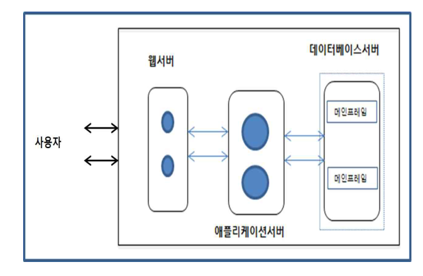

작성 기준: 업로드된 「4. 시스템 구조」 강의자료(
Module_04_시스템구조.pdf391p,[1]시스템 구조 감리사 강의자료.pdf120p) 우선 근거, 외부지식은 보조적으로만 사용(강의자료 미수록 항목은 각 문항에 명시)
정답 출처: 2018년(제19회) 정보시스템 감리사 필기시험 문제 및 답안.pdf (원본 Bold 표시 정답 - 페이지 렌더 이미지 직접 대조 확인)
정답 신뢰도: 매우 높음 (stroke-text 자동추출 25/25 + 보기 영역 렌더 확대 육안 대조 25/25 일치, 계산 문항 5개는 별도 재검산)
특이 문항: 없음 — 전항정답·복수정답·2개 선택 모두 없음(25문항 전부 단일 정답). 단, 86번 보기 ④가 "정답 없음" 으로 제시된 이례적 구성이다(2019년 87번과 동일한 형태이며, 정답은 ①이므로 실제 영향은 없다).
★ 텍스트 추출 주의: 83번의 IP 주소(168.199.160.82/27) 가 줄바꿈으로 잘리고, 87·88번의 수식이 수학 폰트라 추출되지 않는다. 본 해설집은 렌더 이미지로 원문을 확인하여 전사하였다.
기준 버전 주의: 본 회차는 2018년 시행분이다. TPC-E 벤치마크(78번), 오픈소스 라이선스(97번), 컨테이너 가상화(85번) 등은 이후 변화가 있으므로, 각 문항의 「관련 이론 정리」 말미에 현행(2025년 기준) 보충사항을 병기하였다.
| 번호 | 정답 | 번호 | 정답 | 번호 | 정답 |
|---|---|---|---|---|---|
| 76 | ② | 85 | ④ | 94 | ② |
| 77 | ③ | 86 | ① | 95 | ② |
| 78 | ① | 87 | ④ | 96 | ③ |
| 79 | ③ | 88 | ③ | 97 | ④ |
| 80 | ③ | 89 | ② | 98 | ④ |
| 81 | ② | 90 | ① | 99 | ③ |
| 82 | ④ | 91 | ④ | 100 | ③ |
| 83 | ② | 92 | ④ | ||
| 84 | ② | 93 | ④ |
2018년 제19회 시스템구조는 네트워크·프로토콜과 컴퓨터구조·운영체제가 양대 축을 이룬 균형형 회차다.
영역별 배분은 ① 네트워크·프로토콜 8문항(83·84·86·91·92·98·99·100), ② 컴퓨터 구조·운영체제 7문항(77·87·89·93·94 + 76·95), ③ 가상화·클라우드 3문항(82·85·96), ④ 성능·벤치마크 2문항(78·79), ⑤ AI·빅데이터 2문항(80·88), ⑥ 블록체인 1문항(90), ⑦ 무선통신 1문항(81), ⑧ 오픈소스 라이선스 1문항(97) 이다.
이 회차의 특징 다섯 가지.
첫째, 계산 문항이 5개(79·83·86·87·89) 로 모두 공식 하나로 해결된다. 3계층 응답시간(79), 서브넷 마지막 IP(83), Go-Back-N 수신 윈도우(86), 컴파일러 개선 후 실행시간(87), 클럭 속도(89) 이며, 87·89번은 CPU 성능 방정식을 공유한다.
둘째, "~하지 않는다·~할 수 없다·~해야 한다" 같은 단정형 오답이 두드러진다. 90번(PoW가 byzantine fault를 대응하지 않는다), 91번(DELETE가 멱등이 아니다), 94번(페이지 테이블을 하드디스크에 저장) 이 대표적이며, 기본 정의를 정확히 알면 즉시 걸러진다.
셋째, 그림 문항이 하나(79번) 있다. 3계층 아키텍처 도해이며, 본 해설집에서는 원본 이미지 + 서술 전사를 병기했다. 나머지 24문항은 텍스트 구성이다.
넷째, 2019년·2020년과 겹치는 주제가 많다. TLB·스래싱(93·94 ↔ 2019년 85·88), 블록체인 합의(90 ↔ 2019년 96·97), MQTT/CoAP(92 ↔ 2019년 99), NAND 플래시(95 ↔ 2019년 83), 클럭 계산(89 ↔ 2019년 81) 이 그것이다. 3개년을 묶어 학습하면 효율이 크게 오른다.
다섯째, 강의자료 미수록 영역이 상대적으로 적다. 오픈소스 라이선스(97), TPC-E 상세(78), DNS 라운드로빈(96) 정도이며, 2019년(TTA 표준 4문항)보다 대비가 수월하다.
강의자료 커버리지는 TCP·가상메모리·저장기술·컨테이너·블록체인에서 양호하며, 미수록 영역은 외부지식으로 보완했다.
| 항목 | 내용 |
|---|---|
| 문서명 | 정보시스템 감리사 시스템구조 기출문제 해설집 - 2018년 제19회 |
| 대상 문항 | Q76 ~ Q100 (시스템구조) |
| 원본 출처 | 2018년(제19회) 정보시스템 감리사 필기시험 문제 및 답안.pdf (p.16~19) |
| 정답 확인 방법 | stroke-text(글리프 render mode) 자동추출 + 보기 영역 렌더 확대 육안 대조 (25/25 일치) |
| 특이 문항 | 없음 (단, 86번 보기 ④가 "정답 없음"으로 제시된 이례적 구성) |
| 그림 포함 문항 | 79번 3계층 아키텍처 도해 — 이미지 + 서술 전사 병기 |
| 계산 문항 | 79·83·86·87·89번 — 전부 재검산 완료 |
| 텍스트 추출 보정 | 83번(IP 주소 잘림) · 87·88번(수식 폰트) — 렌더 이미지로 원문 확인 후 전사 |
| 근거 강의자료 | Module_04_시스템구조.pdf(1.ITA/EA · 2.웹기술 · 3.응용기술 · 4.통신 프로토콜 · 5.통신 시스템 · 6.유무선 통신기술 · 7.컴퓨터 구조 · 8.성능/용량 · 9.저장기술 · 10.ITSM), [1]시스템 구조 감리사 강의자료.pdf(Ch.I 네트워크 · Ch.II CA/OS · Ch.III 최신기술) |
| 작성일 | 2026-08-19 |
다음에 설명하는 RAID(Redundant Array of Inexpensive Disk) 기술로 가장 적절한 것은?
(제시 지문 전사)
데이터가 블록단위로 분산 저장된 여러 개의 데이터 디스크들과 하나의 패리티 디스크로 구성된 RAID로 블록 인터리브된 패리티(block-interleaved striping with parity) 방식이라고도 한다.
① RAID 1
② RAID 4
③ RAID 5
④ RAID 6
정답 : ②번
정답 신뢰도 : 매우 높음 (원본 Bold 확인)
| 항목 | 내용 |
|---|---|
| 연도 | 2018년 (제19회) |
| 과목 | 시스템구조 |
| 문항번호 | 76번 |
| 난이도 | 중 |
| 출제주제 | RAID 레벨 — RAID 4(블록 인터리브 패리티) |
RAID는 시스템구조의 최빈 주제로 거의 매년 출제된다. 형태는 ① 지문 → 레벨 지목(본 문항), ② 레벨별 특성 판정(2020년 85번), ③ 가용 용량·최소 디스크 계산, ④ 워크로드별 권장 레벨, ⑤ RAID 10 vs 01이다. 분산 단위 × 패리티 위치 2×2 표만 정확히 외우면 확실히 득점할 수 있다.
| 연도 | 문항번호 | 핵심개념 |
|---|---|---|
| 2018 | 95 | NAND 플래시 특성 |
| 2020 | 85 | RAID 레벨별 특성 판정 |
| 2022 | 96 | RAID 레벨 비교 |
RAID 4 = 블록 단위 스트라이핑 + 전용 패리티 디스크 1개 = "블록 인터리브 패리티" ★★
"하나의 패리티 디스크"라는 표현은 RAID 3 또는 RAID 4에만 해당 — RAID 5는 분산, RAID 6은 이중 분산
분산 단위 × 패리티 위치 2×2 표: 바이트+전용=RAID 3 / 블록+전용=RAID 4 / 블록+분산=RAID 5 ★
RAID 1에는 패리티 개념이 없다(완전 복제)
RAID 4의 한계 = 모든 쓰기가 패리티 디스크 하나에 집중되는 병목 → RAID 5가 이를 해소
RAID 3(바이트)은 디스크 회전 동기가 필요하고 동시에 하나의 I/O만 처리 / RAID 4(블록)는 독립 접근 가능
쓰기 페널티: RAID 0=1, RAID 1/10=2, RAID 3/4/5=4, RAID 6=6
RAID ≠ 백업 — 삭제·랜섬웨어·재해는 RAID로 막지 못한다
지문의 세 단서가 모두 RAID 4를 지목한다
| 지문 | RAID 4의 특성 |
|---|---|
| "블록단위로 분산 저장" | 블록 단위 스트라이핑 ✓ ★ |
| "하나의 패리티 디스크" | 전용 패리티 디스크 1개 ✓ ★★ |
| "블록 인터리브된 패리티" | RAID 4의 정식 명칭 ✓ ★ |
→ 정답 ②
RAID 4의 구조
RAID 4 (블록 단위 스트라이핑 + 전용 패리티)
D1 D2 D3 P(전용 패리티) ★
┌────┐ ┌────┐ ┌────┐ ┌────┐
│ A1 │ │ A2 │ │ A3 │ │ Pa │ ← Pa = A1⊕A2⊕A3
├────┤ ├────┤ ├────┤ ├────┤
│ B1 │ │ B2 │ │ B3 │ │ Pb │
├────┤ ├────┤ ├────┤ ├────┤
│ C1 │ │ C2 │ │ C3 │ │ Pc │
└────┘ └────┘ └────┘ └────┘
↑ 블록 단위로 분산 ↑ 패리티가 한 디스크에 집중 ★
| 항목 | 내용 |
|---|---|
| 분산 단위 | 블록(block) ★ |
| 중복 방식 | 단순 패리티(XOR) |
| 패리티 위치 | 전용 디스크 1개 ★★ |
| 최소 디스크 | 3개 |
| 가용 용량 | (n−1)/n |
| 내결함성 | 1개 디스크 고장 허용 |
| 정식 명칭 | block-interleaved parity ★ |
| 한계 | 패리티 디스크 쓰기 병목 ★ |
RAID 4의 병목 문제 — RAID 5가 등장한 이유
어떤 데이터 블록을 쓰든 반드시 패리티 디스크에도 써야 한다
A1 수정 → D1 쓰기 + P 쓰기
B2 수정 → D2 쓰기 + P 쓰기
C3 수정 → D3 쓰기 + P 쓰기
↑
★ 모든 쓰기가 P 디스크 하나에 집중 ★
★ 패리티 디스크가 전체 쓰기 성능의 상한이 된다 ★
→ RAID 5는 패리티를 모든 디스크에 라운드로빈 분산해 이 병목을 해소
2020년 85번과의 연계: 2020년에는 "RAID-5가 RAID-4의 패리티 병목을 완화한다" 는 서술이 참인 보기로 출제되었다. 두 회차가 같은 논점의 앞뒤를 묻고 있다.
| 항목 | 내용 |
|---|---|
| 방식 | 디스크 미러링(완전 복제) ★ |
| 패리티 | 없음 ✗ ★ |
| 분산 단위 | 스트라이핑 없음(전체 복제) |
| 가용 용량 | 50% |
| 최소 디스크 | 2개 |
지문과의 불일치: 지문이 "패리티 디스크" 를 명시하는데, RAID 1에는 패리티 개념 자체가 없다.
| 항목 | RAID 4 | RAID 5 |
|---|---|---|
| 분산 단위 | 블록 | 블록(동일) |
| 패리티 위치 | 전용 디스크 1개 ★ | 모든 디스크에 분산 ★★ |
| 쓰기 병목 | 발생 | 완화 |
| 상용화 | 제한적 | 가장 널리 사용 |
RAID 5 (블록 단위 + 분산 패리티)
D1 D2 D3 D4
┌────┐ ┌────┐ ┌────┐ ┌────┐
│ A1 │ │ A2 │ │ A3 │ │ Pa │ ← 패리티가
├────┤ ├────┤ ├────┤ ├────┤
│ B1 │ │ B2 │ │ Pb │ │ B3 │ 매 스트라이프마다
├────┤ ├────┤ ├────┤ ├────┤
│ C1 │ │ Pc │ │ C2 │ │ C3 │ 위치를 바꾼다 ★
├────┤ ├────┤ ├────┤ ├────┤
│ Pd │ │ D1 │ │ D2 │ │ D3 │
└────┘ └────┘ └────┘ └────┘
★ "하나의 패리티 디스크"가 존재하지 않는다 ★
가장 매력적인 오답이다. 분산 단위(블록)가 RAID 4와 동일하기 때문이다. 그러나 지문의 "하나의 패리티 디스크로 구성된" 이라는 구절이 RAID 5를 명확히 배제한다. RAID 5에는 전용 패리티 디스크가 존재하지 않는다.
| 항목 | 내용 |
|---|---|
| 패리티 | 2개(P + Q), 모두 분산 ★ |
| 내결함성 | 2개 디스크 동시 고장 허용 ★ |
| 최소 디스크 | 4개 |
| 가용 용량 | (n−2)/n |
| 쓰기 페널티 | 6(가장 큼) |
지문과의 불일치: 지문은 "하나의 패리티 디스크" 라 했으나 RAID 6은 패리티가 2개다.
소거 요령: 지문의 두 단서를 순서대로 적용한다.
1단계 — "패리티가 있는가"
보기 패리티 ① RAID 1 없음(미러링) → 탈락 ★ ②③④ 있음 2단계 — "패리티 디스크가 하나이고 전용인가"
보기 패리티 구성 ② RAID 4 전용 1개 → 정답 ★★ ③ RAID 5 분산(전용 없음) → 탈락 ④ RAID 6 분산 2개 → 탈락 "하나의 패리티 디스크" 라는 표현이 RAID 3과 RAID 4에만 해당하며, "블록 단위" 가 RAID 4를 확정한다.
RAID 레벨 — 완전 비교표
| 레벨 | 분산 단위 | 중복 방식 | 최소 디스크 | 가용 용량 | 내결함성 | 쓰기 페널티 |
|---|---|---|---|---|---|---|
| RAID 0 | 블록 | 없음 ★ | 2 | 100% | 없음 ★ | 1 |
| RAID 1 | 미러링 | 완전 복제 | 2 | 50% ★ | 1개 | 2 |
| RAID 2 | 비트 ★ | 해밍코드 ECC | 3+ | 가변 | 1개 | — |
| RAID 3 | 바이트 ★ | 전용 패리티 1개 | 3 | (n−1)/n | 1개 | 4 |
| RAID 4 | 블록 ★ | 전용 패리티 1개 ★ | 3 | (n−1)/n | 1개 | 4 |
| RAID 5 | 블록 | 분산 패리티 ★ | 3 | (n−1)/n | 1개 | 4 |
| RAID 6 | 블록 | 이중 분산 패리티 ★ | 4 | (n−2)/n | 2개 ★ | 6 |
| RAID 10 | 미러+스트라이프 | 복제 | 4 | 50% | 그룹당 1개 | 2 |
$$\boxed{\text{RAID 3} = \text{바이트} + \text{전용 패리티} \quad / \quad \text{RAID 4} = \text{블록} + \text{전용 패리티} \quad / \quad \text{RAID 5} = \text{블록} + \text{분산 패리티}}$$
3·4·5의 구분이 시험의 핵심이다. 분산 단위(바이트/블록)와 패리티 위치(전용/분산) 두 축으로 정리하면 혼동하지 않는다.
| 전용 패리티 | 분산 패리티 | |
|---|---|---|
| 바이트 단위 | RAID 3 | — |
| 블록 단위 | RAID 4 ★ | RAID 5 ★ |
패리티(XOR)의 원리와 복구
$$P = D_1 \oplus D_2 \oplus D_3$$
$$D_2 = P \oplus D_1 \oplus D_3 \quad (\text{복구})$$
D1 = 1011
D2 = 0110
D3 = 1100
────────────
P = 1011 ⊕ 0110 ⊕ 1100 = 0001
D2 고장 시 복구
D2 = P ⊕ D1 ⊕ D3 = 0001 ⊕ 1011 ⊕ 1100 = 0110 ✓
| 성질 | 내용 |
|---|---|
| A ⊕ A = 0 | 자기 자신과의 XOR은 0 |
| A ⊕ 0 = A | 항등원 |
| 복구 가능 수 | 패리티 개수만큼(RAID 5는 1개, RAID 6은 2개) ★ |
RAID 3 vs RAID 4 — 분산 단위의 실질적 차이
| 항목 | RAID 3(바이트) | RAID 4(블록) |
|---|---|---|
| 접근 단위 | 모든 디스크가 동시 참여 ★ | 한 디스크만 참여 가능 ★ |
| 동기화 | 디스크 회전 동기 필요 ★ | 불필요 |
| 대용량 순차 I/O | 매우 유리(병렬 전송) ★ | 보통 |
| 소규모 랜덤 I/O | 불리(매번 전 디스크 동작) ★ | 유리(독립 접근) ★ |
| 용도 | 영상·대용량 스트리밍 | 파일 서버 |
[RAID 3 — 바이트 단위]
1바이트를 읽어도 모든 디스크가 동작해야 한다
→ 동시에 하나의 I/O만 처리 가능 ★
[RAID 4 — 블록 단위]
A1은 D1에만, B2는 D2에만 있다
→ 서로 다른 블록을 동시에 읽을 수 있다(독립 접근) ★
RAID 4가 RAID 3보다 개선된 점: 블록 단위로 나누어 디스크별 독립 접근이 가능해졌다. 다만 쓰기 시 패리티 디스크 병목은 그대로 남아 RAID 5로 진화했다.
쓰기 페널티(Write Penalty)
RAID 4/5에서 블록 1개를 수정할 때
① 기존 데이터 읽기 (Read)
② 기존 패리티 읽기 (Read)
③ 새 패리티 계산 (XOR)
④ 새 데이터 쓰기 (Write)
⑤ 새 패리티 쓰기 (Write)
─────────────────────────────
총 4회 I/O = 쓰기 페널티 4 ★
| RAID | 쓰기 페널티 |
|---|---|
| 0 | 1 |
| 1 / 10 | 2 ★ |
| 3 / 4 / 5 | 4 ★ |
| 6 | 6 ★ |
RAID 4의 추가 문제: 페널티 4가 모두 하나의 패리티 디스크에 집중되므로, 실질 쓰기 성능이 패리티 디스크 1대의 성능에 묶인다.
RAID 4를 실제로 쓰는 곳(참고)
| 사례 | 내용 |
|---|---|
| NetApp WAFL | RAID-DP(RAID 4 계열 이중 패리티) ★ |
| 원리 | 파일시스템이 쓰기를 순차화해 패리티 병목을 회피 ★ |
RAID 4가 완전히 사장되지 않은 이유: 파일시스템 수준에서 쓰기를 모아 순차 처리하면 패리티 병목이 크게 줄어든다. NetApp이 이 방식을 채택했다.
RAID는 백업이 아니다 — 재확인
| RAID가 막는 것 | RAID가 못 막는 것 |
|---|---|
| 디스크 물리 고장 | 사용자 실수 삭제 ★ |
| 랜섬웨어·악성코드 ★ | |
| 논리적 손상 | |
| 화재·수해 등 재해 | |
| 컨트롤러·전원 장애 |
$$\boxed{\text{RAID는 가용성, 백업은 복구} \quad \text{— 서로 대체 불가}}$$
강의자료 근거:
Module_04_시스템구조.pdf9.저장기술(p.368~) 에 RAID 레벨이 수록되어 있다.
RAID 레벨 선택은 스토리지 설계 감리의 핵심 점검 항목이다.
| 용도 | 권장 RAID |
|---|---|
| OS 부팅 영역 | RAID 1 |
| OLTP DB 데이터 | RAID 10 ★ |
| DB 로그(Redo) | RAID 1 / 10 |
| 파일 서버·아카이브 | RAID 5 / 6 |
| 대용량 디스크(수 TB) | RAID 6 ★ |
| 영상 스트리밍 | RAID 3 / 5 |
| 임시·캐시 | RAID 0 |
감리에서는 ① 워크로드(읽기/쓰기 비율)에 맞는 레벨을 선택했는가, ② 쓰기 집약 DB에 RAID 5/6을 쓰지 않았는가, ③ 대용량 디스크의 재구축 위험을 검토했는가, ④ 핫스페어가 구성되었는가, ⑤ RAID를 백업으로 오인하지 않았는가, ⑥ 배터리 백업 캐시(BBU)가 있는가를 점검한다.
흔한 결함 1: OLTP DB를 RAID 5에 구성해, 쓰기 페널티 4로 트랜잭션 처리량이 목표의 절반에 그친 사례다. RAID 10 전환이 해법이다.
흔한 결함 2: 8TB 디스크 12개를 RAID 5로 구성해, 재구축에 40시간 이상이 걸리고 그 사이 2차 고장 시 전손 위험이 있었던 사례다. RAID 6 권고.
흔한 결함 3: RAID만 구성하고 백업을 하지 않아, 랜섬웨어 감염 시 모든 디스크의 데이터가 동시에 암호화되어 복구 불가였던 사례다.
흔한 결함 4: 쓰기 캐시를 활성화했으나 BBU가 없어, 정전 시 캐시의 미기록 데이터가 유실되고 DB가 손상된 사례다.
RAID 문항은 분산 단위 × 패리티 위치 두 축으로 판정한다.
절대 암기
| 레벨 | 한 줄 정의 |
|---|---|
| 0 | 스트라이핑만(내결함성 0) |
| 1 | 미러링(50%) |
| 2 | 비트 + 해밍코드(미사용) |
| 3 | 바이트 + 전용 패리티 ★ |
| 4 | 블록 + 전용 패리티 ★★ |
| 5 | 블록 + 분산 패리티 ★★ |
| 6 | 블록 + 이중 분산 패리티(2개 고장 허용) ★ |
| 10 | 미러 + 스트라이프(성능·안정 최고) |
참인 서술 (○)
| 항목 |
|---|
| RAID 4 = 블록 인터리브 패리티(전용 디스크 1개) ★ |
| RAID 5는 패리티를 분산해 병목 완화 ★ |
| RAID 3은 바이트 단위(디스크 동기 필요) |
| RAID 6은 2개 디스크 고장 허용 |
| RAID 1에는 패리티가 없다 ★ |
| 쓰기 페널티: RAID 5 = 4, RAID 6 = 6 |
| RAID는 백업을 대체하지 않는다 ★ |
거짓인 서술 (✗) — 출제 단골
| 틀린 서술 | 실제 |
|---|---|
| RAID 5가 전용 패리티 디스크 사용 | 분산(전용은 RAID 4) ★ |
| RAID 4가 바이트 단위 | 블록 단위(바이트는 RAID 3) ★ |
| RAID 1이 패리티를 사용 | 완전 복제 |
| RAID 5가 2개 고장 허용 | 1개(2개는 RAID 6) ★ |
| RAID 0이 내결함성 제공 | 없음 |
감점 포인트
| 실수 | 예방 |
|---|---|
| RAID 4/5 패리티 위치 혼동 | 4=전용, 5=분산 ★★ |
| RAID 3/4 분산 단위 혼동 | 3=바이트, 4=블록 ★ |
| "하나의 패리티 디스크" 단서 간과 | 전용 = 3 또는 4 |
비동기식 버스(asynchronous bus) 에 대한 설명으로 가장 거리가 먼 것은?
① 공통 클럭을 사용하지 않고 상대방 이벤트를 위한 시그널을 전파한다.
② 핸드쉐이킹(handshaking) 신호를 송수신하는 제어선이 추가적으로 필요하다.
③ 비동기식 버스의 제어 신호는 고정길이를 사용한다.
④ 비동기식 프로토콜은 시그널 에지로 표시된 이벤트가 버스를 통해 전파되기 때문에 버스 지연시간이 길다.
정답 : ③번 (거리가 먼 것)
정답 신뢰도 : 매우 높음 (원본 Bold 확인)
| 항목 | 내용 |
|---|---|
| 연도 | 2018년 (제19회) |
| 과목 | 시스템구조 |
| 문항번호 | 77번 |
| 난이도 | 중 |
| 출제주제 | 시스템 버스 — 동기식 버스 vs 비동기식 버스 |
시스템 버스는 컴퓨터 구조의 기본 출제 영역으로 2~3년 주기로 나온다. 형태는 ① 동기/비동기 특성 판정(본 문항), ② 버스 대역폭 계산(2020년 95번), ③ 버스 종류와 방향(주소·데이터·제어), ④ 버스 중재 방식, ⑤ DMA다. "클럭 유무 → 고정/가변" 이라는 대응 하나로 본 문항 유형이 해결된다.
| 연도 | 문항번호 | 핵심개념 |
|---|---|---|
| 2018 | 87 | CPU 성능(컴파일러 개선) |
| 2018 | 89 | 클럭 속도 계산 |
| 2020 | 95 | 버스 대역폭 계산 |
비동기식 버스는 클럭이 없으므로 제어 신호가 "가변 길이" — "고정길이"는 동기식의 특징 ★★
동기식 = 공통 클럭 + 고정 길이 + 빠름 + 근거리 / 비동기식 = 핸드셰이킹 + 가변 길이 + 느림 + 원거리 ★
비동기식의 핸드셰이킹은 REQ/ACK 4단계 왕복 → 전파 지연이 누적되어 지연시간이 길다
비동기식은 제어선이 "추가로" 필요(REQ·ACK) — 유연성의 대가
동기식의 한계: 클럭 스큐로 버스 길이 제약 + 가장 느린 장치에 클럭을 맞춰야 함
현대 버스는 대부분 반동기식(클럭 사용 + WAIT 신호로 연장)
병렬 버스가 직렬 버스(PCIe·SATA·USB)로 전환된 이유도 클럭 스큐 — 직렬은 스큐 문제가 없다
"클럭이 없는데 길이가 고정"이라는 서술은 자기모순 — 판정의 결정적 근거
③이 틀린 이유 — 비동기식은 가변 길이
| ③의 주장 | 실제 |
|---|---|
| 비동기식 제어 신호가 "고정길이" | ✗ 가변 길이 ★★ |
왜 가변일 수밖에 없는가
[동기식 버스]
공통 클럭 : ┐_┌─┐_┌─┐_┌─┐_┌─
│ │ │ │ │ │ │
★ 모든 동작이 "클럭 몇 개"로 표현된다 → 고정 길이 ★
예) 읽기 = 정확히 3클럭
[비동기식 버스]
클럭 없음
마스터 : ──REQ─────────┐
슬레이브: ─────────ACK──┘
↑
★ 슬레이브가 준비될 때까지 기다린다 ★
★ 빠른 장치는 짧게, 느린 장치는 길게 → 가변 길이 ★
| 항목 | 동기식 | 비동기식 |
|---|---|---|
| 클럭 | 공통 클럭 사용 ★ | 없음 ★ |
| 신호 길이 | 고정(클럭 주기 배수) ★★ | 가변(핸드셰이킹 완료까지) ★★ |
| 타이밍 결정 | 클럭 에지 | 신호 에지(이벤트) ★ |
→ 정답 ③
비동기식 버스의 4단계 핸드셰이킹
마스터(CPU) 슬레이브(메모리·I/O)
│ │
① 주소·요청 신호 설정 ──REQ 상승──▶│
│ │
│ ② 데이터 준비
│ │
│◀──ACK 상승──────── ③ 준비 완료 통지
│ │
④ 데이터 수신 ──REQ 하강──────────▶│
│ │
│◀──ACK 하강──────── ⑤ 종료 확인
│ │
★ ②의 소요 시간이 장치마다 다르다 → 전체 소요 시간 가변 ★
| 신호 | 역할 |
|---|---|
| REQ(Request) | 마스터의 요청·완료 통지 ★ |
| ACK(Acknowledge) | 슬레이브의 준비·종료 확인 ★ |
핸드셰이킹의 본질: "준비됐니?" ↔ "됐어!" 를 주고받는 것이다. 상대의 응답을 기다리므로 시간이 고정될 수 없다.
나머지 보기: 모두 비동기식 버스의 올바른 설명
| 요소 | 판정 |
|---|---|
| "공통 클럭을 사용하지 않고" | ✓ 비동기식의 정의 그 자체 ★★ |
| "상대방 이벤트를 위한 시그널을 전파" | ✓ 이벤트 기반 동작 ★ |
동기식이 클럭에 의존하는 문제
| 문제 | 설명 |
|---|---|
| 가장 느린 장치에 맞춤 | 클럭 주기를 최저 성능 장치 기준으로 설정 ★ |
| 클럭 스큐(Clock Skew) | 거리가 멀수록 클럭 도착 시간 차이 ★ |
| 버스 길이 제약 | 클럭 동기 유지 가능한 범위로 제한 ★ |
| 이기종 장치 혼용 | 어려움 |
동기식 버스의 딜레마
빠른 메모리(1클럭이면 충분) + 느린 I/O(5클럭 필요)
↓
★ 클럭 주기를 느린 장치 기준으로 설정해야 한다 ★
↓
빠른 메모리도 느린 속도로 동작 → 성능 낭비
→ 비동기식은 각 장치가 자기 속도로 응답 ✓
| 요소 | 판정 |
|---|---|
| 핸드셰이킹 신호 송수신 제어선 필요 | ✓ REQ/ACK 등 별도 선 ★ |
| "추가적으로" | ✓ 동기식 대비 증가 ★ |
제어선 수 비교
| 방식 | 필요 제어선 |
|---|---|
| 동기식 | 클럭 1개 + 읽기/쓰기 신호(비교적 단순) ★ |
| 비동기식 | REQ + ACK + 읽기/쓰기 등(더 많음) ★ |
| 항목 | 대가 |
|---|---|
| 장점 | 각 장치가 자기 속도로 동작, 이기종 혼용 유리 ★ |
| 단점 | 제어선 증가, 회로 복잡, 지연 증가 ★ |
②는 비동기식의 "비용" 을 정확히 서술한다. 유연성을 얻는 대신 하드웨어 복잡도가 올라간다.
| 요소 | 판정 |
|---|---|
| "시그널 에지로 표시된 이벤트가 버스를 통해 전파" | ✓ 비동기식의 동작 원리 ★ |
| "버스 지연시간이 길다" | ✓ 왕복 핸드셰이킹의 대가 ★★ |
왜 지연이 긴가
[동기식] 클럭 에지에 맞춰 즉시 전송
마스터 ──데이터──▶ 슬레이브
★ 한 방향 전파만으로 완료 ★
[비동기식] 매 단계마다 왕복이 필요
마스터 ──REQ──▶ 슬레이브 (전파 지연 1회)
마스터 ◀──ACK── 슬레이브 (전파 지연 1회)
마스터 ──REQ↓─▶ 슬레이브 (전파 지연 1회)
마스터 ◀──ACK↓─ 슬레이브 (전파 지연 1회)
★ 4번의 전파 지연이 누적된다 ★
| 요인 | 내용 |
|---|---|
| 왕복 지연 | REQ·ACK 교환에 신호 전파 시간 누적 ★ |
| 동기화 오버헤드 | 에지 검출·안정화 시간 |
| 결과 | 동일 조건에서 동기식보다 느림 ★ |
④가 비동기식의 결정적 단점이다. 이 때문에 CPU와 메모리처럼 고속·근거리 구간은 동기식을 쓴다.
소거 요령: ①②④는 모두 "클럭이 없어서 생기는 결과" 를 서술한다.
보기 클럭 없음 → 결과 ① 이벤트 신호로 동작 ✓ ② 핸드셰이킹 제어선 필요 ✓ ④ 왕복 지연으로 느림 ✓ ③ "고정길이" ← 클럭이 없는데 어떻게 길이가 고정되나 ✗ ★★ 논리적 판정: 고정 길이는 기준이 되는 클럭이 있어야 성립한다. 클럭이 없는 비동기식에서 "고정길이"는 자기모순이다.
일반 원리: 동기식 = 클럭 있음 = 고정 / 비동기식 = 클럭 없음 = 가변 — 이 대응을 뒤집은 서술이 정답이다.
동기식 버스 vs 비동기식 버스 — 완전 비교
| 항목 | 동기식 버스 | 비동기식 버스 |
|---|---|---|
| 공통 클럭 | 있음 ★ | 없음 ★ |
| 타이밍 기준 | 클럭 에지 | 신호(이벤트) 에지 ★ |
| 전송 길이 | 고정(클럭 주기 배수) ★★ | 가변(핸드셰이킹 완료까지) ★★ |
| 핸드셰이킹 | 불필요(또는 최소) | 필수(REQ/ACK) ★ |
| 제어선 수 | 적음 ★ | 많음 ★ |
| 속도 | 빠름 ★ | 느림 |
| 버스 길이 | 짧아야 함(클럭 스큐) ★ | 길어도 무방 ★ |
| 이기종 장치 | 불리(느린 장치 기준) ★ | 유리(각자 속도) ★ |
| 복잡도 | 단순 ★ | 복잡 |
| 용도 | CPU-메모리, 시스템 버스 ★ | I/O 버스, 주변장치 ★ |
$$\boxed{\text{동기식} = \text{클럭} + \text{고정} + \text{고속} + \text{근거리} \quad / \quad \text{비동기식} = \text{핸드셰이킹} + \text{가변} + \text{유연} + \text{원거리}}$$
반동기식(Semi-synchronous) 버스
| 항목 | 내용 |
|---|---|
| 개념 | 클럭은 사용하되, 슬레이브가 대기 신호(WAIT)로 연장 요청 ★ |
| 장점 | 동기식의 속도 + 비동기식의 유연성 ★ |
| 동작 | 느린 장치는 웨이트 스테이트(wait state) 삽입 |
| 실제 채택 | 대부분의 현대 버스가 이 방식 ★ |
반동기식 동작
클럭 : ┐_┌─┐_┌─┐_┌─┐_┌─
요청 : ──────┐
WAIT : ──────┴──┐ ← 슬레이브가 "아직 준비 안 됨" 표시
데이터 : └──[유효] ← 준비되면 전송
★ 클럭 단위로 동작하되, 필요하면 클럭 수를 늘린다 ★
실무 현실: 순수 동기식·순수 비동기식은 드물고, 대부분 반동기식이다. 시험에서는 두 극단의 특성 대비를 묻는다.
시스템 버스의 구성(2020년 95번과 연계)
| 버스 | 전달 내용 | 방향 |
|---|---|---|
| 주소 버스 | 메모리·I/O 주소 | 단방향(CPU→) ★ |
| 데이터 버스 | 실제 데이터 | 양방향 ★ |
| 제어 버스 | 읽기/쓰기·인터럽트·클럭·REQ/ACK ★ | 양방향 |
$$\text{버스 대역폭} = \text{클럭률} \times \text{버스 폭(byte)}$$
비동기식에는 클럭이 없으므로 이 공식이 그대로 적용되지 않는다. 실효 전송률은 핸드셰이킹 소요 시간에 좌우된다.
버스 중재(Bus Arbitration)
| 방식 | 내용 |
|---|---|
| 데이지 체인 | 순차 연결, 앞쪽 우선 — 단순하나 불공평 ★ |
| 폴링 | 중재기가 순서대로 확인 |
| 독립 요청 | 장치마다 요청선 — 빠르나 배선 많음 ★ |
| 분산 중재 | 각 장치가 스스로 판단 |
병렬 버스 vs 직렬 버스 — 현대적 전환
| 항목 | 병렬 버스 | 직렬 버스 |
|---|---|---|
| 전송 | 여러 비트 동시 | 1비트씩 고속 |
| 문제 | 클럭 스큐·크로스토크 ★ | 없음 |
| 고속화 | 어려움 | 용이 ★ |
| 배선 | 많음 | 적음 |
| 예 | ISA, PCI, IDE, SCSI | PCIe, SATA, USB, SAS ★ |
병렬 버스가 한계에 부딪힌 이유
클럭이 높아질수록 각 신호선의 도착 시간 차이(스큐)를
맞추는 것이 물리적으로 불가능해진다
↓
★ "차라리 한 줄로 초고속 전송하고, 줄 수를 늘리자" ★
↓
PCIe 레인(x1, x4, x8, x16) 방식으로 전환
직렬 방식은 각 레인이 독립적이므로 스큐 문제가 없고, 레인별 클럭 복원(embedded clock) 으로 별도 클럭선도 불필요하다.
DMA와 인터럽트(참고)
| 기법 | 내용 |
|---|---|
| 프로그램 I/O | CPU가 직접 폴링 — 비효율 ★ |
| 인터럽트 I/O | 장치가 완료를 알림 — CPU 효율 개선 ★ |
| DMA | CPU 개입 없이 장치가 메모리 직접 접근 ★★ |
| DMA 모드 | 내용 |
|---|---|
| 사이클 스틸링 | CPU가 버스를 안 쓰는 사이클에 끼어듦 ★ |
| 버스트 모드 | 버스를 독점해 대량 전송 ★ |
| 투명 모드 | CPU에 전혀 영향 없음 |
강의자료 근거:
Module_04_시스템구조.pdf7.컴퓨터 구조(p.285~) 에 시스템 버스·동기/비동기 전송이 수록되어 있다.
버스 방식 이해는 하드웨어 인터페이스 설계·성능 분석의 기초다.
| 구간 | 방식 |
|---|---|
| CPU ↔ 캐시·메모리 | 동기식(고속·근거리) ★ |
| CPU ↔ 주변장치 | 반동기식·비동기식 |
| 장거리 산업 통신 | 비동기식(RS-232 등) ★ |
| 고속 확장 슬롯 | 직렬(PCIe) ★ |
| 임베디드 센서 | I2C(동기), UART(비동기) ★ |
감리에서는 ① 인터페이스 규격이 요구 전송률을 충족하는가, ② 버스 대역폭이 병목이 아닌가, ③ 이기종 장치 혼용 시 속도 저하가 검토되었는가, ④ DMA·오프로드가 활용되는가를 점검한다.
흔한 결함 1: 느린 레거시 장치를 고속 동기식 버스에 연결해, 전체 버스 클럭이 하향 조정되면서 다른 고속 장치의 성능까지 떨어진 사례다.
흔한 결함 2: 직렬 인터페이스의 레인 수를 확인하지 않고 고속 카드를 저속 슬롯에 장착해, 실효 대역폭이 1/4로 떨어진 사례다(2020년 95번의 결함과 동일).
흔한 결함 3: CPU 폴링 방식 I/O를 그대로 사용해, 대용량 전송 시 CPU 사용률이 100%에 근접한 사례다. DMA 적용이 해법이다.
흔한 결함 4: 산업용 장거리 통신에 동기식 병렬 인터페이스를 계획해, 클럭 스큐로 거리 제약에 걸린 사례다.
버스 문항은 클럭 유무 → 파생 특성으로 판정한다.
절대 대응
| 특성 | 동기식 | 비동기식 |
|---|---|---|
| 클럭 | 있음 | 없음 |
| 길이 | 고정 ★ | 가변 ★ |
| 핸드셰이킹 | 불필요 | 필수 |
| 속도 | 빠름 | 느림 |
| 거리 | 짧음 | 김 |
참인 서술 (○)
| 항목 |
|---|
| 비동기식은 공통 클럭을 사용하지 않는다 ★ |
| 비동기식은 REQ/ACK 핸드셰이킹 제어선이 필요 ★ |
| 비동기식은 왕복 지연으로 속도가 느리다 ★ |
| 비동기식은 신호 길이가 가변 ★★ |
| 동기식은 버스 길이 제약(클럭 스큐) ★ |
| 동기식은 느린 장치에 맞춰 클럭을 설정해야 한다 |
| 현대 버스는 대부분 반동기식 |
거짓인 서술 (✗) — 출제 단골
| 틀린 서술 | 실제 |
|---|---|
| 비동기식 제어 신호가 고정길이 | 가변(← 본 문항 ③) ★★ |
| 비동기식이 동기식보다 빠르다 | 느리다 ★ |
| 동기식에 핸드셰이킹이 필수 | 비동기식에 필수 |
| 비동기식이 제어선이 더 적다 | 더 많다 |
| 동기식이 장거리에 유리 | 비동기식이 유리 |
감점 포인트
| 실수 | 예방 |
|---|---|
| 고정/가변 대응 반전 | 클럭 없으면 고정 불가 ★★ |
| 속도 관계 혼동 | 핸드셰이킹 = 오버헤드 |
| 제어선 수 반대 | REQ/ACK 추가 필요 |
트랜잭션 성능을 예측하는 TPC(Transaction Processing Performance Council)의 벤치마크인 TPC-E에 대한 설명으로 가장 거리가 먼 것은?
① TPC-E는 도매 공급자를 위한 애플리케이션을 모델로 한다.
② TPC-C와 다르게 트랜잭션 미들웨어를 포함하지 않으며, 데이터베이스 성능 만을 측정한다.
③ TPC-C에 비해 현재의 TP(Transaction Processing) 애플리케이션을 대표하는 더 크고 복잡한 데이터베이스와 트랜잭션 작업부하를 나타낸다.
④ TPC-E는 TPC-C에 비해 트랜잭션이 더 적은 I/O를 발생시킨다.
정답 : ①번 (거리가 먼 것)
정답 신뢰도 : 매우 높음 (원본 Bold 확인)
| 항목 | 내용 |
|---|---|
| 연도 | 2018년 (제19회) |
| 과목 | 시스템구조 |
| 문항번호 | 78번 |
| 난이도 | 중상 |
| 출제주제 | 성능 벤치마크 — TPC-E와 TPC-C의 비교 |
성능 벤치마크는 2~3년 주기로 출제된다. 형태는 ① 벤치마크 특성 판정(본 문항), ② tpmC ↔ IOPS 환산(2019년 76번), ③ OLTP vs DSS 구분, ④ 성능 지표의 의미(MIPS의 한계)다. "TPC-C = 도매, TPC-E = 증권" 이라는 매칭 하나가 본 문항 유형의 핵심이며, C=Commerce, E=Exchange 연상법이 유효하다.
| 연도 | 문항번호 | 핵심개념 |
|---|---|---|
| 2018 | 79 | 3계층 응답시간 계산 |
| 2019 | 76 | 하드웨어 규모산정(tpmC→IOPS) |
| 2020 | 99 | 네트워크 장비 규모산정 |
TPC-E는 「증권 중개(brokerage)」 모델 — "도매 공급자(wholesale supplier)"는 TPC-C의 모델 ★★
연상법: TPC-C = Commerce(상거래·창고·주문) / TPC-E = Exchange(증권거래소) ★
지표: TPC-C = tpmC(분당 New-Order) / TPC-E = tpsE(초당 Trade-Result)
TPC-E는 TPC-C보다 ① 복잡하고(33 테이블 vs 9) ② I/O가 적으며(읽기 9.7:1) ③ 미들웨어를 포함하지 않는다 ★
TPC-C는 스토리지 I/O가 병목, TPC-E는 CPU가 병목 — 최적화 방향이 다르다
TPC 계열: C·E(OLTP) / H·DS(DW·분석) / TPCx-BB(빅데이터) / TPCx-AI
벤치마크는 성능 + 가격대성능($/tpmC) + 가용성 일자를 함께 공표
벤치마크 수치 ≠ 실업무 성능 — 자체 PoC가 반드시 필요
①이 틀린 이유 — 도매 공급자는 TPC-C의 모델
| 벤치마크 | 업무 모델 |
|---|---|
| TPC-C | 도매 공급자(wholesale supplier) — 창고·주문·재고 ★★ |
| TPC-E | 증권 중개 회사(brokerage firm) — 고객·계좌·거래 ★★ |
$$\boxed{\text{TPC-C} = \text{도매} \cdot \text{주문 처리} \qquad \text{TPC-E} = \text{증권} \cdot \text{거래 중개}}$$
→ 정답 ①
TPC-C의 업무 시나리오 — 도매 공급자
가상의 도매 유통 회사
· 여러 개의 창고(Warehouse)
· 각 창고는 10개 구역(District) 담당
· 각 구역은 3,000명의 고객(Customer) 보유
· 상품 10만 종(Item) 취급
5가지 트랜잭션 유형
① New-Order : 신규 주문 입력 (45%) ★ 주력
② Payment : 대금 지불 (43%)
③ Order-Status: 주문 상태 조회 (4%)
④ Delivery : 배송 처리 (4%)
⑤ Stock-Level : 재고 수준 조회 (4%)
| 항목 | 내용 |
|---|---|
| 성능 지표 | tpmC(분당 New-Order 트랜잭션 수) ★ |
| 발표 | 1992년 ★ |
| 테이블 수 | 9개 |
| 특징 | 단순한 스키마, 짧은 트랜잭션 ★ |
2019년 76번과의 연계: 하드웨어 규모산정 지침의 tpmC가 바로 TPC-C의 지표다. "스토리지 IOPS = tpmC ÷ 50" 공식이 여기서 나온다.
TPC-E의 업무 시나리오 — 증권 중개
가상의 증권 중개 회사
· 고객(Customer)이 계좌(Account)를 통해
· 증권(Security)을 매매하는 거래를 처리
· 시장 데이터·고객 정보·거래 이력 관리
12가지 트랜잭션 유형 (TPC-C보다 훨씬 다양)
· Trade-Order, Trade-Result, Trade-Status
· Trade-Lookup, Trade-Update
· Customer-Position, Market-Feed, Market-Watch
· Security-Detail, Broker-Volume, Data-Maintenance 등
| 항목 | 내용 |
|---|---|
| 성능 지표 | tpsE(초당 Trade-Result 트랜잭션 수) ★ |
| 발표 | 2007년 ★ |
| 테이블 수 | 33개(TPC-C의 9개 대비 대폭 증가) ★★ |
| 특징 | 복잡한 스키마, 참조무결성 강화, 읽기 비중 높음 ★ |
TPC-C vs TPC-E — 완전 비교
| 항목 | TPC-C | TPC-E |
|---|---|---|
| 업무 모델 | 도매 공급자 ★★ | 증권 중개 ★★ |
| 발표 연도 | 1992 | 2007 ★ |
| 성능 지표 | tpmC(분당) | tpsE(초당) ★ |
| 테이블 수 | 9개 | 33개 ★ |
| 트랜잭션 유형 | 5가지 | 12가지 ★ |
| 읽기:쓰기 비율 | 쓰기 비중 높음 | 읽기 비중 높음(약 9.7:1) ★★ |
| I/O 부하 | 높음 ★ | 낮음 ★★ |
| CPU 부하 | 상대적 낮음 | 높음 ★ |
| 참조무결성 | 제한적 | 강하게 적용 ★ |
| 미들웨어 | 포함(트랜잭션 모니터) ★ | 미포함(DB 성능 중심) ★ |
| 데이터 특성 | 균등 분포 | 현실적 분포(실제 인구·기업 데이터 기반) ★ |
핵심 대비: TPC-C는 "많이 쓰는" 워크로드, TPC-E는 "많이 읽고 복잡하게 계산하는" 워크로드다.
나머지 보기: 모두 TPC-E의 올바른 설명
| 요소 | 판정 |
|---|---|
| TPC-C는 미들웨어 포함 | ✓ 트랜잭션 모니터(TP 모니터)를 구성에 포함 ★ |
| TPC-E는 미포함, DB 성능 중심 | ✓ 정확 ★ |
[TPC-C 측정 구성]
클라이언트 → ★ 트랜잭션 미들웨어(TP 모니터) ★ → DBMS → 스토리지
↑ 이것도 성능에 포함된다
[TPC-E 측정 구성]
드라이버 → ★ DBMS ★ → 스토리지
↑ 데이터베이스 자체 성능에 집중
| 항목 | 내용 |
|---|---|
| TPC-C의 의도 | 엔드투엔드 시스템 성능(미들웨어 포함) ★ |
| TPC-E의 의도 | DBMS 성능의 순수 비교 ★ |
| 효과 | 벤더 간 비교 공정성 향상 |
왜 미들웨어를 뺐는가: TPC-C 시대에는 TP 모니터(Tuxedo, CICS 등) 가 필수였지만, 현대는 애플리케이션 서버가 그 역할을 흡수했다. DBMS 성능을 순수하게 비교하려면 미들웨어 변수를 제거하는 것이 합리적이다.
| 비교 항목 | TPC-C | TPC-E |
|---|---|---|
| 테이블 수 | 9 | 33 ★ |
| 트랜잭션 유형 | 5 | 12 ★ |
| 컬럼·관계 복잡도 | 단순 | 복잡 ★ |
| 참조무결성 제약 | 최소 | 다수 적용 ★ |
| 데이터 분포 | 균등 | 현실적 왜곡 분포 ★ |
③의 "현재의 TP 애플리케이션을 대표하는" 이라는 표현이 핵심이다. 1992년의 TPC-C는 2007년 시점의 현실적 업무를 반영하지 못했다. TPC-E는 더 복잡한 현대 OLTP를 모사하기 위해 설계되었다.
TPC-E가 도입한 현실성 요소
| 요소 | 내용 |
|---|---|
| 실제 인구 데이터 기반 | 미국 인구조사 기반 고객명·주소 생성 ★ |
| 실제 기업 목록 | NYSE·NASDAQ 상장사 기반 |
| 비균등 분포 | 인기 종목에 거래 집중(현실 반영) ★ |
| 참조무결성 강제 | 실제 운영 DB처럼 제약조건 적용 ★ |
| 항목 | TPC-C | TPC-E |
|---|---|---|
| 읽기:쓰기 비율 | 약 1.9 : 1 | 약 9.7 : 1 ★★ |
| I/O 발생량 | 많음 ★ | 적음 ★ |
| 병목 지점 | 스토리지 I/O ★ | CPU·메모리 ★ |
| 캐시 효율 | 낮음 | 높음(읽기 재사용) ★ |
왜 TPC-E의 I/O가 적은가
① 읽기 비중이 압도적으로 높다 (9.7:1)
→ 읽기는 버퍼 캐시에서 대부분 처리 ★
→ 물리 I/O 발생 빈도 감소
② 쓰기가 적으면 로그 기록·체크포인트 부담도 감소 ★
③ 대신 복잡한 조인·계산으로 CPU 부하가 증가 ★
| 결과 | 내용 |
|---|---|
| TPC-C 최적화 | 스토리지 성능(디스크 수·IOPS) ★ |
| TPC-E 최적화 | CPU·메모리(코어 수·캐시) ★ |
④가 TPC-E의 실무적 의의를 보여준다. TPC-C 시대의 "디스크를 수백 개 붙이는" 벤치마크 특화 구성이 비현실적이라는 비판이 있었고, TPC-E는 더 현실적인 하드웨어 구성에서 측정되도록 설계되었다.
소거 요령: ②③④는 모두 "TPC-C와의 비교" 구조인데, ①만 "업무 모델" 을 서술한다.
보기 서술 유형 ① 업무 모델(도매 공급자) ★ ② TPC-C와 비교(미들웨어) ③ TPC-C와 비교(복잡도) ④ TPC-C와 비교(I/O) 판정 근거: TPC-C의 대표 이미지가 "창고·주문·재고" 라는 것은 널리 알려져 있다. TPC-C의 지표가 tpmC이고, "New-Order"가 주력 트랜잭션이라는 사실만 알아도 "도매 공급자 = TPC-C" 를 떠올릴 수 있다.
일반 원리: A에 대해 묻는데 B의 대표 특징을 서술한 보기가 정답인 유형이다(2019년 80번 TinyOS/Tizen과 동일한 방식).
TPC 벤치마크 계열 — 전체 정리
| 벤치마크 | 업무 모델 | 지표 | 상태 |
|---|---|---|---|
| TPC-C | 도매 공급자(OLTP) ★ | tpmC | 유지(레거시 기준) ★ |
| TPC-E | 증권 중개(OLTP) ★ | tpsE | 현행 |
| TPC-H | 의사결정 지원(DSS)·임시 질의 ★ | QphH | 현행 ★ |
| TPC-DS | 데이터 웨어하우스 ★ | QphDS | 현행 ★ |
| TPC-DI | 데이터 통합(ETL) | — | |
| TPC-VMS | 가상화 환경 | — | |
| TPCx-BB | 빅데이터(BigBench) ★ | BBQpm | |
| TPCx-AI | AI 워크로드 | — | 신규 ★ |
| 유형 | 특징 |
|---|---|
| OLTP 계열(C, E) | 짧은 트랜잭션 다수, 동시성 ★ |
| DSS/DW 계열(H, DS) | 복잡한 대형 질의 소수, 스캔·집계 ★ |
TPC 벤치마크의 3대 보고 항목
| 항목 | 내용 |
|---|---|
| 성능(Performance) | tpmC, tpsE 등 ★ |
| 가격 대 성능(Price/Performance) | $/tpmC — 3년 총소유비용 기준 ★★ |
| 가용성 일자(Availability Date) | 실제 구매 가능 시점 ★ |
감리 관점의 중요성: 성능 수치만 보면 안 된다. $/tpmC(가격 대비 성능) 를 함께 봐야 비용 효율적 구성인지 판단할 수 있다.
벤치마크의 한계 — 감리 시 유의점
| 한계 | 내용 |
|---|---|
| 벤치마크 특화 튜닝 | 실제 업무와 다른 극단적 최적화 ★★ |
| 현실 워크로드와 괴리 | 업무 특성이 다르면 무의미 ★ |
| 비용 미반영 | 성능만 보면 과잉 투자 |
| 측정 시점 차이 | 구형 하드웨어 수치와 비교 곤란 |
| 미공인 수치 | 벤더 자체 측정치의 신뢰성 ★ |
TPC-C의 비판점: 순위 상위 시스템들이 디스크 수천 개를 붙이는 등 현실에서는 쓰지 않을 구성으로 측정되었다. TPC-E가 등장한 배경 중 하나다.
감리 실무 원칙
$$\boxed{\text{벤치마크 수치} \neq \text{실업무 성능} \quad \Rightarrow \quad \text{자체 성능시험(PoC)이 필수}}$$
성능 측정 지표 — 종합
| 지표 | 대상 | 의미 |
|---|---|---|
| tpmC / tpsE | DB·OLTP | 트랜잭션 처리 성능 ★ |
| QphH / QphDS | DW·분석 | 질의 처리 성능 ★ |
| SPECint / SPECfp | CPU | 정수·부동소수 연산 ★ |
| SPECjbb | Java 서버 | |
| IOPS | 스토리지 | 초당 I/O 연산 ★ |
| MIPS | CPU(구식) | ISA 간 비교 불가 ★ |
| MFLOPS | 과학 연산 | 부동소수 연산 |
2019년 76번 연계: 하드웨어 규모산정 지침이 tpmC → IOPS 환산을 규정한다. 서버 지표와 스토리지 지표를 연결하는 것이 핵심이다.
OLTP vs OLAP(DSS) — 워크로드 특성
| 항목 | OLTP(TPC-C, TPC-E) | OLAP/DSS(TPC-H, TPC-DS) |
|---|---|---|
| 트랜잭션 크기 | 작음(수 행) ★ | 큼(수백만 행 스캔) ★ |
| 동시 사용자 | 많음 ★ | 적음 |
| 응답 시간 | 밀리초 ★ | 초~분 |
| 주 연산 | INSERT·UPDATE·짧은 SELECT | 집계·조인·스캔 ★ |
| 정규화 | 높음(3NF) ★ | 낮음(스타 스키마) ★ |
| 인덱스 | 선택적·소수 | 다수·비트맵 |
| 병목 | 동시성·락·I/O ★ | CPU·메모리 대역폭 ★ |
현행(2025년 기준) 보충사항
| 항목 | 변화 |
|---|---|
| TPC-C | 공식 갱신 저조 — 최신 하드웨어 수치가 부족 ★ |
| TPC-E | 유지되나 제출 건수 제한적 |
| 클라우드 전환 | 온프레미스 벤치마크의 실효성 감소 ★ |
| 대안 지표 | 클라우드 인스턴스 타입·실측 PoC 중심으로 이동 ★ |
| AI 벤치마크 | MLPerf, TPCx-AI 부상 ★ |
시험 대응: 실무 활용도가 낮아져도 "TPC-C = 도매 공급자 = tpmC", "TPC-E = 증권 중개 = tpsE" 라는 대응은 그대로 출제된다.
강의자료 근거:
Module_04_시스템구조.pdf8.성능/용량(p.328~),[1]시스템 구조 감리사 강의자료.pdfChapter II CA/OS - 성능(TPS/실행시간/벤치마킹)(p.43) 에 성능 벤치마킹이 수록되어 있다. TPC-E의 상세 규격은 별도 학습 필요.
벤치마크 활용은 하드웨어 선정 감리의 점검 항목이다.
| 상황 | 참조 벤치마크 |
|---|---|
| OLTP DB 서버 선정 | TPC-C / TPC-E ★ |
| DW·분석 시스템 | TPC-H / TPC-DS ★ |
| 범용 서버 CPU 비교 | SPECint_rate ★ |
| 스토리지 성능 | IOPS·처리량 실측 ★ |
| AI 인프라 | MLPerf |
감리에서는 ① 성능 규격이 공인 벤치마크에 근거하는가, ② 워크로드 유형(OLTP/OLAP)에 맞는 벤치마크를 참조했는가, ③ 가격 대비 성능($/tpmC)이 검토되었는가, ④ 벤치마크 수치가 실업무 성능과 다를 수 있음을 인지했는가, ⑤ 자체 성능시험(PoC) 계획이 있는가, ⑥ 특정 벤더에 유리한 지표만 인용하지 않았는가를 점검한다.
흔한 결함 1: 분석 시스템(DW) 도입에 TPC-C 수치를 근거로 서버를 선정해, 대형 집계 질의 성능이 요구에 크게 미달한 사례다. 워크로드 유형에 맞는 벤치마크(TPC-H/DS) 를 봐야 한다.
흔한 결함 2: 벤치마크 상위 시스템 구성을 그대로 도입해, 실제 업무에서는 쓰지 않는 과잉 구성으로 예산이 낭비된 사례다.
흔한 결함 3: 벤더 자체 측정치(미공인) 를 근거로 사양을 확정해, 실제 성능이 크게 다른 사례다. TPC 공인 결과(공식 사이트 게시) 를 확인해야 한다.
흔한 결함 4: 성능 규격을 tpmC로만 명시하고 스토리지 IOPS를 규정하지 않아, 서버는 고사양인데 스토리지 병목으로 성능이 나오지 않은 사례다(2019년 76번 결함과 동일).
흔한 결함 5: PoC 없이 벤치마크 수치만으로 계약해, 준공 후 실부하에서 목표 미달이 드러난 사례다.
TPC 벤치마크는 "모델 ↔ 지표" 매칭이 핵심이다.
절대 암기
| 벤치마크 | 업무 모델 | 지표 |
|---|---|---|
| TPC-C | 도매 공급자(창고·주문) ★★ | tpmC ★ |
| TPC-E | 증권 중개(계좌·거래) ★★ | tpsE ★ |
| TPC-H | 의사결정 지원(임시 질의) | QphH |
| TPC-DS | 데이터 웨어하우스 | QphDS |
TPC-E의 4대 특징
| 항목 | 내용 |
|---|---|
| 모델 | 증권 중개 ★ |
| 미들웨어 | 미포함(DB 성능 중심) ★ |
| 복잡도 | TPC-C보다 크고 복잡(33 테이블, 12 트랜잭션) ★ |
| I/O | TPC-C보다 적음(읽기 비중 높음) ★ |
참인 서술 (○)
| 항목 |
|---|
| TPC-E는 증권 중개 모델 ★★ |
| TPC-C는 도매 공급자 모델 ★★ |
| TPC-E는 미들웨어를 포함하지 않는다 ★ |
| TPC-E가 TPC-C보다 복잡하다 ★ |
| TPC-E가 TPC-C보다 I/O가 적다 ★ |
| tpmC는 분당, tpsE는 초당 ★ |
| TPC-H/DS는 분석 워크로드 |
| 벤치마크는 $/성능도 함께 공표 |
거짓인 서술 (✗) — 출제 단골
| 틀린 서술 | 실제 |
|---|---|
| TPC-E가 도매 공급자 모델 | TPC-C(← 본 문항 ①) ★★ |
| TPC-E가 미들웨어를 포함 | 미포함 ★ |
| TPC-E가 TPC-C보다 단순하다 | 복잡하다 |
| TPC-E가 I/O를 더 많이 발생 | 적게 ★ |
| TPC-C가 증권 거래 모델 | 도매 유통 |
| 벤치마크 수치가 실업무 성능과 동일 | 다를 수 있다 ★ |
감점 포인트
| 실수 | 예방 |
|---|---|
| TPC-C/TPC-E 모델 뒤바뀜 | C=창고(도매), E=증권(Exchange) ★★ |
| 지표 단위 혼동 | tpmC=분당, tpsE=초당 |
| 벤치마크 맹신 | PoC 필수 |
암기 요령: TPC-C의 "C"를 Commerce(상거래·도매), TPC-E의 "E"를 Exchange(증권거래소) 로 연상하면 혼동하지 않는다. ★
어떤 공공기관의 민원서비스시스템이 다음과 같이 3계층(3-tier) 으로 구성되어 있다고 하자. 애플리케이션 서버는 웹서버의 비즈니스 기능을 백엔드(back-end)의 메인프레임으로 전송하는 트랜잭션으로 변환한다. 만약 이 민원서비스 시스템에 10,000명의 사용자가 동시에 로그인했을 때, 시간당 180만개의 비즈니스 기능을 처리한다면 각 사용자당 평균 응답시간은?

(그림 서술 전사)
[사용자] ⇄ [웹서버] ⇄ [애플리케이션서버] ⇄ [데이터베이스서버]
│
┌────┴────┐
│ 메인프레임│
├─────────┤
│ 메인프레임│
└─────────┘
· 사용자 ↔ 웹서버 : 양방향 요청·응답
· 웹서버 ↔ 애플리케이션서버 : 비즈니스 기능 전달
· 애플리케이션서버가 비즈니스 기능을 메인프레임 트랜잭션으로 변환 ★
· 데이터베이스서버 영역에 메인프레임 2대 배치
① 10초
② 15초
③ 20초
④ 25초
정답 : ③번
정답 신뢰도 : 매우 높음 (원본 Bold 확인 + 직접 검산)
| 항목 | 내용 |
|---|---|
| 연도 | 2018년 (제19회) |
| 과목 | 시스템구조 |
| 문항번호 | 79번 |
| 난이도 | 중 |
| 출제주제 | 3계층 시스템 — 처리량 기반 평균 응답시간 계산 |
성능 계산은 시스템구조의 단골 계산 문항이다. 형태는 ① 응답시간 산출(본 문항), ② 필요 처리량 역산, ③ 동시 사용자 수 계산, ④ 이용률과 응답시간 관계, ⑤ 규모산정 연계(2019년 76번)다. 리틀의 법칙(L = λ × W) 하나로 모든 변형이 해결되며, 시간 단위 환산이 실질적 함정이다.
| 연도 | 문항번호 | 핵심개념 |
|---|---|---|
| 2018 | 78 | TPC 벤치마크 |
| 2019 | 76 | 하드웨어 규모산정(tpmC→IOPS) |
| 2019 | 90 | 가용성 백분율 계산 |
리틀의 법칙: L = λ × W → 평균 응답시간 = 동시 사용자 수 ÷ 처리량(TPS) ★★
본 문항: 180만 건/시간 ÷ 3,600 = 500 TPS → 10,000명 ÷ 500 = 20초
시간당 값은 반드시 3,600으로 나눠 초당(TPS)으로 환산 ★
지문에 주어진 처리량은 이미 시스템 전체 값 — 그림의 "서버 2대"로 곱하면 안 된다 ★★
응답시간 = 서비스 시간 + 대기 시간 — 대기 시간은 이용률이 높을수록 급증
이용률별 응답시간 배수: 50%→2배, 80%→5배, 90%→10배, 99%→100배 ★ (자원 이용률 목표는 70~80%)
3계층 = 프레젠테이션(웹서버) + 애플리케이션(WAS) + 데이터(DB·메인프레임)
평균 응답시간만 보면 안 된다 — P95·P99(꼬리 지연) 를 함께 확인
1단계 — 초당 처리량(TPS) 계산
$$\text{TPS} = \frac{1{,}800{,}000 \text{ 건}}{1 \text{ 시간}} = \frac{1{,}800{,}000}{3{,}600 \text{ 초}} = \boxed{500 \text{ TPS}}$$
2단계 — 평균 응답시간 계산
$$\text{평균 응답시간} = \frac{\text{동시 사용자 수}}{\text{처리량}} = \frac{10{,}000 \text{ 명}}{500 \text{ 건/초}} = \boxed{20 \text{ 초}}$$
→ 정답 ③
리틀의 법칙(Little's Law) — 이론적 근거
$$L = \lambda \times W$$
| 기호 | 의미 | 본 문항 대응 |
|---|---|---|
| L | 시스템 내 평균 개체 수 | 동시 사용자 10,000명 ★ |
| λ(lambda) | 평균 도착률·처리율 | 500 TPS ★ |
| W | 평균 체류 시간 | 평균 응답시간(구하는 값) ★ |
$$W = \frac{L}{\lambda} = \frac{10{,}000}{500} = 20 \text{ 초}$$
리틀의 법칙의 의미: "시스템 안에 10,000명이 머물러 있고, 초당 500명씩 빠져나간다면, 한 사람이 머무는 시간은 20초" 라는 직관적 관계다. 대기행렬 이론의 가장 기본적이면서 강력한 법칙이다.
직관적 이해
┌─────────────────────────────────────┐
│ 시스템 (동시 사용자 10,000명 체류) │
└─────────────────────────────────────┘
▲ │
│ 초당 500명 유입 │ 초당 500명 처리 완료
│ ▼
★ 정상 상태(steady state)에서는 유입 = 유출 ★
★ 10,000명이 500명/초로 빠져나가려면 20초 걸린다 ★
단위 검증
$$\frac{\text{명}}{\text{건/초}} = \frac{\text{명}}{\text{건}} \times \text{초} \ \Rightarrow \ \text{초}$$
사용자 1명이 1건의 비즈니스 기능을 요청한다고 보면 단위가 정확히 초로 떨어진다. ✓
전체 계산 요약
① 시간당 180만 건
↓ ÷ 3,600초
② 초당 500건 (500 TPS)
↓
③ 동시 사용자 10,000명 ÷ 500 TPS
↓
④ 평균 응답시간 = 20초 ★
| 단계 | 값 |
|---|---|
| 시간당 처리량 | 1,800,000 건/시간 |
| 초당 처리량 | 500 TPS ★ |
| 동시 사용자 | 10,000 명 |
| 평균 응답시간 | 20 초 ★ |
그림의 역할 — 계산에는 불필요
본 문항의 3계층 구성도는 배경 설명이며, 계산에 필요한 값은 지문의 두 숫자(10,000명, 180만 건/시간)뿐이다. 그림에 현혹되어 복잡하게 접근하지 않는 것이 요령이다.
| 그림 요소 | 계산 관련성 |
|---|---|
| 웹서버·애플리케이션서버·DB서버 | 구조 설명용(계산 무관) |
| 메인프레임 2대 | 계산 무관 ★ |
| 사용자 10,000명 | 계산에 사용 ★ |
| 시간당 180만 건 | 계산에 사용 ★ |
가능한 오산 1: 처리량을 1,000 TPS로 계산
10,000 ÷ 1,000 = 10초
(180만 ÷ 1,800 = 1,000 — 3,600 대신 1,800으로 나눈 경우)
가능한 오산 2: 메인프레임이 2대이므로 처리량 2배로 착각
500 × 2 = 1,000 TPS → 10,000 ÷ 1,000 = 10초 ★
"메인프레임 2대" 라는 그림 정보를 계산에 반영하면 이 답이 나온다. 그러나 지문의 "시간당 180만 건"은 이미 시스템 전체의 처리량이므로 추가로 곱하면 안 된다. ★
가능한 오산: 사용자 수를 7,500명으로 보거나
처리량을 667 TPS 등으로 잘못 계산
7,500 ÷ 500 = 15초
10,000 ÷ 667 ≈ 15초
표준 계산으로는 나오지 않는 값이다.
가능한 오산: 시간당 144만 건으로 착각하거나
10,000 ÷ 400 = 25초
(180만 ÷ 4,500 = 400 — 나눗셈 오류)
소거 요령: 2단계 계산으로 3초 내 확정된다.
① 180만 ÷ 3,600 = 500 ← 시간을 초로 환산 ★
② 10,000 ÷ 500 = 20초 ★
주의할 함정 세 가지
함정 결과 3,600으로 나누는 것을 빠뜨림 단위가 어긋나 계산 불가 ★ 그림의 "메인프레임 2대"를 곱함 10초(오답 ①) ★★ 사용자 수와 처리량을 반대로 나눔 0.05초(보기에 없음) 핵심 원칙: 지문에 주어진 처리량은 이미 시스템 전체 값이다. 구성 요소 개수로 추가 조정하지 않는다.
감각적 검증: 초당 500건 처리 = 1만 명이 한 번씩 요청하면 20초. 상식적으로 자연스러운 값이다.
성능 3대 지표의 관계
| 지표 | 정의 | 기호 |
|---|---|---|
| 처리량(Throughput) | 단위 시간당 처리 건수 | λ (TPS) ★ |
| 응답시간(Response Time) | 요청 → 응답 완료까지 | W ★ |
| 동시 사용자 수(Concurrency) | 시스템에 머무는 사용자 수 | L ★ |
$$\boxed{L = \lambda \times W \quad \Leftrightarrow \quad \text{동시 사용자} = \text{처리량} \times \text{응답시간}}$$
세 가지 변형
| 구하는 값 | 공식 |
|---|---|
| 응답시간 | W = L ÷ λ ★ (본 문항) |
| 처리량 | λ = L ÷ W |
| 동시 사용자 | L = λ × W |
활용 예시
[예1] 처리량 200 TPS, 응답시간 0.5초
→ 동시 사용자 = 200 × 0.5 = 100명
[예2] 동시 사용자 500명, 응답시간 2초
→ 필요 처리량 = 500 ÷ 2 = 250 TPS ★
[예3] 목표: 동시 1,000명, 응답 3초 이내
→ 필요 처리량 = 1,000 ÷ 3 ≈ 334 TPS ★ (용량 산정의 근거)
감리 실무 활용: 성능 목표(동시 사용자 · 응답시간)에서 필요한 처리량(TPS)을 역산하고, 그 TPS를 만족하는 서버 사양을 산정한다. 2019년 76번의 tpmC 산정과 직결된다.
응답시간의 구성 요소
$$\text{응답시간} = \text{서비스 시간} + \text{대기 시간}$$
사용자 요청
↓
① 네트워크 전송 시간 (클라이언트 → 서버)
↓
② ★ 대기 시간 (큐에서 대기) ★ ← 부하가 높을수록 급증
↓
③ 서비스 시간 (실제 처리)
│ · 웹서버 처리
│ · 애플리케이션서버 처리
│ · DB 조회·연산
↓
④ 네트워크 전송 시간 (서버 → 클라이언트)
↓
사용자 응답 수신
| 구성 요소 | 특징 |
|---|---|
| 서비스 시간 | 부하와 무관하게 거의 일정 ★ |
| 대기 시간 | 이용률이 높아질수록 급격히 증가 ★★ |
대기행렬 이론 — 이용률과 응답시간의 관계
M/M/1 큐 모델
$$W = \frac{1}{\mu - \lambda} \qquad , \qquad \rho = \frac{\lambda}{\mu}$$
| 기호 | 의미 |
|---|---|
| λ | 도착률 |
| μ | 서비스율 |
| ρ | 이용률(0~1) ★ |
$$W = \frac{\text{서비스 시간}}{1 - \rho}$$
이용률에 따른 응답시간 배수
| 이용률 ρ | 응답시간 배수 |
|---|---|
| 0.5 (50%) | 2배 |
| 0.7 (70%) | 3.3배 ★ |
| 0.8 (80%) | 5배 ★ |
| 0.9 (90%) | 10배 ★★ |
| 0.95 (95%) | 20배 |
| 0.99 (99%) | 100배 ★★ |
응답시간
▲
│ │
│ ╱│ ★ 급격히 발산
│ ╱ │
│ ╱╱ │
│ ╱╱╱ │
│──────── │
└────────────────────────┴──▶ 이용률 ρ
0 0.5 0.7 0.8 1.0
★ 70~80%를 넘으면 응답시간이 비선형적으로 폭증 ★
실무 원칙: CPU·자원 이용률 목표를 70~80% 이하로 설정하는 이유가 여기 있다. 100%에 가까울수록 응답시간이 무한대로 발산한다.
3계층(3-Tier) 아키텍처
┌──────────────────────────────────────────────┐
│ ① 프레젠테이션 계층 (Presentation Tier) │
│ · 웹서버, 사용자 인터페이스 │
│ · 정적 콘텐츠 제공, 요청 라우팅 │
├──────────────────────────────────────────────┤
│ ② 애플리케이션 계층 (Application/Logic Tier) ★ │
│ · WAS, 비즈니스 로직 처리 │
│ · ★ 본 문항: 비즈니스 기능 → 트랜잭션 변환 ★ │
├──────────────────────────────────────────────┤
│ ③ 데이터 계층 (Data Tier) │
│ · DBMS, 메인프레임 │
│ · 데이터 저장·조회 │
└──────────────────────────────────────────────┘
| 계층 | 역할 | 대표 제품 |
|---|---|---|
| 프레젠테이션 | UI·요청 접수 | Apache, Nginx, IIS ★ |
| 애플리케이션 | 비즈니스 로직 ★ | Tomcat, WebLogic, JEUS ★ |
| 데이터 | 저장·조회 | Oracle, DB2, 메인프레임 ★ |
3계층의 장점
| 장점 | 내용 |
|---|---|
| 관심사 분리 | 계층별 독립 개발·수정 ★ |
| 확장성 | 병목 계층만 선택적 증설 ★★ |
| 보안 | DB를 외부에서 직접 접근 불가(계층 격리) ★ |
| 재사용성 | 비즈니스 로직 공유 |
| 유지보수 | 영향 범위 국소화 |
| 단점 | 내용 |
|---|---|
| 복잡도 증가 | 구성·배포 복잡 |
| 계층 간 지연 | 홉이 늘어 지연 누적 ★ |
| 비용 | 서버 대수 증가 |
계층별 병목 진단
| 증상 | 병목 계층 |
|---|---|
| 웹서버 CPU·연결 수 포화 | 프레젠테이션 |
| WAS 스레드 풀 고갈·GC 급증 | 애플리케이션 ★ |
| DB 락 대기·슬로우 쿼리 | 데이터 ★★ |
| 네트워크 대역폭 포화 | 계층 간 구간 |
실무 경험칙: 성능 문제의 대부분은 데이터 계층(DB) 에서 발생한다. 슬로우 쿼리·인덱스 미비·락 경합이 주범이다.
성능 시험(부하 테스트)의 종류
| 시험 | 목적 |
|---|---|
| 부하 시험(Load Test) | 목표 부하에서 성능 목표 충족 확인 ★ |
| 스트레스 시험(Stress Test) | 한계점·장애 지점 파악 ★ |
| 내구성 시험(Endurance/Soak) | 장시간 운영 시 메모리 누수 등 확인 ★ |
| 스파이크 시험 | 급격한 부하 변동 대응 |
| 확장성 시험 | 자원 증설 효과 측정 |
| 측정 지표 | 내용 |
|---|---|
| TPS·처리량 | 단위 시간당 처리 건수 |
| 평균/최대 응답시간 | 평균만 보면 안 됨 ★ |
| 백분위 응답시간(P95, P99) | 꼬리 지연 파악 ★★ |
| 오류율 | 실패 비율 |
| 자원 사용률 | CPU·메모리·I/O |
감리 핵심: 평균 응답시간만 보고하면 부족하다. P95·P99(상위 5%·1%의 응답시간) 를 함께 봐야 실제 사용자 체감을 알 수 있다. 평균이 20초여도 P99가 120초면 일부 사용자는 심각한 지연을 겪는다.
강의자료 근거:
Module_04_시스템구조.pdf8.성능/용량(p.328~) 에 성능 지표·용량 산정이, 1.ITA/EA(p.8~) 에 계층형 아키텍처가 수록되어 있다.[1]시스템 구조 감리사 강의자료.pdfChapter II CA/OS - 성능(TPS/실행시간/벤치마킹)(p.43) 도 참고.
응답시간·처리량 산정은 성능 감리의 기본 계산이다.
| 상황 | 계산 |
|---|---|
| 목표 응답시간에서 필요 TPS 역산 | λ = L ÷ W ★ |
| 현재 처리량으로 수용 가능 사용자 산정 | L = λ × W |
| 서버 증설 규모 결정 | 필요 TPS ÷ 서버당 TPS |
| 피크 대비 | 평균 × 피크 배수(3~5) ★ |
감리에서는 ① 성능 목표(동시 사용자·응답시간·TPS)가 정량적으로 정의되었는가, ② 피크 부하를 기준으로 산정했는가, ③ 자원 이용률 목표가 70~80% 이하인가, ④ 평균뿐 아니라 P95·P99를 측정했는가, ⑤ 계층별 병목이 식별되었는가, ⑥ 성능 시험이 실제 데이터 규모로 수행되었는가를 점검한다.
흔한 결함 1: 평균 부하 기준으로 용량을 산정해, 월말·연말 피크 시점에 응답시간이 목표의 10배로 치솟은 사례다. 피크/평균 배수(3~5배) 반영이 필수다.
흔한 결함 2: CPU 이용률 목표를 95% 로 설정해 장비를 최소화했으나, 대기행렬 효과로 응답시간이 20배가 된 사례다. 70~80%가 실무 상한이다.
흔한 결함 3: 성능 시험을 소량 테스트 데이터로 수행해, 운영 데이터(수천만 건)에서 쿼리 성능이 전혀 다르게 나온 사례다.
흔한 결함 4: 평균 응답시간 2초 달성으로 보고했으나 P99가 45초여서, 실제 민원 불만이 폭증한 사례다.
흔한 결함 5: 웹서버만 증설했으나 병목이 DB에 있어 성능이 전혀 개선되지 않은 사례다. 병목 계층을 먼저 식별해야 한다.
성능 계산은 리틀의 법칙 하나로 해결된다.
절대 암기
$$\boxed{L = \lambda \times W \quad \Rightarrow \quad \text{응답시간} = \frac{\text{동시 사용자 수}}{\text{처리량(TPS)}}}$$
계산 절차
| 단계 | 내용 |
|---|---|
| 1 | 시간 단위를 초로 환산(÷ 3,600) ★ |
| 2 | 동시 사용자 ÷ 처리량 ★ |
| 3 | 구성 요소 개수로 추가 조정하지 않는다 ★★ |
참인 서술 (○)
| 항목 |
|---|
| 리틀의 법칙: L = λ × W ★ |
| 응답시간 = 동시 사용자 ÷ 처리량 ★ |
| 응답시간 = 서비스 시간 + 대기 시간 |
| 이용률이 높을수록 응답시간 급증(비선형) ★★ |
| 3계층: 프레젠테이션·애플리케이션·데이터 ★ |
| 계층 분리로 선택적 확장 가능 ★ |
| 평균 외 P95·P99를 함께 봐야 한다 ★ |
거짓인 서술 (✗) — 출제 단골
| 틀린 서술 | 실제 |
|---|---|
| 시간당 처리량을 그대로 사용 | 초로 환산 필요(÷3,600) ★ |
| 서버가 2배면 처리량도 무조건 2배 | 지문의 처리량은 이미 전체 값 ★★ |
| 이용률과 응답시간은 선형 관계 | 비선형 급증 ★ |
| 평균 응답시간만으로 충분 | 백분위 필요 |
| 이용률 100%가 가장 효율적 | 응답시간 발산 ★ |
감점 포인트
| 실수 | 예방 |
|---|---|
| 시간→초 환산 누락 | ÷ 3,600 ★ |
| 그림 정보(서버 2대)를 곱함 | 지문 값이 전체 처리량 ★★ |
| 나눗셈 방향 반대 | 사용자 ÷ 처리량 |
빅데이터 처리(bigdata processing) 는 빅데이터에서 유용한 정보와 의미있는 지식을 찾아내기 위한 데이터 가공이나 분석을 지원하는 과정이다. 이러한 빅데이터 처리과정에 대한 설명으로 가장 거리가 먼 것은?
① 빅데이터 처리는 기존의 데이터 처리(OLAP, EDW)와 다르게 의사결정의 즉시성이 덜 요구된다.
② 대용량의 데이터에 기반을 둔 분석 위주로 장기적이고 전략적인데, 때때로 일회성 처리나 행동 분석을 지원하여야 한다.
③ 빅데이터는 처리해야 할 데이터량이 방대하고 대용량 및 복잡한 처리를 특징으로 하고 있어 실시간 처리가 보장되어야 하는 자료 처리에 적합하다.
④ 단순한 프로세싱 모델이 아닌 다양한 소스, 복잡한 로직 처리 등으로 인하여 처리 복잡도가 매우 높고 통상적으로 분산처리 기술을 요구한다.
정답 : ③번 (거리가 먼 것)
정답 신뢰도 : 매우 높음 (원본 Bold 확인)
| 항목 | 내용 |
|---|---|
| 연도 | 2018년 (제19회) |
| 과목 | 시스템구조 |
| 문항번호 | 80번 |
| 난이도 | 중 |
| 출제주제 | 빅데이터 처리의 특성 — 실시간성 vs 대용량 배치 |
빅데이터는 최근 출제 비중이 높은 영역이다. 형태는 ① 특성 판정(본 문항), ② 3V·5V 정의, ③ 하둡 생태계 구성요소, ④ 배치 vs 스트리밍, ⑤ 데이터 레이크·웨어하우스 비교다. "대용량·분산·배치 중심" 이라는 기본 성격과 "실시간에 적합하다"는 서술은 오답이라는 점이 핵심이다.
| 연도 | 문항번호 | 핵심개념 |
|---|---|---|
| 2018 | 88 | ReLU(딥러닝) |
| 2019 | 78 | 비지도 학습 |
| 2020 | 76 | 강화학습 |
"데이터량이 방대하고 처리가 복잡하다"는 전제에서 "실시간 처리에 적합하다"는 결론은 나올 수 없다 — 전제·결론 모순 ★★
빅데이터의 기본 처리 모델은 대용량 배치(batch) — 실시간 처리는 별도의 스트리밍 기술이 필요
보기 ①("즉시성이 덜 요구")과 ③("실시간 보장")은 정면 모순 — ①이 참이므로 ③이 거짓 ★
3V: Volume(양) · Velocity(생성 속도) · Variety(다양성) — Velocity는 "생성 속도"이지 "처리 실시간성"이 아니다 ★★
5V = 3V + Veracity(정확성) + Value(가치)
빅데이터는 정형+반정형+비정형을 모두 다루며, 전체의 80% 이상이 비정형
분산처리가 필수인 이유: 1PB를 단일 서버로 읽으면 약 58일, 1,000노드면 약 1.4시간
데이터 웨어하우스 = Schema-on-Write(ETL) / 데이터 레이크 = Schema-on-Read(ELT) ★
람다 아키텍처(배치+속도 계층) → 카파 아키텍처(스트리밍 단일) 로 진화
③이 틀린 이유 — 인과관계가 역전되어 있다
| ③의 서술 | 논리 |
|---|---|
| 전제: 데이터량이 방대하고 대용량·복잡한 처리 | ✓ 사실 |
| 결론: "실시간 처리가 보장되어야 하는 자료 처리에 적합" | ✗ 정반대 ★★ |
③의 논리 구조
"데이터가 방대하고 처리가 복잡하다"
↓ (그래서?)
"실시간 처리에 적합하다" ← ★ 성립하지 않는다 ★
올바른 결론
"데이터가 방대하고 처리가 복잡하다"
↓
★ "실시간 처리가 어렵고, 대용량 배치 처리에 적합하다" ★
| 항목 | 실제 |
|---|---|
| 처리 시간 | 대용량 분산 처리는 수 분~수 시간 ★ |
| 적합 용도 | 배치 분석·대규모 집계·모델 학습 ★ |
| 부적합 용도 | 밀리초 단위 응답이 필요한 실시간 트랜잭션 ★ |
→ 정답 ③
①과 ③의 정면 모순 — 판정의 결정적 단서
① "의사결정의 ★즉시성이 덜 요구된다★" → 실시간성 낮음
③ "★실시간 처리가 보장되어야 하는★ 자료 처리에 적합" → 실시간성 높음
★ 두 보기가 정면으로 충돌한다 → 둘 중 하나는 반드시 거짓 ★
★ 빅데이터의 전통적 특성은 ①이 맞다 → ③이 거짓 ★
시험 요령: 보기 간 모순이 발견되면 그중 하나가 정답이다. 교과서적 정의에 부합하는 쪽이 참이다.
빅데이터 처리 vs 기존 데이터 처리(OLAP·EDW)
| 항목 | 기존(OLAP·EDW) | 빅데이터 |
|---|---|---|
| 데이터 규모 | GB~TB | TB~PB 이상 ★ |
| 데이터 유형 | 정형 ★ | 정형+반정형+비정형 ★★ |
| 처리 방식 | 중앙 집중·SQL | 분산 처리(MapReduce 등) ★ |
| 의사결정 즉시성 | 상대적으로 높음 | 상대적으로 낮음 ★ |
| 분석 성격 | 정형 리포팅 | 탐색적·예측적 ★ |
| 스키마 | Schema-on-Write(사전 정의) ★ | Schema-on-Read(읽을 때 해석) ★★ |
| 인프라 | 고가 전용 장비 | 범용 서버 클러스터 ★ |
①의 "기존 데이터 처리와 다르게 즉시성이 덜 요구된다" 는 서술은 빅데이터의 전통적 배치 처리 특성을 정확히 반영한다.
나머지 보기: 모두 빅데이터 처리의 올바른 설명
| 요소 | 판정 |
|---|---|
| 기존(OLAP·EDW)과의 대비 | ✓ 적절한 비교 대상 |
| "의사결정의 즉시성이 덜 요구된다" | ✓ 배치 중심 처리 특성 ★ |
왜 즉시성이 덜 요구되는가
| 이유 | 설명 |
|---|---|
| 분석 목적 | 장기 추세·패턴 발견이 주 목적 ★ |
| 처리 시간 | 대용량 분산 처리에 수 분~수 시간 ★ |
| 활용 시점 | 전략 수립·모델 학습 등 즉시성이 낮은 의사결정 ★ |
빅데이터 분석의 전형적 활용
· "지난 3년간 고객 이탈 패턴은?" → 즉시성 낮음 ★
· "어떤 상품 조합이 함께 팔리는가?" → 즉시성 낮음
· "내년 수요를 예측하면?" → 즉시성 낮음
vs 기존 OLTP
· "이 고객의 잔액은?" → 즉시성 높음(밀리초)
주의: 실시간 빅데이터 처리(스트리밍)도 존재한다. 그러나 ①은 "기존 처리와 다르게" 라는 상대 비교이고, 빅데이터의 주된 성격을 서술한 것이므로 참이다.
| 요소 | 판정 |
|---|---|
| "장기적이고 전략적" | ✓ 빅데이터 분석의 주 성격 ★ |
| "때때로 일회성 처리나 행동 분석" | ✓ 예외적 활용도 포함 ★ |
빅데이터 분석의 두 얼굴
| 유형 | 예시 |
|---|---|
| 장기·전략적(주) | 고객 세분화, 수요 예측, 이탈 모델 ★ |
| 일회성·즉흥적(부) | 특정 캠페인 효과 분석, 이벤트 대응 ★ |
| 행동 분석 | 클릭스트림, 사용자 여정 분석 ★ |
②의 균형 잡힌 서술: "장기적·전략적이 주" 라고 하면서 "때때로 일회성도 지원" 한다고 덧붙였다. 극단적 단정을 피한 정확한 서술이다.
행동 분석(Behavioral Analytics)의 특성
| 항목 | 내용 |
|---|---|
| 데이터원 | 로그·클릭·이동 경로 ★ |
| 볼륨 | 매우 큼(사용자당 수천 이벤트) |
| 활용 | 개인화 추천, UX 개선, 이상 탐지 ★ |
| 처리 | 배치 + 준실시간 혼합 |
| 요소 | 판정 |
|---|---|
| "다양한 소스" | ✓ Variety(다양성) ★ |
| "복잡한 로직 처리" | ✓ 처리 복잡도 ★ |
| "통상적으로 분산처리 기술을 요구" | ✓ 빅데이터의 필수 조건 ★★ |
왜 분산처리가 필수인가
1PB 데이터를 단일 서버로 처리한다면?
디스크 읽기 속도 200MB/s 가정
1PB = 1,000,000,000 MB
↓
1,000,000,000 ÷ 200 = 5,000,000초 ≈ ★ 약 58일 ★
↓
★ 단일 서버로는 물리적으로 불가능 ★
분산 처리(1,000노드)
58일 ÷ 1,000 ≈ ★ 약 1.4시간 ★ ✓
| 분산 처리 기술 | 역할 |
|---|---|
| HDFS | 분산 파일 저장(블록 분할·복제) ★ |
| MapReduce | 분산 병렬 연산 모델 ★ |
| YARN | 클러스터 자원 관리 |
| Spark | 인메모리 분산 처리(MapReduce 대비 고속) ★ |
| Hive / Impala | SQL 인터페이스 |
| Kafka | 분산 스트리밍 메시징 ★ |
④의 "통상적으로" 라는 표현이 적절하다. 모든 빅데이터 처리가 분산인 것은 아니지만, 일반적으로 필요하다는 정확한 서술이다.
소거 요령: ③의 자기모순이 가장 명확한 판정 근거다.
③ "데이터량이 방대하고 대용량 및 복잡한 처리를 특징으로 하고 있어
★ 실시간 처리가 보장되어야 하는 ★ 자료 처리에 적합하다"
★ "방대하고 복잡하다" → "실시간에 적합하다" 는 인과가 성립하지 않는다 ★
★ 오히려 "실시간이 어렵다"가 자연스러운 결론 ★
추가 확인 — ①과의 모순
보기 실시간성 ① 낮음("즉시성이 덜 요구") ③ 높음("실시간 처리 보장") 양립 불가하며, ①이 빅데이터의 교과서적 특성이므로 ③이 거짓이다.
일반 원리: 전제와 결론의 방향이 어긋난 서술은 오답이다. "~이므로 ~에 적합하다" 형태의 보기는 인과관계를 반드시 검증해야 한다.
빅데이터의 특성 — 3V에서 5V·7V로
| 특성 | 영문 | 의미 |
|---|---|---|
| 규모 | Volume | 데이터의 양(TB~PB) ★ |
| 속도 | Velocity | 생성·처리 속도 ★ |
| 다양성 | Variety | 정형·반정형·비정형 ★ |
| (4V) 정확성 | Veracity | 데이터의 신뢰성·품질 ★ |
| (5V) 가치 | Value | 분석을 통한 가치 창출 ★★ |
| (6V) 가변성 | Variability | 의미의 변동성 |
| (7V) 시각화 | Visualization | 이해 가능한 표현 |
$$\boxed{\text{기본 3V} = \text{Volume} \cdot \text{Velocity} \cdot \text{Variety}}$$
주의: Velocity(속도) 는 "데이터가 빠르게 생성된다" 는 뜻이지, "처리가 실시간으로 이루어진다" 는 뜻이 아니다. ③이 노리는 혼동 지점이다. ★
데이터 유형별 분류
| 유형 | 특징 | 예시 |
|---|---|---|
| 정형(Structured) | 스키마 고정, RDBMS ★ | 거래 내역, 회원 정보 |
| 반정형(Semi-structured) | 스키마 유연, 자기 기술적 ★ | JSON, XML, 로그 ★ |
| 비정형(Unstructured) | 구조 없음 ★ | 텍스트, 이미지, 영상, 음성 ★ |
빅데이터의 핵심 도전: 전체 데이터의 80% 이상이 비정형이라는 점이다. 기존 RDBMS로는 다룰 수 없어 새로운 저장·처리 기술이 필요했다.
빅데이터 처리 아키텍처 — 배치 vs 스트리밍
| 항목 | 배치 처리 | 스트리밍(실시간) 처리 |
|---|---|---|
| 처리 단위 | 대량 데이터 묶음 ★ | 개별 이벤트·마이크로배치 ★ |
| 지연 | 분~시간 ★ | 밀리초~초 ★ |
| 정확도 | 높음(전체 데이터) ★ | 근사·부분 |
| 복잡도 | 낮음 | 높음 ★ |
| 대표 기술 | MapReduce, Spark, Hive ★ | Storm, Flink, Spark Streaming, Kafka Streams ★ |
| 용도 | 일·월 단위 집계, 모델 학습 | 이상 탐지, 실시간 대시보드 ★ |
람다 아키텍처(Lambda Architecture)
┌─── 배치 계층(Batch Layer) ───┐
│ · 전체 데이터 정확 처리 │
데이터 유입 ────┤ · 지연 큼 ├──▶ 서빙 계층 ──▶ 조회
│ │ (통합 뷰)
└─── 속도 계층(Speed Layer) ───┘
· 최근 데이터만 실시간 처리
· 근사값, 지연 작음 ★
★ 배치의 정확성 + 스트리밍의 즉시성을 결합 ★
★ 단점: 동일 로직을 두 번 구현해야 한다 ★
카파 아키텍처(Kappa Architecture)
| 항목 | 내용 |
|---|---|
| 개념 | 스트리밍 계층만으로 통합(배치 제거) ★ |
| 장점 | 로직 이중 구현 불필요 ★ |
| 전제 | 이벤트 로그를 재처리 가능하게 보관(Kafka 등) ★ |
최근 동향: 스트리밍 엔진(Flink 등)의 성숙으로 카파 아키텍처가 확산되고 있다. 다만 ③의 서술처럼 "대용량이라서 실시간에 적합" 한 것은 아니고, 기술적 노력으로 실시간을 달성하는 것이다.
하둡 생태계
| 계층 | 기술 |
|---|---|
| 저장 | HDFS, HBase, 객체 스토리지(S3) ★ |
| 자원 관리 | YARN, Mesos, Kubernetes ★ |
| 처리(배치) | MapReduce, Spark, Tez ★ |
| 처리(스트리밍) | Storm, Flink, Spark Streaming ★ |
| SQL 인터페이스 | Hive, Impala, Presto/Trino ★ |
| 수집 | Flume, Sqoop, Kafka, NiFi ★ |
| 워크플로우 | Oozie, Airflow ★ |
| 검색·분석 | Elasticsearch, Solr |
MapReduce의 동작
입력 데이터 (HDFS 블록으로 분산 저장)
↓
① Map 단계 : 각 노드가 자기 블록을 병렬 처리 → (키, 값) 생성 ★
↓
② Shuffle : 같은 키끼리 모으기(네트워크 이동) ★ 병목 지점
↓
③ Reduce 단계: 키별로 집계 → 최종 결과 ★
↓
출력 (HDFS)
| 특징 | 내용 |
|---|---|
| 데이터 지역성 | 연산을 데이터가 있는 노드로 보낸다 ★★ |
| 내결함성 | 실패한 태스크만 재실행 ★ |
| 한계 | 중간 결과를 디스크에 기록 → 느림 ★ |
Spark가 빠른 이유: 중간 결과를 메모리(RDD)에 유지해 디스크 I/O를 제거한다. 반복 연산(머신러닝)에서 MapReduce 대비 수십 배 빠르다.
데이터 레이크 vs 데이터 웨어하우스
| 항목 | 데이터 웨어하우스(EDW) | 데이터 레이크 |
|---|---|---|
| 데이터 유형 | 정형 ★ | 모든 유형(원본 그대로) ★ |
| 스키마 | Schema-on-Write ★ | Schema-on-Read ★★ |
| 저장 시점 처리 | ETL로 정제 후 적재 ★ | 원본 그대로 적재(ELT) ★ |
| 사용자 | 업무 분석가 | 데이터 과학자 ★ |
| 비용 | 높음 | 낮음(범용 스토리지) ★ |
| 위험 | 유연성 부족 | 데이터 늪(Data Swamp) ★ |
데이터 늪(Data Swamp): 거버넌스 없이 데이터를 쌓기만 하면 무엇이 어디 있는지 몰라 활용 불가능한 저장소가 된다. 메타데이터 관리·카탈로그가 필수다.
| 최신 개념 | 내용 |
|---|---|
| 데이터 레이크하우스 | 레이크의 유연성 + 웨어하우스의 정합성 ★ |
| 대표 기술 | Delta Lake, Apache Iceberg, Hudi ★ |
현행(2025년 기준) 보충사항
| 항목 | 변화 |
|---|---|
| 실시간 처리 확대 | Flink·Kafka Streams로 스트리밍 비중 증가 ★ |
| 레이크하우스 | 배치·실시간 통합 저장 계층으로 정착 ★ |
| 클라우드 전환 | 온프레미스 하둡 → BigQuery·Snowflake·Databricks ★ |
| 하둡 MapReduce | 사실상 Spark로 대체 ★ |
| 생성형 AI 연계 | 벡터 DB·RAG로 비정형 활용 확대 ★ |
시험 대응: 기술은 바뀌어도 "빅데이터 = 대용량 · 다양 · 분산처리 · 배치 중심" 이라는 기본 특성 서술은 그대로 출제된다. ③처럼 "실시간에 적합" 이라는 서술은 여전히 오답이다.
강의자료 근거:
[1]시스템 구조 감리사 강의자료.pdfChapter III 최신기술 - 빅데이터 분석 프로세스(p.108)·카프카(p.110),Module_04_시스템구조.pdf3.응용기술(p.53~) 에 수록되어 있다.
빅데이터 처리 방식 선택은 데이터 사업 감리의 핵심 판단이다.
| 요구 | 적합한 방식 |
|---|---|
| 일·월 단위 집계 리포트 | 배치(Spark·Hive) ★ |
| 실시간 이상 탐지·알람 | 스트리밍(Flink·Kafka) ★ |
| 모델 학습 | 배치(대용량 일괄) ★ |
| 실시간 추천 | 스트리밍 + 사전 학습 모델 ★ |
| 임시 탐색 질의 | 대화형 SQL(Presto·Impala) |
감리에서는 ① 처리 방식(배치/스트리밍)이 업무 요구에 부합하는가, ② 실시간이 꼭 필요한지 검증되었는가(불필요한 스트리밍 도입), ③ 데이터 품질·거버넌스 체계가 있는가, ④ 분산 클러스터 규모가 데이터량에 적정한가, ⑤ 개인정보 비식별 조치가 되었는가, ⑥ 데이터 레이크가 늪이 되지 않도록 카탈로그가 관리되는가를 점검한다.
흔한 결함 1: 일 단위 리포팅이면 충분한 업무에 실시간 스트리밍 아키텍처를 도입해, 구축·운영 복잡도와 비용만 수 배로 증가한 사례다. ③의 오해가 실제로 낳는 결함이다.
흔한 결함 2: 데이터 레이크에 원본만 무제한 적재하고 메타데이터·카탈로그를 관리하지 않아, 활용 불가능한 데이터 늪이 된 사례다.
흔한 결함 3: 수 GB 수준의 데이터에 하둡 클러스터를 도입해, 단일 서버 RDBMS보다 느리고 비싼 결과가 된 사례다. 빅데이터 기술은 데이터가 충분히 커야 이득이다.
흔한 결함 4: 개인정보를 비식별 조치 없이 데이터 레이크에 적재해, 분석자 전원이 접근 가능했던 사례다.
흔한 결함 5: 배치 처리 시간(윈도우)을 고려하지 않고 데이터량을 늘려, 일 배치가 24시간을 초과해 누적 지연이 발생한 사례다.
빅데이터 문항은 "대용량 ↔ 실시간"의 상충 관계가 핵심이다.
절대 원칙
$$\boxed{\text{빅데이터의 기본 처리 모델은 대용량 "배치"이며, 실시간 처리에는 오히려 불리하다}}$$
$$\boxed{\text{Velocity(속도)는 "데이터 생성 속도"이지 "처리 실시간성"이 아니다}}$$
참인 서술 (○)
| 항목 |
|---|
| 빅데이터는 의사결정 즉시성이 상대적으로 낮다 ★ |
| 분산처리 기술이 통상 필요하다 ★ |
| 정형+반정형+비정형을 모두 다룬다 ★ |
| 3V = Volume·Velocity·Variety ★ |
| Schema-on-Read(레이크) vs Schema-on-Write(EDW) ★ |
| MapReduce는 데이터 지역성을 활용 ★ |
| Spark는 인메모리로 MapReduce보다 빠름 ★ |
거짓인 서술 (✗) — 출제 단골
| 틀린 서술 | 실제 |
|---|---|
| 대용량이라서 실시간 처리에 적합 | 오히려 불리(← 본 문항 ③) ★★ |
| 빅데이터는 정형 데이터만 다룬다 | 비정형 포함 ★ |
| 빅데이터는 단일 서버로 처리 가능 | 분산처리 필요 |
| Velocity는 처리 실시간성을 의미 | 생성 속도 ★ |
| 데이터 레이크는 사전 스키마 정의 필요 | Schema-on-Read |
감점 포인트
| 실수 | 예방 |
|---|---|
| 전제-결론 인과 검증 누락 | "~이므로 ~에 적합" 의심 ★★ |
| 보기 간 모순 미검토 | ①과 ③ 대조 ★ |
| Velocity 의미 오해 | 생성 속도 |
다음에 설명하는 와이파이(Wi-Fi) 규격으로 가장 적절한 것은?
(제시 지문 전사)
무선 기가비트 연합(wireless gigabit alliance) 에서 만들어낸 고속무선네트워크 규격으로 기존의 와이파이에서 사용하는 2.4GHz나 5GHz와 같은 비면허 대역(unlicensed band)과 60GHz 대역에서 최대 7Gbps의 속도로 와이파이 통신이 가능하다.
① 802.11a
② 802.11ad
③ 802.11b
④ 802.11n
정답 : ②번
정답 신뢰도 : 매우 높음 (원본 Bold 확인)
| 항목 | 내용 |
|---|---|
| 연도 | 2018년 (제19회) |
| 과목 | 시스템구조 |
| 문항번호 | 81번 |
| 난이도 | 중 |
| 출제주제 | 무선 LAN 규격 — IEEE 802.11ad(WiGig) |
무선 LAN 규격은 2~3년 주기로 출제된다. 형태는 ① 지문 → 규격 지목(본 문항), ② 규격별 주파수·속도 매칭, ③ 핵심 기술(MIMO·OFDMA), ④ 무선 보안(WPA), ⑤ 매체 접근(CSMA/CA, 2020년 87번)이다. 규격-주파수-속도 3열 표를 통째로 외우면 확실히 득점할 수 있다.
| 연도 | 문항번호 | 핵심개념 |
|---|---|---|
| 2020 | 87 | 매체 접근 제어(CSMA/CA) |
| 2020 | 90 | LoRa/LPWA |
| 2021 | 88 | 무선 LAN 표준 |
802.11ad = WiGig(무선 기가비트 연합) = 60GHz = 약 7Gbps ★★ — 60GHz를 쓰는 유일한 Wi-Fi 규격(후속 ay 포함)
802.11a(5GHz, 54Mbps)와 802.11ad(60GHz, 7Gbps)는 완전히 다른 규격 — 이름 혼동 주의 ★
규격-주파수-속도: b(2.4G/11M) · a(5G/54M) · g(2.4G/54M) · n(2.4+5G/600M) · ac(5G/6.9G) · ad(60G/7G) · ax(2.4+5+6G/9.6G)
Wi-Fi 세대: 4=n, 5=ac, 6=ax, 7=be ★
60GHz의 대가: 초고속이지만 도달거리 10m 내외, 벽·사람에 차단 → 무선 도킹·VR 등 근거리 전용
802.11ad는 FST(Fast Session Transfer)로 2.4/5GHz 밴드 전환을 지원(연결 유지 보완)
핵심 기술 계보: OFDM(a/g) → MIMO(n) → MU-MIMO(ac) → OFDMA(ax) → MLO(be) ★
2.4GHz 비중첩 채널은 1·6·11 — AP 배치의 기본 원칙
주파수가 높을수록 빠르지만 도달거리는 짧다(반비례 관계)
지문의 세 단서가 모두 802.11ad를 지목한다
| 지문 | 802.11ad의 특성 |
|---|---|
| "무선 기가비트 연합(WiGig Alliance)" | 802.11ad를 만든 단체 ✓ ★★ |
| "60GHz 대역" | 802.11ad만 사용하는 대역 ✓ ★★ |
| "최대 7Gbps" | 802.11ad의 최대 전송률 ✓ ★ |
→ 정답 ②
802.11ad(WiGig)의 특성
| 항목 | 내용 |
|---|---|
| 표준명 | IEEE 802.11ad ★ |
| 별칭 | WiGig(Wireless Gigabit) ★ |
| 주도 단체 | 무선 기가비트 연합(WiGig Alliance) — 이후 Wi-Fi Alliance에 통합 ★ |
| 주파수 대역 | 60GHz(밀리미터파, mmWave) ★★ |
| 최대 전송률 | 약 7Gbps ★ |
| 채널 대역폭 | 2.16GHz(매우 넓음) ★ |
| 통신 거리 | 약 10m 이내(매우 짧음) ★★ |
| 장애물 투과 | 거의 불가(벽·사람에 차단) ★★ |
| 발표 | 2012년 |
60GHz 대역의 특성 — 장점과 한계
주파수와 특성의 관계
낮은 주파수(2.4GHz) 높은 주파수(60GHz)
├─ 대역폭 좁음 → 속도 낮음 ├─ ★ 대역폭 넓음 → 속도 매우 높음 ★
├─ ★ 회절·투과 우수 → 도달거리 김 ├─ 직진성 강함 → 도달거리 짧음 ★
├─ 벽 통과 가능 ├─ ★ 벽·사람에 차단 ★
└─ 간섭 많음(혼잡) └─ 간섭 적음(청정)
| 특성 | 60GHz의 결과 |
|---|---|
| 넓은 대역폭 | 초고속(7Gbps) 가능 ★ |
| 강한 직진성 | 빔포밍 필수, 방향 정렬 필요 ★ |
| 높은 감쇠 | 10m 내외, 같은 방 안에서만 ★★ |
| 산소 흡수 | 60GHz는 산소 분자에 강하게 흡수됨 ★ |
| 간섭 적음 | 다른 기기와 충돌 적음 |
왜 "같은 방 안에서만" 쓰이는가: 60GHz 신호는 벽을 거의 통과하지 못하고, 사람이 지나가는 것만으로도 연결이 끊길 수 있다. 그래서 무선 도킹·무선 디스플레이·VR 헤드셋 같은 근거리 고속 전송에 특화되었다.
802.11ad의 주요 용도
| 용도 | 설명 |
|---|---|
| 무선 도킹 | 노트북 ↔ 모니터·주변장치 ★ |
| 무선 디스플레이 | 4K 영상 무선 전송 ★ |
| VR/AR 헤드셋 | 무선 테더링 ★ |
| 대용량 파일 즉시 전송 | 근거리 동기화 |
지문의 "비면허 대역" 표현에 대한 주석
지문: "2.4GHz나 5GHz와 같은 비면허 대역과 60GHz 대역에서"
★ 정확한 의미 ★
· 60GHz도 비면허 대역이다
· 802.11ad는 60GHz를 주 대역으로 사용
· 다만 하위 호환을 위해 2.4/5GHz 밴드 전환(fast session transfer)을 지원 ★
| 기능 | 내용 |
|---|---|
| FST(Fast Session Transfer) | 60GHz 연결이 끊기면 2.4/5GHz로 자동 전환 ★ |
| 목적 | 끊김 없는 연결 유지(60GHz의 취약한 도달거리 보완) ★ |
지문이 세 대역을 함께 언급한 이유가 이것이다. 802.11ad 기기는 트라이밴드(2.4 + 5 + 60GHz) 로 동작하는 경우가 많다.
| 항목 | 내용 |
|---|---|
| 발표 | 1999년 |
| 주파수 | 5GHz ★ |
| 최대 속도 | 54 Mbps ★ |
| 변조 | OFDM ★ |
| 특징 | 당시 고속이었으나 도달거리 짧음 |
지문과의 불일치
| 지문 | 802.11a |
|---|---|
| 60GHz | ✗ 5GHz |
| 7Gbps | ✗ 54Mbps(약 130배 차이) ★ |
| WiGig 연합 | ✗ IEEE 표준화 |
802.11a와 802.11ad는 이름이 비슷해 혼동하기 쉽다. "a" 뒤에 "d"가 붙으면 완전히 다른 규격이다. ★
| 항목 | 내용 |
|---|---|
| 발표 | 1999년 |
| 주파수 | 2.4GHz ★ |
| 최대 속도 | 11 Mbps ★ |
| 변조 | DSSS/CCK |
| 특징 | 최초로 대중화된 Wi-Fi, 도달거리 김 |
지문과의 불일치: 속도가 11Mbps로 7Gbps의 약 1/640 수준이다.
| 항목 | 내용 |
|---|---|
| 발표 | 2009년 |
| 주파수 | 2.4GHz + 5GHz(듀얼밴드) ★ |
| 최대 속도 | 600 Mbps(4×4 MIMO 기준) ★ |
| 핵심 기술 | MIMO(다중 안테나) ★★ |
| 채널 결합 | 40MHz |
| 별칭 | Wi-Fi 4 ★ |
지문과의 불일치
| 지문 | 802.11n |
|---|---|
| 60GHz | ✗ 2.4/5GHz만 ★ |
| 7Gbps | ✗ 600Mbps(약 12배 차이) |
| WiGig 연합 | ✗ IEEE |
가장 매력적인 오답이다. 802.11n이 "듀얼밴드(2.4+5GHz)" 를 사용하므로 지문의 "2.4GHz나 5GHz" 부분과 겹친다. 그러나 "60GHz"와 "7Gbps" 가 결정적으로 배제한다.
소거 요령: "60GHz" 라는 단어 하나로 즉시 확정된다.
규격 주파수 대역 802.11a 5GHz 802.11b 2.4GHz 802.11n 2.4 + 5GHz 802.11ad 60GHz ★★ 60GHz를 쓰는 Wi-Fi 규격은 802.11ad(및 후속 802.11ay)뿐이다.
속도로도 확정 가능
규격 최대 속도 802.11b 11 Mbps 802.11a/g 54 Mbps 802.11n 600 Mbps 802.11ad 약 7 Gbps ★★ Gbps 단위는 ad(및 ac 이상)뿐이다.
IEEE 802.11 무선 LAN 규격 — 완전 비교표
| 규격 | Wi-Fi 세대 | 발표 | 주파수 | 최대 속도 | 핵심 기술 |
|---|---|---|---|---|---|
| 802.11(원본) | — | 1997 | 2.4GHz | 2 Mbps | FHSS/DSSS |
| 802.11b | Wi-Fi 1 | 1999 | 2.4GHz | 11 Mbps ★ | DSSS/CCK |
| 802.11a | Wi-Fi 2 | 1999 | 5GHz ★ | 54 Mbps ★ | OFDM ★ |
| 802.11g | Wi-Fi 3 | 2003 | 2.4GHz | 54 Mbps | OFDM(b와 호환) ★ |
| 802.11n | Wi-Fi 4 ★ | 2009 | 2.4 + 5GHz ★ | 600 Mbps ★ | MIMO, 40MHz ★ |
| 802.11ac | Wi-Fi 5 ★ | 2013 | 5GHz ★ | 약 6.9 Gbps ★ | MU-MIMO, 160MHz, 256-QAM ★ |
| 802.11ad | WiGig ★ | 2012 | 60GHz ★★ | 약 7 Gbps ★★ | 빔포밍, 2.16GHz 채널 ★ |
| 802.11ax | Wi-Fi 6/6E ★ | 2019 | 2.4+5(+6)GHz ★ | 약 9.6 Gbps ★ | OFDMA, 1024-QAM, TWT ★ |
| 802.11ay | WiGig 2 | 2021 | 60GHz | 약 176 Gbps | ad의 확장 |
| 802.11be | Wi-Fi 7 ★ | 2024 | 2.4+5+6GHz | 약 46 Gbps | 320MHz, 4096-QAM, MLO ★ |
$$\boxed{\text{60GHz} = \text{802.11ad} \cdot \text{802.11ay} \quad (\text{나머지는 2.4 / 5 / 6 GHz})}$$
주파수 대역별 특성 — 시험 필수
| 대역 | 도달거리 | 속도 | 간섭 | 투과성 |
|---|---|---|---|---|
| 2.4GHz | 김 ★ | 낮음 | 많음(블루투스·전자레인지) ★ | 좋음 ★ |
| 5GHz | 중간 | 높음 | 적음 | 보통 |
| 6GHz(Wi-Fi 6E) | 중간 | 높음 | 매우 적음 ★ | 보통 |
| 60GHz | 매우 짧음(10m) ★★ | 매우 높음 ★★ | 거의 없음 | 거의 없음 ★★ |
2.4GHz 채널 계획 — 실무 필수
2.4GHz 대역 채널 (한국 기준 1~13)
┌────┬────┬────┬────┬────┬────┬────┬────┬────┐
│ 1 │ 2 │ 3 │ 4 │ 5 │ 6 │ 7 │... │ 11 │
└────┴────┴────┴────┴────┴────┴────┴────┴────┘
▲ ▲ ▲
└───── 비중첩 채널: 1, 6, 11 ★★ ─────────┘
★ 인접 채널은 주파수가 겹쳐 서로 간섭한다 ★
★ AP 배치 시 1-6-11만 사용하는 것이 원칙 ★
감리 실무: AP를 모두 같은 채널(예: 1번)에 두면 서로 간섭해 처리량이 1/N로 떨어진다. 1-6-11 순환 배치가 기본이다(2020년 87번 결함 참조).
Wi-Fi 핵심 기술의 발전
| 기술 | 도입 규격 | 내용 |
|---|---|---|
| OFDM | 802.11a/g | 직교 주파수 분할 다중화 — 다중경로 강함 ★ |
| MIMO | 802.11n ★ | 다중 안테나로 공간 다중화(속도 배가) ★★ |
| 채널 본딩 | 802.11n(40MHz) | 인접 채널 결합 |
| MU-MIMO | 802.11ac ★ | 여러 단말에 동시 전송(하향) ★ |
| 빔포밍 | 802.11ac/ad | 신호를 특정 방향으로 집중 ★ |
| OFDMA | 802.11ax ★★ | 하나의 채널을 여러 단말이 동시 분할 사용 ★★ |
| TWT | 802.11ax | 단말 절전(IoT 배터리 수명) ★ |
| MLO | 802.11be | 여러 대역 동시 사용 ★ |
MIMO vs OFDMA — 개념 구분
[MIMO] — 공간 분할 (안테나를 늘려 동시 스트림)
안테나1 ──▶ 스트림1 ┐
안테나2 ──▶ 스트림2 ┼─▶ 속도 배가 ★
안테나3 ──▶ 스트림3 ┘
[OFDMA] — 주파수 분할 (하나의 채널을 쪼개 여러 단말에)
┌──────── 20MHz 채널 ────────┐
│ 단말A │ 단말B │ 단말C │ 단말D │ ★ 동시에 전송 ★
└──────────────────────────────┘
→ 소량 데이터를 보내는 다수 단말에 효율적 ★
Wi-Fi 6(802.11ax)의 핵심 가치: 속도 향상보다 "고밀도 환경에서의 효율" 이다. 경기장·강의실처럼 단말이 많은 곳에서 OFDMA가 큰 효과를 낸다.
Wi-Fi 보안 규격
| 규격 | 암호 | 상태 |
|---|---|---|
| WEP | RC4 | 취약, 사용 금지 ★★ |
| WPA | TKIP | 취약(과도기) |
| WPA2 | AES-CCMP ★ | 널리 사용(KRACK 취약점 존재) |
| WPA3 | AES-GCMP, SAE ★ | 현행 권장 ★★ |
| WPA3의 개선 | 내용 |
|---|---|
| SAE(Dragonfly) | 오프라인 사전 공격 방어 ★ |
| PFS(전방향 비밀성) | 키 유출 시에도 과거 통신 보호 ★ |
| OWE | 개방형 네트워크도 암호화 ★ |
| 192비트 모드 | 기업·정부용 강화 |
감리 점검: WEP·WPA(TKIP)는 즉시 사용 중단 대상이다. WPA2-AES 이상, 신규는 WPA3 권장.
무선 LAN의 매체 접근 — CSMA/CA(2020년 87번 연계)
| 항목 | 내용 |
|---|---|
| 방식 | CSMA/CA(충돌 회피) ★ |
| 이유 | 무선은 충돌 감지 불가(송수신 동시 불가·은닉 단말) ★★ |
| 기법 | IFS, 랜덤 백오프, RTS/CTS, ACK ★ |
현행(2025년 기준) 보충사항
| 항목 | 변화 |
|---|---|
| 802.11ad(WiGig) | 시장에서 크게 확산되지 못함 — 도달거리 제약 ★ |
| 후속 802.11ay | 176Gbps, 여전히 틈새 시장 |
| 주류 | Wi-Fi 6/6E(802.11ax), Wi-Fi 7(802.11be) 확산 ★ |
| 6GHz 대역 | 국내 2020년 개방 — Wi-Fi 6E/7의 핵심 ★ |
| 대체 기술 | 무선 디스플레이는 Wi-Fi Direct·Miracast로 상당 부분 흡수 |
시험 대응: 802.11ad가 상용에서 널리 쓰이지 않아도, "60GHz = 802.11ad = WiGig = 7Gbps" 라는 매칭은 그대로 출제된다.
강의자료 근거:
Module_04_시스템구조.pdf6.유무선 통신기술(p.203~) 에 무선 LAN 규격이 수록되어 있다.
무선 LAN 규격 선정은 네트워크 구축 감리의 점검 항목이다.
| 환경 | 권장 규격 |
|---|---|
| 사무실·일반 업무 | Wi-Fi 6(802.11ax) ★ |
| 고밀도 환경(강의실·경기장) | Wi-Fi 6/6E(OFDMA) ★★ |
| 근거리 초고속(무선 도킹·VR) | 802.11ad ★ |
| 넓은 커버리지 우선 | 2.4GHz 병용 |
| IoT 센서 | Wi-Fi HaLow(802.11ah) 또는 LPWA ★ |
감리에서는 ① 규격이 요구 성능·커버리지에 부합하는가, ② 채널 계획(1-6-11, 5GHz DFS)이 수립되었는가, ③ 현장 실측(site survey)이 수행되었는가, ④ 보안 규격이 WPA2-AES 이상인가, ⑤ AP 밀도가 동시 접속 단말 수를 감당하는가, ⑥ PoE 전력 예산이 충분한가를 점검한다.
흔한 결함 1: 60GHz(802.11ad)를 사무실 전체 커버리지용으로 계획해, 벽을 넘지 못하고 방 안에서만 동작한 사례다. 60GHz는 근거리 전용이다.
흔한 결함 2: 카탈로그의 최대 속도(예: 7Gbps)를 실효 처리량으로 산정해, 실제 사용자당 대역폭이 크게 부족한 사례다. 무선은 공유 매체이므로 실효 처리량이 규격 최대치의 40~60% 수준이다.
흔한 결함 3: 모든 AP를 1번 채널로 설정해, 동일 채널 간섭으로 처리량이 1/N이 된 사례다.
흔한 결함 4: WEP 또는 WPA(TKIP) 를 여전히 사용해, 무선 구간이 손쉽게 도청 가능했던 사례다.
흔한 결함 5: 도면상 커버리지만으로 AP를 배치하고 실측을 생략해, 지하·구조물 뒤에 음영 지역이 다수 발생한 사례다.
무선 LAN 문항은 규격 ↔ 주파수 ↔ 속도 3열 매칭이다.
절대 암기
| 규격 | 주파수 | 최대 속도 |
|---|---|---|
| 802.11b | 2.4GHz | 11 Mbps |
| 802.11a | 5GHz | 54 Mbps |
| 802.11g | 2.4GHz | 54 Mbps |
| 802.11n | 2.4 + 5GHz | 600 Mbps ★ |
| 802.11ac | 5GHz | 약 6.9 Gbps ★ |
| 802.11ad | 60GHz ★★ | 약 7 Gbps ★★ |
| 802.11ax | 2.4+5+6GHz | 약 9.6 Gbps ★ |
Wi-Fi 세대 대응
$$\boxed{\text{Wi-Fi 4} = 802.11\text{n} \quad \text{Wi-Fi 5} = 802.11\text{ac} \quad \text{Wi-Fi 6} = 802.11\text{ax} \quad \text{Wi-Fi 7} = 802.11\text{be}}$$
참인 서술 (○)
| 항목 |
|---|
| 802.11ad는 60GHz·약 7Gbps·WiGig ★★ |
| 60GHz는 도달거리가 매우 짧고 벽 투과 불가 ★ |
| 802.11n의 핵심은 MIMO ★ |
| 802.11ac의 핵심은 MU-MIMO |
| 802.11ax의 핵심은 OFDMA(고밀도 효율) ★ |
| 2.4GHz 비중첩 채널은 1·6·11 ★ |
| 무선은 CSMA/CA(충돌 감지 불가) ★ |
| WPA3가 현행 권장 보안 규격 |
거짓인 서술 (✗) — 출제 단골
| 틀린 서술 | 실제 |
|---|---|
| 802.11n이 60GHz 사용 | 2.4/5GHz(60GHz는 ad) ★ |
| 802.11a가 2.4GHz | 5GHz ★ |
| 60GHz가 도달거리가 길다 | 10m 내외로 매우 짧다 ★★ |
| 802.11ax의 핵심이 MIMO | OFDMA(MIMO는 n부터) |
| 2.4GHz가 5GHz보다 빠르다 | 느리다(도달거리는 김) |
| 무선 LAN이 CSMA/CD 사용 | CSMA/CA ★ |
감점 포인트
| 실수 | 예방 |
|---|---|
| 802.11a와 802.11ad 혼동 | "d"가 붙으면 60GHz ★★ |
| 속도 단위 혼동(Mbps/Gbps) | Gbps는 ac 이상 |
| 주파수-도달거리 관계 반대 | 높을수록 짧다 |
프라이빗 클라우드(private cloud) 와 퍼블릭 클라우드(public cloud) 의 장점과 단점을 비교한 설명으로 가장 거리가 먼 것은?
① 프라이빗 클라우드는 특정기관 만을 대상으로 사용자 층이 한정되어 있는 반면, 퍼블릭 클라우드는 불특정 다수가 사용자이다.
② 프라이빗 클라우드는 퍼블릭 클라우드에 비해 데이터 보호와 개인정보 보호가 향상된다는 장점이 있다.
③ 퍼블릭 클라우드는 불특정 다수를 대상으로 서비스를 제공하므로 자원 사용량에 대한 예측이 불가능하다는 단점이 있다.
④ 퍼블릭 클라우드는 프라이빗 클라우드에 비해 클라우드 서비스 접근성에 대해 한계가 있으며, 낮은 수준의 보안이 필요하다.
정답 : ④번 (거리가 먼 것)
정답 신뢰도 : 매우 높음 (원본 Bold 확인)
| 항목 | 내용 |
|---|---|
| 연도 | 2018년 (제19회) |
| 과목 | 시스템구조 |
| 문항번호 | 82번 |
| 난이도 | 중 |
| 출제주제 | 클라우드 배치 모델 — 프라이빗 vs 퍼블릭 클라우드 |
클라우드는 최근 출제 비중이 매우 높은 영역이다. 형태는 ① 배치 모델 비교(본 문항), ② 서비스 모델(IaaS/PaaS/SaaS), ③ 공동 책임 모델, ④ 품질·성능 기준(2020년 82번), ⑤ CSAP·규제다. 2018년에는 82·85·96번이 클라우드·가상화였다. "퍼블릭 = 접근성·확장성, 프라이빗 = 보안·통제" 라는 대비 하나로 대부분 판정된다.
| 연도 | 문항번호 | 핵심개념 |
|---|---|---|
| 2018 | 85 | 컨테이너 기반 가상화 |
| 2019 | 86 | 오버커미트 |
| 2020 | 82 | 클라우드 품질·성능 기준 |
퍼블릭 클라우드는 접근성이 "우수"하다 — 인터넷만 있으면 어디서나 접근(NIST의 "광대역 네트워크 접근" 필수 특성) ★★
퍼블릭은 불특정 다수와 자원을 공유하므로 "더 높은" 수준의 보안이 필요 — "낮은 보안이면 충분"은 정반대 ★★
퍼블릭 = 접근성·확장성·낮은 초기비용(OPEX) / 프라이빗 = 보안·통제권·규제대응·비용예측 용이 ★
배치 모델 4종: 퍼블릭 · 프라이빗 · 커뮤니티 · 하이브리드(서비스 모델 IaaS/PaaS/SaaS와는 별개 축) ★
클라우드 5대 필수 특성: 주문형 셀프서비스 · 광대역 네트워크 접근 · 자원 풀링 · 신속한 탄력성 · 측정 가능한 서비스
퍼블릭의 최대 실무 리스크: ① 비용 예측 곤란(종량제) ② 설정 오류로 인한 데이터 노출 ★★
데이터와 계정 관리는 IaaS·PaaS·SaaS 어디서든 이용자 책임(공동 책임 모델)
국내 공공 도입에는 CSAP 인증 필수(2023년부터 상·중·하 등급제)
④가 틀린 이유 — 두 구절이 모두 반대
| ④의 주장 | 실제 |
|---|---|
| "접근성에 대해 한계가 있으며" | ✗ 퍼블릭이 접근성 우수 ★★ |
| "낮은 수준의 보안이 필요하다" | ✗ 더 높은 보안이 필요 ★★ |
① 접근성 — 퍼블릭이 압도적으로 우수
[퍼블릭 클라우드]
인터넷만 연결되면 ── 어디서나 ──▶ 서비스 접근 ✓
· 재택근무·출장지·해외 어디서나
· 별도 전용선·VPN 불필요
★ 접근성 = 최상 ★
[프라이빗 클라우드]
기관 내부망 또는 VPN 경유 ──▶ 서비스 접근
· 외부 접근 시 VPN·전용선 필요 ★
· 지리적 제약 존재
★ 접근성 = 제한적 ★
| 항목 | 퍼블릭 | 프라이빗 |
|---|---|---|
| 접근 경로 | 인터넷 전역 ★ | 내부망·VPN ★ |
| 지리적 제약 | 없음 ★ | 있음 |
| 글로벌 확장 | 리전 선택만으로 가능 ★ | 자체 구축 필요 |
| 모바일·원격근무 | 매우 유리 ★ | 추가 구성 필요 |
④의 "접근성에 한계" 는 프라이빗 클라우드의 특성을 퍼블릭에 잘못 붙인 것이다.
② 보안 수준 — 퍼블릭이 더 높은 보안을 "필요로" 한다
[프라이빗 클라우드]
· 내부 사용자만 접근
· 방화벽 안쪽에서 운영
★ 상대적으로 위협 노출면이 작다 ★
[퍼블릭 클라우드]
· 불특정 다수와 인프라 공유(멀티테넌시) ★
· 인터넷에 직접 노출 ★
· 공격 표면이 넓다
★ 그래서 "더 높은" 수준의 보안이 필요하다 ★★
| 위협 | 퍼블릭에서 커지는 이유 |
|---|---|
| 멀티테넌시 위험 | 다른 테넌트와 물리 자원 공유 ★ |
| 인터넷 노출 | 전 세계에서 접근 시도 가능 ★ |
| 책임 경계 혼선 | 공동 책임 모델 이해 부족 ★ |
| 데이터 소재 | 국외 저장 가능성(규제 이슈) ★ |
| 설정 오류 | 공개 버킷 등 실수로 인한 노출 ★★ |
논리적 오류: ④는 "보안이 낮아도 된다" 고 서술했으나, 공격 표면이 넓을수록 더 강한 보안이 요구되는 것이 상식이다. 인과가 뒤집혔다.
→ 정답 ④
④의 서술을 올바르게 고치면
✗ (틀린 서술)
"퍼블릭 클라우드는 프라이빗에 비해 ★접근성에 한계가 있으며★,
★낮은 수준의 보안★이 필요하다"
✓ (올바른 서술)
"퍼블릭 클라우드는 프라이빗에 비해 ★접근성이 우수★하지만,
불특정 다수와 자원을 공유하므로 ★더 높은 수준의 보안★이 필요하다" ★
나머지 보기: 모두 올바른 비교
| 항목 | 프라이빗 | 퍼블릭 |
|---|---|---|
| 사용자 | 특정 기관·조직 전용 ✓ ★ | 불특정 다수 ✓ ★ |
| 소유·운영 | 해당 기관(또는 위탁) | 클라우드 사업자 |
| 자원 공유 | 단일 조직 전용 ★ | 다수 테넌트 공유(멀티테넌시) ★ |
①은 두 모델을 구분하는 가장 근본적인 기준이다. "누가 쓰는가" 가 나머지 모든 차이의 출발점이다.
클라우드 배치 모델 4가지
| 모델 | 사용자 범위 |
|---|---|
| 프라이빗 | 단일 조직 전용 ★ |
| 퍼블릭 | 불특정 다수(일반 대중) ★ |
| 커뮤니티 | 공통 관심사를 가진 특정 조직군(예: 의료기관 연합) ★ |
| 하이브리드 | 둘 이상의 조합(연동) ★★ |
| 요소 | 판정 |
|---|---|
| 데이터 보호 향상 | ✓ 물리적·논리적 격리 ★ |
| 개인정보 보호 향상 | ✓ 데이터 소재 통제 가능 ★ |
프라이빗이 유리한 이유
| 요인 | 내용 |
|---|---|
| 전용 인프라 | 다른 조직과 자원을 공유하지 않음 ★★ |
| 데이터 소재 통제 | 국내·자체 시설에 보관 ★ |
| 접근 통제 | 내부망 격리, 세밀한 정책 ★ |
| 규제 대응 | 금융·의료·공공의 강한 규제 충족 ★ |
| 감사·추적 | 전 구간 로그 확보 용이 |
민감 데이터 처리 시 프라이빗 선택 사유
· 개인정보보호법·전자금융감독규정 준수
· 데이터 국외 이전 제한 ★
· 물리적 실사(감사) 필요
· 클라우드 사업자에 대한 통제권 확보
②는 프라이빗 클라우드를 선택하는 가장 큰 이유를 서술한다. 다만 "보호가 향상된다"는 것이 자동 보장은 아니며, 실제로는 운영 역량에 따라 퍼블릭이 더 안전할 수도 있다(전문 사업자의 보안 인력·인증).
| 요소 | 판정 |
|---|---|
| 불특정 다수 대상 | ✓ |
| 자원 사용량 예측 불가 | ✓ 수요 변동성이 크다 ★ |
예측 불가능성의 두 측면
| 관점 | 내용 |
|---|---|
| 사업자 관점 | 전체 수요를 예측하기 어려움 → 과잉 프로비저닝 필요 ★ |
| 이용자 관점 | 자기 사용량 예측이 어려워 비용 변동 ★★ |
퍼블릭 클라우드의 비용 예측 문제
종량제(pay-as-you-go)
↓
· 트래픽 급증 → 비용 급증 ★
· 데이터 전송(egress) 요금 예측 곤란 ★
· 잘못된 스크립트 하나로 수천만 원 청구 사례 ★
↓
★ "예측 불가능"이 실무의 대표적 리스크 ★
| 대응 | 내용 |
|---|---|
| 예산 알람 | 임계치 초과 시 통지 ★ |
| 비용 태깅 | 부서·프로젝트별 귀속 ★ |
| 예약 인스턴스·약정 할인 | 예측 가능한 부분은 사전 약정 ★ |
| FinOps | 클라우드 비용 최적화 체계 ★★ |
③의 "예측이 불가능하다는 단점" 은 퍼블릭 클라우드 도입 시 가장 자주 지적되는 실무 리스크다.
소거 요령: ④의 "낮은 수준의 보안이 필요하다" 가 결정적이다.
판단 근거 불특정 다수 + 인터넷 노출 공격 표면이 넓다 ★ 공격 표면이 넓다 더 강한 보안이 필요하다 ★★ ④는 "낮은 수준" 이라 서술 논리 역전 ✗ 추가 확인 — ①②와의 정합성
① "퍼블릭은 불특정 다수가 사용자" → 공격 표면 넓음
② "프라이빗이 데이터·개인정보 보호 향상" → 퍼블릭은 상대적으로 취약
↓
★ 따라서 퍼블릭은 "더 높은" 보안이 필요하다 ★
★ ④의 "낮은 수준" 서술은 ①②와 모순 ★
접근성도 상식으로 판정 가능: 인터넷으로 어디서나 쓸 수 있는 것이 퍼블릭 클라우드의 최대 장점이다. "접근성에 한계" 는 정반대다.
클라우드 배치 모델(Deployment Model) — 완전 비교
| 항목 | 퍼블릭 | 프라이빗 | 하이브리드 | 커뮤니티 |
|---|---|---|---|---|
| 사용자 | 불특정 다수 ★ | 단일 조직 ★ | 혼합 | 특정 조직군 ★ |
| 소유·운영 | 사업자 | 조직 또는 위탁 | 혼합 | 조직군·제3자 |
| 위치 | 사업자 데이터센터 | 온프레미스 또는 전용 ★ | 혼합 | 공동 시설 |
| 초기 비용 | 없음(OPEX) ★★ | 높음(CAPEX) ★ | 중간 | 중간 |
| 확장성 | 무제한에 가까움 ★★ | 보유 자원 한계 ★ | 유연 | 제한적 |
| 보안 통제권 | 제한적 ★ | 완전 ★★ | 혼합 | 공동 |
| 접근성 | 최상(인터넷) ★★ | 제한적(내부망·VPN) ★ | 혼합 | 제한적 |
| 비용 예측 | 어려움(종량제) ★ | 쉬움(고정) ★ | 중간 | 중간 |
| 규제 대응 | 제약 있음 | 유리 ★ | 유리 | 유리 |
| 대표 | AWS·Azure·GCP·NCP | 자체 구축, VMware | 다수 기업 | 의료·금융 연합 |
$$\boxed{\text{퍼블릭} = \text{접근성} \cdot \text{확장성} \cdot \text{저초기비용} \quad / \quad \text{프라이빗} = \text{보안} \cdot \text{통제} \cdot \text{규제대응}}$$
하이브리드 클라우드 — 실무의 주류
[프라이빗 클라우드] [퍼블릭 클라우드]
· 핵심 업무·민감 데이터 · 대외 서비스·개발/테스트
· 안정적 기저 부하 · ★ 피크 부하 흡수 ★
│ │
└────── 전용선/VPN ────────────┘
(하이브리드 연동)
★ 클라우드 버스팅(Cloud Bursting) ★
평상시는 프라이빗, 피크 시에만 퍼블릭으로 확장 → 비용 최적화
| 활용 패턴 | 내용 |
|---|---|
| 클라우드 버스팅 | 피크 부하만 퍼블릭으로 ★ |
| 데이터 분리 | 민감 데이터는 프라이빗, 나머지는 퍼블릭 ★ |
| 재해복구(DR) | 퍼블릭을 DR 사이트로 ★★ |
| 개발/운영 분리 | 개발은 퍼블릭, 운영은 프라이빗 |
감리 관점: 하이브리드는 "두 세계의 장점" 을 취하지만, 연동 구간의 보안·성능·데이터 정합성이 새로운 위험이 된다.
클라우드 서비스 모델(Service Model) — 배치 모델과 구분
| 모델 | 제공 범위 | 이용자 관리 범위 |
|---|---|---|
| IaaS | 가상머신·스토리지·네트워크 | OS·미들웨어·앱·데이터 ★ |
| PaaS | + OS·런타임·미들웨어 | 앱·데이터 ★ |
| SaaS | + 애플리케이션 | 데이터·계정 ★ |
혼동 주의: 배치 모델(퍼블릭/프라이빗)과 서비스 모델(IaaS/PaaS/SaaS)은 별개의 축이다. "프라이빗 IaaS", "퍼블릭 SaaS" 처럼 조합된다.
공동 책임 모델(2020년 82번 연계)
IaaS PaaS SaaS
데이터 │ 이용자 │ 이용자 │ 이용자 │ ★ 항상 이용자 책임 ★
계정·권한 │ 이용자 │ 이용자 │ 이용자 │ ★
앱 │ 이용자 │ 이용자 │ 제공자 │
런타임 │ 이용자 │ 제공자 │ 제공자 │
OS │ 이용자 │ 제공자 │ 제공자 │
가상화 │ 제공자 │ 제공자 │ 제공자 │
물리인프라 │ 제공자 │ 제공자 │ 제공자 │
감리 최다 지적: "클라우드로 옮겼으니 보안은 사업자 책임" 이라는 오해다. 데이터와 계정 관리는 어떤 모델에서도 이용자 책임이다.
클라우드의 5대 필수 특성(NIST 정의)
| 특성 | 내용 |
|---|---|
| 주문형 셀프서비스 | 사람 개입 없이 자동 프로비저닝 ★ |
| 광대역 네트워크 접근 | 표준 방식으로 어디서나 접근 ★★ |
| 자원 풀링 | 멀티테넌시로 자원 공유 ★ |
| 신속한 탄력성 | 수요에 따라 즉시 확장·축소 ★ |
| 측정 가능한 서비스 | 사용량 계량·과금 ★ |
②의 "광대역 네트워크 접근" 이 바로 ④가 부정한 "접근성" 이다. NIST 정의에 명시된 클라우드의 필수 특성이므로, 접근성에 한계가 있다는 서술은 클라우드의 정의 자체와 충돌한다. ★
퍼블릭 클라우드의 보안 위협
| 위협 | 내용 |
|---|---|
| 설정 오류 | 공개 버킷·과도한 권한(가장 흔한 사고 원인) ★★ |
| 계정 탈취 | 관리자 키 유출 ★ |
| 멀티테넌시 격리 실패 | 사이드채널·하이퍼바이저 취약점 ★ |
| 데이터 국외 이전 | 규제 위반 ★ |
| 종속성(Lock-in) | 사업자 전환 곤란 ★ |
| 가시성 부족 | 내부 인프라 통제 불가 |
대응 체계
| 수단 | 내용 |
|---|---|
| CSPM | 클라우드 보안 형상 관리(설정 오류 탐지) ★★ |
| CASB | 클라우드 접근 보안 중개 ★ |
| CWPP | 워크로드 보호 |
| IAM 최소 권한 | 필수 ★ |
| 암호화 + 키 관리(BYOK/HYOK) | 데이터 보호 ★ |
| CSAP 인증 | 공공 도입 요건(국내) ★ |
국내 공공 클라우드 정책
| 항목 | 내용 |
|---|---|
| 근거 법률 | 클라우드컴퓨팅법 ★ |
| 보안인증 | CSAP(과기정통부·KISA) ★★ |
| 등급제 | 상·중·하(2023~) — 하 등급은 논리적 망분리 허용 ★ |
| 디지털서비스 계약제도 | 수의계약·카탈로그 계약 ★ |
| 원칙 | 공공 클라우드 우선 정책 |
감리 실무: 공공 정보화 사업에서 퍼블릭 클라우드를 쓰려면 CSAP 인증 사업자여야 한다. 인증 여부가 사업 가능성을 좌우한다.
현행(2025년 기준) 보충사항
| 항목 | 변화 |
|---|---|
| 하이브리드·멀티클라우드 | 주류로 정착 ★ |
| CSAP 등급제 | 2023년 도입, 퍼블릭 활용 확대 ★ |
| 소버린 클라우드 | 데이터 주권 요구 증가(국내 리전·국내 사업자) ★ |
| FinOps | 비용 최적화가 핵심 역량으로 부상 ★ |
| 엣지 클라우드 | 저지연 요구 대응 |
시험 대응: "퍼블릭 = 접근성·확장성 우수 / 프라이빗 = 보안·통제 우수" 라는 기본 대비는 변하지 않는다.
강의자료 근거:
Module_04_시스템구조.pdf1.ITA/EA(p.8~) 의 클라우드 컴퓨팅에 수록되어 있다.
클라우드 배치 모델 선택은 정보화 사업 감리의 초기 판단 항목이다.
| 요구 | 권장 모델 |
|---|---|
| 민감 개인정보·금융 핵심계 | 프라이빗 ★ |
| 대외 서비스·트래픽 변동 큼 | 퍼블릭 ★ |
| 개발·테스트 환경 | 퍼블릭(비용 효율) ★ |
| 재해복구(DR) 사이트 | 퍼블릭(비용 절감) ★★ |
| 핵심은 내부, 확장은 외부 | 하이브리드 ★ |
| 동종 기관 공동 활용 | 커뮤니티 |
감리에서는 ① 배치 모델 선택 근거가 문서화되었는가, ② 공공 도입 시 CSAP 인증 사업자인가, ③ 공동 책임 모델이 계약에 명시되었는가, ④ 데이터 소재·국외 이전 규정을 준수하는가, ⑤ 비용 예측·모니터링 체계가 있는가, ⑥ 출구 전략(Exit Plan)과 데이터 반환 조항이 있는가를 점검한다.
흔한 결함 1: 개인정보를 처리하는 시스템을 CSAP 미인증 퍼블릭 클라우드에 구축해, 감리에서 전면 재검토 지적을 받은 사례다.
흔한 결함 2: 스토리지 버킷을 공개(public read)로 설정해, 수십만 건의 개인정보가 인터넷에 노출된 사례다. 퍼블릭 클라우드 사고의 가장 흔한 원인이며, ④의 "낮은 수준의 보안" 오해가 실제로 낳는 결과다.
흔한 결함 3: 종량제 비용을 예측하지 않고 대용량 데이터 전송(egress)을 설계해, 월 예산의 수 배 청구가 발생한 사례다.
흔한 결함 4: 특정 사업자의 관리형 서비스에 깊이 종속되어, 계약 종료 시 전환 비용이 재구축 수준이었던 사례다. 출구 전략 미수립이다.
흔한 결함 5: 프라이빗 클라우드를 구축했으나 운영 인력·보안 역량이 부족해, 오히려 퍼블릭보다 취약한 상태로 운영된 사례다. "프라이빗 = 자동으로 안전"이 아니다.
클라우드 배치 모델은 장단점의 방향으로 판정한다.
절대 대응
| 항목 | 퍼블릭 | 프라이빗 |
|---|---|---|
| 접근성 | 우수 ★★ | 제한적 |
| 확장성 | 우수 ★ | 제한적 |
| 초기 비용 | 낮음(OPEX) ★ | 높음(CAPEX) |
| 보안 통제권 | 제한적 ★ | 완전 ★ |
| 필요 보안 수준 | 높음 ★★ | 상대적 낮음 |
| 비용 예측 | 어려움 ★ | 쉬움 |
참인 서술 (○)
| 항목 |
|---|
| 프라이빗은 특정 조직 전용, 퍼블릭은 불특정 다수 ★ |
| 프라이빗이 데이터·개인정보 보호에 유리 ★ |
| 퍼블릭은 자원 사용량·비용 예측이 어렵다 ★ |
| 퍼블릭이 접근성·확장성이 우수 ★★ |
| 퍼블릭은 더 높은 수준의 보안이 필요 ★★ |
| 데이터·계정은 항상 이용자 책임 ★ |
| 하이브리드로 클라우드 버스팅 가능 |
거짓인 서술 (✗) — 출제 단골
| 틀린 서술 | 실제 |
|---|---|
| 퍼블릭은 접근성에 한계가 있다 | 접근성 최상(← 본 문항 ④) ★★ |
| 퍼블릭은 낮은 보안이면 충분 | 더 높은 보안 필요(← ④) ★★ |
| 프라이빗이 초기 비용이 낮다 | 높다(CAPEX) |
| 퍼블릭이 규제 대응에 유리 | 프라이빗이 유리 |
| 클라우드는 사업자가 모든 보안을 책임 | 공동 책임 ★ |
| 프라이빗이면 자동으로 안전 | 운영 역량에 좌우 ★ |
감점 포인트
| 실수 | 예방 |
|---|---|
| 접근성 방향 반대 | 인터넷 어디서나 = 퍼블릭 ★★ |
| 보안 "필요 수준"과 "제공 수준" 혼동 | 노출 넓음 = 더 강한 보안 필요 ★ |
| 배치 모델/서비스 모델 혼동 | 별개의 축 |
어떤 기관의 호스트에서 사용하는 IPv4 주소가 클래스 없는(classless) 주소지정 방식으로 168.199.160.82/27 이다. 이 네트워크에 속하는 마지막 IP 주소는?
※ 원문 참고: 본 문항의 IP 주소는 줄바꿈으로 분리되어 텍스트 추출 시
168.에서 잘린다. 렌더 이미지로 원문을 확인하여 168.199.160.82/27 임을 확정하였다.
① 168.199.160.63
② 168.199.160.95
③ 168.199.160.127
④ 168.199.160.255
정답 : ②번
정답 신뢰도 : 매우 높음 (원본 Bold 확인 + 직접 검산)
| 항목 | 내용 |
|---|---|
| 연도 | 2018년 (제19회) |
| 과목 | 시스템구조 |
| 문항번호 | 83번 |
| 난이도 | 중 |
| 출제주제 | 서브네팅 — 특정 IP가 속한 네트워크의 마지막 주소 |
서브네팅은 시스템구조의 최빈 계산 문항으로 거의 매년 출제된다. 형태는 ① 특정 IP의 네트워크·브로드캐스트 주소(본 문항), ② 호스트 수 → 마스크 산정(2020년 86번), ③ 서브넷 수 → 마스크, ④ 사용 가능 범위 산출, ⑤ VLSM 설계다. "블록 크기 = 2^(32−프리픽스)" 하나로 모든 유형이 해결된다.
| 연도 | 문항번호 | 핵심개념 |
|---|---|---|
| 2018 | 98 | IPv6 확장 헤더 |
| 2018 | 99 | 라우팅 테이블 항목 |
| 2020 | 86 | 서브넷 마스크 산정 |
블록 크기 = 2^(32 − 프리픽스) — 본 문항: /27 → 2⁵ = 32 ★
네트워크 주소 = 블록 크기의 배수 중 해당 IP 이하 최대값 — 82 → 64(32의 배수)
마지막(브로드캐스트) 주소 = 네트워크 주소 + 블록 크기 − 1 → 64 + 32 − 1 = 95 ★
프리픽스별 블록 크기: /25=128 · /26=64 · /27=32 · /28=16 · /29=8 · /30=4 ★★
마스크 마지막 옥텟: /25=128 · /26=192 · /27=224 · /28=240 · /29=248 · /30=252
네트워크 주소는 호스트 비트 모두 0, 브로드캐스트는 모두 1 — 사용 가능 호스트 = 블록 크기 − 2
"클래스 없는(classless)"이 명시되면 클래스 기본 마스크를 무시하고 프리픽스를 따른다 ★
/26으로 착각하면 .127(오답 ③)이 나온다 — 프리픽스 한 자리 차이가 블록 크기를 2배로 바꾼다
1단계 — 프리픽스에서 블록 크기 도출
$$\text{호스트 비트 수} = 32 - 27 = 5$$
$$\text{블록 크기} = 2^5 = 32$$
2단계 — 서브넷 마스크
/27 = 11111111.11111111.11111111.11100000
└─────┘
호스트 5비트
마지막 옥텟 = 11100000 = 128 + 64 + 32 = 224
→ 서브넷 마스크 = 255.255.255.224
$$\text{마스크 마지막 옥텟} = 256 - 32 = \boxed{224}$$
3단계 — 82가 속한 블록 찾기
블록 크기 32 단위로 구간을 나눈다
| 블록 # | 네트워크 주소 | 사용 가능 범위 | 브로드캐스트(마지막) |
|---|---|---|---|
| 1 | .0 | .1 ~ .30 | .31 |
| 2 | .32 | .33 ~ .62 | .63 |
| 3 | .64 | .65 ~ .94 | .95 ★★ |
| 4 | .96 | .97 ~ .126 | .127 |
| 5 | .128 | .129 ~ .158 | .159 |
| … | … | … | … |
| 8 | .224 | .225 ~ .254 | .255 |
82는 어느 블록인가?
82 ÷ 32 = 2.5625 → 정수부 2
↓
블록 시작 = 2 × 32 = 64 ★ 네트워크 주소 = 168.199.160.64 ★
블록 끝 = 64 + 32 − 1 = 95 ★ 마지막 주소 = 168.199.160.95 ★
→ 정답 ②
비트 단위 검증
82를 2진수로 : 82 = 01010010
/27 마스크 : 11100000
└ 앞 3비트가 네트워크, 뒤 5비트가 호스트
82 = 010 10010
───┬─── ───┬───
네트워크 부분 호스트 부분
네트워크 주소 = 010 00000 = 64 ★ (호스트 비트 모두 0)
마지막 주소 = 010 11111 = 95 ★ (호스트 비트 모두 1)
$$\boxed{\text{네트워크 주소} = 64 \quad , \quad \text{마지막(브로드캐스트) 주소} = 95}$$
결과 정리
| 항목 | 값 |
|---|---|
| 주어진 IP | 168.199.160.82/27 |
| 서브넷 마스크 | 255.255.255.224 |
| 블록 크기 | 32 ★ |
| 네트워크 주소 | 168.199.160.64 ★ |
| 첫 사용 가능 주소 | 168.199.160.65 |
| 마지막 사용 가능 주소 | 168.199.160.94 |
| 브로드캐스트(마지막) 주소 | 168.199.160.95 ★★ |
| 사용 가능 호스트 수 | 32 − 2 = 30개 |
문제가 묻는 "마지막 IP 주소" 는 브로드캐스트 주소(.95) 를 의미한다. "마지막 사용 가능 호스트 주소(.94)" 와 구분해야 하지만, 보기에 .94가 없으므로 .95가 답이다.
| 항목 | 값 |
|---|---|
| .63이 속한 블록 | .32 ~ .63(2번째 블록) ★ |
| 해당 범위 | 32 ≤ x ≤ 63 |
| 문제의 82 | 이 범위 밖 ✗ |
가능한 오산: 82를 64가 아닌 32 블록으로 잘못 배치
또는 블록 크기를 32로 잡고 82 ÷ 32 계산 실수
한 블록 아래의 마지막 주소다. 82 > 63 이므로 명백히 틀렸다.
| 항목 | 값 |
|---|---|
| .127이 속한 블록 | .96 ~ .127(4번째 블록) ★ |
| 해당 범위 | 96 ≤ x ≤ 127 |
| 문제의 82 | 이 범위 밖 ✗ |
가능한 오산 1: 블록 크기를 64로 착각(/26으로 계산)
→ 82 ÷ 64 = 1.28 → 블록 64~127 → 마지막 127 ★
가능한 오산 2: 호스트 비트를 6개로 계산(32−26=6)
가장 매력적인 오답이다. 프리픽스를 /26으로 착각하면 정확히 이 값이 나온다. /27과 /26의 차이는 블록 크기 32 vs 64 다.
| 항목 | 값 |
|---|---|
| .255 | /24(클래스 C 전체)의 브로드캐스트 ★ |
| 해당 조건 | 서브네팅을 하지 않은 경우 |
가능한 오산: 프리픽스(/27)를 무시하고
클래스 C 기본(/24)의 브로드캐스트로 계산
→ 168.199.160.0/24 의 마지막 = .255
프리픽스를 전혀 반영하지 않은 오답이다. "클래스 없는(classless)" 이라는 문제의 명시를 놓치면 걸려든다.
소거 요령: 3단계로 30초 내 확정된다.
① 블록 크기 = 2^(32−27) = 2⁵ = 32 ★
② 82 ÷ 32 = 2.xx → 블록 시작 = 2 × 32 = 64
③ 마지막 = 64 + 32 − 1 = 95 ★
더 빠른 방법 — 배수 감각
32의 배수: 0, 32, 64, 96, 128, 160, 192, 224
↑ 82가 여기(64)와 96 사이
→ 블록은 64~95 ★
주의할 함정 세 가지
함정 결과 /26으로 착각(블록 64) .127(오답 ③) ★ /28로 착각(블록 16) .95가 아닌 다른 값 프리픽스 무시 .255(오답 ④) 검산: 네트워크 주소 .64는 32의 배수이고, 마지막 .95 = 다음 배수(96) − 1 이다. ✓
서브넷 마스크 대응표 — 통째로 암기
| 프리픽스 | 마지막 옥텟 | 호스트 비트 | 블록 크기 | 사용 가능 호스트 |
|---|---|---|---|---|
| /24 | 0 | 8 | 256 | 254 |
| /25 | 128 | 7 | 128 | 126 |
| /26 | 192 | 6 | 64 ★ | 62 |
| /27 | 224 ★ | 5 | 32 ★★ | 30 ★ |
| /28 | 240 | 4 | 16 | 14 |
| /29 | 248 | 3 | 8 | 6 |
| /30 | 252 | 2 | 4 | 2 ★ |
| /31 | 254 | 1 | 2 | 0(P2P 특례) |
| /32 | 255 | 0 | 1 | 1(호스트 라우트) |
$$\boxed{\text{블록 크기} = 2^{32-\text{프리픽스}} \quad , \quad \text{마스크 옥텟} = 256 - \text{블록 크기}}$$
암기 요령: 블록 크기 256-128-64-32-16-8-4-2 와 마스크 0-128-192-224-240-248-252-254 를 짝으로 외운다. ★
서브넷 계산 3대 공식
$$\boxed{\text{블록 크기} = 2^h \quad (h = 32 - \text{프리픽스})}$$
$$\boxed{\text{네트워크 주소} = \left\lfloor \frac{\text{IP 옥텟}}{\text{블록 크기}} \right\rfloor \times \text{블록 크기}}$$
$$\boxed{\text{브로드캐스트 주소} = \text{네트워크 주소} + \text{블록 크기} - 1}$$
본 문항 적용
h = 32 − 27 = 5
블록 크기 = 2⁵ = 32
네트워크 = ⌊82/32⌋ × 32 = 2 × 32 = 64
브로드캐스트 = 64 + 32 − 1 = 95 ★
주소의 4가지 유형 — 반드시 구분
| 유형 | 호스트 비트 | 본 문항 값 |
|---|---|---|
| 네트워크 주소 | 모두 0 ★ | 168.199.160.64 |
| 첫 사용 가능 주소 | 000...01 | 168.199.160.65 |
| 마지막 사용 가능 주소 | 111...10 | 168.199.160.94 |
| 브로드캐스트 주소 | 모두 1 ★ | 168.199.160.95 ★ |
문제 표현 주의: "마지막 IP 주소" 는 통상 브로드캐스트 주소를 가리키고, "마지막 사용 가능 호스트 주소" 는 그보다 1 작다. 문제가 어느 쪽을 묻는지 확인해야 하지만, 보기 구성으로 판별 가능하다.
CIDR(Classless Inter-Domain Routing)
| 항목 | 내용 |
|---|---|
| 개념 | 클래스 개념 폐기, 프리픽스 길이로 표기 ★ |
| 표기 | 168.199.160.0/27 |
| 목적 | IPv4 주소 고갈 완화, 라우팅 테이블 축소 ★ |
| 경로 집약(Supernetting) | 여러 네트워크를 하나의 경로로 광고 ★ |
클래스풀 vs 클래스리스
| 항목 | 클래스풀 | 클래스리스(CIDR) |
|---|---|---|
| 경계 | 8비트 단위 고정(A/B/C) ★ | 임의 비트 ★ |
| 유연성 | 낮음(낭비 심함) | 높음 ★ |
| 라우팅 프로토콜 | RIPv1, IGRP | RIPv2, OSPF, EIGRP, BGP ★ |
| 마스크 전송 | 불가 ★ | 가능 ★ |
클래스풀의 낭비 예
호스트 300대가 필요한 조직
↓
클래스 C(254개)로는 부족 → 클래스 B(65,534개) 할당 ★
↓
★ 65,234개 낭비 ★
CIDR 적용
↓
/23 할당(510개) → 낭비 최소화 ✓
VLSM(가변 길이 서브넷 마스크)
하나의 네트워크를 서로 다른 크기의 서브넷으로 분할하는 기법
168.199.160.0/24 를 요구에 맞게 분할 (큰 것부터)
영업부 100대 → 168.199.160.0/25 (126개 수용)
개발부 50대 → 168.199.160.128/26 (62개)
총무부 20대 → 168.199.160.192/27 (30개) ★
P2P 링크 → 168.199.160.224/30 (2개)
P2P 링크 → 168.199.160.228/30 (2개)
...
| 원칙 | 내용 |
|---|---|
| 큰 서브넷부터 할당 | 단편화 방지 ★ |
| 주소 겹침 금지 | 블록 경계 정렬 ★ |
| 여유율 반영 | 20~30% ★ |
| 전제 | 클래스리스 라우팅 프로토콜 ★ |
IP 주소 체계 종합
| 클래스 | 첫 옥텟 | 기본 프리픽스 | 호스트 수 |
|---|---|---|---|
| A | 1~126 | /8 | 16,777,214 |
| B | 128~191 | /16 | 65,534 |
| C | 192~223 | /24 ★ | 254 |
| D | 224~239 | — | 멀티캐스트 |
| E | 240~255 | — | 연구용 |
본 문항의 168.199.160.82: 첫 옥텟이 168이므로 원래는 B 클래스다. 그러나 "클래스 없는(classless)" 방식이므로 /27을 그대로 적용한다. ★
사설 IP 대역(RFC 1918)
| 클래스 | 대역 |
|---|---|
| A | 10.0.0.0/8 |
| B | 172.16.0.0/12 |
| C | 192.168.0.0/16 |
168.199.x.x는 사설 대역이 아니다(172.16~172.31이 사설). 공인 IP 대역이다.
특수 목적 주소
| 주소 | 용도 |
|---|---|
| 0.0.0.0/8 | 미지정·기본 경로 |
| 127.0.0.0/8 | 루프백 ★ |
| 169.254.0.0/16 | APIPA(DHCP 실패 시 자동 할당) ★ |
| 100.64.0.0/10 | CGNAT(통신사 공유) |
| 224.0.0.0/4 | 멀티캐스트 |
감리 실무: 단말이 169.254.x.x 주소를 갖고 있으면 DHCP 서버와 통신 실패를 의미한다. 장애 진단의 유용한 단서다.
강의자료 근거:
[1]시스템 구조 감리사 강의자료.pdfChapter I 네트워크 - Subnetting/Supernetting(p.28),Module_04_시스템구조.pdf4.통신 프로토콜(p.119~) 에 수록되어 있다.
서브네팅은 네트워크 설계 감리의 기본 검증 항목이다.
| 용도 | 권장 프리픽스 |
|---|---|
| 라우터 간 P2P 링크 | /30(호스트 2개) ★ |
| 소규모 서버 존 | /29(6개) |
| 부서 LAN(20~30대) | /27(30개) ★ |
| 중형 사무실(50대) | /26(62개) |
| 대형 사무실(100대) | /25(126개) |
| 루프백 | /32 |
감리에서는 ① 서브넷 크기가 실제 수요에 맞는가(과잉·부족), ② VLSM으로 낭비를 줄였는가, ③ 증설 여유(20~30%)가 반영되었는가, ④ 서브넷과 VLAN이 1:1 매핑되는가, ⑤ 사설 IP 대역 계획이 체계적인가(합병 시 충돌 방지), ⑥ 주소 대장(IPAM)이 관리되는가를 점검한다.
흔한 결함 1: 모든 서브넷을 /24로 일괄 설계해, P2P 링크(2대 필요)에도 254개 주소를 할당하며 대규모 낭비가 발생한 사례다.
흔한 결함 2: 현재 수요에 정확히 맞춰 /27(30대) 로 설계했으나, 1년 뒤 35대로 증설하면서 전체 재설계가 필요해진 사례다. 여유율 미반영이다.
흔한 결함 3: 여러 계열사가 모두 192.168.0.0/24 를 사용해, 합병·VPN 연결 시 IP 충돌로 대규모 재설계가 필요했던 사례다.
흔한 결함 4: 주소 대장(IPAM)을 관리하지 않아, 수동 할당 중복으로 IP 충돌이 빈발한 사례다.
흔한 결함 5: 서브넷 경계를 블록 크기 배수에 정렬하지 않아(예: /27을 .70부터 시작), 주소 계획이 성립하지 않은 사례다.
서브네팅 계산은 공식 3개 + 대응표로 기계적으로 푼다.
절대 암기
$$\boxed{\text{블록 크기} = 2^{32-\text{프리픽스}}}$$
$$\boxed{\text{네트워크 주소} = \text{블록 크기의 배수 중 IP 이하 최대값}}$$
$$\boxed{\text{마지막(브로드캐스트) 주소} = \text{네트워크 주소} + \text{블록 크기} - 1}$$
핵심 대응(암기 필수)
| 프리픽스 | 블록 크기 | 마스크 | 호스트 |
|---|---|---|---|
| /25 | 128 | 128 | 126 |
| /26 | 64 | 192 | 62 |
| /27 | 32 ★ | 224 ★ | 30 ★ |
| /28 | 16 | 240 | 14 |
| /29 | 8 | 248 | 6 |
| /30 | 4 | 252 | 2 |
참인 서술 (○)
| 항목 |
|---|
| /27의 블록 크기는 32 ★ |
| 네트워크 주소는 호스트 비트가 모두 0 ★ |
| 브로드캐스트는 호스트 비트가 모두 1 ★ |
| 사용 가능 호스트 = 블록 크기 − 2 ★ |
| CIDR은 클래스 경계와 무관 ★ |
| VLSM은 큰 서브넷부터 할당 ★ |
| P2P 링크는 /30 |
거짓인 서술 (✗) — 출제 단골
| 틀린 서술 | 실제 |
|---|---|
| /27의 블록 크기가 64 | 32(64는 /26) ★ |
| 클래스리스인데 클래스 기본 마스크 적용 | 프리픽스를 따른다 ★ |
| 마지막 주소가 항상 .255 | 블록에 따라 다름 ★ |
| 사용 가능 호스트 = 블록 크기 | −2 필요 |
| VLSM을 작은 것부터 할당 | 큰 것부터 |
감점 포인트
| 실수 | 예방 |
|---|---|
| 프리픽스 오독(/26 vs /27) | 블록 크기 32 vs 64 ★★ |
| 프리픽스 무시 | "classless" 명시 확인 ★ |
| 네트워크/브로드캐스트 혼동 | 모두 0 vs 모두 1 |
TCP 혼잡 제어에 대한 설명으로 가장 거리가 먼 것은?
① 기본 원칙은 느린 시작, 혼잡 회피, 혼잡 감지의 세 단계에 기반한다.
② 혼잡이 발생하면 혼잡 회피를 위해 혼잡 윈도우의 크기를 선형적으로 증가시킨다.
③ 느린 시작 단계에서 혼잡 윈도우의 크기는 임계치에 도달할 때까지 지속적으로 증가한다.
④ 송신측에서의 실제 윈도우 크기는 수신측이 알려주는 윈도우 크기와 혼잡 윈도우 크기 중에서 작은 값으로 결정한다.
정답 : ②번 (거리가 먼 것)
정답 신뢰도 : 매우 높음 (원본 Bold 확인)
| 항목 | 내용 |
|---|---|
| 연도 | 2018년 (제19회) |
| 과목 | 시스템구조 |
| 문항번호 | 84번 |
| 난이도 | 중 |
| 출제주제 | TCP 혼잡 제어 — 슬로우 스타트·혼잡 회피·혼잡 감지 |
TCP 혼잡 제어는 네트워크 영역의 최빈 주제로 거의 매년 출제된다. 형태는 ① 단계별 동작 판정(본 문항), ② 흐름 제어와의 구분, ③ cwnd 변화 계산, ④ 빠른 재전송·빠른 회복, ⑤ 네이글 등 기타 TCP 기법(2020년 96번)이다. "슬로우=지수, 회피=선형, 혼잡=감소" 세 줄로 대부분 해결된다.
| 연도 | 문항번호 | 핵심개념 |
|---|---|---|
| 2018 | 86 | Go-Back-N 윈도우 |
| 2018 | 100 | TCP 타이머 |
| 2020 | 96 | 네이글 알고리즘 |
혼잡이 "발생하면" 혼잡 윈도우를 "감소"시킨다 — 증가시킨다는 서술은 오답 ★★
"선형 증가"는 혼잡 회피 단계의 평상시 동작이지 혼잡 발생 시의 대응이 아니다 — 시점과 동작의 조합을 검증할 것 ★
AIMD = Additive Increase(평상시 선형 증가) + Multiplicative Decrease(혼잡 시 절반으로 감소) ★★
3단계: 슬로우 스타트(지수 증가) → 혼잡 회피(선형 증가) → 혼잡 감지(대폭 감소)
"슬로우 스타트"는 이름과 달리 지수적으로 빠르게 증가 — "작은 값에서 시작한다"는 뜻 ★
혼잡 감지 2신호: 타임아웃(심각) → cwnd=1 재시작 / 3중복 ACK(경미) → cwnd=ssthresh(빠른 회복) ★
실제 전송 윈도우 = min(rwnd, cwnd) — 흐름 제어(수신 버퍼)와 혼잡 제어(네트워크) 중 더 엄격한 제약 ★★
rwnd는 수신자가 명시적으로 통보, cwnd는 송신자가 손실로 암묵 추정
혼잡 제어가 없으면 혼잡 붕괴 — 재전송이 혼잡을 키우는 악순환(1986년 실제 발생)
②가 틀린 이유 — 시점과 동작이 어긋나 있다
| ②의 서술 | 문제점 |
|---|---|
| "혼잡이 발생하면" | 혼잡 감지 시점 |
| "혼잡 윈도우를 선형적으로 증가" | ✗ 이때는 감소시켜야 한다 ★★ |
②가 두 가지를 뒤섞었다
[실제 동작]
· 혼잡 회피 단계(평상시) → 윈도우를 ★선형 증가★ ✓
· 혼잡 발생(손실 감지) → 윈도우를 ★대폭 감소★ ✓
[②의 서술]
· 혼잡 발생 → 선형 증가 ✗ ★ 시점과 동작이 어긋남 ★
→ 정답 ②
②의 서술을 올바르게 고치면
✗ (틀린 서술)
"★혼잡이 발생하면★ 혼잡 회피를 위해 혼잡 윈도우의 크기를
선형적으로 ★증가★시킨다"
✓ (올바른 서술 1)
"★혼잡 회피 단계에서★ 혼잡 윈도우의 크기를 선형적으로 증가시킨다" ★
✓ (올바른 서술 2)
"★혼잡이 발생하면★ 혼잡 윈도우의 크기를 ★절반 이하로 감소★시킨다" ★
TCP 혼잡 제어의 전체 동작 — AIMD
혼잡 윈도우(cwnd)
▲
│ ╱│ ╱│
│ ╱ │ ╱ │ ← 혼잡 회피(선형 증가) ★
│ ╱ │ ╱ │
ssthresh ┈┈┈┈╱┈┈┈┈┈┈▼┈┈┈┈┈┈╱┈┈┈┈┈┈▼ ← 손실 감지 → 급감 ★
│ ╱ ╱
│ ╱ ← 슬로우 스타트 ╱
│ ╱ (지수 증가) ★ ╱
│╱ ╱
└────────────────────────────────▶ 시간
★ AIMD = Additive Increase, Multiplicative Decrease ★
증가는 조금씩(가법적), 감소는 한 번에 크게(승법적)
| 단계 | 동작 | 증가 방식 |
|---|---|---|
| ① 슬로우 스타트 | cwnd를 지수적으로 증가 | RTT마다 2배(1→2→4→8…) ★★ |
| ② 혼잡 회피 | 임계치(ssthresh) 이후 완만하게 증가 | RTT마다 +1 MSS(선형) ★★ |
| ③ 혼잡 감지 | 손실 발생 → 윈도우 대폭 감소 | 절반 이하로 축소 ★★ |
단계별 상세
초기 cwnd = 1 MSS
RTT 1회차: cwnd = 1 → ACK 1개 수신 → cwnd = 2
RTT 2회차: cwnd = 2 → ACK 2개 수신 → cwnd = 4
RTT 3회차: cwnd = 4 → ACK 4개 수신 → cwnd = 8
RTT 4회차: cwnd = 8 → ... → cwnd = 16
↓
★ RTT마다 2배 = 지수적 증가 ★
↓
ssthresh(임계치)에 도달하면 → 혼잡 회피 단계로 전환 ★
| 항목 | 내용 |
|---|---|
| 이름의 역설 | "느린 시작"이지만 실제로는 지수적으로 빠르게 증가 ★★ |
| 의미 | "작은 값에서 시작한다" 는 뜻(증가 속도가 느리다는 뜻이 아님) ★ |
| 종료 조건 | ssthresh 도달 또는 손실 감지 ★ |
③이 이 단계를 정확히 서술한다: "임계치에 도달할 때까지 지속적으로 증가".
cwnd ≥ ssthresh 이후
RTT 1회차: cwnd = 16 → cwnd = 17
RTT 2회차: cwnd = 17 → cwnd = 18
RTT 3회차: cwnd = 18 → cwnd = 19
↓
★ RTT마다 +1 MSS = 선형 증가 ★
↓
★ 혼잡 한계에 조심스럽게 접근 ★
| 항목 | 내용 |
|---|---|
| 목적 | 혼잡 한계 근처에서 신중하게 탐색 ★ |
| 증가율 | RTT당 1 MSS(가법적 증가) ★ |
| ②가 서술한 "선형 증가" | 이 단계의 동작 ★★ |
②의 오류 위치: "선형 증가"라는 표현 자체는 맞지만, 그 시점을 "혼잡이 발생하면" 이라고 한 것이 틀렸다. 선형 증가는 혼잡이 없을 때의 평상시 동작이다.
혼잡 감지의 두 가지 신호
| 신호 | 의미 | 대응 |
|---|---|---|
| 타임아웃(RTO 만료) | 심각한 혼잡 ★ | ssthresh = cwnd/2, cwnd = 1 → 슬로우 스타트부터 재시작 ★★ |
| 3중복 ACK | 경미한 혼잡(패킷 하나만 손실) ★ | 빠른 재전송 + 빠른 회복 → cwnd = ssthresh ★★ |
[타임아웃 — 심각]
cwnd = 32, 타임아웃 발생
↓
ssthresh = 32 / 2 = 16
cwnd = 1 ★ 처음부터 다시 ★
↓
슬로우 스타트 → 16 도달 후 혼잡 회피
[3중복 ACK — 경미]
cwnd = 32, 중복 ACK 3회 수신
↓
ssthresh = 32 / 2 = 16
cwnd = 16(+3) ★ 절반에서 바로 재개 ★
↓
혼잡 회피 단계로 직행(빠른 회복)
| 알고리즘 | 내용 |
|---|---|
| 빠른 재전송(Fast Retransmit) | 3중복 ACK 시 타임아웃을 기다리지 않고 즉시 재전송 ★★ |
| 빠른 회복(Fast Recovery) | cwnd를 1이 아닌 ssthresh로 설정해 성능 급락 방지 ★★ |
핵심: 어떤 경우든 혼잡 발생 시 cwnd는 "감소" 한다. ②의 "증가"는 명백한 오류다.
나머지 보기: 모두 올바른 설명
| 단계 | 내용 |
|---|---|
| 느린 시작(Slow Start) | 지수 증가(1 → 2 → 4 → 8) ★ |
| 혼잡 회피(Congestion Avoidance) | 선형 증가(+1 MSS/RTT) ★ |
| 혼잡 감지(Congestion Detection) | 손실 감지 시 감소 ★ |
①은 TCP 혼잡 제어의 표준적 3단계 구분을 정확히 서술한다. 교과서(Forouzan 등)에서 이 세 단계로 설명한다.
TCP 혼잡 제어 알고리즘의 진화
| 알고리즘 | 특징 |
|---|---|
| Tahoe(1988) | 슬로우 스타트 + 혼잡 회피 + 빠른 재전송 ★ |
| Reno(1990) | + 빠른 회복 ★★ |
| NewReno | 다중 손실 개선 |
| CUBIC | 고대역·고지연 환경 최적화(리눅스 기본) ★★ |
| BBR(구글) | 손실이 아닌 대역폭·RTT 기반(패러다임 전환) ★★ |
현행: 리눅스 기본은 CUBIC, 구글·유튜브는 BBR을 사용한다. BBR은 손실을 혼잡 신호로 보지 않는다는 점에서 근본적으로 다르다.
| 요소 | 판정 |
|---|---|
| "느린 시작 단계에서" | ✓ 단계 명시 정확 |
| "임계치(ssthresh)에 도달할 때까지" | ✓ 슬로우 스타트의 종료 조건 ★ |
| "지속적으로 증가" | ✓ 지수적 증가 ★ |
ssthresh(Slow Start Threshold)의 역할
| 항목 | 내용 |
|---|---|
| 의미 | 슬로우 스타트와 혼잡 회피의 경계 ★★ |
| 초기값 | 구현마다 다름(통상 크게 설정) |
| 갱신 | 혼잡 발생 시 cwnd의 절반으로 ★ |
| 역할 | "이전에 혼잡했던 수준"을 기억 ★ |
ssthresh의 의미
"지난번에 cwnd가 32에서 혼잡했다"
↓
ssthresh = 16 으로 설정
↓
★ 다음에는 16까지만 빠르게(지수) 올리고,
그 이후는 조심스럽게(선형) 접근하자 ★
③은 슬로우 스타트의 종료 조건을 정확히 서술한다. cwnd ≥ ssthresh가 되면 혼잡 회피로 전환된다.
$$\boxed{\text{실제 전송 윈도우} = \min(\text{rwnd},\ \text{cwnd})}$$
| 윈도우 | 의미 | 보호 대상 |
|---|---|---|
| rwnd(수신 윈도우) | 수신자가 광고한 버퍼 여유 ★ | 수신자의 버퍼(흐름 제어) ★★ |
| cwnd(혼잡 윈도우) | 송신자가 추정한 네트워크 여유 ★ | 네트워크(혼잡 제어) ★★ |
왜 최솟값인가
rwnd = 100 (수신자는 100까지 받을 수 있다)
cwnd = 30 (네트워크는 30까지만 감당한다)
↓
★ 100을 보내면 네트워크가 막히고,
30을 보내면 양쪽 모두 안전하다 ★
↓
실제 전송량 = min(100, 30) = 30 ✓
반대 경우
rwnd = 20, cwnd = 50
↓
★ 50을 보내면 수신 버퍼가 넘친다 ★
↓
실제 전송량 = min(20, 50) = 20 ✓
| 개념 | 흐름 제어 | 혼잡 제어 |
|---|---|---|
| 보호 대상 | 수신자 버퍼 ★ | 네트워크 ★ |
| 기준 | rwnd(수신자가 통보) | cwnd(송신자가 추정) ★ |
| 정보원 | 명시적(ACK의 윈도우 필드) ★ | 암묵적(손실·지연으로 추정) ★★ |
| 알고리즘 | 슬라이딩 윈도우 | AIMD(슬로우스타트·혼잡회피) |
④는 두 제어의 결합 방식을 정확히 서술한다. 둘 중 더 엄격한(작은) 제약을 따르는 것이 안전하다.
소거 요령: ②의 "시점 + 동작" 조합을 검증한다.
시점 올바른 동작 슬로우 스타트 지수 증가 ★ 혼잡 회피(평상시) 선형 증가 ★ 혼잡 발생 시 대폭 감소 ★★ ②는 "혼잡 발생 시"에 "선형 증가" 를 붙였으므로 오답이다.
AIMD 이름으로 검증
$$\text{AIMD} = \underbrace{\text{Additive Increase}}_{\text{평상시 선형 증가}} + \underbrace{\text{Multiplicative Decrease}}_{\text{혼잡 시 승법적 감소}}$$
"혼잡 시 = Decrease(감소)" 가 알고리즘 이름에 명시되어 있다. ★
상식적 판정: 혼잡한 도로에 차를 더 밀어 넣으면 더 막힌다. 혼잡 시에는 줄여야 한다.
흐름 제어 vs 혼잡 제어 — 완전 비교
| 항목 | 흐름 제어(Flow Control) | 혼잡 제어(Congestion Control) |
|---|---|---|
| 막으려는 것 | 수신 버퍼 오버플로 ★ | 네트워크 과부하 ★ |
| 범위 | 종단 간(송신자↔수신자) | 네트워크 전체 ★ |
| 윈도우 | rwnd | cwnd ★ |
| 정보 획득 | 수신자가 명시적 통보 ★ | 손실·지연으로 암묵적 추정 ★★ |
| 기법 | 슬라이딩 윈도우 | AIMD(슬로우스타트·혼잡회피) ★ |
| 문제 | Silly Window Syndrome | 혼잡 붕괴(congestion collapse) ★ |
$$\boxed{\text{실제 전송 윈도우} = \min(rwnd,\ cwnd)}$$
혼잡 붕괴(Congestion Collapse) — 혼잡 제어의 존재 이유
혼잡 제어가 없다면
네트워크 혼잡 → 패킷 손실
↓
송신자들이 재전송 → 트래픽 증가 ★
↓
더 심한 혼잡 → 더 많은 손실
↓
★ 악순환 → 실효 처리량이 0에 수렴 ★★
(1986년 실제로 인터넷에서 발생 — 처리량이 1/1000로 폭락)
역사적 배경: 1986년 혼잡 붕괴 사건 이후 Van Jacobson이 슬로우 스타트·혼잡 회피를 도입했다. 오늘날 인터넷이 동작하는 근본 이유다.
AIMD가 공평성을 보장하는 원리
두 흐름의 대역폭 배분
흐름 B
▲
│ ╱ ← 공평선(A = B)
│ ╱
│ ╱ ● ★ AIMD는 공평선으로 수렴 ★
│ ╱ ╱│
│╱ ╱ ▼
└────────────▶ 흐름 A
· 증가(Additive) : 45도 방향으로 함께 증가
· 감소(Multiplicative): 원점 방향으로 비례 축소 ★
↓
★ 반복하면 공평선에 수렴한다 ★
| 방식 | 공평성 |
|---|---|
| AIMD | 공평선으로 수렴 ★★ |
| AIAD(가법 증가·가법 감소) | 수렴하지 않음 |
| MIMD | 수렴하지 않음 |
AIMD가 선택된 이유: 단순하면서도 공평성과 안정성을 동시에 달성하는 유일한 조합이기 때문이다.
TCP 혼잡 제어 알고리즘 비교
| 알고리즘 | 혼잡 신호 | 특징 |
|---|---|---|
| Tahoe | 손실 | 손실 시 cwnd=1(항상 슬로우 스타트 재시작) ★ |
| Reno | 손실 | 빠른 회복 추가(3중복 ACK 시 cwnd=ssthresh) ★ |
| NewReno | 손실 | 한 윈도우 내 다중 손실 개선 |
| CUBIC | 손실 | 3차 함수로 증가 — 고대역·고지연에 최적, 리눅스 기본 ★★ |
| BBR | 대역폭·RTT ★★ | 손실을 혼잡 신호로 보지 않음 — 구글 개발 ★★ |
| Vegas | 지연 | RTT 증가를 혼잡으로 판단 |
| DCTCP | ECN | 데이터센터용 ★ |
BBR의 패러다임 전환
[기존 손실 기반]
"패킷이 손실되면 혼잡하다"
↓
★ 무선 구간의 오류 손실도 혼잡으로 오인 ★
★ 버퍼블로트 환경에서 과도하게 전송 ★
[BBR]
"병목 대역폭과 최소 RTT를 측정해 최적점을 찾는다"
↓
★ 손실 없이도 혼잡을 감지 ★
★ 버퍼를 채우지 않아 지연이 낮다 ★
버퍼블로트(Bufferbloat): 라우터의 과도한 버퍼 때문에 패킷이 손실되지 않고 큐에 쌓이기만 해서, 손실 기반 TCP가 혼잡을 감지하지 못하고 지연만 폭증하는 현상이다.
ECN(Explicit Congestion Notification)
| 항목 | 내용 |
|---|---|
| 개념 | 라우터가 혼잡을 IP 헤더 비트로 명시적 통보 ★ |
| 장점 | 패킷을 버리지 않고도 혼잡 신호 전달 ★★ |
| 요구 조건 | 송신자·수신자·라우터 모두 지원 |
| 활용 | 데이터센터(DCTCP) ★ |
TCP 성능에 영향을 주는 요소
| 요소 | 내용 |
|---|---|
| RTT | 클수록 윈도우 증가가 느림 ★ |
| BDP(대역폭-지연 곱) | 필요한 윈도우 크기 ★★ |
| 윈도우 스케일링 | 64KB 한계 극복(RFC 1323) ★ |
| SACK | 선택적 확인응답(다중 손실 효율 복구) ★ |
| MSS | 세그먼트 크기 |
$$\text{최대 처리량} \leq \frac{\text{윈도우 크기}}{RTT}$$
예: 윈도우 64KB, RTT 100ms
처리량 ≤ 65,536 ÷ 0.1 = 655,360 B/s ≈ 5.2 Mbps ★
★ 1Gbps 회선이어도 5.2Mbps밖에 못 쓴다 ★
→ 윈도우 스케일링 필수
2020년 96번 연계: 네이글 알고리즘도 TCP 효율화 기법이며, 혼잡 제어와는 목적이 다르다(작은 패킷 방지 vs 네트워크 보호).
현행(2025년 기준) 보충사항
| 항목 | 변화 |
|---|---|
| CUBIC | 리눅스 기본 알고리즘으로 정착 ★ |
| BBR / BBRv3 | 구글 서비스·CDN에서 광범위 사용 ★ |
| QUIC(HTTP/3) | UDP 위에서 자체 혼잡 제어 구현 ★★ |
| ECN 확산 | 데이터센터 중심 |
| L4S | 저지연·저손실 차세대 구조 |
QUIC의 의의: 혼잡 제어를 커널이 아닌 응용 계층에서 구현하므로, OS 업데이트 없이 알고리즘을 개선할 수 있다.
강의자료 근거:
[1]시스템 구조 감리사 강의자료.pdfChapter I 네트워크 - TCP/MPTCP/SCTP(p.35),Module_04_시스템구조.pdf4.통신 프로토콜(p.119~) 에 수록되어 있다.
혼잡 제어 이해는 네트워크 성능 진단의 핵심이다.
| 증상 | 원인 진단 |
|---|---|
| 고대역·고지연 구간에서 처리량 저조 | 윈도우 스케일링 미적용 ★ |
| 무선 구간에서 처리량 급락 | 오류 손실을 혼잡으로 오인 ★ |
| 지연은 큰데 손실은 없음 | 버퍼블로트 ★ |
| 재전송 급증 | 실제 혼잡 또는 MTU 불일치 |
| 대용량 전송 느림 | BDP 대비 윈도우 부족 |
감리에서는 ① 장거리 전송 구간에 윈도우 스케일링이 활성화되었는가, ② BDP를 고려한 윈도우 크기가 설정되었는가, ③ SACK이 활성화되었는가, ④ 무선·위성 구간에 적합한 혼잡 제어 알고리즘을 사용하는가, ⑤ 성능 시험이 실제 RTT 환경에서 수행되었는가를 점검한다.
흔한 결함 1: 원거리 데이터센터 간 백업에서 윈도우 스케일링이 비활성화되어, 1Gbps 회선인데 실효 5Mbps에 그친 사례다.
$$\text{처리량} \leq \frac{64\text{KB}}{100\text{ms}} \approx 5.2 \text{ Mbps}$$
흔한 결함 2: 위성 회선(RTT 600ms) 에서 기본 TCP 설정을 사용해, 슬로우 스타트만으로 수십 초가 소요된 사례다.
흔한 결함 3: 무선 구간의 오류 손실을 혼잡으로 오인해 cwnd가 계속 축소되며, 회선 용량의 20%도 쓰지 못한 사례다.
흔한 결함 4: 라우터 버퍼를 과도하게 크게 설정해 버퍼블로트가 발생, 손실은 없는데 지연이 수백 ms로 치솟은 사례다.
흔한 결함 5: 성능 시험을 로컬 LAN(RTT 1ms) 에서만 수행해, 실제 원거리 환경의 성능 저하를 발견하지 못한 사례다.
혼잡 제어 문항은 "단계 ↔ 동작" 매칭이 핵심이다.
절대 암기
| 단계 | 동작 |
|---|---|
| 슬로우 스타트 | 지수 증가(RTT마다 2배) ★ |
| 혼잡 회피 | 선형 증가(RTT마다 +1 MSS) ★ |
| 혼잡 감지(손실) | 대폭 감소(절반 이하) ★★ |
$$\boxed{\text{AIMD} = \text{Additive Increase}(\text{평상시}) + \text{Multiplicative Decrease}(\text{혼잡 시})}$$
$$\boxed{\text{실제 윈도우} = \min(rwnd,\ cwnd)}$$
참인 서술 (○)
| 항목 |
|---|
| 3단계: 느린 시작·혼잡 회피·혼잡 감지 ★ |
| 슬로우 스타트는 지수 증가(이름과 달리 빠름) ★ |
| 혼잡 회피는 선형 증가 ★ |
| 혼잡 발생 시 윈도우를 감소 ★★ |
| 실제 윈도우 = min(rwnd, cwnd) ★★ |
| 타임아웃 시 cwnd=1, 3중복 ACK 시 cwnd=ssthresh ★ |
| cwnd는 송신자가 추정(암묵적) |
| 흐름 제어는 수신 버퍼, 혼잡 제어는 네트워크 보호 ★ |
거짓인 서술 (✗) — 출제 단골
| 틀린 서술 | 실제 |
|---|---|
| 혼잡 발생 시 윈도우를 증가 | 감소(← 본 문항 ②) ★★ |
| 슬로우 스타트가 선형 증가 | 지수 증가 ★ |
| 혼잡 회피가 지수 증가 | 선형 증가 |
| 실제 윈도우 = max(rwnd, cwnd) | min ★★ |
| cwnd를 수신자가 통보 | 송신자가 추정 ★ |
| 흐름 제어 = 혼잡 제어 | 보호 대상이 다름 ★ |
감점 포인트
| 실수 | 예방 |
|---|---|
| "시점"과 "동작"의 조합 미검증 | 혼잡 시 = 감소 ★★ |
| 지수/선형 증가 단계 혼동 | 슬로우=지수, 회피=선형 ★ |
| min/max 혼동 | 작은 값(더 엄격한 제약) |
다음에 설명하는 가상화 기술로 가장 적절한 것은?
(제시 지문 전사)
- 전통적인 하이퍼바이저와 달리 운영체제 수준에서 가상화를 제공하며, 특정 응용을 위한 독립된 공간을 제공한다.
- GuestOS를 설치하지 않으며 필요한 라이브러리와 응용만 설치하면 되기 때문에 패키징과 마이그레이션 적용이 쉽다.
- 대표적인 사례로 도커(docker) 가 있다.
① 전 가상화
② 서버 가상화
③ 프로세스 가상화
④ 컨테이너 기반 가상화
정답 : ④번
정답 신뢰도 : 매우 높음 (원본 Bold 확인)
| 항목 | 내용 |
|---|---|
| 연도 | 2018년 (제19회) |
| 과목 | 시스템구조 |
| 문항번호 | 85번 |
| 난이도 | 하 |
| 출제주제 | 가상화 기술 분류 — 컨테이너 기반 가상화 |
컨테이너·가상화는 최근 출제 비중이 매우 높은 영역이다. 형태는 ① 지문 → 기술 지목(본 문항), ② 컨테이너 특성 판정(2019년 77번), ③ 용어 빈칸 채우기(2020년 98번), ④ 하이퍼바이저 유형(2019년 89번), ⑤ 오버커미트(2019년 86번)다. 3개년 연속 출제된 만큼 반드시 대비해야 하며, "도커 = 컨테이너 = OS 수준 = GuestOS 없음" 이 핵심이다.
| 연도 | 문항번호 | 핵심개념 |
|---|---|---|
| 2018 | 82 | 프라이빗/퍼블릭 클라우드 |
| 2019 | 77 | 컨테이너 특성 판정 |
| 2020 | 98 | 컨테이너·도커 용어 |
"OS 수준 가상화 + GuestOS 없음 + 도커" = 컨테이너 기반 가상화 ★★ — "도커"라는 단어 하나로 확정
컨테이너는 GuestOS를 설치하지 않고 라이브러리와 응용만 패키징 → 이미지가 수십 MB로 가벼워 마이그레이션이 쉽다
전 가상화·반 가상화는 하이퍼바이저 방식으로 GuestOS가 반드시 필요 ★
프로세스 가상화는 JVM·.NET CLR — 플랫폼 독립성이 목적이지 서버 격리가 아니다 ★
서버 가상화는 하이퍼바이저 + 컨테이너를 모두 포함하는 상위 범주 — 구체적 기술 명칭이 아니다
컨테이너의 본질 = 호스트 커널 공유 + 유저 스페이스 격리(네임스페이스 + cgroups) ★★
네임스페이스 = 보이는 범위 격리(PID·NET·MNT·UTS·IPC·USER) / cgroups = 자원 사용량 제한
격리 강도는 VM > 컨테이너 — 멀티테넌시 보안이 중요하면 VM 또는 Kata Containers
커널을 공유하므로 리눅스 호스트에서 윈도우 컨테이너는 실행 불가
지문의 네 단서가 모두 컨테이너를 지목한다
| 지문 | 컨테이너의 특성 |
|---|---|
| "운영체제 수준에서 가상화" | OS-level Virtualization ✓ ★★ |
| "GuestOS를 설치하지 않으며" | 커널 공유, 게스트 OS 불필요 ✓ ★★ |
| "라이브러리와 응용만 설치" | 유저 스페이스만 패키징 ✓ ★ |
| "대표적인 사례로 도커" | 컨테이너의 대표 구현체 ✓ ★★ |
→ 정답 ④
컨테이너 기반 가상화의 구조
[하이퍼바이저 가상화] [컨테이너 가상화]
┌──────┬──────┬──────┐ ┌──────┬──────┬──────┐
│ App │ App │ App │ │ App │ App │ App │
├──────┼──────┼──────┤ ├──────┼──────┼──────┤
│ Bin │ Bin │ Bin │ │ Bin │ Bin │ Bin │ ★ 라이브러리·응용만
├──────┼──────┼──────┤ ├──────┴──────┴──────┤
│GuestOS│GuestOS│GuestOS│ ★ 무거움 │ 컨테이너 엔진 │
├──────┴──────┴──────┤ ├────────────────────┤
│ 하이퍼바이저 │ │ 호스트 OS(커널 공유)│ ★ 하나만
├────────────────────┤ ├────────────────────┤
│ 호스트 OS │ │ 하드웨어 │
├────────────────────┤ └────────────────────┘
│ 하드웨어 │
└────────────────────┘ ★ GuestOS 없음 → 경량 ★
| 항목 | 내용 |
|---|---|
| 가상화 계층 | 운영체제 수준(커널의 격리 기능 활용) ★ |
| GuestOS | 없음 ★★ |
| 격리 대상 | 프로세스·파일시스템·네트워크·자원 ★ |
| 패키징 내용 | 라이브러리 + 응용(유저 스페이스) ★ |
| 크기 | 수십 MB(VM은 수 GB) ★ |
| 시작 시간 | 밀리초~초(VM은 수십 초) ★ |
| 대표 구현 | 도커, containerd, Podman, LXC ★ |
지문의 "패키징과 마이그레이션 적용이 쉽다" — 컨테이너의 핵심 가치
[VM 마이그레이션]
게스트 OS 전체 + 앱 = 수 GB 이미지
↓
전송·복원에 오랜 시간, 하이퍼바이저 호환성 고려 ★
[컨테이너 마이그레이션]
라이브러리 + 앱 = 수십 MB 이미지
↓
★ 이미지를 레지스트리에 올리고 다른 호스트에서 pull ★
★ "내 PC에서는 되는데" 문제 해결 ★★
| 이점 | 내용 |
|---|---|
| 환경 일관성 | 개발·테스트·운영이 동일 이미지 ★★ |
| 빠른 배포 | 이미지 pull + 실행(초 단위) ★ |
| 불변 인프라 | 수정 대신 이미지 교체 ★ |
| CI/CD 친화 | 파이프라인 자동화 용이 ★ |
| 이식성 | OCI 표준으로 런타임 간 호환 ★ |
| 항목 | 내용 |
|---|---|
| 가상화 계층 | 하드웨어 수준(하이퍼바이저) ★ |
| GuestOS | 필요(수정 없이 그대로 설치) ★★ |
| 원리 | 하드웨어를 완전 에뮬레이션(바이너리 변환) ★ |
| 장점 | 게스트 OS 수정 불필요, 이기종 OS 가능 ★ |
| 단점 | 오버헤드 존재 |
| 대표 | VMware, 초기 QEMU |
지문과의 불일치
| 지문 | 전 가상화 |
|---|---|
| "OS 수준 가상화" | ✗ 하드웨어 수준 ★ |
| "GuestOS를 설치하지 않으며" | ✗ GuestOS 필수 ★★ |
| "도커" | ✗ VMware·QEMU 계열 |
가상화 방식 3분류(하이퍼바이저 계열)
| 방식 | 게스트 OS 수정 | 성능 |
|---|---|---|
| 전 가상화 | 불필요 ★ | 보통(바이너리 변환 오버헤드) |
| 반 가상화 | 필요(하이퍼콜 사용) ★ | 높음 ★ |
| 하드웨어 지원 가상화 | 불필요 | 높음(VT-x/AMD-V) ★ |
①이 오답인 결정적 근거: 전 가상화는 GuestOS를 반드시 설치한다. 지문이 "GuestOS를 설치하지 않으며" 라고 명시했으므로 즉시 배제된다.
| 항목 | 내용 |
|---|---|
| 개념 | 물리 서버를 여러 논리 서버로 분할하는 포괄적 명칭 ★ |
| 포함 범위 | 하이퍼바이저 방식 + 컨테이너 방식 모두 ★★ |
| 성격 | 구체적 기술이 아닌 상위 분류 ★ |
가상화의 대상별 분류
서버 가상화 ★ (본 보기)
├─ 하이퍼바이저 기반(전가상화·반가상화)
└─ 컨테이너 기반 ★ (정답 ④가 여기 속함)
스토리지 가상화
네트워크 가상화(SDN·NFV)
데스크톱 가상화(VDI)
응용 가상화
지문과의 불일치
| 지문 | 서버 가상화 |
|---|---|
| "운영체제 수준에서 가상화" | ✗ 구체적 수준을 특정하지 않음 ★ |
| "전통적인 하이퍼바이저와 달리" | ✗ 하이퍼바이저도 서버 가상화에 포함 ★ |
②가 오답인 이유: 지문이 "전통적인 하이퍼바이저와 달리" 라며 하이퍼바이저와 구분하는데, 서버 가상화는 하이퍼바이저를 포함하는 상위 개념이다. 구분의 대상이 될 수 없다.
또한 문제는 "가장 적절한" 것을 묻는데, ④가 훨씬 구체적이고 정확하다.
| 항목 | 내용 |
|---|---|
| 개념 | 개별 프로세스에 가상 실행 환경 제공 ★ |
| 대표 사례 | JVM(자바 가상 머신), .NET CLR ★★ |
| 목적 | 플랫폼 독립적 실행("Write Once, Run Anywhere") ★ |
| 격리 단위 | 프로세스 1개 |
| 생명주기 | 프로세스와 함께 시작·종료 ★ |
[프로세스 가상화 — JVM]
자바 소스 → 바이트코드(.class)
↓
┌─────────────────────┐
│ JVM(프로세스 VM) │ ★ 프로세스 하나를 위한 가상 환경
└─────────────────────┘
↓
호스트 OS·하드웨어
★ 목적: "플랫폼 독립성"이지 "격리된 서버 환경 제공"이 아니다 ★
지문과의 불일치
| 지문 | 프로세스 가상화 |
|---|---|
| "GuestOS를 설치하지 않으며" | △ 맞지만 |
| "라이브러리와 응용만 설치" | △ 유사하나 |
| "패키징과 마이그레이션" | ✗ 주 목적이 아님 |
| "도커" | ✗ JVM·CLR이 대표 ★★ |
가장 혼동하기 쉬운 오답이다. 프로세스 가상화도 GuestOS가 없다는 점에서 겹친다. 그러나 "도커" 라는 결정적 단서와 "독립된 공간 제공" 이라는 격리 목적이 컨테이너를 지목한다.
가상 머신의 2분류
| 유형 | 대상 | 예시 |
|---|---|---|
| 시스템 VM | 전체 시스템(OS 포함) ★ | VMware, Hyper-V, KVM ★ |
| 프로세스 VM | 단일 프로세스 ★ | JVM, .NET CLR, Wine ★ |
| (별도) 컨테이너 | OS 수준 격리 ★ | 도커, LXC ★ |
소거 요령: "도커" 라는 단어 하나로 3초 내 확정된다.
보기 대표 사례 ① 전 가상화 VMware, QEMU ② 서버 가상화 (상위 범주) ③ 프로세스 가상화 JVM, .NET CLR ★ ④ 컨테이너 기반 도커, LXC ★★ 추가 확인 — "GuestOS를 설치하지 않는다"
방식 GuestOS 전 가상화 필요 ✗ 서버 가상화(하이퍼바이저) 필요 ✗ 프로세스 가상화 불필요 △ 컨테이너 불필요 ✓ ★ 두 단서(도커 + GuestOS 없음) 가 함께 ④를 확정한다.
가상화 기술의 전체 분류
가상화(Virtualization)
│
├─ 대상별 분류
│ ├─ ★ 서버 가상화 ★ (보기 ②)
│ ├─ 스토리지 가상화 (씬 프로비저닝 등)
│ ├─ 네트워크 가상화 (SDN·NFV·VLAN)
│ ├─ 데스크톱 가상화 (VDI)
│ └─ 응용 가상화 (App-V)
│
└─ 서버 가상화의 구현 방식
├─ 하이퍼바이저 기반
│ ├─ ★ 전 가상화 ★ (보기 ①) — 바이너리 변환
│ ├─ 반 가상화 — 하이퍼콜(Xen)
│ └─ 하드웨어 지원 가상화 — VT-x/AMD-V
│
└─ ★ 컨테이너 기반(OS 수준) ★ (보기 ④ — 정답)
└─ 도커, LXC, Podman
(별도) ★ 프로세스 가상화 ★ (보기 ③) — JVM, CLR
컨테이너 vs 하이퍼바이저 VM — 완전 비교
| 항목 | 하이퍼바이저 VM | 컨테이너 |
|---|---|---|
| 가상화 수준 | 하드웨어 ★ | 운영체제(커널) ★★ |
| GuestOS | 각각 필요 ★★ | 불필요(커널 공유) ★★ |
| 격리 강도 | 강함(하드웨어 수준) ★ | 약함(프로세스 수준) ★ |
| 크기 | 수 GB | 수십 MB ★ |
| 부팅 시간 | 수십 초~분 | 밀리초~초 ★★ |
| 성능 오버헤드 | 있음(수 %) | 거의 없음 ★★ |
| 밀도(호스트당) | 수십 개 | 수백~수천 개 ★ |
| 이기종 OS | 가능(리눅스 위 윈도우) ★ | 불가(커널 공유) ★★ |
| 마이그레이션 | 무겁고 느림 | 가볍고 빠름 ★★ |
| 대표 | VMware ESXi, KVM, Hyper-V | 도커, containerd |
$$\boxed{\text{컨테이너의 본질} = \text{커널 공유} + \text{유저 스페이스 격리}}$$
컨테이너 격리의 리눅스 커널 기술
| 기술 | 역할 |
|---|---|
| 네임스페이스(Namespace) | "보이는 범위" 격리 ★★ |
| cgroups(Control Groups) | "사용량" 제한(CPU·메모리·I/O) ★★ |
| UnionFS/OverlayFS | 계층형 이미지 파일시스템 ★ |
| Capabilities | 루트 권한 세분화 |
| seccomp/AppArmor/SELinux | 시스템 콜·접근 제어 ★ |
네임스페이스 종류
| 종류 | 격리 대상 |
|---|---|
| PID | 프로세스 ID(컨테이너 내부는 PID 1부터) ★ |
| NET | 네트워크 인터페이스·IP·포트 ★ |
| MNT | 마운트 포인트(파일시스템) |
| UTS | 호스트명·도메인명 |
| IPC | 프로세스 간 통신 |
| USER | 사용자·그룹 ID ★ |
| CGROUP | cgroup 루트 |
$$\boxed{\text{네임스페이스} = \text{보이는 범위} \quad / \quad \text{cgroups} = \text{쓰는 양}}$$
도커의 핵심 구성요소
| 요소 | 설명 |
|---|---|
| Dockerfile | 이미지 빌드 명세서(코드로서의 인프라) ★ |
| 이미지(Image) | 읽기 전용 계층 템플릿 ★ |
| 컨테이너(Container) | 이미지 + 쓰기 가능 레이어의 실행 인스턴스 ★ |
| 레지스트리(Registry) | 이미지 저장·배포(Docker Hub, ECR, Harbor) ★ |
| 볼륨(Volume) | 영속 데이터 저장(컨테이너 삭제와 무관) ★★ |
| Docker Compose | 다중 컨테이너 정의·실행 |
FROM node:18-alpine # 베이스 이미지(유저 스페이스만)
WORKDIR /app
COPY package*.json ./
RUN npm ci --omit=dev # 라이브러리 설치 ★ 지문의 "라이브러리와 응용만"
COPY . .
USER node # ★ 비루트 실행(보안)
EXPOSE 3000
CMD ["node", "server.js"] # 단일 프로세스
이미지 레이어와 공유
┌──────────────────────┐
│ 쓰기 가능 레이어(컨테이너)│ ← 실행 중 변경사항
├──────────────────────┤
│ CMD/COPY 레이어 │ ┐
├──────────────────────┤ │ 읽기 전용(이미지)
│ RUN npm ci 레이어 │ │ ★ 여러 컨테이너가 공유 ★
├──────────────────────┤ │
│ 베이스 이미지 레이어 │ ┘
└──────────────────────┘
★ 동일 베이스를 쓰는 100개 컨테이너도 베이스는 1벌만 저장 ★
→ 이것이 "패키징과 마이그레이션이 쉬운" 이유 ★
컨테이너 오케스트레이션 — 쿠버네티스
| 개념 | 설명 |
|---|---|
| Pod | 배포 최소 단위(1개 이상 컨테이너) ★ |
| Deployment | 선언적 배포·롤링 업데이트 ★ |
| Service | 안정적 엔드포인트·로드밸런싱 ★ |
| Ingress | 외부 HTTP 라우팅 |
| ConfigMap / Secret | 설정·민감정보 분리 ★ |
| PV / PVC | 영속 스토리지 |
| 기능 | 내용 |
|---|---|
| 자동 배치·스케일링 | HPA(수평 확장) ★ |
| 자가 치유 | 실패 컨테이너 자동 재시작 ★ |
| 무중단 배포 | 롤링 업데이트·롤백 ★ |
| 서비스 디스커버리 | DNS 기반 |
런타임 변화: 쿠버네티스는 1.24부터 도커 런타임(dockershim)을 제거하고 containerd·CRI-O를 직접 사용한다. 다만 도커로 빌드한 OCI 이미지는 그대로 동작한다.
컨테이너 보안 — 감리 중요 항목
| 위험 | 대책 |
|---|---|
| 루트로 실행 | 비루트 사용자 지정(USER) ★★ |
특권 모드(--privileged) |
금지 ★ |
| 취약한 베이스 이미지 | 이미지 스캐닝(Trivy, Clair) ★ |
| 비밀정보 이미지 포함 | Secret 관리 도구 ★★ |
| 커널 공유 위험 | seccomp·AppArmor, 커널 패치 ★ |
| 호스트 볼륨 과다 마운트 | 최소 권한 |
| 검증 안 된 이미지 | 서명 검증(Cosign) ★ |
격리 강화 기술: Kata Containers(경량 VM), gVisor(사용자 공간 커널), Firecracker(마이크로 VM)는 컨테이너의 편의성 + VM의 격리를 목표로 한다. ★
현행(2025년 기준) 보충사항
| 항목 | 변화 |
|---|---|
| 쿠버네티스 | 컨테이너 오케스트레이션 사실상 표준 ★ |
| OCI 표준 | 이미지·런타임 표준화로 벤더 종속 완화 ★ |
| 서버리스 컨테이너 | AWS Fargate·Cloud Run 등 확산 ★ |
| eBPF | 컨테이너 네트워킹·보안의 새 기반 ★ |
| WebAssembly | 초경량 대안으로 부상 |
강의자료 근거:
[1]시스템 구조 감리사 강의자료.pdfChapter III 최신기술 - 컨테이너 가상화 / 도커(p.100) 에 수록되어 있다.
가상화 방식 선택은 인프라 아키텍처의 근본 결정이다.
| 요구 | 권장 |
|---|---|
| 마이크로서비스·CI/CD | 컨테이너 ★★ |
| 높은 밀도·빠른 배포 | 컨테이너 ★ |
| 강한 보안 격리(멀티테넌시) | VM 또는 Kata ★ |
| 이기종 OS 동시 운영 | VM ★ |
| 레거시 OS 유지 | VM |
| 상태 저장 DB | VM 또는 관리형 서비스 |
감리에서는 ① 컨테이너 격리 수준이 보안 요구를 충족하는가, ② 비루트 실행·이미지 스캐닝이 적용되었는가, ③ 영속 데이터가 볼륨으로 분리되었는가, ④ 이미지 태그가 불변 버전인가(latest 금지), ⑤ 리소스 limit이 설정되었는가, ⑥ 베이스 이미지가 최신 패치를 반영하는가를 점검한다.
흔한 결함 1: latest 태그로 배포해, 재배포 시 의도치 않은 버전으로 변경되어 장애가 발생한 사례다. 불변 태그(v1.2.3) 를 써야 한다.
흔한 결함 2: DB 데이터를 컨테이너 내부에 저장해, 컨테이너 재생성 시 데이터가 전부 소실된 사례다. 볼륨 분리 필수다.
흔한 결함 3: API 키를 Dockerfile에 하드코딩해, 이미지 레이어에 영구 기록되고 docker history로 조회 가능했던 사례다.
흔한 결함 4: 리소스 limit 미설정으로 한 컨테이너의 메모리 누수가 호스트 전체를 OOM에 빠뜨린 사례다.
흔한 결함 5: 금융 멀티테넌트 환경을 컨테이너만으로 격리해, 커널 취약점 발생 시 전 테넌트 노출 위험이 있었던 사례다. VM 또는 Kata 병용 권장.
가상화 분류 문항은 "GuestOS 유무"와 "대표 사례" 로 판정한다.
절대 구분
| 방식 | 가상화 수준 | GuestOS | 대표 사례 |
|---|---|---|---|
| 전 가상화 | 하드웨어 | 필요 ★ | VMware, QEMU |
| 반 가상화 | 하드웨어 | 필요(수정) | Xen |
| 컨테이너 | 운영체제 ★★ | 불필요 ★★ | 도커, LXC ★ |
| 프로세스 가상화 | 프로세스 | 불필요 | JVM, CLR ★ |
참인 서술 (○)
| 항목 |
|---|
| 컨테이너는 OS 수준 가상화 ★ |
| 컨테이너는 GuestOS를 설치하지 않는다 ★★ |
| 컨테이너는 호스트 커널을 공유 ★ |
| 도커는 컨테이너의 대표 구현체 ★ |
| 컨테이너는 이미지가 가벼워 마이그레이션이 쉽다 ★ |
| 격리 강도는 VM > 컨테이너 ★ |
| 네임스페이스=격리, cgroups=자원 제한 ★ |
| JVM은 프로세스 가상화 |
거짓인 서술 (✗) — 출제 단골
| 틀린 서술 | 실제 |
|---|---|
| 컨테이너가 GuestOS를 포함 | 불필요(← ①과 혼동) ★★ |
| 전 가상화가 GuestOS 불필요 | 필요 ★ |
| 도커가 프로세스 가상화 | 컨테이너 가상화(JVM이 프로세스) ★ |
| 컨테이너가 VM보다 격리가 강하다 | 약하다 ★ |
| 리눅스 호스트에서 윈도우 컨테이너 실행 | 불가(커널 공유) |
| 컨테이너가 VM보다 무겁다 | 훨씬 가볍다 |
감점 포인트
| 실수 | 예방 |
|---|---|
| 프로세스 가상화와 혼동 | "도커" = 컨테이너, "JVM" = 프로세스 ★★ |
| 서버 가상화를 구체 기술로 오인 | 상위 범주 |
| GuestOS 유무 간과 | 컨테이너만 불필요 ★ |
Go-Back-N 프로토콜에서 송신 윈도우의 크기가 2^m − 1 일 때, 수신 윈도우의 크기로 가장 적절한 것은? (여기서, m은 순서번호 필드의 비트 수를 나타낸다.)
① 1
② 2^m − 1
③ 2^m
④ 정답 없음
※ 보기 구성 주의: 본 문항은 보기 ④가 "정답 없음" 으로 제시된 이례적 구성이다(2019년 87번과 동일 형태). 정답은 ①이므로 실제 영향은 없다.
정답 : ①번
정답 신뢰도 : 매우 높음 (원본 Bold 확인)
| 항목 | 내용 |
|---|---|
| 연도 | 2018년 (제19회) |
| 과목 | 시스템구조 |
| 문항번호 | 86번 |
| 난이도 | 중상 |
| 출제주제 | 오류 제어 — Go-Back-N 프로토콜의 수신 윈도우 크기 |
ARQ 프로토콜은 네트워크 영역의 단골 주제로 2~3년 주기로 출제된다. 형태는 ① 윈도우 크기(본 문항), ② GBN vs SR 비교, ③ 재전송 시나리오 추적, ④ 회선 이용률 계산, ⑤ 오류 검출 기법(CRC·해밍)이다. "GBN 수신 윈도우 = 1" 이라는 한 줄이 본 문항 유형의 핵심이다.
| 연도 | 문항번호 | 핵심개념 |
|---|---|---|
| 2018 | 84 | TCP 혼잡 제어 |
| 2018 | 100 | TCP 타이머 |
| 2020 | 79 | TCP/UDP 특성 |
Go-Back-N의 수신 윈도우 크기는 항상 1 ★★ — 순서가 어긋난 프레임을 폐기하므로 버퍼가 필요 없다
GBN은 비대칭: 송신 윈도우 = 2^m − 1, 수신 윈도우 = 1 ★
선택적 재전송(SR)은 대칭: 송신 = 수신 = 2^(m−1) ★★
정지-대기: 송신 = 수신 = 1
"Go Back N"이라는 이름 = 오류 발생 시 N개를 되돌아가 전부 재전송 — 정상 도착분도 다시 보낸다
송신 윈도우가 2^m이면 ACK 손실 시 재전송분과 신규분이 겹쳐 모호성 발생 → 2^m − 1로 제한 ★
SR은 송신·수신 윈도우 합이 2^m을 넘지 않아야 하므로 각각 2^(m−1)
GBN = 누적 ACK, 구현 단순, 저오류율에 적합 / SR = 개별 ACK, 구현 복잡, 고오류율에 적합 ★
TCP는 기본적으로 GBN 유사(누적 ACK)이나, SACK 옵션으로 SR에 근접
Go-Back-N의 수신 윈도우 = 1
| 항목 | 값 |
|---|---|
| 송신 윈도우 크기 | 2^m − 1 ★ |
| 수신 윈도우 크기 | 1 ★★ |
→ 정답 ①
왜 수신 윈도우가 1인가
Go-Back-N의 수신자 동작
수신자는 "다음에 받아야 할 프레임 번호" 하나만 기억한다 ★
기대 프레임 = 3 인 상태에서
· 프레임 3 도착 → ★ 수신 ✓ → 기대 프레임을 4로 갱신
· 프레임 4 도착 → 기대와 다름 → ★ 폐기 ✗ (버퍼에 저장하지 않음)
· 프레임 5 도착 → 기대와 다름 → ★ 폐기 ✗
★ 순서가 맞는 프레임 하나만 받아들인다 = 수신 윈도우 크기 1 ★
| 특성 | 내용 |
|---|---|
| 수신 버퍼 | 1개 프레임 분량만 ★ |
| 순서 어긋난 프레임 | 무조건 폐기(저장 안 함) ★★ |
| ACK 방식 | 누적 확인응답(cumulative ACK) ★ |
| 구현 복잡도 | 매우 단순 ★ |
Go-Back-N의 동작 예시
송신 윈도우 = 4, 프레임 0~6 전송 시나리오
송신: [0] [1] [2] [3] ...
수신: (0 ✓) (1 ✓) (2 ✗손실) (3 도착)
↓
★ 기대=2 인데 3이 옴 → 폐기 ★
↓
타임아웃 발생 (프레임 2에 대한 ACK 없음)
↓
★ 송신자는 2부터 다시 전송 = "Go Back N" ★
송신: [2] [3] [4] [5] ... ← 3도 다시 보낸다(이미 도착했었지만 폐기됨)
| 항목 | 내용 |
|---|---|
| 이름의 유래 | 오류 발생 시 N개를 되돌아가 재전송 ★★ |
| 재전송 범위 | 손실 프레임부터 그 이후 전부 ★ |
| 대가 | 정상 도착한 프레임도 재전송(대역폭 낭비) ★ |
| 이득 | 수신자 구현이 매우 단순(버퍼 1개) ★ |
송신 윈도우가 2^m − 1인 이유
순서번호 비트 m = 3 이면 번호는 0~7 (총 8개)
만약 송신 윈도우 = 8 (= 2^m) 이라면?
송신: [0][1][2][3][4][5][6][7] 전송
수신: 전부 정상 수신, ACK 전송
↓ ★ ACK가 모두 손실 ★
송신: 타임아웃 → [0][1]...[7] 재전송
수신: 기대 프레임 = 0 (번호가 순환했으므로)
↓
★ 재전송된 0을 "새로운 0"으로 오인 ★★
↓
중복 수신 → 데이터 오류
→ 송신 윈도우를 2^m − 1 로 제한하면
★ 재전송분과 신규분이 겹치지 않는다 ★ ✓
$$\boxed{\text{Go-Back-N} : \ W_s \leq 2^m - 1, \quad W_r = 1}$$
| 조건 | 이유 |
|---|---|
| 송신 윈도우 ≤ 2^m − 1 | 번호 순환 시 모호성 방지 ★★ |
| 수신 윈도우 = 1 | 순서대로만 수신하는 설계 ★ |
| 항목 | 값 |
|---|---|
| 2^m − 1 | 송신 윈도우의 최대 크기 ★ |
| 수신 윈도우 | 1 ✗ |
문제 지문이 이미 "송신 윈도우의 크기가 2^m − 1" 이라고 명시했다. 같은 값을 수신 윈도우로 답하는 것은 문제를 잘못 읽은 것이다.
가장 매력적인 오답인 이유
슬라이딩 윈도우의 일반적 인식
"송신과 수신이 대칭적으로 윈도우를 갖는다"
↓
★ Go-Back-N은 비대칭이다 ★
★ 송신은 크게(파이프라이닝), 수신은 1(단순화) ★
선택적 재전송(Selective Repeat)과 혼동한 경우에도 이 답이 나온다. SR은 송신·수신 윈도우가 같은 크기다.
| 항목 | 값 |
|---|---|
| 2^m | 순서번호 공간의 크기(번호 개수) ★ |
| 송신 윈도우 | 2^m − 1(1 작다) |
| 수신 윈도우 | 1 ✗ |
m = 3 인 경우
· 순서번호: 0, 1, 2, 3, 4, 5, 6, 7 → ★ 2³ = 8개 ★
· 송신 윈도우 최대: 7 (= 2³ − 1) ★
· 수신 윈도우: 1 ★
③은 "번호의 총 개수" 이지 윈도우 크기가 아니다. 송신 윈도우가 2^m이면 앞서 본 모호성 문제가 발생한다.
| 항목 | 내용 |
|---|---|
| 성격 | "정답 없음"이라는 메타 보기 ★ |
| 판정 | ①이 명확한 정답이므로 불필요 |
출제 배경 추정: 논란 가능성에 대비한 안전장치로 보인다. 그러나 Go-Back-N의 수신 윈도우가 1이라는 것은 교과서적 사실이므로 논란의 여지가 없다.
2019년 87번(캐시 사상)에도 동일한 "정답 없음" 보기가 있었다. 수험 전략상 흔들리지 말고 정상 판단하면 된다.
소거 요령: Go-Back-N의 정의 자체가 답이다.
프로토콜 송신 윈도우 수신 윈도우 정지-대기(Stop-and-Wait) 1 1 Go-Back-N 2^m − 1 1 ★★ 선택적 재전송(SR) 2^(m−1) 2^(m−1) ★★ Go-Back-N만 비대칭(큰 송신 + 1 수신) 이라는 점이 핵심이다.
논리적 판정: "Go Back N(N개를 되돌아간다)" 이라는 이름 자체가 "순서가 어긋나면 이후를 전부 버리고 다시 받는다" 는 뜻이다. 버릴 것이므로 저장할 버퍼(수신 윈도우)가 필요 없다. ★
ARQ(자동 재전송 요구) 프로토콜 — 완전 비교
| 항목 | 정지-대기 ARQ | Go-Back-N ARQ | 선택적 재전송 ARQ |
|---|---|---|---|
| 송신 윈도우 | 1 | 2^m − 1 ★ | 2^(m−1) ★ |
| 수신 윈도우 | 1 | 1 ★★ | 2^(m−1) ★★ |
| 수신 버퍼 | 1개 | 1개 ★ | 다수 ★ |
| 순서 어긋난 프레임 | — | 폐기 ★★ | 버퍼에 저장 ★★ |
| 재전송 범위 | 해당 프레임 | 손실분부터 이후 전부 ★ | 손실된 것만 ★★ |
| ACK 방식 | 개별 | 누적 ACK ★ | 개별 ACK ★ |
| NAK | — | 선택적 | 사용(손실 지정) ★ |
| 대역폭 효율 | 최저 | 중간 | 최고 ★ |
| 구현 복잡도 | 최저 ★ | 낮음 ★ | 높음 ★★ |
| 적합 환경 | 저속·단순 | 오류율 낮은 환경 ★ | 오류율 높은 환경(무선·위성) ★ |
$$\boxed{\text{GBN} : W_s = 2^m - 1,\ W_r = 1 \qquad \text{SR} : W_s = W_r = 2^{m-1}}$$
선택적 재전송(Selective Repeat)의 윈도우 제약
왜 SR은 2^(m-1) 인가
m = 3, 순서번호 0~7, 윈도우 = 4 (= 2²)
송신: [0][1][2][3] → 수신 전부 정상, ACK 전송
↓ ACK 모두 손실
송신: 타임아웃 → [0][1][2][3] 재전송
수신 윈도우: [4][5][6][7] 로 이동한 상태
↓
★ 재전송된 0~3과 수신 윈도우 4~7이 겹치지 않는다 ✓ ★
만약 윈도우 = 5 라면
송신 재전송 [0..4] vs 수신 윈도우 [5,6,7,0,1]
↓
★ 0, 1이 겹쳐 모호성 발생 ✗ ★
→ 송신·수신 윈도우 합이 2^m 을 넘지 않아야 한다
→ 각각 2^(m-1) 이 최대 ★
$$\boxed{W_s + W_r \leq 2^m \quad \Rightarrow \quad W_s = W_r = 2^{m-1}}$$
슬라이딩 윈도우와 파이프라이닝
[정지-대기] — 비효율
송신 ──[F0]──▶
◀─ACK0──
송신 ──[F1]──▶ ★ 한 번에 하나씩, RTT마다 1프레임 ★
◀─ACK1──
[슬라이딩 윈도우] — 파이프라이닝
송신 ──[F0][F1][F2][F3]──▶ ★ 여러 개를 연속 전송 ★
◀──ACK0──
◀──ACK1── ★ 회선 이용률 대폭 향상 ★
회선 이용률
$$U = \frac{W \times T_f}{T_f + 2T_p} \qquad (T_f = \text{프레임 전송시간},\ T_p = \text{전파지연})$$
| 방식 | 이용률 |
|---|---|
| 정지-대기(W=1) | $\dfrac{T_f}{T_f + 2T_p}$ — 전파지연이 크면 급락 ★ |
| 슬라이딩 윈도우(W>1) | W배 향상(최대 100%) ★ |
위성 통신처럼 전파지연이 큰 환경에서 정지-대기는 이용률이 1% 미만으로 떨어진다. 윈도우 크기를 키우는 것이 필수다.
오류 제어 기법의 분류
| 방식 | 내용 |
|---|---|
| FEC(순방향 오류 정정) | 여분 비트로 수신자가 직접 정정(해밍코드 등) ★ |
| BEC/ARQ(후방향 오류 정정) | 오류 검출 후 재전송 요청 ★★ |
ARQ 3종
| 종류 | 특징 |
|---|---|
| 정지-대기 ARQ | 1개 전송 후 ACK 대기 ★ |
| Go-Back-N ARQ | 손실 이후 전부 재전송 ★ |
| 선택적 재전송 ARQ | 손실된 것만 재전송 ★ |
| (변형) 적응적 ARQ | 채널 상태에 따라 프레임 크기 조절 |
| 오류 검출 기법 | 검출 능력 |
|---|---|
| 패리티 비트 | 1비트 오류(홀수 개) ★ |
| 체크섬 | 중간 |
| CRC | 버스트 오류에 강함(가장 널리 사용) ★★ |
| 해밍코드 | 검출 + 정정(FEC) ★ |
강의자료 근거:
[1]시스템 구조 감리사 강의자료.pdfChapter I 네트워크 - ARQ(Automatic Repeat request)(p.11), CRC(p.4), 해밍코드(p.7) 에 수록되어 있다.
TCP와의 관계
| 항목 | 내용 |
|---|---|
| TCP의 기본 | Go-Back-N에 가까운 누적 ACK ★ |
| SACK 옵션 | 선택적 재전송에 가까운 동작 ★★ |
| 현대 TCP | SACK 활성화가 기본 |
TCP의 진화
[기본 TCP]
누적 ACK만 사용 → 손실 이후 전부 재전송(GBN 유사) ★
[SACK(Selective ACK, RFC 2018)]
"3~5번은 받았고 2번만 없다"고 명시 통보 ★
↓
★ 손실된 2번만 재전송 = SR에 근접 ★
↓
다중 손실 환경에서 성능 크게 개선
감리 포인트: 고손실·장거리 구간에서 SACK 비활성화는 성능 저하의 주요 원인이다. 활성화 여부를 점검해야 한다.
데이터 링크 계층 프로토콜
| 프로토콜 | 특징 |
|---|---|
| HDLC | 비트 지향, ARQ 지원 ★ |
| PPP | 점대점, 인증·다중 프로토콜 |
| 이더넷 | 오류 검출만(재전송은 상위 계층) ★ |
| LAPB/LAPD | X.25/ISDN |
주의: 이더넷은 CRC로 오류를 검출하되 재전송하지 않는다. 손상 프레임은 폐기하고, 복구는 TCP 등 상위 계층이 담당한다.
오류 제어 방식 선택은 통신 링크 설계의 기본이다.
| 환경 | 권장 방식 |
|---|---|
| 오류율 낮음·근거리 | Go-Back-N(단순·충분) ★ |
| 오류율 높음(무선·위성) | 선택적 재전송 ★★ |
| 실시간(지연 민감) | FEC(재전송 없이 정정) ★ |
| 저속·단순 기기 | 정지-대기 |
| 인터넷 전송 | TCP + SACK ★ |
감리에서는 ① 오류율에 맞는 방식을 선택했는가, ② 윈도우 크기가 BDP를 충족하는가, ③ TCP SACK이 활성화되었는가, ④ 실시간 요구가 있으면 FEC를 검토했는가, ⑤ 재전송 폭주 시 대역폭 고갈 대비가 있는가를 점검한다.
흔한 결함 1: 오류율이 높은 무선 구간에 Go-Back-N 방식을 사용해, 프레임 하나 손실마다 N개를 재전송하며 실효 처리량이 급락한 사례다. 선택적 재전송(SACK) 이 해법이다.
흔한 결함 2: 위성 회선(RTT 600ms)에서 윈도우 크기를 작게 설정해, 회선 용량의 수 %만 사용한 사례다.
흔한 결함 3: TCP SACK을 방화벽이 제거해, 다중 손실 시 성능이 크게 저하된 사례다. 중간 장비의 TCP 옵션 변조를 점검해야 한다.
흔한 결함 4: 실시간 영상 전송에 재전송 기반 프로토콜을 사용해, 지연이 누적되어 실시간성을 잃은 사례다. FEC 또는 손실 허용 설계가 필요하다.
ARQ 문항은 윈도우 크기 3종 세트를 암기한다.
절대 암기
| 프로토콜 | 송신 윈도우 | 수신 윈도우 |
|---|---|---|
| 정지-대기 | 1 | 1 |
| Go-Back-N | 2^m − 1 ★ | 1 ★★ |
| 선택적 재전송 | 2^(m−1) ★ | 2^(m−1) ★★ |
핵심 원리
$$\boxed{\text{GBN} : \text{순서 어긋나면 폐기} \Rightarrow \text{수신 버퍼 불필요} \Rightarrow W_r = 1}$$
$$\boxed{\text{SR} : \text{순서 어긋나도 저장} \Rightarrow \text{수신 버퍼 필요} \Rightarrow W_r > 1}$$
참인 서술 (○)
| 항목 |
|---|
| GBN의 수신 윈도우는 항상 1 ★★ |
| GBN은 순서 어긋난 프레임을 폐기 ★ |
| GBN은 손실 이후 전부 재전송 ★ |
| GBN은 누적 ACK 사용 ★ |
| SR은 송신·수신 윈도우가 2^(m−1) ★ |
| SR은 손실된 것만 재전송 ★ |
| 송신 윈도우가 2^m이면 모호성 발생 ★ |
| SR이 대역폭 효율은 높지만 구현이 복잡 |
거짓인 서술 (✗) — 출제 단골
| 틀린 서술 | 실제 |
|---|---|
| GBN의 수신 윈도우가 2^m − 1 | 1(← 본 문항 ②) ★★ |
| GBN이 순서 어긋난 프레임을 버퍼에 저장 | 폐기 ★ |
| GBN이 손실된 것만 재전송 | 이후 전부(그건 SR) ★ |
| SR의 수신 윈도우가 1 | 2^(m−1) |
| 송신 윈도우를 2^m으로 해도 무방 | 모호성 발생 ★ |
| 이더넷이 재전송을 수행 | 검출만, 재전송은 상위 계층 |
감점 포인트
| 실수 | 예방 |
|---|---|
| 송신 윈도우 값을 수신에 답함 | GBN은 비대칭 ★★ |
| GBN/SR 재전송 범위 혼동 | GBN=이후 전부, SR=해당만 ★ |
| "정답 없음" 보기에 흔들림 | 정상 판단 유지 |
특정 언어로 작성된 응용 프로그램이 컴퓨터에서 10초에 실행되었다. 새로운 컴파일러가 발표되었는데 이전의 컴파일러에 비하여 명령어 개수의 비율은 0.5, CPI(Clock cycles Per Instruction)의 비율은 1.1 이 되었다. 새로운 컴파일러를 사용하는 경우에 응용 프로그램의 실행 시간은?
※ 원문 참고: 본 문항의 보기는 수식 폰트로 작성되어 텍스트 추출 시 깨진다. 렌더 이미지로 원문을 확인하여 아래와 같이 전사하였다.
① $\dfrac{10}{0.5 \times 1.1} \simeq 18.2$ 초
② $\dfrac{10}{0.5} \times 1.1 = 22$ 초
③ $\dfrac{10}{1.1} \times 0.5 \simeq 4.5$ 초
④ $10 \times 0.5 \times 1.1 = 5.5$ 초
정답 : ④번
정답 신뢰도 : 매우 높음 (원본 Bold 확인 + 직접 검산)
| 항목 | 내용 |
|---|---|
| 연도 | 2018년 (제19회) |
| 과목 | 시스템구조 |
| 문항번호 | 87번 |
| 난이도 | 중 |
| 출제주제 | CPU 성능 방정식 — 컴파일러 개선에 따른 실행 시간 |
CPU 성능 계산은 컴퓨터 구조의 대표 계산 문항으로 매년 출제되다시피 한다. 형태는 ① 실행 시간 변화(본 문항), ② 클록 속도 산출(89번, 2019년 81번), ③ CPI·MIPS 계산, ④ 암달의 법칙, ⑤ 파이프라인 속도 향상이다. 2018년에는 87·89번 두 문항이 같은 공식을 사용했다. "IC × CPI × 클록주기" 하나로 모두 해결된다.
| 연도 | 문항번호 | 핵심개념 |
|---|---|---|
| 2018 | 89 | 클럭 속도 계산 |
| 2019 | 81 | 클록 속도 계산(2μsec) |
| 2020 | 95 | 버스 대역폭 계산 |
CPU 실행 시간 = 명령어 수(IC) × CPI × 클록 주기 — 세 항이 모두 곱셈이므로 비율도 전부 곱한다 ★★
본 문항: 10초 × 0.5(IC 비율) × 1.1(CPI 비율) = 5.5초
IC와 CPI는 실행 시간에 "비례" → 곱한다 / 클록 "속도"는 반비례 → 나눈다 ★★
"CPI가 나빠졌으니 나눠야 한다"는 착각이 오답 ③(4.5초)의 원인 — CPI가 크면 시간도 늘어난다
명령어 수를 줄여도 CPI가 나빠지면 이득이 상쇄 — 세 요소를 곱한 값만이 진짜 성능
본 문항은 MIPS의 역설을 보여준다: 실행 시간은 45% 단축되었지만 MIPS는 오히려 9% 감소 ★★
RISC = IC 많고 CPI 작음 / CISC = IC 적고 CPI 큼 — 본 문항의 새 컴파일러는 CISC적 방향
암달의 법칙: 전체의 f를 s배 개선 → 1/((1−f) + f/s) — 흔한 경우를 빠르게
CPU 성능 방정식
$$\text{CPU 실행 시간} = \text{명령어 수(IC)} \times CPI \times \text{클록 주기}$$
변화 반영
| 요소 | 변화 | 실행 시간에 미치는 영향 |
|---|---|---|
| 명령어 수(IC) | × 0.5 | × 0.5(비례) ★ |
| CPI | × 1.1 | × 1.1(비례) ★ |
| 클록 주기 | 변화 없음(같은 컴퓨터) ★ | × 1 |
$$\text{새 실행 시간} = 10 \times 0.5 \times 1.1 = \boxed{5.5 \text{ 초}}$$
→ 정답 ④
단계별 계산
기존 실행 시간 = 10초
① 명령어 개수가 0.5배로 감소
→ 실행 시간도 0.5배: 10 × 0.5 = 5초 ★
② CPI가 1.1배로 증가
→ 실행 시간도 1.1배: 5 × 1.1 = 5.5초 ★
★ 최종 실행 시간 = 5.5초 ★
| 단계 | 계산 | 결과 |
|---|---|---|
| 초기 | — | 10초 |
| IC 0.5배 | 10 × 0.5 | 5초 |
| CPI 1.1배 | 5 × 1.1 | 5.5초 ★ |
왜 곱하는가 — 비례 관계의 이해
CPU 시간 = IC × CPI × 클록주기
↑ ↑
모두 "곱셈 항"이므로, 각각이 k배가 되면
전체 시간도 k배가 된다 ★
[비례 관계 = 곱한다]
· 명령어 수가 절반 → 시간도 절반 (× 0.5) ✓
· CPI가 1.1배 → 시간도 1.1배 (× 1.1) ✓
[반비례 관계 = 나눈다]
· 클록 속도가 2배 → 시간은 1/2 (÷ 2) ★
(클록 주기 = 1/클록속도 이므로)
| 요소 | 실행 시간과의 관계 |
|---|---|
| 명령어 수(IC) | 비례 → 곱한다 ★ |
| CPI | 비례 → 곱한다 ★ |
| 클록 주기 | 비례 → 곱한다 |
| 클록 속도(주파수) | 반비례 → 나눈다 ★★ |
본 문항은 세 요소 중 두 개가 "비례 항" 이므로 단순히 곱하면 된다. 나눗셈이 등장할 이유가 없다.
성능 개선 효과 해석
$$\text{속도 향상} = \frac{10}{5.5} \approx 1.82 \text{ 배}$$
새 컴파일러의 트레이드오프
· 명령어 수를 절반으로 줄였다 (좋음)
↓ 그러나
· 명령어당 클록 사이클이 1.1배로 늘었다 (나쁨)
↓
★ 순 효과: 0.5 × 1.1 = 0.55 → 45% 시간 단축 ★
★ 약 1.82배 빨라졌다 ★
| 관점 | 내용 |
|---|---|
| 명령어 수 감소 | 더 강력한 명령어로 압축(CISC적 최적화) ★ |
| CPI 증가 | 복잡한 명령어는 실행에 더 많은 사이클 소요 ★ |
| 순 효과 | 명령어 수 감소 효과가 CPI 증가를 압도 ★ |
현실적 시사점: 명령어 수만 줄인다고 무조건 빨라지지 않는다. CPI가 함께 나빠지면 이득이 상쇄될 수 있다. 세 요소를 곱한 값(실행 시간)만이 진짜 성능이다.
$$\frac{10}{0.5 \times 1.1} = \frac{10}{0.55} \approx 18.2$$
| 오류 | 내용 |
|---|---|
| IC와 CPI를 모두 나눔 | 비례 관계인데 반비례로 처리 ✗ ★ |
| 결과 | 시간이 늘어남(10초 → 18.2초) |
①의 논리 오류
"명령어 수가 줄었으니 성능이 좋아졌다
→ 성능 향상 배수로 나누자"
↓
★ 명령어 수는 "성능 배수"가 아니라 "작업량"이다 ★
★ 작업량이 줄면 시간도 줄어든다(곱셈) ★
상식적 검증: 명령어를 절반만 실행하는데 시간이 1.8배로 늘어난다는 것은 비상식적이다.
$$\frac{10}{0.5} \times 1.1 = 20 \times 1.1 = 22$$
| 요소 | ②의 처리 | 올바른 처리 |
|---|---|---|
| IC(0.5) | 나눔 ✗ | 곱함 ★ |
| CPI(1.1) | 곱함 ✓ | 곱함 ✓ |
CPI는 올바르게 곱했지만 IC를 나눈 경우다. 일관성이 없는 처리이며, 결과적으로 시간이 2.2배로 늘어난다.
$$\frac{10}{1.1} \times 0.5 \approx 9.09 \times 0.5 \approx 4.5$$
| 요소 | ③의 처리 | 올바른 처리 |
|---|---|---|
| IC(0.5) | 곱함 ✓ | 곱함 ✓ |
| CPI(1.1) | 나눔 ✗ | 곱함 ★ |
가장 매력적인 오답이다. 결과값(4.5초)이 정답(5.5초)과 가깝고, IC를 올바르게 곱했기 때문이다.
오류 원인: "CPI가 나빠졌으니 시간이 줄어야 한다" 는 착각, 또는 CPI를 성능 지표로 오인한 경우다.
핵심: CPI가 커지면 명령어당 시간이 늘어나므로 전체 시간도 늘어난다. 반드시 곱해야 한다. ★
소거 요령: "실행 시간 = IC × CPI × 클록주기" 라는 공식만 알면, 세 항이 모두 곱셈이므로 비율도 전부 곱한다는 것이 자명하다.
보기 IC 처리 CPI 처리 판정 ① 나눔 ✗ 나눔 ✗ 둘 다 오류 ② 나눔 ✗ 곱함 ✓ IC 오류 ③ 곱함 ✓ 나눔 ✗ CPI 오류 ★ ④ 곱함 ✓ 곱함 ✓ 정답 ★★ 보기 구조가 2×2다. "둘 다 곱하는" 것이 ④뿐이다.
감각적 검증: 명령어를 절반으로 줄였는데 CPI가 10%만 나빠졌다면, 당연히 전체적으로 빨라져야 한다. 5.5초(약 1.8배 향상) 가 자연스럽다. ①②(시간 증가)는 즉시 배제되고, ③(4.5초)은 지나치게 빠르다(2.2배 향상 — CPI 악화를 반영하지 않은 값).
CPU 성능 방정식 — 3대 요소
$$\boxed{\text{CPU 시간} = \text{IC} \times CPI \times \text{클록 주기} = \frac{\text{IC} \times CPI}{\text{클록 속도}}}$$
| 요소 | 결정 요인 | 개선 주체 |
|---|---|---|
| 명령어 수(IC) | ISA, 컴파일러, 알고리즘 ★ | 컴파일러·프로그래머 ★ |
| CPI | ISA, 마이크로아키텍처, 파이프라인 ★ | 하드웨어 설계 ★ |
| 클록 주기 | 공정 기술, 회로 설계 ★ | 하드웨어 설계 |
본 문항의 맥락: 컴파일러 변경이므로 IC와 CPI가 바뀌고 클록 주기는 그대로다. 문제 설정이 정확하다.
세 요소의 상충 관계
IC를 줄이려면 → 명령어를 더 복잡하게(CISC)
↓
★ CPI가 증가한다 ★
CPI를 줄이려면 → 명령어를 단순하게(RISC)
↓
★ IC가 증가한다 ★
클록을 높이려면 → 파이프라인 단계를 늘림
↓
★ 분기 페널티로 CPI가 증가 ★
★ 세 요소는 서로 상충하므로, 곱한 값(실행 시간)만이 진짜 성능 ★
RISC vs CISC — 본 문항의 트레이드오프와 동일
| 항목 | RISC | CISC |
|---|---|---|
| 명령어 | 단순·고정 길이 ★ | 복잡·가변 길이 |
| 명령어 수(IC) | 많음 | 적음 ★ |
| CPI | 작음(1에 근접) ★ | 큼 |
| 파이프라인 | 용이 ★ | 어려움 |
| 레지스터 | 많음 | 적음 |
| 대표 | ARM, RISC-V, MIPS | x86 |
본 문항의 새 컴파일러는 IC를 줄이고 CPI를 늘렸으므로 "CISC적 방향" 의 최적화다. 결과적으로 이득이었다.
현대의 수렴: x86은 CISC 명령어를 내부에서 마이크로 연산(μop)으로 분해해 RISC처럼 실행한다. 겉은 CISC, 속은 RISC다.
MIPS 지표와 그 한계
$$MIPS = \frac{\text{IC}}{\text{실행 시간} \times 10^6} = \frac{\text{클록 속도}}{CPI \times 10^6}$$
본 문항 데이터로 비교(IC를 N이라 가정)
[기존 컴파일러]
MIPS_old = N / (10 × 10⁶)
[새 컴파일러]
MIPS_new = 0.5N / (5.5 × 10⁶) = 0.0909N / 10⁶
MIPS_new / MIPS_old = (0.5/5.5) / (1/10) = 0.0909 × 10 = 0.909
↓
★ MIPS는 오히려 9% 감소했다! ★
★ 그러나 실행 시간은 45% 단축되어 실제로는 빨라졌다 ★★
| MIPS의 한계 | 설명 |
|---|---|
| 역설 | 실행 시간이 줄어도 MIPS가 감소할 수 있다 ★★ |
| ISA 간 비교 불가 | 명령어 하나의 "일의 양"이 다름 ★ |
| 프로그램 의존 | 같은 CPU도 프로그램마다 다름 |
본 문항이 MIPS의 함정을 잘 보여준다: 명령어를 적게 실행하고 빨리 끝냈는데 MIPS는 낮게 나온다. 그래서 실무는 SPEC 벤치마크(실행 시간 기반) 를 사용한다.
CPI와 파이프라인
| 구조 | 이상적 CPI |
|---|---|
| 단일 사이클 | 1(단, 클록 주기가 매우 김) |
| 다중 사이클(비파이프라인) | 3~5 ★ |
| 파이프라인 | 1에 근접 ★ |
| 슈퍼스칼라 | 1 미만(IPC > 1) ★★ |
$$IPC = \frac{1}{CPI}$$
파이프라인 해저드 — CPI 증가의 원인
| 해저드 | 원인 | 해결 |
|---|---|---|
| 구조적 해저드 | 자원 충돌 | 자원 복제, 하버드 구조 ★ |
| 데이터 해저드 | 이전 명령의 결과 대기 ★ | 포워딩(전방전달), 스톨 ★ |
| 제어 해저드 | 분기 결과 미확정 ★ | 분기 예측, 투기적 실행 ★ |
$$\text{실제 CPI} = \text{이상적 CPI} + \text{스톨 사이클}$$
암달의 법칙 — 성능 개선의 한계
$$\text{전체 속도 향상} = \frac{1}{(1-f) + \dfrac{f}{s}}$$
| 기호 | 의미 |
|---|---|
| f | 개선 대상이 차지하는 비율 |
| s | 그 부분의 속도 향상 배수 |
예: 전체의 40%를 10배 빠르게 하면?
1 / (0.6 + 0.4/10) = 1 / 0.64 ≈ 1.56배 ★
★ 10배 개선했는데 전체는 1.56배에 그친다 ★
→ "흔한 경우를 빠르게(make the common case fast)" ★
성능 측정 지표 종합
| 지표 | 의미 | 신뢰성 |
|---|---|---|
| 실행 시간 | 가장 근본적 지표 ★★ | 최고 |
| 처리량(Throughput) | 단위 시간당 작업 수 | 높음 |
| SPEC | 실제 프로그램 실행 시간 기반 ★ | 높음 ★ |
| MIPS | 초당 명령어 수 | 낮음(ISA 의존) ★ |
| MFLOPS | 초당 부동소수 연산 | 과학 연산 한정 |
| 클록 속도 | GHz | 단독으로는 무의미 ★ |
$$\boxed{\text{성능} = \frac{1}{\text{실행 시간}} \quad \text{— 실행 시간이 유일하게 신뢰할 수 있는 지표}}$$
강의자료 근거:
[1]시스템 구조 감리사 강의자료.pdfChapter II CA/OS - 성능(TPS/실행시간/벤치마킹)(p.43)·파이프라인 해저드(p.58),Module_04_시스템구조.pdf7.컴퓨터 구조(p.285~) 에 수록되어 있다.
CPU 성능 지표 이해는 하드웨어 선정·최적화 판단의 기초다.
| 상황 | 검토 |
|---|---|
| 컴파일러 최적화 옵션 변경 | IC·CPI 동시 변화 → 실측 필수 ★ |
| CPU 교체 | 클록·IPC·코어 수 종합 ★ |
| 알고리즘 개선 | IC 감소가 주 효과 ★ |
| 코드 최적화 | 캐시 친화성(CPI 개선) |
| 병렬화 | 암달의 법칙 고려 ★ |
감리에서는 ① 성능 비교가 실행 시간 기준인가(클록·MIPS만 보지 않았는가), ② 공인 벤치마크(SPEC)에 근거하는가, ③ 최적화 효과가 실측으로 검증되었는가, ④ 병렬화 목표가 암달의 법칙을 반영했는가, ⑤ 워크로드 특성이 고려되었는가를 점검한다.
흔한 결함 1: 클록 속도만으로 CPU를 비교해, 클록은 낮지만 IPC가 높은 CPU를 배제한 사례다. 성능 = 클록 × IPC × 코어 수를 함께 봐야 한다.
흔한 결함 2: 컴파일러 최적화 옵션(-O3)을 적용했으나, 코드 크기 증가로 캐시 미스가 늘어 오히려 느려진 사례다. IC는 줄었지만 CPI가 크게 나빠진 경우로, 본 문항의 트레이드오프와 동일한 구조다.
흔한 결함 3: MIPS 수치로 이기종 CPU를 비교한 사례다. ISA가 다르면 비교 불가하다.
흔한 결함 4: 전체의 20%를 차지하는 모듈을 5배 최적화하고 전체 성능이 5배가 될 것으로 기대했으나, 실제로는 1.19배에 그친 사례다(암달의 법칙).
$$\frac{1}{0.8 + 0.2/5} = \frac{1}{0.84} \approx 1.19$$
CPU 성능 계산은 공식 하나와 비례 관계로 끝난다.
절대 암기
$$\boxed{\text{CPU 시간} = \text{IC} \times CPI \times \text{클록 주기}}$$
비례·반비례 정리
| 요소 | 실행 시간과의 관계 | 처리 |
|---|---|---|
| 명령어 수(IC) | 비례 | 곱한다 ★ |
| CPI | 비례 | 곱한다 ★ |
| 클록 주기 | 비례 | 곱한다 |
| 클록 속도 | 반비례 | 나눈다 ★★ |
참인 서술 (○)
| 항목 |
|---|
| CPU 시간 = IC × CPI × 클록 주기 ★ |
| IC와 CPI는 실행 시간에 비례 ★★ |
| 클록 속도는 실행 시간에 반비례 ★ |
| IPC = 1 / CPI |
| MIPS는 ISA가 다르면 비교 불가 ★ |
| 실행 시간이 유일하게 신뢰할 수 있는 성능 지표 ★★ |
| RISC는 IC가 많고 CPI가 작다 |
| 세 요소는 서로 상충한다 ★ |
거짓인 서술 (✗) — 출제 단골
| 틀린 서술 | 실제 |
|---|---|
| IC 비율을 나눈다 | 곱한다(← ①②) ★ |
| CPI 비율을 나눈다 | 곱한다(← ①③) ★★ |
| 명령어 수만 줄이면 항상 빨라진다 | CPI 악화 시 상쇄 ★ |
| MIPS가 높으면 항상 빠르다 | 역설 가능(본 문항이 예) ★★ |
| 클록만 높으면 빠르다 | IC·CPI도 고려 |
| CPI는 항상 1 이상 | 슈퍼스칼라는 1 미만 |
감점 포인트
| 실수 | 예방 |
|---|---|
| 비례 관계를 반비례로 처리 | 공식의 곱셈 항 확인 ★★ |
| 일부만 곱하고 일부는 나눔 | 일관되게 곱한다 ★ |
| 클록 속도와 클록 주기 혼동 | 속도는 나누고, 주기는 곱한다 ★ |
딥러닝에서 사용되는 ReLU(Rectified Linear Unit) 함수로 가장 적합한 것은? (z는 입력값, y는 출력값이다.)
※ 원문 참고: 본 문항의 보기는 수식 폰트로 작성되어 텍스트 추출 시 깨진다. 렌더 이미지로 원문을 확인하여 아래와 같이 전사하였다.
① $y = z$
② $y = \dfrac{1}{1 + e^{-z}}$
③ $y = \max(z,\ 0)$
④ $y = \dfrac{e^z - e^{-z}}{e^z + e^{-z}}$
정답 : ③번
정답 신뢰도 : 매우 높음 (원본 Bold 확인)
| 항목 | 내용 |
|---|---|
| 연도 | 2018년 (제19회) |
| 과목 | 시스템구조 |
| 문항번호 | 88번 |
| 난이도 | 중 |
| 출제주제 | 딥러닝 활성화 함수 — ReLU |
활성화 함수는 AI 영역의 기본 출제 주제로 최근 출제가 증가하고 있다. 형태는 ① 수식 → 함수명 매칭(본 문항), ② 함수 특성 비교, ③ 그래디언트 소실과의 관계, ④ 출력층 함수 선택, ⑤ 손실 함수와의 조합이다. 수식 5개(ReLU·시그모이드·tanh·항등·Softmax) 만 외우면 확실히 득점할 수 있는 난이도 낮은 문항이다.
| 연도 | 문항번호 | 핵심개념 |
|---|---|---|
| 2018 | 80 | 빅데이터 처리 |
| 2019 | 92 | 확률적 경사하강법 |
| 2019 | 98 | 신경망 MSE 계산 |
ReLU = max(z, 0) — 양수는 그대로 통과, 음수는 0으로 절단 ★★
"Rectified(정류된)"는 "음수를 잘라낸다"는 뜻 — 이름이 곧 정의(전기공학의 정류기에서 유래) ★
보기 판별: max가 보이면 ReLU / 1/(1+e^−z)는 시그모이드 / (e^z−e^−z)/(e^z+e^−z)는 tanh / y=z는 항등 ★★
ReLU가 딥러닝 표준이 된 이유: 양수 구간 미분값이 1이라 그래디언트 소실을 해결 + 지수 연산이 없어 계산이 빠름 ★★
시그모이드 출력 (0,1)·미분 최대 0.25 / tanh 출력 (−1,1)·미분 최대 1·0 중심
은닉층에 선형 활성화를 쓰면 층을 아무리 쌓아도 단층 선형 모델과 동일 — 비선형이 필수 ★
출력층 선택: 회귀=선형 / 이진분류=시그모이드 / 다중분류=Softmax ★★
ReLU의 단점은 죽은 ReLU(z≤0에서 미분 0) → Leaky ReLU·ELU·GELU로 개선
ReLU + He 초기화 + 배치정규화가 현대 CNN의 표준 조합
ReLU의 정의
$$\text{ReLU}(z) = \max(z, 0) = \begin{cases} z & (z > 0) \\ 0 & (z \leq 0) \end{cases}$$
→ 정답 ③
함수 그래프
y
▲
│ ╱
│ ╱
│ ╱ ★ z > 0 : y = z (기울기 1)
│ ╱
│ ╱
──────┼─╱──────────▶ z
│
══════╡ ★ z ≤ 0 : y = 0 (기울기 0)
│
| 구간 | 출력 | 미분값 |
|---|---|---|
| z > 0 | y = z(그대로 통과) ★ | 1 ★ |
| z ≤ 0 | y = 0(차단) ★ | 0 ★ |
"Rectified"의 의미 — 이름이 곧 정의
Rectified Linear Unit
↑ ↑
"정류된" "선형"
· 전기공학의 "정류(rectification)"에서 유래 ★
· 정류기(rectifier): 교류를 직류로 — ★ 음의 반파를 잘라낸다 ★
↓
· ReLU: ★ 음수 입력을 0으로 잘라내고, 양수는 선형 통과 ★
| 용어 | 대응 |
|---|---|
| Rectified(정류된) | 음수를 0으로 절단 ★★ |
| Linear(선형) | 양수 구간은 y = z(기울기 1) ★ |
| Unit(유닛) | 신경망의 뉴런 |
이름만 정확히 해석해도 ③을 고를 수 있다. "음수를 잘라낸 선형 함수" = max(z, 0).
ReLU가 딥러닝의 표준이 된 이유
| 이유 | 설명 |
|---|---|
| 그래디언트 소실 해결 | 양수 구간의 미분값이 1로 일정 ★★ |
| 계산 효율 | max 연산 하나(지수 함수 불필요) ★★ |
| 희소 활성화 | 음수 뉴런은 0 → 표현이 희소해짐 ★ |
| 수렴 속도 | 시그모이드 대비 수 배 빠름 ★ |
그래디언트 소실 비교
[시그모이드]
미분 최댓값 = 0.25
10개 층을 거치면: 0.25¹⁰ ≈ 0.00000095
↓
★ 사실상 0 → 앞쪽 층이 학습되지 않음 ★★
[ReLU]
양수 구간 미분값 = 1
10개 층을 거쳐도: 1¹⁰ = 1
↓
★ 그래디언트가 그대로 전달됨 ✓ ★
딥러닝(깊은 신경망)이 실용화된 결정적 계기 중 하나가 ReLU의 도입(2011년 전후)이다. 시그모이드로는 층을 깊게 쌓을 수 없었다.
ReLU의 단점 — 죽은 ReLU 문제
| 문제 | 내용 |
|---|---|
| 죽은 ReLU(Dying ReLU) | z ≤ 0 구간의 미분값이 0 → 해당 뉴런이 영구히 학습 중단 ★★ |
| 원인 | 큰 학습률, 큰 음수 편향 |
| 출력 중심 | 0 중심이 아님(항상 ≥ 0) ★ |
ReLU 변형들
| 함수 | 수식 | 개선점 |
|---|---|---|
| Leaky ReLU | $\max(0.01z,\ z)$ | 음수 구간에 작은 기울기 ★ |
| PReLU | $\max(\alpha z,\ z)$, α 학습 | 기울기를 학습 |
| ELU | $z>0: z$, $z\le0: \alpha(e^z-1)$ | 부드러운 음수 처리 ★ |
| GELU | 가우시안 기반 | 트랜스포머 표준 ★★ |
| Swish/SiLU | $z \cdot \sigma(z)$ | 자동 탐색으로 발견 |
현행 동향: CNN은 ReLU, 트랜스포머(BERT·GPT)는 GELU가 표준이다.
| 항목 | 내용 |
|---|---|
| 명칭 | 항등 함수(Identity) / 선형 활성화 ★ |
| 수식 | y = z(입력을 그대로 출력) |
| 미분 | 1(모든 구간) |
| 용도 | 회귀 문제의 출력층 ★ |
y
▲ ╱
│ ╱
│ ╱
──────┼╱──────▶ z
╱ │
╱ │ ★ 음수도 그대로 통과 ★
왜 은닉층에 쓰면 안 되는가
활성화 함수가 선형이면
y = W₃(W₂(W₁x)) = (W₃W₂W₁)x = Wx
↓
★ 아무리 층을 쌓아도 결국 하나의 선형 변환 ★★
↓
★ 다층 신경망의 의미가 사라진다 ★
↓
→ 은닉층에는 반드시 비선형 활성화가 필요 ★
| 위치 | 적합성 |
|---|---|
| 출력층(회귀) | 적합 ★ |
| 은닉층 | 부적합(비선형성 없음) ★★ |
①과 ReLU의 결정적 차이: ReLU는 z ≤ 0에서 0으로 꺾이므로 비선형이다. ①은 완전한 선형이라 비선형성을 제공하지 못한다.
| 항목 | 내용 |
|---|---|
| 명칭 | 시그모이드(Sigmoid) / 로지스틱 함수 ★★ |
| 출력 범위 | (0, 1) ★ |
| 미분 | $\sigma(z)(1-\sigma(z))$, 최댓값 0.25 ★ |
| 용도 | 이진 분류 출력층(확률 해석) ★★ |
y
1 ┤ ╭────────
│ ╱
0.5 ┤ ╱ ★ S자 곡선 ★
│ ╱
0 ┤─╯
└──────────────▶ z
0
| 장점 | 단점 |
|---|---|
| 출력을 확률로 해석 가능 ★ | 그래디언트 소실(미분 최대 0.25) ★★ |
| 부드러운 미분 | 출력이 0 중심이 아님 ★ |
| 이진 분류에 자연스러움 | 지수 연산으로 계산 비용 ★ |
가장 매력적인 오답이다. 시그모이드도 딥러닝에서 널리 쓰이는 활성화 함수이며, 초기 신경망의 표준이었다. 그러나 ReLU와는 형태가 완전히 다르다.
시그모이드의 적절한 용도
| 위치 | 사용 |
|---|---|
| 이진 분류 출력층 | 적합 ★★ |
| 은닉층 | 부적합(그래디언트 소실) ★ |
| LSTM/GRU 게이트 | 적합(0~1 게이트값) ★ |
| 항목 | 내용 |
|---|---|
| 명칭 | tanh(하이퍼볼릭 탄젠트) ★★ |
| 출력 범위 | (−1, 1) ★ |
| 미분 | $1 - \tanh^2(z)$, 최댓값 1 ★ |
| 특징 | 0 중심(zero-centered) ★★ |
y
1 ┤ ╭────────
│ ╱
0 ┼────╱─────────────▶ z
│ ╱
-1 ┤─╯ ★ −1 ~ 1 범위 ★
시그모이드와의 관계
$$\tanh(z) = 2\sigma(2z) - 1$$
| 항목 | 시그모이드 | tanh |
|---|---|---|
| 출력 범위 | (0, 1) | (−1, 1) ★ |
| 0 중심 | ✗ | ✓ ★★ |
| 미분 최댓값 | 0.25 | 1 ★ |
| 그래디언트 소실 | 심함 | 덜함(하지만 여전히 존재) ★ |
| 용도 | 이진 분류 출력 | RNN 은닉층(과거 표준) ★ |
tanh가 시그모이드보다 나은 이유: 출력이 0 중심이라 다음 층의 학습이 안정적이고, 미분 최댓값이 1이라 소실이 덜하다. 그러나 여전히 양 끝에서 포화되어 ReLU에 밀렸다.
소거 요령: 네 보기가 서로 완전히 다른 함수이므로, ReLU의 형태만 알면 즉시 확정된다.
보기 함수명 형태 ① 항등(선형) 직선(음수도 통과) ② 시그모이드 S자 곡선(0~1) ★ ③ ReLU 꺾인 직선(음수는 0) ★★ ④ tanh S자 곡선(−1~1) ★ 판별 요령
· 지수 함수(e)가 보이면 → 시그모이드 또는 tanh (②④)
· max가 보이면 → ★ ReLU ★ (③)
· 단순 y = z 이면 → 항등 함수 (①)
결정적 단서: ReLU는 유일하게 "지수 함수 없이 max 연산만" 사용한다. 이것이 계산 효율이 뛰어난 이유이기도 하다. ★
주요 활성화 함수 — 완전 비교
| 함수 | 수식 | 출력 범위 | 미분 최댓값 | 주 용도 |
|---|---|---|---|---|
| 항등(Linear) | $z$ | $(-\infty, \infty)$ | 1 | 회귀 출력층 ★ |
| 계단(Step) | $z>0$면 1, 아니면 0 | {0, 1} | 0(미분 불가) ★ | 퍼셉트론(역사적) |
| 시그모이드 | $\dfrac{1}{1+e^{-z}}$ | (0, 1) ★ | 0.25 ★ | 이진 분류 출력 ★ |
| tanh | $\dfrac{e^z-e^{-z}}{e^z+e^{-z}}$ | (−1, 1) ★ | 1 | RNN 은닉층 |
| ReLU | $\max(z, 0)$ ★★ | [0, ∞) | 1(z>0) ★ | CNN·MLP 은닉층 ★★ |
| Leaky ReLU | $\max(0.01z, z)$ | $(-\infty,\infty)$ | 1 | 죽은 ReLU 완화 ★ |
| ELU | $z>0$면 $z$, 아니면 $\alpha(e^z-1)$ | $(-\alpha,\infty)$ | 1 | 부드러운 음수 |
| GELU | $z\cdot\Phi(z)$ | — | — | 트랜스포머 ★★ |
| Softmax | $\dfrac{e^{z_i}}{\sum e^{z_j}}$ | (0,1), 합=1 ★ | — | 다중 분류 출력 ★★ |
위치별 활성화 함수 선택 — 실무 가이드
| 위치 | 권장 함수 |
|---|---|
| 은닉층(일반) | ReLU ★★ |
| 은닉층(트랜스포머) | GELU ★ |
| 은닉층(RNN) | tanh(LSTM 게이트는 시그모이드) ★ |
| 출력층(회귀) | 항등(선형) ★ |
| 출력층(이진 분류) | 시그모이드 ★★ |
| 출력층(다중 분류) | Softmax ★★ |
| 출력층(다중 레이블) | 시그모이드(각 클래스 독립) ★ |
$$\boxed{\text{은닉층} = \text{ReLU 계열} \quad / \quad \text{출력층} = \text{과제에 맞는 함수}}$$
Softmax — 다중 분류의 표준
$$\text{Softmax}(z_i) = \frac{e^{z_i}}{\sum_{j=1}^{K} e^{z_j}}$$
| 특성 | 내용 |
|---|---|
| 출력 합 | 1(확률 분포) ★★ |
| 각 출력 | (0, 1) |
| 용도 | 다중 분류 출력층 ★ |
| 짝 | 범주형 교차 엔트로피 손실 ★★ |
예: 3-클래스 분류
로짓(z) = [2.0, 1.0, 0.1]
↓ Softmax
확률(y) = [0.659, 0.242, 0.099] ★ 합 = 1 ★
↓
예측 클래스 = 첫 번째(65.9%)
시그모이드 vs Softmax: 시그모이드는 각 출력이 독립(다중 레이블 가능), Softmax는 출력이 서로 경쟁(합이 1, 배타적 분류). ★
비선형 활성화 함수가 필수인 이유
활성화 함수가 없거나 선형이면
층 1: h₁ = W₁x + b₁
층 2: h₂ = W₂h₁ + b₂ = W₂(W₁x + b₁) + b₂
= (W₂W₁)x + (W₂b₁ + b₂)
= W'x + b'
↓
★ 100층을 쌓아도 결국 1층짜리 선형 모델 ★★
↓
★ XOR 같은 비선형 문제를 풀 수 없다 ★
| 개념 | 내용 |
|---|---|
| 보편 근사 정리 | 은닉층 하나 + 비선형 활성화 = 임의의 연속 함수 근사 가능 ★★ |
| XOR 문제 | 단층 퍼셉트론으로 불가 → 다층 + 비선형으로 해결 ★ |
그래디언트 소실·폭주 — 활성화 함수와의 관계
| 문제 | 원인 | 대책 |
|---|---|---|
| 그래디언트 소실 | 작은 미분값(<1)의 누적 곱 ★ | ReLU, 배치 정규화, 잔차 연결(ResNet) ★★ |
| 그래디언트 폭주 | 큰 값의 누적 곱 | 그래디언트 클리핑, 가중치 초기화 ★ |
가중치 초기화 — 활성화 함수와 짝
| 초기화 | 적합한 활성화 |
|---|---|
| Xavier/Glorot | 시그모이드, tanh ★ |
| He 초기화 | ReLU 계열 ★★ |
He 초기화가 ReLU에 맞는 이유: ReLU는 음수 절반을 0으로 만들어 분산이 절반으로 감소하므로, 초기 분산을 2배로 잡아 보정한다.
배치 정규화(Batch Normalization)
| 항목 | 내용 |
|---|---|
| 개념 | 층별 입력 분포를 정규화(평균 0, 분산 1) ★ |
| 효과 | 학습 안정화·속도 향상, 그래디언트 소실 완화 ★★ |
| 부수 효과 | 약한 규제 효과(과대적합 완화) ★ |
| 위치 | 통상 선형 변환 후, 활성화 전 ★ |
ReLU + He 초기화 + 배치 정규화가 현대 CNN의 표준 조합이다.
딥러닝 발전의 결정적 요소
| 요소 | 기여 |
|---|---|
| ReLU | 그래디언트 소실 해결 → 깊은 망 가능 ★★ |
| 대규모 데이터 | ImageNet 등 |
| GPU | 병렬 연산 가속 ★ |
| 드롭아웃·배치정규화 | 과대적합·학습 안정화 ★ |
| 잔차 연결(ResNet) | 100층 이상 학습 가능 ★★ |
강의자료 근거:
[1]시스템 구조 감리사 강의자료.pdfChapter III 최신기술 - 딥러닝(p.79)·기계학습(p.75) 에 수록되어 있다.
활성화 함수 선택은 AI 모델 설계 감리의 기본 점검 항목이다.
| 상황 | 권장 |
|---|---|
| 이미지 분류 CNN | 은닉층 ReLU + 출력층 Softmax ★★ |
| 이진 분류(이탈·스팸) | 은닉층 ReLU + 출력층 시그모이드 ★ |
| 회귀(수요·가격 예측) | 은닉층 ReLU + 출력층 선형 ★ |
| 자연어(트랜스포머) | GELU ★ |
| 시계열 RNN | tanh + 시그모이드 게이트 |
감리에서는 ① 출력층 활성화가 과제 유형과 일치하는가, ② 은닉층에 선형 활성화를 쓰지 않았는가, ③ 깊은 망에 시그모이드를 은닉층으로 쓰지 않았는가, ④ 활성화 함수와 손실 함수의 조합이 적절한가, ⑤ 가중치 초기화가 활성화 함수에 맞는가를 점검한다.
흔한 결함 1: 깊은 신경망의 은닉층에 시그모이드를 사용해, 그래디언트 소실로 앞쪽 층이 전혀 학습되지 않은 사례다. ReLU 전환만으로 해결되었다.
흔한 결함 2: 다중 분류 출력층에 시그모이드를 사용해, 확률 합이 1이 되지 않고 클래스 간 경쟁이 반영되지 않은 사례다. Softmax가 맞다.
흔한 결함 3: 회귀 문제의 출력층에 ReLU를 적용해, 음수 예측이 필요한 경우(손익·온도 변화)에 항상 0 이상만 출력된 사례다. 회귀 출력층은 선형이어야 한다. ★
흔한 결함 4: 학습률을 크게 설정해 다수 뉴런이 죽은 ReLU 상태가 되고, 모델 용량의 상당 부분이 무용지물이 된 사례다. Leaky ReLU 또는 학습률 조정이 해법이다.
흔한 결함 5: Softmax 출력에 MSE 손실을 사용해 학습이 매우 느렸던 사례다. 교차 엔트로피와 짝지어야 한다.
활성화 함수 문항은 수식 ↔ 이름 매칭이 전부다.
절대 암기
| 함수 | 수식 |
|---|---|
| ReLU | $\max(z, 0)$ ★★ |
| 시그모이드 | $\dfrac{1}{1+e^{-z}}$ ★ |
| tanh | $\dfrac{e^z-e^{-z}}{e^z+e^{-z}}$ ★ |
| 항등 | $z$ |
| Softmax | $\dfrac{e^{z_i}}{\sum e^{z_j}}$ ★ |
빠른 판별법
| 단서 | 함수 |
|---|---|
| max 연산 | ReLU ★★ |
| 1/(1+e^−z) | 시그모이드 |
| (e^z − e^−z)/(e^z + e^−z) | tanh |
| 분모에 합(Σ) | Softmax ★ |
| y = z | 항등 |
참인 서술 (○)
| 항목 |
|---|
| ReLU = max(z, 0) ★★ |
| ReLU는 양수 구간 미분값이 1 → 그래디언트 소실 완화 ★ |
| ReLU는 계산이 매우 빠르다(지수 연산 없음) ★ |
| 시그모이드 출력 범위 (0,1), tanh는 (−1,1) ★ |
| 시그모이드 미분 최댓값 0.25 ★ |
| 은닉층에는 비선형 활성화가 필수 ★★ |
| 다중 분류 출력층은 Softmax ★ |
| 회귀 출력층은 선형(항등) ★ |
| 죽은 ReLU는 Leaky ReLU로 완화 |
거짓인 서술 (✗) — 출제 단골
| 틀린 서술 | 실제 |
|---|---|
| ReLU = 1/(1+e^−z) | 그건 시그모이드(← ②) ★ |
| ReLU가 음수를 그대로 통과 | 0으로 절단 ★ |
| 은닉층에 선형 활성화를 써도 무방 | 다층의 의미 상실 ★★ |
| tanh 출력 범위가 (0,1) | (−1,1) ★ |
| ReLU에 그래디언트 소실이 심하다 | 완화한다 ★ |
| 회귀 출력층에 Softmax 사용 | 선형 |
감점 포인트
| 실수 | 예방 |
|---|---|
| 시그모이드와 혼동 | max가 있으면 ReLU ★★ |
| tanh와 시그모이드 범위 혼동 | tanh는 −1~1 |
| 출력층 함수 오선택 | 과제 유형 확인 ★ |
2GHz 클럭의 컴퓨터 A에서 실행시간이 10초인 프로그램이 있다. 이 프로그램을 8초에 실행시킬 수 있는 컴퓨터 B를 설계하고자 한다. 클럭 속도를 빠르게 하면 CPU의 다른 부분 설계에 영향을 미치게 되어, 이 프로그램을 수행하기 위하여 컴퓨터 A보다 1.2배 많은 클럭 사이클을 필요로 하게 된다. 컴퓨터 B의 클럭 속도는?
① 2.4GHz
② 3GHz
③ 3.5GHz
④ 4GHz
정답 : ②번
정답 신뢰도 : 매우 높음 (원본 Bold 확인 + 직접 검산)
| 항목 | 내용 |
|---|---|
| 연도 | 2018년 (제19회) |
| 과목 | 시스템구조 |
| 문항번호 | 89번 |
| 난이도 | 중 |
| 출제주제 | CPU 성능 방정식 — 목표 실행 시간에서 클록 속도 역산 |
CPU 성능 계산은 컴퓨터 구조의 최빈 계산 문항이다. 형태는 ① 클록 속도 역산(본 문항, 2019년 81번), ② 실행 시간 변화(87번), ③ CPI·MIPS 계산, ④ 파이프라인 향상, ⑤ 암달의 법칙이다. 2018년에는 87·89번이 연속으로 같은 방정식을 사용했다. "총 사이클 = 클록 × 시간" 한 줄로 모든 변형이 해결된다.
| 연도 | 문항번호 | 핵심개념 |
|---|---|---|
| 2018 | 87 | 컴파일러 개선 후 실행 시간 |
| 2019 | 81 | 클록 속도 계산(CPI 활용) |
| 2020 | 95 | 버스 대역폭 계산 |
총 클록 사이클 = 클록 속도 × 실행 시간 — 본 문항: A는 2GHz × 10초 = 2×10¹⁰ 사이클
B의 총 사이클 = A × 1.2 = 2.4×10¹⁰ → 클록 속도 = 2.4×10¹⁰ ÷ 8초 = 3GHz ★★
한 줄 계산: 2 × 10 × 1.2 ÷ 8 = 3GHz
두 조건을 모두 반영해야 한다 — 시간 단축(8초)만 보면 2.5GHz, 사이클 증가(1.2배)만 보면 2.4GHz(오답 ①) ★
클록 속도와 실제 성능은 비례하지 않는다 — 본 문항: 클록 1.5배인데 성능은 1.25배
클록을 높이면 파이프라인이 깊어져 분기 페널티가 커지고 CPI가 악화된다 ★
전력은 클록의 약 3승에 비례(P ∝ V²f) → 2005년 이후 클록 정체, 멀티코어로 전환(파워 월) ★
메모리 벽: 클록이 빨라져도 메모리 지연은 그대로여서 상대적 대기 사이클이 증가
클록 속도만으로 CPU 성능을 비교할 수 없다 — 실행 시간·SPEC이 신뢰할 수 있는 지표
기본 공식
$$\text{총 클록 사이클} = \text{클록 속도} \times \text{실행 시간}$$
$$\text{클록 속도} = \frac{\text{총 클록 사이클}}{\text{실행 시간}}$$
1단계 — 컴퓨터 A의 총 클록 사이클
$$\text{사이클}_A = 2 \times 10^9 \text{ Hz} \times 10 \text{ 초} = 2 \times 10^{10} \text{ 사이클}$$
2단계 — 컴퓨터 B의 총 클록 사이클
$$\text{사이클}_B = \text{사이클}_A \times 1.2 = 2 \times 10^{10} \times 1.2 = 2.4 \times 10^{10} \text{ 사이클}$$
3단계 — 컴퓨터 B의 클록 속도
$$\text{클록 속도}_B = \frac{2.4 \times 10^{10}}{8 \text{ 초}} = 3 \times 10^{9} \text{ Hz} = \boxed{3 \text{ GHz}}$$
→ 정답 ②
한 줄 공식으로 정리
$$\text{클록 속도}_B = \frac{\text{클록 속도}_A \times \text{시간}_A \times 1.2}{\text{시간}_B} = \frac{2 \times 10 \times 1.2}{8} = \frac{24}{8} = 3 \text{ GHz}$$
2GHz × 10초 × 1.2 ÷ 8초 = 3GHz ★
· 2 × 10 = 20 (A의 총 사이클, 단위 GHz·초 = 10⁹ 사이클)
· 20 × 1.2 = 24 (B의 총 사이클)
· 24 ÷ 8 = 3 (B의 클록 속도, GHz) ★
계산 요약표
| 항목 | 컴퓨터 A | 컴퓨터 B |
|---|---|---|
| 클록 속도 | 2 GHz | 3 GHz ★ |
| 실행 시간 | 10 초 | 8 초 ★ |
| 총 클록 사이클 | 2 × 10¹⁰ | 2.4 × 10¹⁰(1.2배) ★ |
| 클록 주기 | 0.5 ns | 0.333 ns |
검산
$$3 \times 10^9 \times 8 = 2.4 \times 10^{10} \ \checkmark \quad (\text{B의 총 사이클과 일치})$$
문제 설정의 의미 — 클록을 높이면 사이클 수도 늘어난다
왜 "1.2배 많은 클럭 사이클"이 필요한가
클록 속도를 높이려면
↓
파이프라인 단계를 더 잘게 쪼개야 한다 ★
↓
· 파이프라인이 깊어짐
· ★ 분기 예측 실패 페널티 증가 ★
· ★ 데이터 해저드 스톨 증가 ★
↓
★ 같은 프로그램인데 더 많은 사이클이 소요된다 ★
| 요소 | 변화 |
|---|---|
| 클록 속도 | 2GHz → 3GHz(1.5배 향상) |
| 필요 사이클 | 1.2배 증가(설계 대가) ★ |
| 순 실행 시간 | 10초 → 8초(1.25배 향상) ★ |
$$\text{실제 속도 향상} = \frac{1.5}{1.2} = 1.25 \text{ 배} \quad = \frac{10}{8} \ \checkmark$$
현실적 시사점: 클록만 1.5배 올려도 실제 성능은 1.25배밖에 오르지 않는다. 클록 속도와 실제 성능은 비례하지 않는다. ★
$$2 \times 1.2 = 2.4 \text{ GHz}$$
| 오류 | 내용 |
|---|---|
| 사이클 증가(1.2배)만 반영 | ✓ 부분적으로 맞음 |
| 실행 시간 단축(10→8초)을 미반영 | ✗ ★ |
①의 계산이 성립하려면
2.4GHz × 10초 = 2.4 × 10¹⁰ 사이클
↓
★ 실행 시간이 여전히 10초 ★
↓
문제의 요구(8초)를 만족하지 못한다 ✗
가장 흔한 오답 경로다. "1.2배 많은 사이클" 이라는 조건만 보고 클록도 1.2배 하면 이 값이 나온다. 8초라는 목표를 빠뜨린 것이다.
가능한 오산
· 사이클 증가율을 1.4배로 착각: 2 × 10 × 1.4 ÷ 8 = 3.5 ★
· 또는 임의의 중간값 선택
표준 계산으로는 나오지 않는 값이다. 정답(3)과 ④(4) 사이의 중간값으로 배치된 것으로 보인다.
$$2 \times \frac{10}{8} \times 1.6 \ \text{또는} \ 2 \times 2 = 4$$
가능한 오산 1: 사이클 증가(1.2배)를 무시하고 과대 계산
2GHz × 10초 ÷ 8초 = 2.5GHz ← 이건 사이클 증가 무시한 값
가능한 오산 2: 1.2배를 두 번 적용하거나 다른 배수로 계산
2 × 10 × 1.6 ÷ 8 = 4 ★
참고 — 사이클 증가가 없었다면
$$\text{클록 속도} = \frac{2 \times 10}{8} = 2.5 \text{ GHz}$$
1.2배 사이클 증가 때문에 2.5GHz가 아닌 3GHz가 필요하다. 이 차이를 이해하는 것이 문제의 핵심이다. ★
소거 요령: 3단계로 기계적으로 계산하면 실수가 없다.
① A의 총 사이클 = 2GHz × 10초 = 20 (단위: 10⁹ 사이클)
② B의 총 사이클 = 20 × 1.2 = 24 ★
③ B의 클록 속도 = 24 ÷ 8초 = 3GHz ★
주의할 함정 두 가지
함정 결과 시간 단축(8초)을 미반영 2.4GHz(오답 ①) ★ 사이클 증가(1.2배)를 미반영 2.5GHz(보기에 없음) 두 조건을 모두 반영해야만 3GHz가 나온다.
감각적 검증: 시간을 10초 → 8초로 줄이려면(1.25배 향상), 사이클이 1.2배 늘어난 것까지 고려하면 클록은 1.25 × 1.2 = 1.5배여야 한다. 2GHz × 1.5 = 3GHz ✓ ★
CPU 성능 방정식 — 다양한 표현
$$\boxed{\text{CPU 시간} = \frac{\text{총 클록 사이클}}{\text{클록 속도}} = \frac{\text{IC} \times CPI}{\text{클록 속도}}}$$
| 구하는 값 | 공식 |
|---|---|
| 실행 시간 | 총 사이클 ÷ 클록 속도 ★ |
| 클록 속도 | 총 사이클 ÷ 실행 시간 ★ (본 문항) |
| 총 사이클 | 클록 속도 × 실행 시간 ★ |
| CPI | 총 사이클 ÷ 명령어 수 |
87번과 89번의 관계: 87번은 "IC·CPI 비율이 주어졌을 때 시간", 89번은 "총 사이클과 목표 시간이 주어졌을 때 클록 속도" 를 묻는다. 같은 방정식의 다른 변수를 구하는 것이다.
클록 속도와 실제 성능이 비례하지 않는 이유
| 요인 | 설명 |
|---|---|
| 파이프라인 심화 | 클록↑ → 단계 세분화 → 분기 페널티↑ ★★ |
| 메모리 벽 | 메모리 속도는 그만큼 빨라지지 않음 ★★ |
| 캐시 미스 페널티 | 클록이 빨라질수록 상대적 대기 사이클 증가 ★ |
| 전력·발열 | 클록↑ → 전력 3승 비례 증가 ★ |
| CPI 악화 | 본 문항의 1.2배 ★ |
메모리 벽(Memory Wall)
CPU 클록: 2GHz → 3GHz (1.5배 향상)
메모리 지연: 100ns → 100ns (변화 없음) ★
↓
100ns를 사이클로 환산
· 2GHz: 200 사이클 대기
· 3GHz: ★ 300 사이클 대기 ★
↓
★ 클록이 빨라질수록 메모리 대기가 더 큰 손해 ★
전력과 클록 속도의 관계
$$P_{\text{동적}} \propto C \times V^2 \times f$$
| 기호 | 의미 |
|---|---|
| C | 정전 용량 |
| V | 공급 전압 |
| f | 클록 주파수 ★ |
클록을 높이려면 전압도 함께 높여야 한다
↓
P ∝ V² × f 에서 V와 f가 함께 증가
↓
★ 전력이 대략 f³ 에 비례해 증가 ★★
↓
· 클록 1.5배 → 전력 약 3.4배
· 발열·냉각 한계 도달
| 결과 | 내용 |
|---|---|
| 클록 정체 | 2005년 이후 3~5GHz에서 사실상 정체 ★★ |
| 대안 | 멀티코어로 전환 ★★ |
| 기법 | DVFS(동적 전압·주파수 조절), 터보 부스트 ★ |
"파워 월(Power Wall)": 클록 경쟁이 전력 한계에 부딪혀 멀티코어 시대가 열린 배경이다.
성능 개선의 3가지 방향
| 방향 | 방법 | 한계 |
|---|---|---|
| 클록 속도 향상 | 공정 미세화 | 전력·발열(파워 월) ★★ |
| CPI 개선(IPC 향상) | 슈퍼스칼라·비순차 실행·분기 예측 ★ | 명령어 수준 병렬성 한계 ★ |
| 명령어 수 감소 | 컴파일러 최적화, 알고리즘 | 제한적 |
| (추가) 병렬화 | 멀티코어·SIMD·GPU ★★ | 암달의 법칙 ★ |
현대의 주된 방향: 클록은 정체, IPC는 완만한 개선, 병렬화가 주력이다.
명령어 수준 병렬성(ILP) 기법
| 기법 | 내용 |
|---|---|
| 파이프라이닝 | 명령어를 단계별로 중첩 실행 ★ |
| 슈퍼스칼라 | 한 사이클에 여러 명령어 발행(IPC > 1) ★★ |
| 비순차 실행(OoO) | 의존성 없는 명령어를 먼저 실행 ★ |
| 분기 예측 | 분기 결과를 미리 추측해 파이프라인 유지 ★★ |
| 투기적 실행 | 예측에 따라 미리 실행 ★ |
| 레지스터 리네이밍 | 거짓 의존성 제거 |
보안 이슈: 투기적 실행이 Spectre·Meltdown 취약점의 원인이 되었다. 성능 최적화가 보안 위협이 된 대표 사례다. ★
파이프라인 성능
$$\text{속도 향상} = \frac{n \times k}{k + (n-1)} \xrightarrow{n \to \infty} k$$
| 기호 | 의미 |
|---|---|
| k | 파이프라인 단계 수 |
| n | 명령어 수 |
| 항목 | 내용 |
|---|---|
| 이상적 향상 | 단계 수 k배 ★ |
| 현실 | 해저드·설정 오버헤드로 k보다 작음 ★ |
| 단계 증가 | 클록↑ 이지만 분기 페널티↑ ★★ |
파이프라인 단계 수의 딜레마
단계를 늘리면
· 각 단계가 짧아져 ★ 클록을 높일 수 있다 ★
· 그러나 분기 예측 실패 시 ★ 버려야 할 명령어가 많아진다 ★
↓
★ 본 문항의 "1.2배 많은 사이클"이 정확히 이 현상 ★
역사적 사례: 인텔 펜티엄 4는 클록을 높이려 파이프라인을 31단계까지 늘렸으나, 분기 페널티가 커져 실제 성능은 기대에 못 미쳤다. 이후 코어 아키텍처(14단계 수준) 로 회귀했다.
멀티코어와 암달의 법칙
$$S(N) = \frac{1}{(1-P) + \dfrac{P}{N}}$$
| 병렬화 비율 P | N=∞일 때 최대 향상 |
|---|---|
| 50% | 2배 |
| 90% | 10배 |
| 95% | 20배 ★ |
| 99% | 100배 |
핵심: 직렬 구간이 5%만 있어도 코어를 무한히 늘려도 20배가 한계다. 멀티코어가 만능이 아닌 이유다.
성능 지표 정리
| 지표 | 신뢰성 |
|---|---|
| 실행 시간 | 최고(가장 근본적) ★★ |
| SPEC 벤치마크 | 높음(실제 프로그램 기반) ★ |
| IPC | 중간(워크로드 의존) |
| MIPS | 낮음(ISA 의존) ★ |
| 클록 속도 | 단독으로는 무의미 ★★ |
$$\boxed{\text{클록 속도만으로 CPU 성능을 비교할 수 없다}}$$
강의자료 근거:
[1]시스템 구조 감리사 강의자료.pdfChapter II CA/OS - 성능(TPS/실행시간/벤치마킹)(p.43)·파이프라인 해저드(p.58),Module_04_시스템구조.pdf7.컴퓨터 구조(p.285~) 에 수록되어 있다.
CPU 성능 산정은 하드웨어 선정 감리의 기본이다.
| 상황 | 검토 |
|---|---|
| CPU 교체 효과 산정 | 클록 + IPC + 코어 수 종합 ★ |
| 단일 스레드 중요(DB) | 높은 클록 + 높은 IPC ★ |
| 병렬 처리 중요(웹·배치) | 코어 수 우선 ★ |
| 성능 목표 검증 | 실측 PoC 필수 ★ |
| 전력·발열 | TDP·냉각 용량 |
감리에서는 ① 성능 비교가 클록 속도만으로 이뤄지지 않았는가, ② 공인 벤치마크(SPEC)에 근거하는가, ③ 워크로드 특성(단일/병렬)이 반영되었는가, ④ 병렬화 목표가 암달의 법칙을 반영했는가, ⑤ 전력·냉각 요구가 검토되었는가를 점검한다.
흔한 결함 1: "클록이 1.5배이니 성능도 1.5배" 로 산정해 서버를 도입했으나, 실제 향상은 1.2배에 그친 사례다. 본 문항이 정확히 이 현상을 다룬다.
흔한 결함 2: 규격서에 "3.0GHz 이상" 만 명시해, 구세대 고클록 CPU가 납품되고 신세대 저클록 고IPC CPU보다 느렸던 사례다. SPECint_rate 등 성능 지표로 규정해야 한다.
흔한 결함 3: 코어 수만 많은 저클록 CPU를 DB 서버에 도입해, 단일 스레드 성능이 중요한 트랜잭션 지연이 개선되지 않은 사례다.
흔한 결함 4: 고클록 CPU 다수를 밀집 배치해, 랙 전력·냉각 용량을 초과한 사례다.
흔한 결함 5: 병렬화 가능 비율이 70%인 워크로드에 16코어를 도입하고 10배 향상을 기대했으나, 실제는 약 2.9배였던 사례다.
$$\frac{1}{0.3 + 0.7/16} \approx 2.9$$
클록 속도 계산은 총 사이클 개념이 핵심이다.
절대 암기
$$\boxed{\text{총 클록 사이클} = \text{클록 속도} \times \text{실행 시간}}$$
$$\boxed{\text{클록 속도} = \frac{\text{총 클록 사이클}}{\text{실행 시간}}}$$
본 문항 풀이 절차
| 단계 | 내용 |
|---|---|
| 1 | A의 총 사이클 = 클록 × 시간 ★ |
| 2 | B의 총 사이클 = A × 증가율(1.2) ★ |
| 3 | B의 클록 = B의 사이클 ÷ 목표 시간 ★ |
참인 서술 (○)
| 항목 |
|---|
| 총 사이클 = 클록 속도 × 실행 시간 ★ |
| 클록 속도와 실제 성능은 비례하지 않는다 ★★ |
| 클록을 높이면 파이프라인이 깊어져 CPI가 악화될 수 있다 ★ |
| 전력은 클록의 약 3승에 비례 ★ |
| 메모리 벽 때문에 클록 향상 효과가 감소 ★ |
| 파이프라인 이상적 향상은 단계 수 배 |
| 멀티코어 향상은 암달의 법칙에 제약 ★ |
거짓인 서술 (✗) — 출제 단골
| 틀린 서술 | 실제 |
|---|---|
| 클록 1.5배면 성능도 1.5배 | CPI·메모리 영향으로 미달 ★★ |
| 클록 속도만으로 CPU 비교 가능 | 불가 ★ |
| 파이프라인 단계를 늘리면 항상 유리 | 분기 페널티 증가 ★ |
| 코어 수를 늘리면 성능이 비례 향상 | 암달의 법칙 제약 ★ |
| 전력은 클록에 선형 비례 | 약 3승 비례 |
감점 포인트
| 실수 | 예방 |
|---|---|
| 목표 시간(8초) 미반영 | 2.4GHz 오답(①) ★ |
| 사이클 증가율(1.2) 미반영 | 2.5GHz(보기에 없음) ★ |
| 단위 환산 오류 | GHz = 10⁹ Hz |
P2P(Peer-to-Peer) 네트워크 기반의 블록체인 네트워크에서 사용되는 기술에 대한 설명으로 가장 거리가 먼 것은?
① PoW(Proof of Work)는 byzantine fault를 대응하지 않는 방식이다.
② PoS(Proof of Stake)는 화폐량을 더 많이 소유하는 승인자가 우선적으로 블록을 생성하는 방식이다.
③ PBFT(Practical Byzantine Fault Tolerance)는 다수결로 의사결정한 뒤 블록을 생성하는 방식이다.
④ Paxos는 과반수의 동의를 얻은 경우에 동의 내용이 나중에 변경되지 않도록 하는 방식이다.
정답 : ①번 (거리가 먼 것)
정답 신뢰도 : 매우 높음 (원본 Bold 확인)
| 항목 | 내용 |
|---|---|
| 연도 | 2018년 (제19회) |
| 과목 | 시스템구조 |
| 문항번호 | 90번 |
| 난이도 | 중상 |
| 출제주제 | 블록체인 합의 알고리즘 — PoW·PoS·PBFT·Paxos |
블록체인 합의 알고리즘은 최근 출제 비중이 높은 영역이다. 형태는 ① 알고리즘 특성 판정(본 문항), ② 비트코인 동작 원리(2019년 97번), ③ PoW vs PoS 비교, ④ 블록체인 적용 타당성, ⑤ FIDO 등 응용(2019년 96번)이다. "비잔티움 대응 여부"와 "필요 노드 수(2f+1 vs 3f+1)" 두 축으로 정리하면 대부분 판정된다.
| 연도 | 문항번호 | 핵심개념 |
|---|---|---|
| 2019 | 96 | 블록체인 기반 FIDO |
| 2019 | 97 | 비트코인·분기 해소 |
| 2021 | 92 | 블록체인 합의 알고리즘 |
PoW는 비잔티움 장애(byzantine fault)를 "대응하기 위해" 고안된 방식 — 대응하지 않는다는 서술은 정면 오류 ★★
사토시 나카모토의 기여 = 익명·개방형 환경에서 비잔티움 합의를 실용적으로 해결 (PoW + 최장 체인 + 인센티브)
PoW의 시빌 공격 방어 원리: 신원이 아니라 "해시파워"에 투표권을 부여 → 계정을 늘려도 연산력은 그대로 ★
PoS = 보유 지분에 비례해 블록 생성 권한 — 에너지 효율적, 부정 시 슬래싱으로 지분 몰수
PBFT = 투표(다수결) 기반 · 3f+1 노드 필요 · 즉시 최종성 · 허가형 · O(n²) 통신 ★★
Paxos·Raft = 충돌 장애(crash fault)만 대응 · 2f+1 노드 · 과반수 동의로 값 확정 후 번복 불가 ★★
비잔티움 대응: PoW·PoS·PBFT / 충돌 장애만: Paxos·Raft ★
비잔티움 장애 = 단순 고장이 아니라 임의의 악의적 행동(서로 다른 노드에 다른 거짓말)
etcd·Consul은 Raft 기반이므로 클러스터를 홀수(3·5·7)로 구성해야 한다
①이 틀린 이유 — PoW는 비잔티움 장애 대응 기법이다
| ①의 주장 | 실제 |
|---|---|
| PoW가 byzantine fault를 대응하지 않는다 | ✗ 대응하기 위해 만들어졌다 ★★ |
비잔티움 장군 문제(Byzantine Generals Problem)
여러 장군이 각자 부대를 이끌고 도시를 포위했다
↓
"모두 공격" 또는 "모두 후퇴"해야 승리한다
↓
★ 그러나 일부 장군이 배신자일 수 있고,
전령이 거짓 메시지를 전할 수도 있다 ★
↓
★ 배신자가 섞인 상황에서 어떻게 합의에 도달할 것인가? ★
| 항목 | 내용 |
|---|---|
| 비잔티움 장애 | 단순 고장이 아니라 "임의의 악의적 행동" ★★ |
| 일반 고장(crash fault) | 노드가 멈추는 것(예측 가능) |
| 비잔티움 장애 | 거짓 정보 전송, 서로 다른 노드에 다른 답변 ★ |
| 난이도 | 훨씬 어려움 ★ |
PoW가 비잔티움 장애를 해결하는 방식
[고전적 BFT의 한계]
· 참여자 수와 신원을 알아야 한다 ★
· 익명·개방형 네트워크(누구나 참여)에는 적용 불가
· 시빌 공격(Sybil attack): 신원을 무한히 위조 ★
[PoW의 해법]
★ "합의 참여에 실제 비용(연산)을 부과한다" ★
↓
· 신원이 아니라 ★ 해시파워 ★ 로 투표권을 준다
· 시빌 공격이 무의미해진다(계정을 늘려도 연산력은 그대로) ★★
· 공격하려면 전체 해시파워의 과반(51%)이 필요 → 경제적으로 비합리
↓
★ 익명·개방형 환경에서 비잔티움 합의를 최초로 달성 ★★
| 요소 | 역할 |
|---|---|
| 작업증명(PoW) | 합의 참여에 비용 부과 → 시빌 공격 방어 ★★ |
| 최장 체인 규칙 | 분기 해소 ★ |
| 경제적 인센티브 | 정직한 채굴이 더 이익 ★ |
| 결과 | 확률적 비잔티움 합의 ★ |
$$\boxed{\text{나카모토 합의} = \text{PoW} + \text{최장 체인} + \text{인센티브} = \text{비잔티움 장애 대응}}$$
사토시 나카모토 논문의 핵심 기여가 바로 "비잔티움 장군 문제를 익명 환경에서 실용적으로 해결한 것" 이다. ①은 이를 정면으로 부정하므로 명백한 오답이다.
→ 정답 ①
①의 서술을 올바르게 고치면
✗ (틀린 서술)
"PoW는 byzantine fault를 ★대응하지 않는★ 방식이다"
✓ (올바른 서술)
"PoW는 연산 비용 부과와 최장 체인 규칙을 통해
★byzantine fault를 확률적으로 대응하는★ 방식이다" ★
나머지 보기: 모두 올바른 설명
지분증명(Proof of Stake, PoS)
| 항목 | 내용 |
|---|---|
| 원리 | 보유 지분(스테이크)에 비례해 블록 생성 권한 부여 ★★ |
| 선정 방식 | 지분량 + 무작위 요소(지분 나이, 난수) ★ |
| 에너지 | 연산 경쟁이 없어 매우 효율적 ★★ |
| 보안 근거 | 공격하면 자기 지분 가치가 폭락 ★ |
| 대표 | 이더리움(2022 전환), 카르다노, 솔라나 ★ |
PoW vs PoS의 투표권 근거
[PoW] 해시파워(연산력)에 비례 ★
→ 전기·장비에 실물 비용 투입
[PoS] 보유 지분(코인)에 비례 ★
→ 지분을 묶어(staking) 담보로 제공
↓
★ 악의적 행동 시 지분 몰수(슬래싱) ★★
| 장점 | 단점 |
|---|---|
| 에너지 효율(약 99.95% 절감) ★★ | 부의 집중(부자가 더 부자로) ★ |
| 진입 장벽 낮음 | Nothing-at-Stake 문제 ★ |
| 빠른 최종성 가능 | 초기 분배 공정성 논란 |
②의 서술이 정확하다. "화폐량을 더 많이 소유하는 승인자가 우선적으로 블록을 생성" 이 PoS의 핵심 원리다.
Nothing-at-Stake 문제와 해결
문제: PoS에서는 분기 시 양쪽 모두에 서명해도 비용이 없다
→ 여러 체인을 동시에 지지하는 것이 유리 ★
해결: ★ 슬래싱(Slashing) ★
→ 이중 서명 등 부정 행위 적발 시 예치 지분을 몰수 ★★
PBFT(Practical Byzantine Fault Tolerance)
| 항목 | 내용 |
|---|---|
| 원리 | 노드 간 투표(다수결)로 합의 ★★ |
| 내결함 한계 | 전체 노드의 1/3 미만이 악의적일 때만 안전 ★★ |
| 필요 노드 수 | 3f + 1(f = 허용 악의 노드 수) ★ |
| 최종성 | 즉시 확정(deterministic) ★★ |
| 전제 | 참여자 신원과 수를 알아야 함(허가형) ★★ |
| 통신 복잡도 | O(n²) — 노드 수 제약 ★ |
| 대표 | 하이퍼레저 패브릭, 텐더민트 ★ |
PBFT의 3단계 합의
① Pre-Prepare : 리더(프라이머리)가 요청을 전파
↓
② Prepare : 각 노드가 "받았다"를 서로 전파 ★
↓ (2f개 이상 수집 시 다음 단계)
③ Commit : 각 노드가 "확정하겠다"를 전파 ★
↓ (2f+1개 이상 수집 시 확정)
★ 즉시 최종성 확보 ★
| 항목 | PBFT | PoW |
|---|---|---|
| 참여 | 허가형(신원 확인) ★ | 개방형(익명) ★ |
| 최종성 | 즉시 확정 ★★ | 확률적(6확인) ★ |
| 노드 수 | 수십 개 한계(O(n²)) ★ | 수만 개 가능 ★ |
| 에너지 | 매우 낮음 ★ | 매우 높음 ★ |
| 용도 | 컨소시엄 블록체인 ★ | 퍼블릭 블록체인 |
③의 "다수결로 의사결정한 뒤 블록을 생성" 은 PBFT의 투표 기반 합의를 정확히 서술한다.
Paxos
| 항목 | 내용 |
|---|---|
| 제안자 | 레슬리 램포트(Leslie Lamport) ★ |
| 목적 | 분산 시스템의 합의(consensus) ★ |
| 원리 | 과반수(quorum)의 동의로 값을 확정 ★★ |
| 핵심 보장 | 한 번 결정된 값은 번복되지 않는다(안전성) ★★ |
| 내결함 유형 | 비잔티움이 아닌 "충돌 장애(crash fault)" ★★ |
| 대표 활용 | Google Chubby, ZooKeeper(Zab), etcd(Raft) ★ |
Paxos의 3역할
| 역할 | 기능 |
|---|---|
| 제안자(Proposer) | 값을 제안 |
| 수락자(Acceptor) | 투표하고 값을 기억 ★ |
| 학습자(Learner) | 결정된 값을 학습 |
2단계 프로토콜
[1단계 — Prepare]
제안자가 번호 n으로 준비 요청
↓
과반수 수락자가 "n보다 작은 제안은 무시하겠다"고 약속 ★
[2단계 — Accept]
제안자가 값 v를 제안
↓
과반수 수락자가 수락 → ★ 값 v 확정 ★
↓
★ 이후 어떤 제안도 v를 바꿀 수 없다 ★★
④의 "과반수의 동의를 얻은 경우에 동의 내용이 나중에 변경되지 않도록" 은 Paxos의 안전성(safety) 보장을 정확히 서술한다.
Paxos vs PBFT — 결정적 차이
| 항목 | Paxos | PBFT |
|---|---|---|
| 대응 장애 | 충돌 장애(crash fault) ★★ | 비잔티움 장애 ★★ |
| 악의적 노드 | 가정하지 않음 ★ | 가정함 ★ |
| 필요 노드 수 | 2f + 1 ★ | 3f + 1 ★ |
| 통신 복잡도 | O(n) | O(n²) ★ |
| 용도 | 분산 DB·설정 관리 ★ | 블록체인·금융 ★ |
$$\boxed{\text{Paxos} : 2f+1 \ (\text{충돌 장애}) \qquad \text{PBFT} : 3f+1 \ (\text{비잔티움 장애})}$$
왜 PBFT는 3f+1이 필요한가: 악의적 노드가 서로 다른 거짓말을 할 수 있으므로, 정직한 노드가 f개의 거짓을 배제하고도 과반을 확보하려면 더 많은 노드가 필요하다.
소거 요령: ①의 "대응하지 않는다" 라는 부정 서술이 결정적이다.
보기 알고리즘 비잔티움 대응 ① PoW 대응함 ★★(①은 부정) ② PoS 대응함 ③ PBFT 대응함(이름에 명시) ★ ④ Paxos 대응 안 함(충돌 장애만) ★ 역설적 관찰: 실제로 비잔티움 장애를 대응하지 않는 것은 ④의 Paxos다. 그러나 ④는 "과반수 동의로 값이 변경되지 않도록 한다" 는 정확한 서술이므로 참이다. ①만 "잘못된 서술" 이다.
핵심 판정: PBFT의 이름에 "Byzantine Fault Tolerance" 가 들어 있고, 블록체인 문항에서 PoW가 비잔티움 문제의 해법이라는 것은 기본 상식이다. ①은 PoW의 존재 이유를 부정한다.
합의 알고리즘 — 완전 비교
| 알고리즘 | 대응 장애 | 참여 | 최종성 | 에너지 | 대표 |
|---|---|---|---|---|---|
| PoW | 비잔티움 ★ | 개방형 ★ | 확률적 ★ | 매우 높음 ★ | 비트코인 |
| PoS | 비잔티움 | 개방형 | 확률적/즉시 | 매우 낮음 ★ | 이더리움 ★ |
| DPoS | 비잔티움 | 개방형(위임) | 빠름 | 낮음 | EOS |
| PBFT | 비잔티움 ★★ | 허가형 ★ | 즉시 ★★ | 낮음 | 하이퍼레저 |
| Paxos | 충돌 장애 ★★ | 허가형 | 즉시 | 낮음 | Chubby |
| Raft | 충돌 장애 ★ | 허가형 | 즉시 | 낮음 | etcd, Consul ★ |
| PoA | 비잔티움 | 허가형 | 빠름 | 낮음 | 사설망 |
$$\boxed{\text{비잔티움 대응} : \text{PoW} \cdot \text{PoS} \cdot \text{PBFT} \qquad \text{충돌 장애만} : \text{Paxos} \cdot \text{Raft}}$$
장애 유형의 분류
| 유형 | 내용 | 난이도 |
|---|---|---|
| 충돌 장애(Crash Fault) | 노드가 멈춤(응답 없음) ★ | 낮음 |
| 생략 장애(Omission) | 메시지 유실 | 중간 |
| 타이밍 장애 | 응답 지연 | 중간 |
| 비잔티움 장애(Byzantine) | 임의의 악의적 행동, 거짓 정보 ★★ | 최고 ★ |
비잔티움 장애의 예
· 노드 A에게는 "찬성", 노드 B에게는 "반대"라고 답변 ★
· 위조된 서명·거짓 데이터 전송
· 특정 노드에게만 메시지 전달
↓
★ 단순히 "멈춘 노드"보다 훨씬 대응이 어렵다 ★
Raft — Paxos의 이해하기 쉬운 대안
| 항목 | 내용 |
|---|---|
| 목적 | Paxos와 동일한 합의, 더 쉬운 이해 ★ |
| 핵심 | 리더 선출 → 로그 복제 → 안전성 ★ |
| 상태 | Follower / Candidate / Leader ★ |
| 과반수 | 2f + 1 노드 중 f+1의 동의 ★ |
| 대표 | etcd(쿠버네티스), Consul, TiKV ★★ |
Raft의 리더 선출
① 모든 노드는 Follower로 시작
② 리더로부터 하트비트가 없으면 Candidate로 전환
③ 다른 노드에 투표 요청
④ ★ 과반수 득표 시 Leader 확정 ★
⑤ 리더가 모든 쓰기를 처리하고 로그를 복제
쿠버네티스의 etcd가 Raft를 사용하므로, etcd 클러스터는 홀수(3·5·7)로 구성해야 과반수 판정이 명확하다. 감리 점검 항목이다. ★
CAP 정리와 합의 알고리즘
| 속성 | 내용 |
|---|---|
| C(Consistency) | 모든 노드가 같은 데이터 ★ |
| A(Availability) | 항상 응답 |
| P(Partition Tolerance) | 네트워크 분단 감내 |
$$\boxed{\text{분단(P)은 불가피} \Rightarrow \text{C와 A 중 선택}}$$
| 선택 | 시스템 |
|---|---|
| CP(일관성 우선) | Paxos, Raft, PBFT, etcd, HBase ★ |
| AP(가용성 우선) | Cassandra, DynamoDB ★ |
합의 알고리즘은 대부분 CP다. 과반수를 확보하지 못하면 응답을 거부(가용성 포기)하고 일관성을 지킨다.
블록체인 유형과 합의 알고리즘의 선택
| 유형 | 참여 | 적합한 합의 |
|---|---|---|
| 퍼블릭 | 누구나 ★ | PoW, PoS ★ |
| 프라이빗 | 단일 조직 | Raft, PoA ★ |
| 컨소시엄 | 허가된 다수 기관 ★ | PBFT 계열 ★★ |
선택 기준
· 참여자가 익명·무제한인가? → PoW/PoS ★
· 참여자 신원을 알 수 있는가? → PBFT/Raft ★
· 악의적 참여자를 가정해야 하는가? → PBFT(비잔티움) ★
· 단순 장애만 대비하면 되는가? → Raft/Paxos ★
· 즉시 최종성이 필요한가? → PBFT/Raft ★
감리 관점: 금융·공공 컨소시엄 블록체인에서는 PBFT 계열이 표준이다. 즉시 최종성이 필요하고 참여 기관이 특정되기 때문이다.
51% 공격과 경제적 방어
| 항목 | 내용 |
|---|---|
| PoW의 51% 공격 | 해시파워 과반 확보 시 이중 지불 가능 ★ |
| 비용 | 장비·전기 비용이 막대 ★ |
| 경제적 방어 | 공격 성공 시 코인 가치 폭락 → 공격자도 손해 ★★ |
| PoS의 대응 | 슬래싱으로 지분 몰수 ★ |
핵심 통찰: 블록체인의 보안은 "기술적으로 불가능하게 만든 것"이 아니라 "경제적으로 비합리적이게 만든 것" 이다.
현행(2025년 기준) 보충사항
| 항목 | 변화 |
|---|---|
| 이더리움 PoS 전환 | 2022년 The Merge — 에너지 99.95% 절감 ★★ |
| PoW 환경 규제 | 일부 국가 채굴 제한 ★ |
| PBFT 계열 확산 | 하이퍼레저·기업 블록체인 표준 ★ |
| Raft | 쿠버네티스 etcd 등 인프라 필수 요소 ★ |
| CBDC | 허가형 + BFT 계열 검토 ★ |
시험 대응: "PoW·PoS·PBFT는 비잔티움 대응, Paxos·Raft는 충돌 장애만 대응" 이라는 구분이 핵심이다.
강의자료 근거:
[1]시스템 구조 감리사 강의자료.pdfChapter III 최신기술 - 분산원장(Distributed Ledger Technology)(p.65)·블록체인(Block Chain)(p.66) 에 수록되어 있다.
합의 알고리즘 선택은 블록체인 사업 감리의 핵심 판단이다.
| 요구 | 권장 |
|---|---|
| 공개·탈중앙·검열 저항 | PoW / PoS ★ |
| 기관 간 컨소시엄·즉시 확정 | PBFT 계열 ★★ |
| 단일 조직 내부 분산 시스템 | Raft ★ |
| 고성능·저지연 | PBFT·DPoS |
| 에너지 제약 | PoS·PBFT(PoW 배제) ★ |
감리에서는 ① 합의 알고리즘이 참여 구조(개방/허가형)에 부합하는가, ② 비잔티움 장애 대응이 필요한 환경인가, ③ 최종성 요구(즉시/확률적)가 충족되는가, ④ 노드 수가 알고리즘의 통신 복잡도를 감당하는가, ⑤ PoW 채택 시 에너지·환경 영향이 검토되었는가, ⑥ 블록체인 도입 자체의 타당성이 검증되었는가를 점검한다.
흔한 결함 1: 참여 기관이 특정된 컨소시엄에 PoW를 채택해, 불필요한 연산 비용과 확률적 최종성 문제를 떠안은 사례다. PBFT가 적합하다.
흔한 결함 2: PBFT 기반 시스템에 노드를 수백 개로 확장하려다, O(n²) 통신 복잡도로 성능이 급락한 사례다. PBFT는 수십 개가 한계다.
흔한 결함 3: 금융 결제에 확률적 최종성(PoW) 을 사용해, 거래 확정까지 수십 분이 걸려 업무 요구를 만족하지 못한 사례다.
흔한 결함 4: etcd 클러스터를 짝수(4개)로 구성해, 분단 시 과반수 확보가 어려워 가용성이 오히려 저하된 사례다. 홀수 구성이 원칙이다. ★
흔한 결함 5: 단일 기관 내부 시스템에 블록체인을 도입해, DB 대비 성능은 1/100로 떨어지고 운영 복잡도만 증가한 사례다.
합의 알고리즘 문항은 "대응 장애 유형" 으로 분류한다.
절대 구분
| 알고리즘 | 대응 장애 | 필요 노드 | 최종성 |
|---|---|---|---|
| PoW | 비잔티움 ★ | 제한 없음 | 확률적 |
| PoS | 비잔티움 | 제한 없음 | 확률적/즉시 |
| PBFT | 비잔티움 ★★ | 3f + 1 ★ | 즉시 ★ |
| Paxos / Raft | 충돌 장애 ★★ | 2f + 1 ★ | 즉시 |
참인 서술 (○)
| 항목 |
|---|
| PoW는 비잔티움 장애를 대응한다 ★★ |
| PoS는 지분에 비례해 블록 생성 권한 부여 ★ |
| PBFT는 투표(다수결) 기반 합의 ★ |
| PBFT는 3f+1 노드 필요, 즉시 최종성 ★ |
| Paxos는 과반수 동의로 값을 확정하고 번복하지 않는다 ★ |
| Paxos·Raft는 충돌 장애만 대응 ★★ |
| PoW는 시빌 공격을 연산 비용으로 방어 ★ |
| PoS는 슬래싱으로 부정 행위 억제 |
거짓인 서술 (✗) — 출제 단골
| 틀린 서술 | 실제 |
|---|---|
| PoW가 비잔티움 장애를 대응하지 않는다 | 대응한다(← 본 문항 ①) ★★ |
| Paxos가 비잔티움 장애를 대응 | 충돌 장애만 ★ |
| PBFT가 2f+1 노드로 충분 | 3f+1 필요 ★ |
| PoW가 즉시 최종성 제공 | 확률적 ★ |
| PBFT가 수천 노드로 확장 가능 | O(n²)로 제약 ★ |
| PoS가 연산 경쟁 기반 | 지분 기반 |
감점 포인트
| 실수 | 예방 |
|---|---|
| PoW의 존재 이유 오해 | 비잔티움 문제 해결이 목적 ★★ |
| Paxos/PBFT 대응 장애 혼동 | Paxos=충돌, PBFT=비잔티움 ★ |
| 필요 노드 수 혼동 | 2f+1 vs 3f+1 |
CRUD(Create, Read, Update, Delete)를 처리하는 HTTP 메소드에 대한 설명 중 가장 거리가 먼 것은?
① 리소스의 생성에 해당하는 메소드는 POST와 PUT이다.
② POST로 리소스를 생성하는 경우에 클라이언트는 리소스의 URI를 지정할 수 없다.
③ PUT은 멱등(idempotence)이지만 안전(safe)하지 않다.
④ DELETE와 POST는 멱등이지도 안전하지도 않다.
정답 : ④번 (거리가 먼 것)
정답 신뢰도 : 매우 높음 (원본 Bold 확인)
| 항목 | 내용 |
|---|---|
| 연도 | 2018년 (제19회) |
| 과목 | 시스템구조 |
| 문항번호 | 91번 |
| 난이도 | 중상 |
| 출제주제 | REST/HTTP 메서드 — 멱등성(idempotence)과 안전성(safety) |
REST/HTTP는 웹 기술 영역의 단골 주제로 2~3년 주기로 출제된다. 형태는 ① 멱등성·안전성 판정(본 문항), ② CRUD-메서드 매핑, ③ REST 제약 조건(무상태 등), ④ 상태 코드, ⑤ 다른 API 스타일과의 비교다. "안전 = GET·HEAD, 비멱등 = POST·PATCH" 두 줄로 대부분 판정된다.
| 연도 | 문항번호 | 핵심개념 |
|---|---|---|
| 2018 | 92 | IoT 통신 프로토콜(REST 포함) |
| 2019 | 99 | MQTT(Pub/Sub) |
| 2022 | 91 | 웹 서비스·API |
DELETE는 멱등(idempotent)하다 — 여러 번 호출해도 서버의 최종 상태가 같다(응답 코드가 달라도 무관) ★★
멱등이 아닌 것은 POST와 PATCH뿐 — GET·HEAD·PUT·DELETE·OPTIONS는 모두 멱등 ★★
안전(Safe) = 서버 상태를 변경하지 않음 = GET·HEAD·OPTIONS ★
3분류: 안전+멱등(GET·HEAD) / 안전하지 않으나 멱등(PUT·DELETE) / 둘 다 아님(POST·PATCH) ★★
안전 ⊂ 멱등 — 안전하면 반드시 멱등이지만, 멱등하다고 안전한 것은 아니다
POST는 서버가 URI 결정(Location 헤더로 통보) / PUT은 클라이언트가 URI 지정 ★
PUT은 생성도 가능(upsert)하며 전체 교체 / PATCH는 부분 수정 — PUT은 누락 필드가 사라진다 ★
멱등성 판단 기준은 "응답"이 아니라 "서버의 최종 상태" — DELETE 두 번째 호출의 404는 멱등성을 깨지 않는다 ★★
결제·주문 등 중복이 치명적인 POST API에는 멱등 키(Idempotency-Key) 적용이 필수
④가 틀린 이유 — DELETE는 멱등이다
| 메서드 | 안전(Safe) | 멱등(Idempotent) |
|---|---|---|
| GET | ○ ★ | ○ ★ |
| HEAD | ○ | ○ |
| OPTIONS | ○ | ○ |
| PUT | ✗ | ○ ★ |
| DELETE | ✗ | ○ ★★ |
| POST | ✗ | ✗ ★★ |
| PATCH | ✗ | ✗(일반적으로) |
$$\boxed{\text{멱등이 아닌 것} = \text{POST} \cdot \text{PATCH} \quad (\text{DELETE는 멱등})}$$
→ 정답 ④
멱등성(Idempotence)의 정의
동일한 요청을 한 번 보내든 여러 번 연속으로 보내든 서버의 최종 상태가 같은 성질
$$f(f(x)) = f(x)$$
DELETE가 멱등인 이유
DELETE /users/123 를 여러 번 호출
1회차: 사용자 123 삭제 → 200 OK
★ 서버 상태: 123이 없음 ★
2회차: 이미 없음 → 404 Not Found
★ 서버 상태: 123이 없음 ★ (동일!)
3회차: 이미 없음 → 404 Not Found
★ 서버 상태: 123이 없음 ★ (동일!)
★ 응답 코드는 달라도 "서버의 최종 상태"는 항상 동일 ★★
→ 따라서 DELETE는 멱등하다 ✓
핵심 오해 주의: "응답이 같아야 멱등"이 아니라 "서버 상태가 같아야 멱등" 이다. 첫 호출은 200, 이후는 404여도 멱등성은 유지된다. ★★
POST가 멱등이 아닌 이유
POST /users (name=홍길동) 를 여러 번 호출
1회차: 사용자 생성 → /users/1 (홍길동)
2회차: 사용자 생성 → /users/2 (홍길동) ★ 또 생성!
3회차: 사용자 생성 → /users/3 (홍길동) ★ 또 생성!
★ 호출할 때마다 서버 상태가 달라진다 ★
→ 멱등하지 않다 ✗
| 실무 문제 | 내용 |
|---|---|
| 중복 결제 | 결제 버튼 두 번 클릭 → 두 번 결제 ★★ |
| 네트워크 재시도 | 응답을 못 받아 재전송 → 중복 생성 ★ |
| 대응 | 멱등 키(Idempotency-Key) 헤더 ★★ |
안전성(Safety)의 정의
서버의 상태를 변경하지 않는(읽기 전용) 성질
| 메서드 | 안전한가 | 이유 |
|---|---|---|
| GET | ○ ★ | 조회만 함 |
| HEAD | ○ | 헤더만 조회 |
| PUT | ✗ | 리소스를 변경 ★ |
| DELETE | ✗ | 리소스를 삭제 ★ |
| POST | ✗ | 리소스를 생성 ★ |
$$\boxed{\text{안전한 메서드} = \text{GET} \cdot \text{HEAD} \cdot \text{OPTIONS} \quad (\text{읽기 전용})}$$
안전성과 멱등성의 관계
★ 안전하면 반드시 멱등이다 ★
(상태를 바꾸지 않으므로 몇 번 호출해도 상태 동일)
★ 그러나 멱등하다고 안전한 것은 아니다 ★
(PUT·DELETE는 상태를 바꾸지만 결과는 일정)
안전 ⊂ 멱등 ★
| 분류 | 메서드 |
|---|---|
| 안전 + 멱등 | GET, HEAD, OPTIONS ★ |
| 안전하지 않지만 멱등 | PUT, DELETE ★★ |
| 안전하지도 멱등하지도 않음 | POST, PATCH ★ |
④가 틀린 정확한 지점: DELETE는 "안전하지 않지만 멱등" 인데, ④는 "멱등이지도 않다" 고 했다. POST에 대한 서술만 맞다.
④의 서술을 올바르게 고치면
✗ (틀린 서술)
"★DELETE와 POST는★ 멱등이지도 안전하지도 않다"
✓ (올바른 서술 1)
"★POST는★ 멱등이지도 안전하지도 않다" ★
✓ (올바른 서술 2)
"DELETE는 ★멱등이지만★ 안전하지 않고,
POST는 멱등이지도 안전하지도 않다" ★★
나머지 보기: 모두 올바른 설명
| 메서드 | 생성 가능 여부 |
|---|---|
| POST | ○ 생성(서버가 URI 결정) ★ |
| PUT | ○ 생성 가능(클라이언트가 URI 지정) ★★ |
CRUD와 HTTP 메서드 매핑
| CRUD | HTTP 메서드 |
|---|---|
| Create | POST, PUT ★ |
| Read | GET |
| Update | PUT, PATCH ★ |
| Delete | DELETE |
PUT이 생성도 할 수 있는 이유
PUT /users/123 (name=홍길동)
↓
· 123이 없으면 → ★ 새로 생성 ★ (201 Created)
· 123이 있으면 → ★ 전체 교체 ★ (200 OK)
↓
★ "해당 URI에 이 상태를 놓아라(put)"는 의미 ★
| 메서드 | 생성 시 특징 |
|---|---|
| POST | 서버가 URI 생성 → 클라이언트는 모름 ★ |
| PUT | 클라이언트가 URI 지정 → 이미 알고 있음 ★★ |
①이 옳은 이유: PUT은 Update 전용이 아니라 "생성 또는 전체 교체" 다. "upsert" 의 성격을 갖는다.
[POST — 서버가 URI 결정]
클라이언트: POST /users
{ "name": "홍길동" }
↓
서버: 201 Created
Location: /users/123 ★ 서버가 URI를 만들어 알려준다 ★
↓
★ 클라이언트는 사전에 URI를 알 수 없다 ★
[PUT — 클라이언트가 URI 결정]
클라이언트: PUT /users/123 ★ 클라이언트가 URI 지정 ★
{ "name": "홍길동" }
↓
서버: 201 Created 또는 200 OK
| 항목 | POST | PUT |
|---|---|---|
| URI 결정 주체 | 서버 ★★ | 클라이언트 ★★ |
| 응답 헤더 | Location에 새 URI ★ | 불필요 |
| 멱등성 | ✗(호출마다 새 URI) ★ | ○(같은 URI에 덮어씀) ★ |
| 용도 | ID 자동 생성(DB 시퀀스) ★ | ID를 미리 아는 경우(UUID 등) ★ |
②가 POST의 비멱등성을 설명하는 근거이기도 하다. 서버가 매번 새 URI를 만들기 때문에 멱등할 수 없다. ★
| 속성 | PUT | 근거 |
|---|---|---|
| 멱등 | ○ ★ | 같은 URI에 같은 내용을 덮어쓰면 결과 동일 ★★ |
| 안전 | ✗ ★ | 서버 상태를 변경한다 ★ |
PUT이 멱등인 이유
PUT /users/123 { "name": "홍길동", "age": 30 }
1회차: 123이 (홍길동, 30)이 됨
2회차: 123이 (홍길동, 30)이 됨 ★ 동일 ★
3회차: 123이 (홍길동, 30)이 됨 ★ 동일 ★
★ 몇 번을 호출해도 최종 상태가 같다 → 멱등 ✓ ★
PUT이 안전하지 않은 이유
★ 서버의 리소스를 변경(생성·교체)하므로 read-only가 아니다 ✗ ★
PUT vs PATCH
| 항목 | PUT | PATCH |
|---|---|---|
| 의미 | 전체 교체(replace) ★★ | 부분 수정(partial) ★★ |
| 누락 필드 | 삭제되거나 기본값 ★ | 그대로 유지 ★ |
| 멱등 | ○ ★ | ✗(일반적으로) ★ |
| 요청 본문 | 전체 리소스 표현 | 변경분만 |
[PUT — 전체 교체]
기존: { name: "홍길동", age: 30, email: "a@b.com" }
PUT { name: "김철수" }
↓
결과: { name: "김철수" } ★ age, email이 사라진다 ★★
[PATCH — 부분 수정]
기존: { name: "홍길동", age: 30, email: "a@b.com" }
PATCH { name: "김철수" }
↓
결과: { name: "김철수", age: 30, email: "a@b.com" } ★ 나머지 유지 ★
PATCH가 멱등하지 않을 수 있는 이유: "age를 1 증가시켜라" 같은 상대적 변경을 표현하면 호출마다 결과가 달라진다.
소거 요령: 멱등성 표를 정확히 알면 즉시 판정된다.
보기 주장 판정 ① POST·PUT이 생성 가능 ✓ ② POST는 클라이언트가 URI 미지정 ✓ ③ PUT은 멱등, 안전하지 않음 ✓ ★ ④ DELETE와 POST가 멱등 아님 ✗ DELETE는 멱등 ★★ ③과 ④의 대조가 결정적이다.
③ "PUT은 ★멱등★이지만 안전하지 않다"
④ "DELETE와 POST는 ★멱등이지도★ 안전하지도 않다"
★ PUT과 DELETE는 같은 범주(안전하지 않지만 멱등)에 속한다 ★
★ ③이 PUT을 멱등이라 했으니, DELETE도 멱등이어야 일관된다 ★
암기 요령: "멱등이 아닌 것은 POST(와 PATCH)뿐" 이라고 외운다. 나머지 주요 메서드(GET·PUT·DELETE·HEAD)는 모두 멱등이다. ★★
HTTP 메서드 — 완전 정리표
| 메서드 | CRUD | 안전 | 멱등 | 캐시 가능 | 요청 본문 |
|---|---|---|---|---|---|
| GET | Read | ○ ★ | ○ ★ | ○ ★ | 없음 |
| HEAD | Read(헤더만) | ○ | ○ | ○ | 없음 |
| POST | Create | ✗ ★ | ✗ ★★ | 조건부 | 있음 |
| PUT | Create/Update(전체) | ✗ | ○ ★★ | ✗ | 있음 |
| PATCH | Update(부분) | ✗ | ✗ ★ | ✗ | 있음 |
| DELETE | Delete | ✗ | ○ ★★ | ✗ | 보통 없음 |
| OPTIONS | 메서드 조회 | ○ | ○ | ✗ | 없음 |
| TRACE | 경로 추적 | ○ | ○ | ✗ | 없음 |
$$\boxed{\text{안전} = \text{GET} \cdot \text{HEAD} \cdot \text{OPTIONS}}$$
$$\boxed{\text{비멱등} = \text{POST} \cdot \text{PATCH} \quad (\text{나머지는 모두 멱등})}$$
멱등성이 중요한 실무적 이유
| 상황 | 멱등성의 가치 |
|---|---|
| 네트워크 타임아웃 재시도 | 안전하게 재전송 가능 ★★ |
| 프록시·로드밸런서 재전송 | 중복 처리 위험 없음 ★ |
| 분산 시스템 장애 복구 | 재실행 안전 ★ |
| 자동 재시도 정책 | 멱등 메서드만 자동 재시도 ★ |
멱등성이 없을 때의 위험
클라이언트: POST /payments (10,000원 결제)
↓
서버: 결제 처리 완료... 그러나 ★응답 전송 중 네트워크 끊김★
↓
클라이언트: "응답이 없네, 재시도하자" → POST 재전송
↓
★ 20,000원이 결제된다 ★★
멱등 키(Idempotency-Key) 패턴
POST /payments HTTP/1.1
Idempotency-Key: 550e8400-e29b-41d4-a716-446655440000
Content-Type: application/json
{ "amount": 10000 }
| 동작 | 내용 |
|---|---|
| 최초 요청 | 처리 후 키와 결과를 저장 ★ |
| 동일 키 재요청 | 처리하지 않고 저장된 결과 반환 ★★ |
| 효과 | POST를 멱등하게 만든다 ★ |
| 사례 | Stripe, Toss, 주요 PG사 표준 ★ |
감리 필수 점검: 결제·주문 등 중복이 치명적인 API에 멱등 키가 적용되었는가는 반드시 확인해야 한다. ★
REST 아키텍처 스타일 — 6대 제약
| 제약 | 내용 |
|---|---|
| 클라이언트-서버 | 관심사 분리 |
| 무상태(Stateless) | 각 요청이 독립적, 서버가 세션 미보관 ★★ |
| 캐시 가능(Cacheable) | 응답의 캐시 가능 여부 명시 ★ |
| 계층화 시스템 | 중간 계층(프록시·게이트웨이) 허용 |
| 인터페이스 일관성 | URI로 자원 식별, 표현으로 조작 ★ |
| 코드 온 디맨드(선택) | 실행 코드 전송 |
REST의 자원 중심 설계
[좋은 REST 설계 — 명사 중심]
GET /users/123 ★ 조회
POST /users ★ 생성
PUT /users/123 ★ 전체 수정
PATCH /users/123 ★ 부분 수정
DELETE /users/123 ★ 삭제
[나쁜 설계 — 동사 중심]
GET /getUser?id=123 ✗
POST /createUser ✗
POST /deleteUser?id=123 ✗ ★ 메서드 의미를 URI에 넣음
★ 행위는 HTTP 메서드로, 자원은 URI로 ★★
| 원칙 | 내용 |
|---|---|
| URI는 명사(자원) | /users, /orders ★ |
| 행위는 HTTP 메서드 | GET·POST·PUT·DELETE ★ |
| 복수형 사용 | /users(관례) |
| 계층 표현 | /users/123/orders ★ |
| 소문자·하이픈 | /order-items |
주요 HTTP 상태 코드
| 코드 | 의미 | 사용 |
|---|---|---|
| 200 OK | 성공 | GET, PUT 성공 ★ |
| 201 Created | 생성됨 | POST·PUT 생성 시(Location 헤더) ★★ |
| 204 No Content | 성공·본문 없음 | DELETE 성공 ★ |
| 400 Bad Request | 잘못된 요청 | 유효성 오류 |
| 401 Unauthorized | 인증 필요 ★ | 로그인 안 됨 |
| 403 Forbidden | 권한 없음 ★ | 인증됐으나 권한 부족 |
| 404 Not Found | 자원 없음 | ★ |
| 409 Conflict | 충돌 | 중복 생성 시도 |
| 500 Internal Server Error | 서버 오류 | |
| 503 Service Unavailable | 서비스 불가 | 과부하·점검 |
401 vs 403: 401은 "누구인지 모른다"(인증), 403은 "누구인지 알지만 권한이 없다"(인가) 이다. ★
REST 성숙도 모델(Richardson Maturity Model)
| 수준 | 내용 |
|---|---|
| Level 0 | 단일 URI + POST만 사용(RPC 스타일) ★ |
| Level 1 | 자원 개념 도입(URI 분리) |
| Level 2 | HTTP 메서드를 올바르게 사용 ★★ (실무 대부분) |
| Level 3 | HATEOAS(응답에 다음 행동 링크 포함) ★ |
실무 현실: 대부분의 API는 Level 2에 머문다. Level 3(HATEOAS)는 복잡도 대비 실익이 적어 널리 쓰이지 않는다.
REST vs 다른 API 스타일
| 스타일 | 특징 |
|---|---|
| REST | 자원 중심, HTTP 표준 활용, 단순 ★ |
| GraphQL | 클라이언트가 필요한 필드만 질의(오버페칭 해결) ★ |
| gRPC | HTTP/2 + Protobuf, 고성능·강타입 ★★ |
| SOAP | XML 기반, 엄격한 규격(레거시) |
| WebSocket | 양방향 실시간 |
| 상황 | 권장 |
|---|---|
| 공개 API·범용 | REST ★ |
| 마이크로서비스 내부 통신 | gRPC ★ |
| 다양한 클라이언트·복잡한 조회 | GraphQL ★ |
| 실시간 양방향 | WebSocket |
강의자료 근거:
Module_04_시스템구조.pdf2.웹 기술(p.20~) 에 REST·HTTP가 수록되어 있다.[1]시스템 구조 감리사 강의자료.pdfChapter III 최신기술 - IoT 프로토콜(p.115) 도 참고(92번 연계).
HTTP 메서드 설계는 API 설계 감리의 기본 점검 항목이다.
| 점검 | 내용 |
|---|---|
| 메서드 의미 준수 | 조회에 POST를 쓰지 않는가 ★ |
| 멱등성 보장 | 결제·주문에 멱등 키 적용 ★★ |
| 상태 코드 적절성 | 201·204 등 정확히 사용 ★ |
| URI 설계 | 명사 중심, 동사 배제 ★ |
| 무상태성 | 서버 세션 의존 여부 |
| 버전 관리 | /v1/users 등 |
감리에서는 ① HTTP 메서드가 의미에 맞게 사용되었는가, ② 중복이 치명적인 API에 멱등 키가 있는가, ③ GET에 상태 변경 로직이 없는가, ④ 상태 코드가 표준을 따르는가, ⑤ URI가 자원 중심으로 설계되었는가, ⑥ 재시도 정책이 멱등성을 고려하는가를 점검한다.
흔한 결함 1: 결제 API에 멱등 키가 없어, 네트워크 지연 시 사용자가 재클릭해 중복 결제가 발생한 사례다. 가장 치명적이고 빈번한 결함이다. ★★
흔한 결함 2: 모든 API를 POST로 구현해(Level 0), 캐시를 활용할 수 없고 프록시·로드밸런서의 재시도 정책도 적용할 수 없었던 사례다.
흔한 결함 3: GET 요청에 데이터 변경 로직을 넣어, 검색 엔진 크롤러나 브라우저 프리페치가 데이터를 삭제한 사례다. GET은 반드시 안전해야 한다. ★★
흔한 결함 4: PUT을 부분 수정에 사용해, 요청 본문에 없는 필드가 의도치 않게 삭제된 사례다. 부분 수정은 PATCH다.
흔한 결함 5: DELETE가 멱등하지 않게 구현되어(두 번째 호출 시 500 오류), 재시도 로직이 실패한 사례다.
흔한 결함 6: 생성 성공에 200 OK만 반환하고 Location 헤더를 주지 않아, 클라이언트가 새 자원의 URI를 알 수 없었던 사례다. 201 Created + Location이 표준이다.
HTTP 메서드 문항은 안전성·멱등성 표가 전부다.
절대 암기
| 분류 | 메서드 |
|---|---|
| 안전 + 멱등 | GET, HEAD, OPTIONS ★ |
| 안전하지 않으나 멱등 | PUT, DELETE ★★ |
| 안전하지도 멱등하지도 않음 | POST, PATCH ★★ |
$$\boxed{\text{"멱등이 아닌 것은 POST와 PATCH뿐"}}$$
핵심 개념 정의
| 개념 | 정의 |
|---|---|
| 안전(Safe) | 서버 상태를 변경하지 않음(읽기 전용) ★ |
| 멱등(Idempotent) | 여러 번 호출해도 서버 최종 상태가 동일 ★★ |
| 관계 | 안전 ⊂ 멱등(안전하면 반드시 멱등) ★ |
참인 서술 (○)
| 항목 |
|---|
| DELETE는 멱등하다 ★★ |
| PUT은 멱등하지만 안전하지 않다 ★ |
| POST는 멱등하지도 안전하지도 않다 ★ |
| GET은 안전하고 멱등하다 ★ |
| POST는 서버가 URI를 결정, PUT은 클라이언트가 지정 ★★ |
| PUT은 생성도 가능(upsert) ★ |
| PUT은 전체 교체, PATCH는 부분 수정 ★ |
| 응답 코드가 달라도 서버 상태가 같으면 멱등 ★★ |
거짓인 서술 (✗) — 출제 단골
| 틀린 서술 | 실제 |
|---|---|
| DELETE는 멱등하지 않다 | 멱등하다(← 본 문항 ④) ★★ |
| PUT은 멱등하지 않다 | 멱등하다 ★ |
| POST가 멱등하다 | 아니다 ★ |
| DELETE를 두 번 호출하면 404이므로 멱등이 아니다 | 서버 상태가 같으므로 멱등 ★★ |
| GET이 상태를 변경할 수 있다 | 안전해야 한다 ★ |
| PUT은 수정 전용(생성 불가) | 생성도 가능 |
| PATCH는 멱등하다 | 일반적으로 아니다 |
감점 포인트
| 실수 | 예방 |
|---|---|
| DELETE의 멱등성 오해 | "멱등 아닌 것은 POST뿐" ★★ |
| 응답 코드로 멱등성 판단 | 서버 상태 기준 ★★ |
| 안전과 멱등 혼동 | 안전 ⊂ 멱등 |
사물인터넷 서비스를 편리하게 구현할 수 있는 통신 기술에 대한 설명으로 가장 거리가 먼 것은?
① REST(Representation State Transfer)는 분산 하이퍼미디어 시스템을 위한 규격으로 리소스의 CRUD(Create, Read, Update, Delete) 처리를 지원한다.
② MQTT(Message Queuing Telemetry Transport)는 제한된 컴퓨팅 성능과 네트워크 환경에서 메시지를 안정적으로 전달하는 프로토콜로 Publish/Subscribe 형태를 취한다.
③ XMPP(eXtensible Messaging and Presence Protocol)는 XML을 기반으로 한 메시지 지향 미들웨어용 통신 프로토콜로 3개 이상의 통신 노드 간에 실시간 메시지 교환이 가능하다.
④ CoAP(Constrained Environment Application Protocol)은 제한된 컴퓨팅 성능을 갖는 디바이스를 위한 동기 통신 프로토콜로 보안을 위하여 TLS(Transport Layer Security)를 채택한다.
정답 : ④번 (거리가 먼 것)
정답 신뢰도 : 매우 높음 (원본 Bold 확인)
| 항목 | 내용 |
|---|---|
| 연도 | 2018년 (제19회) |
| 과목 | 시스템구조 |
| 문항번호 | 92번 |
| 난이도 | 중상 |
| 출제주제 | IoT 통신 프로토콜 — REST·MQTT·XMPP·CoAP |
IoT 프로토콜은 최근 출제 비중이 매우 높은 영역이다. 형태는 ① 프로토콜 특성 판정(본 문항, 2019년 99번), ② MQTT vs CoAP 비교, ③ QoS 레벨, ④ 보안 규격(TLS/DTLS), ⑤ IoT 아키텍처다. 2018년 92번(CoAP+TLS 오류)과 2019년 99번(MQTT+Req/Res 오류) 이 같은 비교표의 다른 지점을 물었다. MQTT·CoAP 대비표를 통째로 외우는 것이 가장 확실하다.
| 연도 | 문항번호 | 핵심개념 |
|---|---|---|
| 2018 | 91 | HTTP 메서드 멱등성 |
| 2019 | 99 | MQTT 특성(Pub/Sub) |
| 2020 | 90 | LoRa/LPWA |
CoAP은 UDP 기반이므로 보안은 TLS가 아니라 DTLS(Datagram TLS) ★★ — TLS는 TCP 전용
TCP → TLS / UDP → DTLS 라는 대응이 절대 원칙 ★★
MQTT = Pub/Sub + TCP + TLS(1883/8883) + 브로커 필수 / CoAP = Req/Res + UDP + DTLS(5683/5684) + 브로커 불필요 ★★
CoAP은 Observe 옵션으로 비동기 통지를 지원하므로 "동기 통신 프로토콜"이라는 단정도 부정확 ★
CoAP은 "REST의 경량 버전" — GET/POST/PUT/DELETE를 그대로 쓰되 헤더가 4바이트
CoAP의 신뢰성: CON 메시지 재전송 + Message ID 중복 검출 + Token 응답 매칭
XMPP = XML 기반 + 프레즌스(접속 상태) 관리 + 다자 실시간 메시징 — 오버헤드가 커 IoT에서는 감소 추세
REST는 프로토콜이 아니라 "분산 하이퍼미디어 시스템을 위한 아키텍처 스타일"(로이 필딩)
DTLS가 TLS에 추가한 것: 명시적 시퀀스 번호 · 재전송 타이머 · 레코드 독립 복호화 · 쿠키 교환(DoS 방어)
④가 틀린 이유 — CoAP은 DTLS를 사용한다
| ④의 주장 | 실제 |
|---|---|
| "보안을 위하여 TLS를 채택한다" | ✗ DTLS를 사용한다 ★★ |
| "동기 통신 프로토콜" | △ Observe로 비동기도 지원 ★ |
TLS vs DTLS — 결정적 차이
| 항목 | TLS | DTLS |
|---|---|---|
| 전송 계층 | TCP ★★ | UDP ★★ |
| 전제 | 신뢰성 있는 순서 보장 전송 ★ | 손실·순서 뒤바뀜 허용 ★ |
| 적용 프로토콜 | HTTPS, SMTPS, IMAPS | CoAP, WebRTC, VPN(일부) ★ |
| 표준 | RFC 8446(1.3) | RFC 9147(1.3) |
왜 TLS를 UDP에 쓸 수 없는가
TLS는 "레코드가 순서대로, 빠짐없이 도착한다"고 가정한다
↓
· 핸드셰이크 메시지가 순서대로 와야 함
· 암호화 시퀀스가 끊기면 복호화 불가 ★
↓
★ UDP는 순서·도달을 보장하지 않는다 ★
↓
★ 그래서 UDP용으로 DTLS를 별도 설계 ★★
DTLS가 추가한 기능
| 기능 | 내용 |
|---|---|
| 명시적 시퀀스 번호 | 순서 뒤바뀜 대응 ★ |
| 핸드셰이크 재전송 타이머 | 손실 대응 ★ |
| 레코드 독립 복호화 | 이전 레코드 없이도 복호화 가능 ★★ |
| 쿠키 교환 | DoS 방어(주소 위조 방지) ★ |
→ 정답 ④
CoAP의 실제 특성
| 항목 | 내용 |
|---|---|
| 표준 | RFC 7252(IETF, 2014) ★ |
| 전송 계층 | UDP ★★ |
| 보안 | DTLS(CoAPS, 포트 5684) ★★ |
| 통신 모델 | 요청/응답(REST 유사) ★ |
| 메서드 | GET, POST, PUT, DELETE ★ |
| 헤더 크기 | 4바이트(매우 경량) ★ |
| 기본 포트 | 5683(평문), 5684(DTLS) ★ |
| 비동기 지원 | Observe 옵션 ★★ |
④의 "동기 통신 프로토콜"에 대한 정밀 검토
CoAP의 메시지 유형
· CON(Confirmable) : 확인응답 필요 ★
· NON(Non-confirmable) : 확인응답 불필요(fire-and-forget) ★
· ACK(Acknowledgement) : 확인응답
· RST(Reset) : 거부
★ 응답 방식 ★
· Piggybacked : ACK에 응답을 얹어 즉시 반환(동기적) ★
· Separate : ★ ACK만 먼저 보내고, 나중에 별도 응답 ★ (비동기적)
· Observe : ★ 자원 변경 시 서버가 능동적으로 통지 ★★ (관찰·구독형)
| 방식 | 성격 |
|---|---|
| Piggybacked 응답 | 동기적 ★ |
| Separate 응답 | 비동기적 ★ |
| Observe 옵션 | 발행/구독과 유사한 비동기 통지 ★★ |
정리: ④는 "TLS 채택"이라는 명백한 오류에 더해, "동기 통신 프로토콜" 이라는 단정도 부정확하다. 두 가지 모두 틀렸다.
④의 서술을 올바르게 고치면
✗ (틀린 서술)
"CoAP은 ...를 위한 ★동기★ 통신 프로토콜로
보안을 위하여 ★TLS★를 채택한다"
✓ (올바른 서술)
"CoAP은 제한된 컴퓨팅 성능을 갖는 디바이스를 위한
★UDP 기반 요청/응답★ 프로토콜로, Observe 옵션으로 비동기 통지도 지원하며
보안을 위하여 ★DTLS★를 채택한다" ★★
나머지 보기: 모두 올바른 설명
| 요소 | 판정 |
|---|---|
| "분산 하이퍼미디어 시스템을 위한 규격" | ✓ 로이 필딩의 원 정의 ★★ |
| "리소스의 CRUD 처리를 지원" | ✓ HTTP 메서드 매핑 ★ |
REST의 정의
| 항목 | 내용 |
|---|---|
| 제안자 | 로이 필딩(Roy Fielding, 2000년 박사논문) ★ |
| 원 정의 | "분산 하이퍼미디어 시스템을 위한 아키텍처 스타일" ★★ |
| 성격 | 프로토콜이 아닌 "아키텍처 스타일" ★ |
| CRUD 매핑 | POST/PUT · GET · PUT/PATCH · DELETE ★ |
91번과의 연계: 2018년 91번이 HTTP 메서드의 멱등성, 92번 ①이 REST의 정의를 다룬다. 연속된 두 문항이 REST/HTTP를 묻는다.
IoT에서 REST의 위치
| 장점 | 단점 |
|---|---|
| 범용성·친숙함 ★ | HTTP 헤더가 무겁다 ★★ |
| 방화벽 통과 용이 | TCP 연결 유지 부담 |
| 도구·라이브러리 풍부 | 저전력 기기에 부적합 ★ |
그래서 IoT용으로 CoAP이 나왔다. CoAP은 "REST의 경량 버전" 이라 볼 수 있다. ★
| 요소 | 판정 |
|---|---|
| "제한된 컴퓨팅 성능과 네트워크 환경" | ✓ 설계 목표 ★ |
| "메시지를 안정적으로 전달" | ✓ QoS 3단계 제공 ★ |
| "Publish/Subscribe 형태" | ✓ MQTT의 핵심 모델 ★★ |
MQTT의 특성
| 항목 | 내용 |
|---|---|
| 개발 | IBM(1999), 현재 OASIS 표준 ★ |
| 전송 계층 | TCP ★★ |
| 보안 | TLS(MQTTS, 포트 8883) ★ |
| 통신 모델 | 발행/구독(Pub/Sub) ★★ |
| 브로커 | 필수 ★ |
| 헤더 크기 | 최소 2바이트 ★ |
| QoS | 0(최대 1회) / 1(최소 1회) / 2(정확히 1회) ★★ |
| 포트 | 1883(평문), 8883(TLS) ★ |
2019년 99번과의 연계: 2019년에는 "MQTT가 request-response를 채택" 이라는 오답이 출제되었다. 2018년 92번 ②는 "Publish/Subscribe" 라고 정확히 서술했다. 두 회차가 같은 논점의 참·거짓을 각각 물었다. ★
MQTT vs CoAP — 핵심 대비
| 항목 | MQTT | CoAP |
|---|---|---|
| 통신 모델 | Pub/Sub ★★ | Req/Res(REST 유사) ★★ |
| 전송 계층 | TCP ★★ | UDP ★★ |
| 보안 | TLS ★ | DTLS ★★ |
| 브로커 | 필수 ★ | 불필요(직접 통신) ★ |
| 헤더 | 2바이트 | 4바이트 |
| QoS | 3단계 ★ | CON/NON |
| 통신 관계 | 1:N, M:N ★ | 1:1(멀티캐스트 확장 가능) |
| 적합 | 다수 장치 → 중앙 수집 ★ | 초경량 기기 직접 제어 ★ |
$$\boxed{\text{MQTT} = \text{TCP} + \text{TLS} + \text{Pub/Sub} \quad / \quad \text{CoAP} = \text{UDP} + \text{DTLS} + \text{Req/Res}}$$
④의 오류를 정확히 짚는 대비표다. CoAP만 UDP 계열이므로 DTLS를 쓴다. ★★
| 요소 | 판정 |
|---|---|
| "XML을 기반으로 한" | ✓ XMPP의 핵심 특징 ★★ |
| "메시지 지향 미들웨어용 통신 프로토콜" | ✓ |
| "3개 이상의 통신 노드 간 실시간 메시지 교환" | ✓ 다자 간 메시징 지원 ★ |
XMPP의 특성
| 항목 | 내용 |
|---|---|
| 원명 | Jabber(1999) → XMPP로 표준화 ★ |
| 표준 | RFC 6120~6122(IETF) ★ |
| 데이터 형식 | XML 스트림 ★★ |
| 전송 계층 | TCP ★ |
| 주소 체계 | JID(user@domain/resource) ★ |
| 특징 | 프레즌스(presence, 접속 상태) 관리 ★★ |
| 확장성 | XEP(확장 프로토콜)로 기능 추가 ★ |
| 용도 | 인스턴트 메시징, 실시간 협업, IoT ★ |
XMPP의 "Presence" — 이름에 담긴 핵심
eXtensible Messaging and ★Presence★ Protocol
↑
· 사용자·장치의 "현재 상태"를 실시간 공유 ★
(온라인/오프라인/자리비움/방해금지)
↓
★ IoT에서는 "장치가 살아 있는가"를 파악하는 데 유용 ★
| 장점 | 단점 |
|---|---|
| 표준화·확장성 ★ | XML이라 오버헤드가 크다 ★★ |
| 프레즌스 내장 ★ | 저전력 기기에 부담 ★ |
| 탈중앙 연합(federation) ★ | 파싱 비용 |
| 검증된 성숙도 | 최신 IoT에서는 MQTT/CoAP에 밀림 |
③의 "3개 이상의 통신 노드" 는 XMPP의 다자 대화(MUC, Multi-User Chat) 및 연합 구조를 반영한 정확한 서술이다.
IoT에서의 XMPP
| 활용 | 내용 |
|---|---|
| XEP-0060 (PubSub) | 발행/구독 확장 ★ |
| XEP-0323/0325 | IoT 센서·제어 확장 ★ |
| 현황 | MQTT·CoAP에 비해 사용 감소(오버헤드) ★ |
소거 요령: "CoAP + TLS" 조합이 결정적 오류다.
프로토콜 전송 보안 REST/HTTP TCP TLS(HTTPS) ★ MQTT TCP TLS ★ XMPP TCP TLS ★ CoAP UDP ★★ DTLS ★★ 네 프로토콜 중 CoAP만 UDP 기반이며, 따라서 CoAP만 DTLS를 쓴다.
핵심 원리: TLS는 TCP 전용, DTLS는 UDP 전용이다. UDP에 TLS를 쓴다는 서술은 기술적으로 불가능하다. ★★
추가 단서: ④의 "동기 통신" 도 완전하지 않다. CoAP은 Observe 옵션으로 비동기 통지를 지원한다.
IoT 응용 계층 프로토콜 — 완전 비교
| 프로토콜 | 모델 | 전송 | 보안 | 브로커 | 오버헤드 | 용도 |
|---|---|---|---|---|---|---|
| REST/HTTP | Req/Res | TCP | TLS | 불필요 | 매우 높음 ★ | 범용 연동 |
| MQTT | Pub/Sub ★ | TCP | TLS | 필요 ★ | 매우 낮음(2B) ★ | 다수 장치 수집 ★ |
| CoAP | Req/Res ★ | UDP ★★ | DTLS ★★ | 불필요 | 낮음(4B) ★ | 초경량 기기 ★ |
| XMPP | Pub/Sub·IM | TCP | TLS | 서버 | 높음(XML) ★ | 메시징·프레즌스 |
| AMQP | Pub/Sub+큐 | TCP | TLS | 필요 | 높음 | 엔터프라이즈 ★ |
| DDS | Pub/Sub | UDP ★ | DTLS | 불필요(P2P) ★ | 중간 | 실시간 제어 ★ |
| LwM2M | Req/Res | CoAP 위 | DTLS ★ | 불필요 | 낮음 | 장치 관리 ★ |
| MQTT-SN | Pub/Sub | UDP ★ | DTLS | 게이트웨이 | 최소 | 센서 네트워크 |
$$\boxed{\text{UDP 계열}(\text{CoAP} \cdot \text{DDS} \cdot \text{MQTT-SN}) \Rightarrow \text{DTLS} \qquad \text{TCP 계열}(\text{MQTT} \cdot \text{XMPP} \cdot \text{HTTP}) \Rightarrow \text{TLS}}$$
CoAP 상세 — REST의 경량 버전
CoAP과 HTTP의 대응
| 항목 | HTTP | CoAP |
|---|---|---|
| 메서드 | GET, POST, PUT, DELETE | 동일 ★ |
| 상태 코드 | 200, 404, 500 | 2.05, 4.04, 5.00(유사 체계) ★ |
| URI | http:// | coap:// , coaps:// ★ |
| 콘텐츠 협상 | Accept 헤더 | Content-Format 옵션 |
| 전송 | TCP | UDP ★★ |
| 헤더 | 텍스트, 수백 바이트 | 바이너리 4바이트 ★★ |
CoAP 메시지 구조 (4바이트 고정 헤더)
0 1 2 3
┌──┬──┬────┬────────┬───────────────────────────────────────┐
│Ver│T │TKL │ Code │ Message ID │
└──┴──┴────┴────────┴───────────────────────────────────────┘
· Ver : 버전(2비트)
· T : 메시지 유형(CON/NON/ACK/RST) ★
· TKL : 토큰 길이
· Code: 메서드 또는 응답 코드 ★
· Message ID: 중복 검출·재전송 매칭 ★
CoAP의 신뢰성 확보
| 기법 | 내용 |
|---|---|
| CON 메시지 | ACK를 받을 때까지 재전송(지수 백오프) ★★ |
| Message ID | 중복 메시지 검출 ★ |
| Token | 요청-응답 매칭(비동기 응답용) ★ |
| 블록 전송(Block-wise) | 큰 페이로드를 나눠 전송 ★ |
UDP인데도 신뢰성을 확보하는 방식이다. 필요한 만큼만 TCP의 기능을 응용 계층에서 구현했다.
CoAP의 Observe 옵션 — 비동기 통지
[일반 요청/응답]
클라이언트 ──GET /temperature──▶ 서버
클라이언트 ◀──2.05 (25.3℃)──── 서버
★ 값이 바뀌면 다시 요청해야 한다(폴링) ★
[Observe 옵션]
클라이언트 ──GET /temperature (Observe:0)──▶ 서버
클라이언트 ◀──2.05 (25.3℃)──────────────── 서버
클라이언트 ◀──2.05 (26.1℃)──────────────── 서버 ★ 값 변경 시 자동 통지
클라이언트 ◀──2.05 (27.0℃)──────────────── 서버 ★
★ 발행/구독과 유사한 비동기 동작 ★★
★ 폴링 불필요 → 전력·대역폭 절감 ★
④의 "동기 통신 프로토콜" 이라는 서술이 부정확한 이유가 여기 있다.
DTLS 상세
| 항목 | 내용 |
|---|---|
| 목적 | UDP 상에서 TLS와 동등한 보안 제공 ★★ |
| 버전 | DTLS 1.2(RFC 6347), DTLS 1.3(RFC 9147) ★ |
| 기반 | TLS를 UDP에 맞게 수정 ★ |
| 활용 | CoAP(CoAPS), WebRTC, OpenVPN, QUIC 이전 세대 ★ |
TLS 대비 DTLS의 변경점
| 변경 | 이유 |
|---|---|
| 명시적 시퀀스 번호 추가 | 순서 뒤바뀜 대응 ★ |
| 재전송 타이머 | 핸드셰이크 메시지 손실 대응 ★ |
| 레코드별 독립 복호화 | 이전 레코드 손실 시에도 복호화 가능 ★★ |
| 스트림 암호 제한 | 순서 의존 암호 사용 불가 ★ |
| 쿠키 교환(HelloVerifyRequest) | IP 위조 DoS 방어 ★★ |
| 단편화 지원 | MTU 초과 핸드셰이크 처리 |
IoT에서 DTLS의 부담: 핸드셰이크가 여전히 무겁다(수 KB 교환). 초저전력 기기에는 사전 공유 키(PSK) 모드나 세션 재개를 활용한다. ★
IoT 보안 계층 구조
| 계층 | 보안 수단 |
|---|---|
| 응용 | 페이로드 암호화, 객체 보안(OSCORE) ★ |
| 전송 | TLS(TCP) / DTLS(UDP) ★★ |
| 네트워크 | IPsec |
| 링크 | 802.15.4 AES-128, Wi-Fi WPA3 ★ |
| 기기 | 보안 부팅, TEE/SE, 펌웨어 서명 ★ |
OSCORE(RFC 8613): CoAP 메시지 자체를 종단간 암호화하는 기법. 프록시를 거쳐도 보안이 유지되어 DTLS의 한계(홉바이홉)를 보완한다. ★
IoT 아키텍처에서의 프로토콜 배치
[디바이스] ──CoAP/MQTT-SN/BLE──▶ [게이트웨이] ──MQTT/HTTPS──▶ [플랫폼]
초경량 센서 엣지 처리 클라우드
· UDP 계열(DTLS) ★ · TCP 계열(TLS) ★
· 배터리 구동 · 대용량 처리
| 구간 | 권장 프로토콜 |
|---|---|
| 디바이스 ↔ 게이트웨이 | CoAP, MQTT-SN, BLE, Zigbee ★ |
| 게이트웨이 ↔ 플랫폼 | MQTT, HTTPS, AMQP ★ |
| 플랫폼 내부 | Kafka, REST |
현행(2025년 기준) 보충사항
| 항목 | 변화 |
|---|---|
| MQTT 5.0 | 공유 구독·이유 코드 등 기능 확장 ★ |
| CoAP over TCP | RFC 8323으로 TCP 지원 추가(이 경우 TLS 사용 가능) ★ |
| OSCORE | CoAP 종단간 보안 표준화 ★ |
| Matter | 소비자 IoT 상호운용 표준(Thread + IP) ★★ |
| LwM2M | 장치 관리 표준으로 정착 |
| DTLS 1.3 | 핸드셰이크 경량화 ★ |
주의: CoAP over TCP(RFC 8323) 가 존재하므로 "CoAP은 무조건 UDP"라고 단정할 수는 없다. 그러나 CoAP의 기본·주력은 UDP이며, 2018년 출제 시점 기준으로 ④의 "TLS 채택"은 명백한 오류다.
강의자료 근거:
[1]시스템 구조 감리사 강의자료.pdfChapter III 최신기술 - IoT 프로토콜(p.115),Module_04_시스템구조.pdf2.웹 기술(p.20~) 에 수록되어 있다.
IoT 프로토콜 선택은 IoT 사업 감리의 설계 점검 항목이다.
| 요구 | 권장 |
|---|---|
| 다수 센서 → 중앙 수집·모니터링 | MQTT ★★ |
| 초경량 기기·직접 요청/응답 | CoAP ★ |
| 배터리 극한 절약 | CoAP + Observe(폴링 제거) ★ |
| 엔터프라이즈 신뢰성 | AMQP |
| 실시간 산업 제어 | DDS ★ |
| 장치 원격 관리·FOTA | LwM2M ★ |
감리에서는 ① 프로토콜이 전송 계층·보안 규격과 정합하는가(UDP면 DTLS), ② 통신 모델이 요구(1:N vs 1:1)에 부합하는가, ③ 암호화가 적용되었는가, ④ 인증·인가 체계가 있는가, ⑤ 저전력 요구에 맞는 폴링 전략인가, ⑥ 펌웨어 원격 업데이트 방안이 있는가를 점검한다.
흔한 결함 1: CoAP 통신을 평문(포트 5683) 으로 운영해, 센서 데이터와 제어 명령이 그대로 노출된 사례다. CoAPS(5684, DTLS) 를 써야 한다.
흔한 결함 2: CoAP에 TLS를 적용하려다 실패하고 결국 암호화를 포기한 사례다. UDP에는 DTLS임을 몰랐던 경우로, 본 문항 ④의 오해가 실제로 낳는 결함이다. ★★
흔한 결함 3: Observe를 쓰지 않고 1초 주기 폴링으로 구현해, 배터리 수명이 설계치의 1/10로 줄어든 사례다.
흔한 결함 4: MQTT 브로커를 인증 없이 1883 포트로 개방해, 외부에서 모든 토픽을 구독하고 제어 명령을 발행할 수 있었던 사례다.
흔한 결함 5: 초저전력 센서에 HTTP/REST를 채택해, TCP 연결 유지와 헤더 오버헤드로 전력 소모가 과다했던 사례다.
흔한 결함 6: DTLS 핸드셰이크 비용을 고려하지 않고 매 전송마다 새 세션을 열어, 실제 데이터보다 핸드셰이크 트래픽이 더 컸던 사례다. 세션 재개·PSK 모드가 필요하다.
IoT 프로토콜 문항은 전송 계층 ↔ 보안 규격의 정합성이 핵심이다.
절대 대응
$$\boxed{\text{TCP} \Rightarrow \text{TLS} \qquad \text{UDP} \Rightarrow \text{DTLS}}$$
| 프로토콜 | 모델 | 전송 | 보안 |
|---|---|---|---|
| MQTT | Pub/Sub | TCP | TLS ★ |
| CoAP | Req/Res | UDP ★ | DTLS ★★ |
| HTTP | Req/Res | TCP | TLS |
| XMPP | IM·Pub/Sub | TCP | TLS |
참인 서술 (○)
| 항목 |
|---|
| CoAP은 UDP 기반이며 DTLS를 사용 ★★ |
| MQTT는 TCP 기반이며 TLS를 사용 ★ |
| MQTT는 Publish/Subscribe, CoAP은 Request/Response ★★ |
| CoAP은 Observe 옵션으로 비동기 통지 지원 ★ |
| XMPP는 XML 기반이며 프레즌스를 관리 ★ |
| REST는 분산 하이퍼미디어를 위한 아키텍처 스타일 ★ |
| CoAP 헤더는 4바이트, MQTT는 2바이트 ★ |
| CoAP 포트: 5683(평문) / 5684(DTLS) ★ |
거짓인 서술 (✗) — 출제 단골
| 틀린 서술 | 실제 |
|---|---|
| CoAP이 TLS를 채택 | DTLS(← 본 문항 ④) ★★ |
| CoAP이 TCP 기반 | UDP(기본) ★ |
| MQTT가 Request/Response | Pub/Sub(← 2019년 99번) ★★ |
| MQTT가 UDP 기반 | TCP ★ |
| XMPP가 JSON 기반 | XML ★ |
| CoAP에 브로커가 필수 | 불필요(MQTT가 필수) ★ |
| REST가 프로토콜이다 | 아키텍처 스타일 |
감점 포인트
| 실수 | 예방 |
|---|---|
| TLS/DTLS 구분 누락 | UDP면 반드시 DTLS ★★ |
| MQTT/CoAP 모델 혼동 | M=Pub/Sub, C=Req/Res ★ |
| 전송 계층 혼동 | MQTT=TCP, CoAP=UDP ★ |
가상메모리 시스템에서 다중 프로그래밍의 정도가 높아질수록 CPU의 이용률은 증가된다. 그러나 어느 정도를 넘어서면 CPU의 이용률이 급격히 떨어지면서 디스크 장치의 이용률이 증가한다. 이러한 현상을 지칭하는 용어는?
① swap out
② blocking
③ fragmentation
④ thrashing
정답 : ④번
정답 신뢰도 : 매우 높음 (원본 Bold 확인)
| 항목 | 내용 |
|---|---|
| 연도 | 2018년 (제19회) |
| 과목 | 시스템구조 |
| 문항번호 | 93번 |
| 난이도 | 하 |
| 출제주제 | 가상 메모리 — 스래싱(Thrashing) |
스래싱은 운영체제 영역의 기본 출제 주제로 2~3년 주기로 나온다. 형태는 ① 현상 → 용어 지목(본 문항), ② 원인·해결책, ③ 워킹 세트 모델, ④ 페이지 교체 알고리즘(2019년 85번), ⑤ TLB(94번, 2019년 88번)다. "CPU 이용률 급락 + 디스크 이용률 급증" 이라는 조합 하나로 즉답할 수 있는 쉬운 문항이다.
| 연도 | 문항번호 | 핵심개념 |
|---|---|---|
| 2018 | 94 | 가상 메모리 성능 향상 기법 |
| 2019 | 85 | 페이지 교체 알고리즘 |
| 2019 | 88 | TLB |
스래싱 = 페이지 폴트가 과도해 CPU 이용률은 급락하고 디스크 이용률만 폭증하는 상태 ★★
"CPU는 노는데 디스크만 바쁘다" 가 스래싱의 결정적 징후
원인: 다중 프로그래밍 정도가 임계점 초과 → 프로세스당 프레임 부족 ★
악순환: CPU 유휴 → OS가 프로세스를 더 투입 → 프레임 더 부족 → 폴트 더 증가 ★★
해결: 워킹 세트 모델 · PFF(페이지 폴트 빈도) · 다중도 조절 · 물리 메모리 증설 ★
swap out은 정상 동작, blocking은 정상 상태 전이, 단편화는 공간 낭비 문제 — 모두 "현상"이 아니다 ★
단편화(공간 문제) ≠ 스래싱(성능 문제) — 차원이 다르다
페이지 폴트 비용은 메모리 접근의 약 8만 배 → 폴트율 0.1%만으로 접근 시간 81배 증가
진단: vmstat의 si/so 지속 증가, 높은 iowait, 낮은 CPU 사용률 ★
지문의 세 단서가 모두 스래싱을 지목한다
| 지문 | 스래싱의 특성 |
|---|---|
| "다중 프로그래밍의 정도가 높아질수록 CPU 이용률 증가" | 임계점 이전의 정상 동작 ✓ ★ |
| "어느 정도를 넘어서면 CPU 이용률이 급격히 떨어짐" | 스래싱 발생 시점 ✓ ★★ |
| "디스크 장치의 이용률이 증가" | 페이지 폴트 폭증 → 디스크 I/O 집중 ✓ ★★ |
→ 정답 ④
스래싱(Thrashing)의 정의
프로세스가 실행에 필요한 페이지를 충분히 확보하지 못해, 페이지 폴트와 페이지 교체가 과도하게 반복되면서 실제 작업을 거의 수행하지 못하는 상태
CPU 이용률
▲
100%│ ╭───╮
│ ╱ ╲
│ ╱ ╲ ★ 급격히 하락 ★
│ ╱ ╲
│ ╱ ╲___________
│╱ ★ 스래싱 구간 ★
└────────────────────────────────▶ 다중 프로그래밍 정도
▲
★ 임계점 ★
| 구간 | 상태 |
|---|---|
| 임계점 이전 | 프로세스가 늘수록 CPU 이용률 증가(정상) ★ |
| 임계점 | 최대 CPU 이용률 ★ |
| 임계점 이후 | CPU 이용률 급락, 디스크 이용률 급증(스래싱) ★★ |
스래싱의 발생 메커니즘 — 악순환
① 다중 프로그래밍 정도 증가
↓
② 프로세스당 할당 프레임 수 감소 ★
↓
③ 페이지 폴트 빈발
↓
④ 페이지 교체를 위한 디스크 I/O 급증 ★
↓
⑤ 프로세스들이 I/O 대기 상태로 전환
↓
⑥ ★ CPU 이용률 하락 ★
↓
⑦ OS가 "CPU가 놀고 있네" 판단 → ★ 프로세스를 더 투입 ★★
↓
①로 되돌아가 악순환 심화 ★★★
| 단계 | 핵심 |
|---|---|
| 직접 원인 | 프로세스당 프레임 부족 ★★ |
| 증폭 요인 | OS의 잘못된 판단(CPU 유휴 → 다중도 증가) ★★ |
| 결과 | 시스템이 사실상 정지 ★ |
스래싱이 위험한 이유: OS의 스케줄러가 상황을 악화시키는 방향으로 반응한다. CPU가 놀고 있으니 일을 더 주자는 판단이 정확히 반대의 결과를 낳는다. ★★
"Thrashing"이라는 이름의 의미
thrash: (몸부림치며) 마구 때리다, 요동치다
· 시스템이 실제 일은 못 하고
· ★ 페이지를 디스크에서 넣었다 뺐다만 반복 ★
· = "요동치기만 하는" 상태
| 비유 | 설명 |
|---|---|
| 책상이 좁은 학생 | 책 한 권 펴려면 다른 책을 치워야 하고, 다시 필요해서 꺼내고… 책 옮기기만 반복 ★ |
| 실제 상태 | 공부(연산)는 거의 못 함 ★ |
| 항목 | 내용 |
|---|---|
| 의미 | 프로세스나 페이지를 주기억장치에서 보조기억장치로 내보내는 동작 ★ |
| 성격 | 정상적인 메모리 관리 동작 ★ |
| 반대 | swap in(다시 들여옴) |
스왑(Swap)의 정상 동작
주기억장치 부족
↓
★ swap out: 사용 빈도가 낮은 페이지를 디스크로 ★
↓
필요 시
★ swap in: 다시 주기억장치로 ★
★ 이것 자체는 문제가 아니라 정상적인 기능 ★
| 구분 | swap out | 스래싱 |
|---|---|---|
| 성격 | 개별 동작 ★ | 시스템 전체의 병리적 현상 ★★ |
| 정상 여부 | 정상 기능 | 비정상 상태 ★ |
| 관계 | 스래싱 시 swap이 과도하게 발생 ★ | swap 폭주의 결과 |
①이 오답인 이유: swap out은 "동작"이지 "현상"이 아니다. 지문은 "이러한 현상을 지칭하는 용어" 를 물었다. 스래싱은 swap이 병적으로 반복되는 상태를 가리킨다.
스와핑 vs 페이징 — 용어 정리
| 용어 | 단위 |
|---|---|
| 스와핑(Swapping) | 프로세스 전체(전통적 의미) ★ |
| 페이징(Paging) | 페이지 단위 ★ |
| 현대 용법 | 혼용(리눅스의 swap 파티션은 페이지 단위) ★ |
| 항목 | 내용 |
|---|---|
| 의미 | 프로세스가 I/O 등 이벤트를 기다리며 대기 상태로 전환 ★ |
| 성격 | 정상적인 프로세스 상태 전이 ★ |
| 상태 | 실행 → 대기(blocked/waiting) ★ |
프로세스 상태 전이
┌─────────┐ 디스패치 ┌─────────┐
│ 준비 │──────────▶│ 실행 │
└─────────┘◀──────────└────┬────┘
▲ 타임아웃 │ ★ I/O 요청 → blocking ★
│ ▼
│ I/O 완료 ┌─────────┐
└──────────────│ 대기 │
└─────────┘
지문과의 불일치
| 지문 | blocking |
|---|---|
| "CPU 이용률이 급격히 떨어짐" | △ 개별 프로세스는 블로킹되지만 |
| "시스템 전체 현상" | ✗ blocking은 개별 프로세스의 상태 ★ |
| 다중 프로그래밍 정도와의 관계 | ✗ 직접 관련 없음 |
②가 오답인 이유: blocking은 정상적인 프로세스 상태 전이이며, 시스템 성능 붕괴 현상을 지칭하지 않는다. 오히려 다중 프로그래밍은 blocking 시간을 활용하기 위한 기법이다.
다중 프로그래밍의 원리
프로세스 A가 I/O로 blocking
↓
★ 그 시간에 프로세스 B에게 CPU 할당 ★
↓
★ CPU 이용률 향상 ★
→ blocking은 다중 프로그래밍의 "전제"이지 "문제"가 아니다 ★
| 항목 | 내용 |
|---|---|
| 의미 | 사용 가능한 메모리가 조각나 활용하지 못하는 현상 ★ |
| 유형 | 내부 단편화 / 외부 단편화 ★ |
| 성격 | 공간 낭비 문제(성능 붕괴가 아님) ★ |
단편화의 두 유형
| 유형 | 내용 | 발생 |
|---|---|---|
| 내부 단편화(Internal) | 할당된 블록 내부의 미사용 공간 ★ | 고정 분할·페이징 ★ |
| 외부 단편화(External) | 블록 사이의 작은 빈 공간들 ★ | 가변 분할·세그먼테이션 ★ |
[내부 단편화 — 페이징]
페이지 크기 4KB, 프로세스 크기 10KB
↓
3페이지 할당(12KB) → ★ 2KB 낭비 ★
↓
★ 마지막 페이지 내부에 빈 공간 ★
[외부 단편화 — 가변 분할]
┌────┬──┬──────┬─┬────┬──┐
│사용│빈│ 사용 │빈│사용│빈│
└────┴──┴──────┴─┴────┴──┘
↑ ↑ ↑
★ 빈 공간 총합은 충분한데 연속 공간이 없어 할당 불가 ★
| 해결 방법 | 대상 |
|---|---|
| 압축(Compaction) | 외부 단편화 ★ |
| 페이징 | 외부 단편화 제거(내부는 발생) ★★ |
| 세그먼테이션 | 내부 단편화 제거(외부는 발생) |
| 버디 시스템·슬랩 할당 | 커널 메모리 |
지문과의 불일치
| 지문 | fragmentation |
|---|---|
| "CPU 이용률 급락" | ✗ 공간 낭비 문제일 뿐 ★ |
| "디스크 이용률 증가" | ✗ 직접 관련 없음 |
| 다중 프로그래밍 정도 | ✗ 무관 |
③이 매력적인 오답인 이유: 메모리 관련 용어라 그럴듯하다. 그러나 단편화는 "공간 효율" 문제이고, 스래싱은 "시간 효율(성능)" 문제다. 차원이 다르다. ★
소거 요령: 지문의 결정적 두 단서로 즉시 판정된다.
단서 지목 "CPU 이용률이 급격히 떨어짐" 성능 붕괴 현상 ★ "디스크 이용률이 증가" 페이지 폴트 폭증 ★★ "CPU는 노는데 디스크만 바쁜 상태" 는 스래싱의 교과서적 정의다.
보기 성격 ① swap out 개별 동작(정상 기능) ② blocking 프로세스 상태 전이(정상) ③ fragmentation 공간 낭비 문제 ④ thrashing 시스템 성능 붕괴 현상 ★★ ①②③은 모두 "정상적 개념" 이고, ④만 "병리적 현상" 이다. 지문이 "현상" 을 묻고 있으므로 ④가 확정된다.
스래싱의 원인과 해결책
| 원인 | 내용 |
|---|---|
| 프레임 부족 | 프로세스당 필요 페이지를 확보하지 못함 ★★ |
| 과도한 다중 프로그래밍 | 동시 실행 프로세스 과다 ★ |
| 지역성 위반 | 워킹 세트가 프레임보다 큼 ★ |
| 잘못된 교체 알고리즘 | 필요한 페이지를 계속 내보냄 |
| 물리 메모리 부족 | 근본 원인 ★ |
해결책 — 4가지 접근
| 방법 | 내용 |
|---|---|
| 워킹 세트 모델 | 최근 Δ 시간의 참조 페이지 집합을 메모리에 유지 ★★ |
| PFF(Page Fault Frequency) | 폴트율 상한 초과 시 프레임 추가, 하한 미만 시 회수 ★★ |
| 다중 프로그래밍 정도 조절 | 일부 프로세스를 일시 중단(suspend) ★ |
| 물리 메모리 증설 | 근본 해결 ★ |
워킹 세트 모델(Working Set Model)
$$WS(t, \Delta) = \{\text{시각 } t-\Delta \text{ 부터 } t \text{ 까지 참조된 페이지 집합}\}$$
참조열: ... 2 6 1 5 7 7 7 7 5 1 6 2 3 4 1 2 3 4 4 4 3 4 ...
└──────── Δ 윈도우 ────────┘
WS = {1, 2, 5, 6, 7} (5개)
★ 이 프로세스는 최소 5개 프레임이 필요하다 ★
★ 5개 미만이면 스래싱 발생 ★
| 항목 | 내용 |
|---|---|
| Δ(윈도우 크기) | 너무 작으면 지역성 미반영, 너무 크면 과다 할당 ★ |
| 할당 원칙 | Σ WS 크기 ≤ 전체 프레임 수 ★★ |
| 초과 시 | 일부 프로세스를 중단해 다중도 감소 ★ |
지역성(Locality) 이 워킹 세트의 이론적 근거다. 프로그램은 특정 시점에 일부 페이지만 집중 참조하므로, 그 집합만 메모리에 두면 폴트를 최소화할 수 있다.
| 지역성 | 의미 |
|---|---|
| 시간 지역성 | 최근 참조한 것을 다시 참조(반복문 변수) ★ |
| 공간 지역성 | 인접 주소를 곧 참조(배열 순회) ★ |
PFF(페이지 폴트 빈도) 기법
페이지 폴트율
▲
│
상한 ┈┈┈┈┈┈┈┈┈┈┈┈┈┈┈ ← 초과 시 ★ 프레임 추가 ★
│ ╲
│ ╲___
│ ╲___
하한 ┈┈┈┈┈┈┈┈┈┈┈┈┈┈┈ ← 미만 시 ★ 프레임 회수 ★
│
└────────────────────▶ 할당 프레임 수
| 상황 | 조치 |
|---|---|
| 폴트율 > 상한 | 프레임을 더 준다(부족) ★ |
| 폴트율 < 하한 | 프레임을 회수한다(과다) ★ |
| 줄 프레임이 없음 | 프로세스를 중단(swap out) ★★ |
워킹 세트보다 구현이 간단해 실무에서 널리 쓰인다.
페이지 폴트의 비용 — 왜 치명적인가
$$EAT = (1-p) \times t_{mem} + p \times t_{fault}$$
| 기호 | 값(예) |
|---|---|
| t_mem | 약 100 ns |
| t_fault | 약 8 ms = 8,000,000 ns ★★ |
| 비율 | 약 8만 배 ★ |
폴트율 p = 0.001 (0.1%)
EAT = 0.999 × 100 + 0.001 × 8,000,000
= 99.9 + 8,000 = 8,099.9 ns
↓
★ 폴트율 0.1%만으로 접근 시간이 약 81배 증가 ★★
폴트율 p = 0.01 (1%)
EAT = 0.99 × 100 + 0.01 × 8,000,000 = 80,099 ns
↓
★ 약 800배 ★ → 사실상 시스템 정지 = 스래싱 ★★
스래싱이 "급격히" 나타나는 이유: 페이지 폴트 비용이 메모리 접근의 수만 배이므로, 폴트율이 조금만 올라가도 성능이 절벽처럼 떨어진다. ★
가상 메모리 핵심 개념 정리
| 개념 | 내용 |
|---|---|
| 페이지(Page) | 가상 주소 공간의 고정 크기 블록(통상 4KB) ★ |
| 프레임(Frame) | 물리 메모리의 고정 크기 블록 ★ |
| 페이지 테이블 | 페이지 → 프레임 매핑 ★ |
| 페이지 폴트 | 참조 페이지가 메모리에 없음 ★ |
| 요구 페이징 | 필요할 때만 적재(lazy loading) ★ |
| TLB | 페이지 테이블의 캐시(94번 참조) ★ |
페이지 폴트 처리 과정
① CPU가 가상 주소 참조
② MMU가 페이지 테이블 조회 → 유효 비트 0(부재)
③ ★ 페이지 폴트 트랩 → 커널 진입 ★
④ 빈 프레임 확보(없으면 ★ 교체 알고리즘 실행 ★)
⑤ 디스크에서 페이지 적재(수 ms — 매우 느림) ★
⑥ 페이지 테이블 갱신
⑦ 중단된 명령어 재실행
페이지 교체 알고리즘(2019년 85번 연계)
| 알고리즘 | 교체 대상 | 특징 |
|---|---|---|
| OPT | 앞으로 가장 오래 안 쓸 페이지 | 구현 불가(이론적 최적) ★ |
| FIFO | 가장 먼저 적재된 페이지 | 벨레이디 이상 현상 ★ |
| LRU | 가장 오래 사용 안 한 페이지 ★ | 성능 우수, 구현 복잡 |
| LFU | 참조 횟수 최소 | |
| MRU | 가장 최근 사용 | 순차 스캔에 유리 |
| Clock/NUR | 참조 비트 기반 ★ | LRU 근사, 실제 OS 채택 ★ |
벨레이디 이상 현상: FIFO에서만 프레임을 늘렸는데 폴트가 증가할 수 있다. LRU·OPT는 스택 알고리즘이라 발생하지 않는다. ★
프레임 할당 정책
| 정책 | 내용 |
|---|---|
| 균등 할당 | 모든 프로세스에 동일 수 ★ |
| 비례 할당 | 프로세스 크기에 비례 ★ |
| 우선순위 할당 | 우선순위 반영 |
| 전역 교체(Global) | 다른 프로세스의 프레임도 뺏을 수 있음 ★ |
| 지역 교체(Local) | 자기 프레임 내에서만 교체 ★ |
스래싱과의 관계: 전역 교체는 스래싱을 확산시킬 수 있다. 한 프로세스의 폴트가 다른 프로세스의 프레임을 빼앗아 연쇄적으로 폴트를 유발한다. 지역 교체가 스래싱 격리에 유리하다. ★
강의자료 근거:
[1]시스템 구조 감리사 강의자료.pdfChapter II CA/OS - 스레싱(Thrashing)(p.57)·TLB(p.56),Module_04_시스템구조.pdf7.컴퓨터 구조(p.285~) 에 수록되어 있다.
스래싱 진단은 성능 장애 분석의 핵심이다.
| 증상 | 진단 |
|---|---|
| CPU 사용률 낮은데 응답 느림 | 스래싱 의심 ★★ |
| 디스크 I/O 대기(iowait) 급증 | 스래싱 또는 I/O 병목 ★ |
| swap 사용량 급증·swap in/out 빈발 | 스래싱 확정 신호 ★★ |
| 프로세스 수 대비 메모리 부족 | 근본 원인 |
리눅스 진단 명령
vmstat 1 # si/so(swap in/out) 컬럼이 지속적으로 크면 스래싱 ★
free -h # 물리 메모리·swap 사용량 확인
top # %wa(iowait) 높고 %us 낮으면 의심 ★
sar -B # 페이지 폴트 통계(majflt/s) ★
| 지표 | 스래싱 신호 |
|---|---|
| si/so(swap in/out) | 지속적으로 큰 값 ★★ |
| %wa(iowait) | 높음 ★ |
| %us + %sy(CPU) | 낮음 ★ |
| major page fault | 급증 ★ |
감리에서는 ① 물리 메모리가 워킹 세트를 수용하는가, ② swap 사용량이 상시 높지 않은가, ③ 동시 실행 프로세스·스레드 수가 과다하지 않은가, ④ JVM 힙 등이 물리 메모리를 초과 설정하지 않았는가, ⑤ 컨테이너 메모리 limit이 적절한가, ⑥ 메모리 모니터링·알람이 있는가를 점검한다.
흔한 결함 1: 물리 메모리 부족으로 상시 스와핑이 발생해, CPU 사용률은 20%인데 응답 시간이 수십 배 악화된 사례다. 전형적 스래싱이며 메모리 증설이 근본 해법이다.
흔한 결함 2: JVM 힙을 물리 메모리보다 크게 설정(예: 32GB 서버에 힙 30GB + 기타)해, GC 시마다 스와핑이 발생하며 GC 시간이 수십 초로 늘어난 사례다. ★
흔한 결함 3: 컨테이너에 메모리 limit을 설정하지 않아, 한 컨테이너의 메모리 누수가 호스트 전체를 스래싱·OOM에 빠뜨린 사례다.
흔한 결함 4: 성능 저하 원인을 CPU 부족으로 오진하고 CPU만 증설해, 전혀 개선되지 않은 사례다. CPU 사용률이 낮다는 점이 오히려 스래싱의 단서였다. ★★
흔한 결함 5: 동시 접속자 증가에 맞춰 워커 프로세스를 무한정 늘려, 프로세스당 메모리가 부족해지며 스래싱을 자초한 사례다.
스래싱 문항은 "CPU ↓ + 디스크 ↑" 조합으로 판정한다.
절대 정의
$$\boxed{\text{스래싱} = \text{페이지 폴트 과다로 CPU 이용률이 급락하고 디스크 I/O만 폭증하는 상태}}$$
용어 구분표
| 용어 | 성격 | 내용 |
|---|---|---|
| 스래싱 | 병리적 현상 ★ | 성능 붕괴 |
| swap out | 정상 동작 | 페이지를 디스크로 |
| blocking | 정상 상태 전이 | I/O 대기 |
| 단편화 | 공간 낭비 문제 | 내부·외부 |
참인 서술 (○)
| 항목 |
|---|
| 스래싱은 다중 프로그래밍 정도가 임계점을 넘을 때 발생 ★★ |
| 스래싱 시 CPU 이용률은 낮고 디스크 이용률은 높다 ★★ |
| OS가 CPU 유휴로 오판해 다중도를 높이면 악화 ★★ |
| 워킹 세트 모델·PFF로 대응 ★ |
| 근본 해결은 물리 메모리 증설 ★ |
| 페이지 폴트 비용은 메모리 접근의 수만 배 ★ |
| 전역 교체가 스래싱을 확산시킬 수 있다 ★ |
거짓인 서술 (✗) — 출제 단골
| 틀린 서술 | 실제 |
|---|---|
| 스래싱 시 CPU 이용률이 높다 | 낮다 ★★ |
| 다중 프로그래밍을 늘리면 스래싱 해소 | 악화 ★★ |
| 스래싱은 단편화의 일종 | 다른 개념(공간 vs 성능) ★ |
| swap out 자체가 스래싱 | 정상 동작 ★ |
| 스래싱은 CPU 증설로 해결 | 메모리 문제 ★ |
감점 포인트
| 실수 | 예방 |
|---|---|
| 단편화와 혼동 | 공간 문제 vs 성능 문제 ★ |
| swap out을 현상으로 오인 | 동작 vs 상태 |
| CPU 이용률 방향 착각 | CPU↓ 디스크↑ ★★ |
페이지 기반 가상 메모리 시스템의 성능을 높이기 위한 기법과 가장 거리가 먼 것은?
① TLB(Translation Lookaside Buffer)를 페이지 테이블의 캐쉬로 활용한다.
② 주소 변환 정보를 담은 페이지 테이블은 가급적 하드 디스크에 저장하여 빠른 접근 시간을 보장한다.
③ 사용 빈도가 높은 페이지는 주 메모리(main memory)에 유지한다.
④ 주 메모리의 가용 페이지가 부족할 때는 향후 사용 가능성이 낮은 페이지를 교체해야 한다.
정답 : ②번 (거리가 먼 것)
정답 신뢰도 : 매우 높음 (원본 Bold 확인)
| 항목 | 내용 |
|---|---|
| 연도 | 2018년 (제19회) |
| 과목 | 시스템구조 |
| 문항번호 | 94번 |
| 난이도 | 하 |
| 출제주제 | 가상 메모리 성능 향상 기법 — TLB·주기억장치 유지·페이지 교체 |
가상 메모리는 운영체제 영역의 최빈 주제로 거의 매년 출제된다. 형태는 ① 성능 향상 기법 판정(본 문항), ② TLB 특성(2019년 88번), ③ 페이지 교체 알고리즘(2019년 85번), ④ 스래싱(93번), ⑤ EAT 계산이다. 2018년에는 93·94번이 연속으로 가상 메모리를 다뤘다. 메모리 계층의 속도 차이를 이해하면 대부분 판정된다.
| 연도 | 문항번호 | 핵심개념 |
|---|---|---|
| 2018 | 93 | 스래싱 |
| 2019 | 85 | 페이지 교체 알고리즘 |
| 2019 | 88 | TLB 특성 |
페이지 테이블은 주기억장치에 저장한다 — 하드 디스크에 두면 매 주소 변환마다 디스크 접근이 필요해 시스템이 정지한다 ★★
"디스크에 저장하여 빠른 접근을 보장"은 전제와 결론이 정면 모순 — 디스크는 메모리보다 약 8만 배 느리다 ★★
성능 향상의 원리는 언제나 "자주 쓰는 것을 더 빠른 계층으로" — TLB(①), 페이지 유지(③)가 모두 이 방향
접근 시간: TLB/캐시 ~1ns · 메모리 ~100ns · HDD ~8ms ★
TLB는 페이지 테이블의 캐시(수십~수백 엔트리, 연관 메모리로 구현, 적중률 98% 이상)
TLB 미스(메모리 접근으로 해결) ≠ 페이지 폴트(디스크 접근 필요) — 비용이 약 1만 배 차이 ★★
Huge Page(2MB/1GB)로 TLB Reach 확대 — 대용량 DB 버퍼·JVM 힙 튜닝의 핵심
다단계 페이지 테이블은 메모리를 절약하지만 TLB 미스 페널티를 키운다(x86-64는 4단계)
교체 원칙: 향후 사용 가능성이 낮은 페이지를 선택(OPT의 이상 → LRU·Clock으로 근사)
②가 틀린 이유 — 디스크는 메모리보다 압도적으로 느리다
| ②의 주장 | 실제 |
|---|---|
| "페이지 테이블을 하드 디스크에 저장" | ✗ 주기억장치에 저장 ★★ |
| "빠른 접근 시간을 보장" | ✗ 오히려 극도로 느려진다 ★★ |
접근 시간 비교
| 저장 위치 | 접근 시간 | 상대 비율 |
|---|---|---|
| 레지스터 | ~1 ns | 1 |
| 캐시(TLB 포함) | ~1~10 ns ★ | 약 1~10 |
| 주기억장치(DRAM) | ~100 ns ★ | 약 100 |
| SSD | ~100 μs | 약 100,000 |
| HDD | ~8 ms ★★ | 약 8,000,000 ★★ |
$$\boxed{\text{HDD 접근} \approx \text{메모리 접근의 약 8만 배}}$$
페이지 테이블을 디스크에 두면?
가상 주소 참조
↓
★ 페이지 테이블 조회를 위해 디스크 접근(8ms) ★
↓
물리 주소 획득
↓
★ 실제 데이터 접근을 위해 또 메모리 접근 ★
↓
★ 매 메모리 참조마다 8ms 소요 → 시스템 사실상 정지 ★★
→ 정답 ②
②의 서술을 올바르게 고치면
✗ (틀린 서술)
"주소 변환 정보를 담은 페이지 테이블은 가급적 ★하드 디스크★에 저장하여
빠른 접근 시간을 보장한다"
✓ (올바른 서술)
"주소 변환 정보를 담은 페이지 테이블은 ★주기억장치★에 저장하고,
자주 쓰는 항목은 ★TLB에 캐싱★하여 빠른 접근 시간을 보장한다" ★★
페이지 테이블의 실제 저장 위치
| 항목 | 위치 |
|---|---|
| 페이지 테이블 본체 | 주기억장치(커널 영역) ★★ |
| 페이지 테이블 시작 주소 | PTBR 레지스터(x86의 CR3) ★ |
| 최근 변환 결과 | TLB(MMU 내부 캐시) ★★ |
주소 변환 계층 구조
┌──────────────────────────────┐
│ TLB (MMU 내부, 수십~수백 엔트리)│ ← 가장 빠름(~1ns) ★
└──────────────┬───────────────┘
│ 미스 시
┌──────────────▼───────────────┐
│ 페이지 테이블 (주기억장치) ★ │ ← 빠름(~100ns) ★★
└──────────────┬───────────────┘
│ 페이지 부재 시
┌──────────────▼───────────────┐
│ 스왑 영역 (디스크) │ ← 매우 느림(~8ms) ★
└──────────────────────────────┘
★ 디스크에 있는 것은 "페이지 데이터"이지 "페이지 테이블"이 아니다 ★★
혼동 주의: "페이지 데이터가 디스크에 있을 수 있다" 는 것과 "페이지 테이블이 디스크에 있다" 는 것은 전혀 다르다. 페이지 테이블은 주소 변환의 필수 경로이므로 반드시 메모리에 있어야 한다. ★
예외적 상황(참고)
| 상황 | 내용 |
|---|---|
| 다단계 페이지 테이블의 일부 | 사용하지 않는 하위 테이블은 생성하지 않음(디스크 저장이 아님) ★ |
| 역페이지 테이블 | 크기가 작아 메모리 상주 |
| 커널 스와핑 | 현대 OS는 커널 페이지를 스왑하지 않음 ★ |
나머지 보기: 모두 올바른 성능 향상 기법
| 요소 | 판정 |
|---|---|
| TLB를 캐시로 활용 | ✓ 가장 대표적인 성능 향상 기법 ★★ |
TLB가 없을 때의 문제
[TLB 없음]
가상 주소 참조
↓
① 페이지 테이블 접근 (메모리 참조 1회) ★
↓
② 실제 데이터 접근 (메모리 참조 1회)
↓
★ 메모리 접근이 2배 ★ (다단계면 더 심각)
[TLB 있음]
가상 주소 참조
↓
① TLB 조회 (~1ns, 메모리 접근 아님) ★
↓
② 실제 데이터 접근 (메모리 참조 1회)
↓
★ 사실상 메모리 접근 1회 ★ ✓
유효 접근 시간(EAT)
$$EAT = h \times (t_{TLB} + t_{mem}) + (1-h) \times (t_{TLB} + 2 t_{mem})$$
h = 0.98, t_TLB = 1ns, t_mem = 100ns
EAT = 0.98 × 101 + 0.02 × 201
= 98.98 + 4.02 = 103 ns
★ TLB 없으면 201ns → 103ns (약 2배 개선) ★
| 항목 | 내용 |
|---|---|
| TLB 적중률 | 통상 98~99% 이상 ★ |
| 구현 | 연관 메모리(CAM) — 전체 병렬 비교 ★ |
| 엔트리 수 | 수십~수백 개 |
| 엔트리 내용 | 페이지 번호 + 프레임 번호 + 유효·보호·ASID ★ |
2019년 88번과의 연계: 2019년에는 "TLB가 있으면 PTBR이 불필요하다" 는 오답이 출제되었다. TLB는 캐시일 뿐 페이지 테이블을 대체하지 않는다. ★
다단계 페이지 테이블에서 TLB의 중요성
| 단계 | TLB 미스 시 메모리 접근 |
|---|---|
| 1단계 | 2회(테이블 1 + 데이터 1) |
| 2단계 | 3회 |
| 4단계(x86-64) | 5회 ★★ |
다단계가 깊을수록 TLB의 가치가 커진다. x86-64는 4단계(최근 5단계) 이므로 TLB 미스가 매우 비싸다.
| 요소 | 판정 |
|---|---|
| 자주 쓰는 페이지를 메모리에 유지 | ✓ 지역성 활용의 기본 원리 ★★ |
지역성(Locality)의 원리
| 유형 | 내용 |
|---|---|
| 시간 지역성 | 최근 참조한 것을 곧 다시 참조(반복문 변수·함수) ★ |
| 공간 지역성 | 인접 주소를 곧 참조(배열 순회·순차 코드) ★ |
지역성이 가상 메모리를 가능하게 한다
프로그램 전체가 100MB여도
↓
★ 특정 시점에 실제로 참조하는 페이지는 극히 일부 ★
↓
★ 그 일부(워킹 세트)만 메모리에 두면 충분 ★
↓
적은 물리 메모리로 큰 프로그램 실행 가능 ✓
| 관련 개념 | 내용 |
|---|---|
| 워킹 세트 | 최근 Δ 시간의 참조 페이지 집합 ★ |
| 요구 페이징 | 필요할 때만 적재(lazy loading) ★ |
| 프리페칭 | 앞으로 쓸 것을 미리 적재 ★ |
| 페이지 고정(pinning) | 커널·I/O 버퍼는 교체 금지 ★ |
③은 지역성 원리를 성능 향상 기법으로 서술한 것으로 정확하다. 93번의 스래싱은 이것이 실패했을 때 발생한다.
| 요소 | 판정 |
|---|---|
| 가용 프레임 부족 시 교체 | ✓ 페이지 교체의 기본 ★ |
| 향후 사용 가능성이 낮은 것을 선택 | ✓ 최적 교체의 원리 ★★ |
페이지 교체 알고리즘 — 목표는 동일
| 알고리즘 | 교체 대상 | "향후 사용 가능성" 추정 방법 |
|---|---|---|
| OPT | 앞으로 가장 오래 안 쓸 페이지 ★★ | 미래를 안다고 가정(구현 불가) |
| LRU | 가장 오래 사용 안 한 페이지 ★ | 과거로 미래를 추정(시간 지역성) ★★ |
| LFU | 참조 횟수 최소 | 빈도로 추정 |
| FIFO | 가장 먼저 적재된 페이지 | 추정하지 않음(성능 낮음) ★ |
| Clock/NUR | 참조 비트 0인 페이지 ★ | LRU 근사 ★ |
④의 서술 = OPT(최적 교체)의 정의 그 자체
"향후 사용 가능성이 낮은 페이지를 교체"
↓
★ 이것이 이상적 목표 ★
↓
· OPT: 미래를 알아야 하므로 구현 불가
· LRU: ★ "최근에 안 썼으면 앞으로도 안 쓸 것" ★ 이라 추정
· Clock: LRU를 저렴하게 근사
④는 "무엇을 교체해야 하는가"의 원칙을 서술한다. 구체적 알고리즘은 이 원칙을 어떻게 근사하느냐의 문제다.
벨레이디 이상 현상(참고)
| 항목 | 내용 |
|---|---|
| 현상 | 프레임을 늘렸는데 페이지 폴트가 증가 ★ |
| 발생 | FIFO에서만 ★★ |
| 미발생 | LRU·MRU·OPT(스택 알고리즘) ★ |
소거 요령: ②의 자기모순이 결정적이다.
② "★하드 디스크★에 저장하여 ★빠른 접근 시간★을 보장한다"
↑ 가장 느린 저장장치 ↑ 빠름을 주장
★ 전제와 결론이 정면으로 모순 ★★
메모리 계층 상식: 디스크는 계층의 맨 아래(가장 느림) 이다. "디스크에 두면 빨라진다" 는 서술은 어떤 맥락에서도 성립하지 않는다.
보기 방향 ① 더 빠른 곳(TLB)에 캐싱 → 성능 향상 ✓ ② 더 느린 곳(디스크)에 저장 → 성능 저하 ✗ ★★ ③ 자주 쓰는 것을 빠른 곳(메모리)에 유지 → 향상 ✓ ④ 안 쓸 것을 내보냄 → 향상 ✓ ①③④는 모두 "빠른 계층에 두려는" 방향인데, ②만 "느린 계층으로 보내려는" 방향이다. ★
메모리 계층 구조 — 성능 향상의 근본 원리
| 계층 | 접근 시간 | 용량 | 단가 |
|---|---|---|---|
| 레지스터 | ~1 ns | 수백 B | 최고 |
| L1 캐시 | ~1 ns | 수십 KB | 매우 높음 |
| L2/L3 캐시 | ~10 ns | MB | 높음 |
| 주기억장치(DRAM) | ~100 ns ★ | GB | 중간 |
| SSD | ~100 μs | TB | 낮음 |
| HDD | ~8 ms ★★ | TB | 최저 |
$$\boxed{\text{성능 향상의 원리} = \text{자주 쓰는 것을 더 빠른 계층에 둔다}}$$
모든 캐싱 기법의 공통 원리다. TLB(①), 페이지 캐싱(③) 이 모두 이 원리를 따른다. ②는 정반대 방향이다.
가상 메모리 성능 향상 기법 — 종합
| 기법 | 내용 |
|---|---|
| TLB 활용 | 주소 변환 캐싱 ★★ |
| 다단계 페이지 테이블 | 테이블 크기 절감(메모리 절약) ★ |
| 대용량 페이지(Huge Page) | TLB Reach 확대 ★★ |
| 적절한 교체 알고리즘 | LRU 근사(Clock) ★ |
| 프리페칭 | 미리 적재 ★ |
| 워킹 세트 유지 | 스래싱 방지 ★ |
| 페이지 고정(pinning) | 커널·I/O 버퍼 보호 ★ |
| 충분한 물리 메모리 | 근본 해결 ★ |
대용량 페이지(Huge Page) — TLB Reach 확대
$$\text{TLB Reach} = \text{TLB 엔트리 수} \times \text{페이지 크기}$$
| 페이지 크기 | TLB Reach(64엔트리 기준) |
|---|---|
| 4 KB(기본) | 256 KB ★ |
| 2 MB(Huge Page) | 128 MB ★ |
| 1 GB(Giant Page) | 64 GB ★★ |
왜 Huge Page가 필요한가
DB 버퍼 64GB를 4KB 페이지로 관리하면
↓
페이지 수 = 64GB / 4KB = ★ 1,600만 개 ★
↓
TLB는 수백 개뿐 → ★ TLB 미스 폭증 ★
↓
Huge Page(2MB) 적용
↓
페이지 수 = 64GB / 2MB = ★ 32,768개 ★ (1/512)
↓
★ TLB 미스 급감 → 성능 크게 개선 ★★
| 적용 대상 | 효과 |
|---|---|
| 대용량 DB 버퍼 | Oracle·PostgreSQL 권장 ★ |
| JVM 대용량 힙 | -XX:+UseLargePages ★ |
| HPC·과학 연산 | 큰 배열 접근 ★ |
다단계 페이지 테이블 — 메모리 절약
| 문제 | 단일 레벨 페이지 테이블 크기 |
|---|---|
| 32비트, 4KB 페이지, PTE 4B | 2²⁰ × 4B = 4MB / 프로세스 ★ |
| 프로세스 100개 | 400MB(비현실적) ★ |
[2단계 페이지 테이블]
가상 주소
┌──────────┬──────────┬──────────┐
│ 1단계(10)│ 2단계(10)│ 오프셋(12)│
└────┬─────┴────┬─────┴──────────┘
[PTBR] │
↓ │
1단계 테이블 ───┘
↓
2단계 테이블 (사용하는 영역만 생성) ★
↓
프레임 번호
★ 사용하지 않는 영역의 하위 테이블은 만들지 않아 메모리 절약 ★
★ 대가: TLB 미스 시 메모리 접근 횟수 증가 ★
| 아키텍처 | 단계 |
|---|---|
| x86(32비트) | 2단계 |
| x86-64 | 4단계(최근 5단계) ★ |
| ARM64 | 3~4단계 |
대안적 구조
| 방식 | 특징 |
|---|---|
| 역페이지 테이블 | 프레임당 1개 엔트리 — 크기가 물리 메모리에 비례 ★ |
| 해시 페이지 테이블 | 해시로 빠른 검색 |
TLB와 문맥 교환
| 문제 | 대응 |
|---|---|
| 문맥 교환 시 TLB 무효화 필요 | 프로세스마다 주소 공간이 다름 ★ |
| 전체 플러시 | 단순하나 모든 엔트리 손실 ★ |
| ASID/PCID | 엔트리에 프로세스 ID 저장 → 플러시 불필요 ★★ |
x86의 PCID가 이 역할을 한다. Meltdown 대응(KPTI) 이후 문맥 교환이 잦아져 중요성이 더 커졌다.
TLB 미스 vs 페이지 폴트 — 구분 필수
| 항목 | TLB 미스 | 페이지 폴트 |
|---|---|---|
| 의미 | 변환 정보가 TLB에 없음 ★ | 페이지가 물리 메모리에 없음 ★★ |
| 해결 | 페이지 테이블 조회(메모리 접근) ★ | 디스크에서 적재(디스크 I/O) ★★ |
| 비용 | 수십~수백 ns | 수 ms ★★ |
| 비율 차이 | — | 약 10,000배 ★ |
| 처리 주체 | MMU(하드웨어) 또는 OS | OS 트랩 ★ |
계층적 실패
① TLB 조회 → 적중? ✓ 끝 (~1ns)
↓ 미스
② 페이지 테이블 조회 → 페이지가 메모리에 있음? ✓ 끝 (~100ns)
↓ 부재(페이지 폴트)
③ 디스크에서 적재 (~8ms) ★★ 매우 비쌈
②가 제안하는 "페이지 테이블을 디스크에" 는 모든 TLB 미스를 페이지 폴트급 비용으로 만드는 셈이다. 재앙적 설계다. ★
페이지 크기의 트레이드오프
| 페이지 크기 | 장점 | 단점 |
|---|---|---|
| 작음(4KB) | 내부 단편화 적음, 세밀한 관리 ★ | 페이지 테이블 크기 증가, TLB Reach 작음 ★ |
| 큼(2MB+) | 테이블 축소, TLB Reach 확대 ★★ | 내부 단편화 증가, I/O 단위 큼 ★ |
요구 페이징(Demand Paging)
| 항목 | 내용 |
|---|---|
| 원리 | 필요할 때만 페이지를 적재 ★ |
| 장점 | 빠른 프로세스 시작, 메모리 절약 ★ |
| 초기 상태 | 페이지가 모두 부재 → 초기 폴트 다발 ★ |
| 개선 | 프리페이징(연관 페이지를 미리 적재) ★ |
쓰기 시 복사(Copy-on-Write, COW)
| 항목 | 내용 |
|---|---|
| 원리 | fork 시 페이지를 복사하지 않고 공유, 쓰기 발생 시에만 복사 ★★ |
| 효과 | 프로세스 생성 비용 대폭 절감 ★ |
| 활용 | fork(), 컨테이너 이미지 레이어 ★ |
강의자료 근거:
[1]시스템 구조 감리사 강의자료.pdfChapter II CA/OS - TLB(Translation Look-aside Buffer)(p.56)·스레싱(p.57),Module_04_시스템구조.pdf7.컴퓨터 구조(p.285~) 에 수록되어 있다.
가상 메모리 튜닝은 대용량 시스템 성능 최적화의 핵심이다.
| 상황 | 조치 |
|---|---|
| 대용량 DB 버퍼(수십 GB) | Huge Page 적용 ★★ |
| JVM 대용량 힙 | Huge Page + 힙 크기 조정 ★ |
| 스와핑 발생 | 물리 메모리 증설(93번) ★ |
| 가상화 환경 | 중첩 페이징(EPT/NPT) 오버헤드 고려 ★ |
| 실시간 시스템 | 페이지 고정(mlock) ★ |
감리에서는 ① 물리 메모리가 워킹 세트를 수용하는가, ② 대용량 메모리 애플리케이션에 Huge Page가 검토되었는가, ③ swap 사용이 상시적이지 않은가, ④ 가상화 환경의 주소 변환 오버헤드가 성능 산정에 반영되었는가, ⑤ 실시간 요구가 있는 프로세스에 페이지 고정이 적용되었는가를 점검한다.
흔한 결함 1: 64GB 버퍼를 쓰는 DB 서버에서 Huge Page를 적용하지 않아, TLB 미스로 CPU 시간의 10~20%가 주소 변환에 소모된 사례다. Huge Page 적용만으로 처리량 10% 이상 개선되는 경우가 흔하다.
흔한 결함 2: swap 파티션을 크게 잡아두고 물리 메모리를 적게 구성해, 상시 스와핑으로 성능이 붕괴한 사례다. swap은 안전장치이지 메모리 대체재가 아니다. ★
흔한 결함 3: 가상화 환경(중첩 페이징)의 오버헤드를 고려하지 않고 물리 서버 기준으로 성능을 산정해, 실제 성능이 예측보다 낮았던 사례다.
흔한 결함 4: 실시간 제어 프로세스에 페이지 고정(mlock)을 적용하지 않아, 페이지 폴트로 최악 응답 시간(WCET)이 보장되지 않은 사례다.
흔한 결함 5: Huge Page를 설정했으나 메모리 단편화로 실제 할당에 실패해, 예약 메모리만 낭비된 사례다.
가상 메모리 성능 문항은 "빠른 계층에 두는가" 로 판정한다.
절대 원칙
$$\boxed{\text{성능 향상} = \text{자주 쓰는 것을 더 빠른 계층으로}}$$
$$\boxed{\text{페이지 테이블은 반드시 주기억장치에 상주}}$$
계층별 접근 시간 — 암기
| 계층 | 시간 |
|---|---|
| TLB/캐시 | ~1~10 ns ★ |
| 주기억장치 | ~100 ns ★ |
| 디스크(HDD) | ~8 ms(약 8만 배) ★★ |
참인 서술 (○)
| 항목 |
|---|
| TLB는 페이지 테이블의 캐시 ★★ |
| 페이지 테이블은 주기억장치에 저장 ★★ |
| 자주 쓰는 페이지는 메모리에 유지(지역성) ★ |
| 교체 시 향후 사용 가능성이 낮은 페이지 선택 ★ |
| Huge Page로 TLB Reach 확대 ★ |
| 다단계 페이지 테이블은 메모리 절약(미스 페널티 증가) ★ |
| TLB 미스 ≠ 페이지 폴트(비용 약 1만 배 차이) ★★ |
| COW로 프로세스 생성 비용 절감 |
거짓인 서술 (✗) — 출제 단골
| 틀린 서술 | 실제 |
|---|---|
| 페이지 테이블을 디스크에 저장하면 빠르다 | 극도로 느려진다(← 본 문항 ②) ★★ |
| TLB가 있으면 페이지 테이블 불필요 | 캐시일 뿐(2019년 88번) ★ |
| 페이지 크기를 키우면 항상 유리 | 내부 단편화 증가 ★ |
| TLB 미스가 페이지 폴트와 같다 | 레벨이 다름 ★ |
| swap을 크게 잡으면 메모리 부족 해결 | 성능 붕괴(스래싱) ★ |
감점 포인트
| 실수 | 예방 |
|---|---|
| 전제-결론 모순 간과 | "디스크 = 빠름"은 불가능 ★★ |
| 페이지 테이블/페이지 데이터 혼동 | 테이블은 메모리 상주 ★ |
| TLB의 역할 오해 | 캐시이지 대체재 아님 |
낸드 플래시 메모리(NAND flash memory) 는 집적도가 높고 충격에 강하며, 소음과 진동이 적다는 등의 장점으로 인해 스마트폰, 디지털 카메라, 태블릿 등 다양한 모바일 시스템의 저장 매체로 사용되고 있다. 낸드 플래시 메모리의 특성에 대한 설명으로 가장 적절한 것은?
① DRAM과 마찬가지로 전원이 인가되지 않으면 데이터가 사라지는 휘발성(volatile) 저장 매체이다.
② 하나의 셀(cell)로 여러 비트를 저장하는 것이 가능하다.
③ 읽기/쓰기 연산은 바이트 단위로 수행된다.
④ 삭제 연산은 바이트 단위로 수행된다.
정답 : ②번
정답 신뢰도 : 매우 높음 (원본 Bold 확인)
| 항목 | 내용 |
|---|---|
| 연도 | 2018년 (제19회) |
| 과목 | 시스템구조 |
| 문항번호 | 95번 |
| 난이도 | 중 |
| 출제주제 | NAND 플래시 메모리의 특성 — 셀당 비트 수·연산 단위 |
NAND 플래시는 저장기술 영역의 단골 주제로 2~3년 주기로 출제된다. 형태는 ① 특성 판정(본 문항), ② 휘발성/비휘발성 분류(2019년 83번), ③ NAND vs NOR 비교, ④ FTL·웨어 레벨링, ⑤ SSD 수명 지표다. "읽기/쓰기는 페이지, 삭제는 블록" 한 줄이 본 문항 유형의 핵심이다.
| 연도 | 문항번호 | 핵심개념 |
|---|---|---|
| 2018 | 76 | RAID 레벨 |
| 2019 | 83 | 휘발성 메모리(SRAM) |
| 2022 | 96 | 저장장치 성능·신뢰성 |
NAND는 하나의 셀에 여러 비트를 저장할 수 있다 — SLC(1) · MLC(2) · TLC(3) · QLC(4) ★★
셀당 비트가 늘수록: 용량↑ 단가↓ / 수명↓ 속도↓ 신뢰성↓(P/E: SLC 10만 → QLC 1천) ★
읽기·쓰기는 페이지 단위(4~16KB), 삭제는 블록 단위(수백 KB~MB) ★★ — 바이트 단위 연산은 없다
NAND는 비휘발성 — 부유 게이트가 절연막에 둘러싸여 전원 없이도 약 10년 보존 ★
덮어쓰기 불가 — 반드시 삭제 후 쓰기 → 쓰기 증폭(Write Amplification) 발생 ★★
연산 속도: 읽기(~50μs) < 쓰기(~500μs) << 삭제(~5ms) — 삭제가 압도적으로 느리다
FTL의 3대 기능: 주소 매핑 · 웨어 레벨링 · 가비지 컬렉션(+ 배드블록 관리·ECC) ★★
TRIM/UNMAP으로 무효 블록을 통보해야 GC 부담과 쓰기 증폭이 줄어든다 ★
NOR은 바이트 단위 랜덤 접근이 가능해 XIP(직접 실행) 가능 / NAND는 불가 ★
SSD 수명 지표: TBW(총 쓰기량), DWPD(하루 전체 용량 쓰기 횟수) — 쓰기 집약 워크로드는 고DWPD 필수
②가 옳은 이유 — 셀당 다중 비트 저장(MLC/TLC/QLC)
하나의 셀에 저장되는 전하량을 여러 단계로 구분하면, 셀 하나로 여러 비트를 표현할 수 있다.
셀당 비트 수와 전압 레벨
[SLC — 1비트/셀]
전압 레벨 2단계: 0, 1
┌────┬────┐
│ 0 │ 1 │ ★ 구분이 쉬워 안정적 ★
[MLC — 2비트/셀]
전압 레벨 4단계: 00, 01, 10, 11
┌──┬──┬──┬──┐
│00│01│10│11│ ★ 레벨 간 여유가 줄어듦 ★
[TLC — 3비트/셀]
전압 레벨 8단계
┌─┬─┬─┬─┬─┬─┬─┬─┐
│ │ │ │ │ │ │ │ │ ★ 더 촘촘 → 오류·마모 증가 ★
[QLC — 4비트/셀]
전압 레벨 16단계 ★★ 매우 촘촘
| 종류 | 비트/셀 | 전압 레벨 | P/E 수명 | 속도 | 단가 |
|---|---|---|---|---|---|
| SLC | 1 | 2 | 약 10만 회 ★ | 최고 ★ | 최고 |
| MLC | 2 | 4 | 약 1만 회 | 높음 | 높음 |
| TLC | 3 ★ | 8 | 약 3천 회 | 보통 | 보통 ★ |
| QLC | 4 ★ | 16 | 약 1천 회 ★ | 낮음 | 최저 ★ |
| PLC | 5 | 32 | 수백 회 | 최저 | 최저 |
→ 정답 ②
셀당 다중 비트의 트레이드오프
$$\boxed{\text{비트/셀} \uparrow \ \Rightarrow \ \text{용량} \uparrow \cdot \text{단가} \downarrow \ / \ \text{수명} \downarrow \cdot \text{속도} \downarrow \cdot \text{신뢰성} \downarrow}$$
| 항목 | 이유 |
|---|---|
| 용량 증가 | 같은 셀 수로 더 많은 비트 ★ |
| 수명 감소 | 레벨 구분이 촘촘해 미세한 전하 변화에도 오류 ★★ |
| 속도 저하 | 여러 레벨을 정밀 판별해야 함 ★ |
| 오류율 증가 | 강력한 ECC 필요 ★ |
실무 선택: 서버·기업용은 MLC/TLC, 소비자용 대용량은 QLC를 쓴다. 쓰기가 매우 잦은 워크로드에는 QLC를 피해야 한다.
| 항목 | DRAM | NAND 플래시 |
|---|---|---|
| 휘발성 | 휘발성 ★ | 비휘발성 ★★ |
| 저장 원리 | 커패시터 전하(누설됨) ★ | 부유 게이트에 전자 포획 ★★ |
| 재충전 | 필요(수 ms 주기) ★ | 불필요 |
| 전원 차단 시 | 즉시 소멸 | 약 10년 보존 ★ |
NAND가 비휘발성인 이유
NAND 플래시 셀 구조
컨트롤 게이트
─────────────
절연막(산화막)
─────────────
★ 부유 게이트 ★ ← 전자를 여기에 가둔다
─────────────
절연막(산화막)
─────┬─────────┬─────
소스 │ 채널 │ 드레인
★ 부유 게이트가 절연막에 완전히 둘러싸여 있다 ★
★ 전원이 없어도 전자가 빠져나가지 못한다 → 비휘발성 ★★
| 항목 | 내용 |
|---|---|
| 데이터 보존 기간 | 통상 10년(온도·마모에 따라 단축) ★ |
| 쓰기 방식 | 터널링(전자를 절연막 너머로 밀어넣음) ★ |
| 마모 원인 | 터널링이 절연막을 손상시킴 ★★ |
①이 틀린 결정적 근거: 문제 지문 자체가 "모바일 시스템의 저장 매체" 라고 했다. 전원을 끄면 데이터가 사라지는 매체를 저장 장치로 쓸 수 없다. ★
휘발성 메모리는 SRAM과 DRAM 둘뿐
| 메모리 | 휘발성 |
|---|---|
| SRAM | 휘발성(플립플롭) ★ |
| DRAM | 휘발성(커패시터) ★ |
| NAND/NOR 플래시 | 비휘발성 ★ |
| PRAM·ReRAM·MRAM·FRAM | 비휘발성 ★ |
2019년 83번과의 연계: 2019년에는 "휘발성 메모리를 고르시오" 로 출제되어 SRAM이 정답이었다. 같은 논점의 반대 방향이다. ★
| 연산 | 실제 단위 |
|---|---|
| 읽기 | 페이지(4~16KB) ★★ |
| 쓰기(프로그램) | 페이지 ★★ |
| 삭제(erase) | 블록(수백 KB~MB) ★★ |
NAND의 계층 구조
다이(Die)
└─ 플레인(Plane)
└─ ★ 블록(Block) ★ ← 삭제 단위 (예: 128~512 페이지) ★★
└─ ★ 페이지(Page) ★ ← 읽기·쓰기 단위 (4~16KB) ★★
└─ 셀(Cell) ← 비트 저장
| 단위 | 크기(예) | 연산 |
|---|---|---|
| 셀 | 1~4비트 | — |
| 페이지 | 4~16 KB ★ | 읽기·쓰기 ★★ |
| 블록 | 수백 KB ~ MB ★ | 삭제 ★★ |
③이 틀린 이유: 바이트 단위 접근이 가능한 것은 DRAM·NOR 플래시다. NAND는 페이지 단위로만 읽고 쓸 수 있다.
NAND vs NOR — 접근 단위 비교
| 항목 | NAND | NOR |
|---|---|---|
| 셀 연결 | 직렬 ★ | 병렬 |
| 읽기 단위 | 페이지 ★★ | 바이트/워드(랜덤 접근) ★★ |
| 집적도 | 높음 ★ | 낮음 |
| 읽기 속도 | 느림 | 빠름 ★ |
| XIP(직접 실행) | 불가 ★ | 가능 ★★ |
| 용도 | 대용량 저장(SSD·USB) ★ | 펌웨어·부트 코드 ★ |
NOR이 바이트 단위 랜덤 접근이 가능해 코드를 직접 실행(XIP) 할 수 있다. NAND는 불가능하므로 RAM으로 복사한 후 실행한다.
| 항목 | 내용 |
|---|---|
| 삭제 단위 | 블록(수백 KB~MB) ★★ |
| 바이트 단위 삭제 | 불가능 ★★ |
| 덮어쓰기 | 불가 — 반드시 삭제 후 쓰기 ★★ |
NAND의 쓰기 제약
① 프로그램(쓰기): 1 → 0 으로만 가능 ★
② 삭제(erase) : 0 → 1 로 되돌림, ★ 블록 전체를 한꺼번에 ★
↓
★ 특정 바이트만 수정하려면? ★
↓
· 해당 페이지가 속한 블록 전체를 읽어 RAM에 보관
· 블록 전체를 삭제
· 수정 내용을 반영해 블록 전체를 다시 쓰기
↓
★ 이것이 "쓰기 증폭(Write Amplification)" ★★
| 문제 | 내용 |
|---|---|
| 쓰기 증폭(Write Amplification) | 1바이트 수정에 블록 전체 재작성 ★★ |
| 성능 저하 | 삭제는 가장 느린 연산(수 ms) ★ |
| 수명 소모 | 불필요한 P/E 사이클 소모 ★ |
연산별 소요 시간(대략)
| 연산 | 시간 |
|---|---|
| 읽기(페이지) | 약 25~100 μs ★ |
| 쓰기(페이지) | 약 200~700 μs ★ |
| 삭제(블록) | 약 2~10 ms ★★ |
삭제가 압도적으로 느리다. 그래서 FTL이 "제자리 갱신"을 피하고 다른 곳에 쓴 뒤 나중에 정리(GC) 하는 방식을 쓴다.
소거 요령: NAND의 3대 특성만 알면 즉시 판정된다.
특성 내용 비휘발성 ①을 배제 ★ 읽기/쓰기 = 페이지 단위 ③을 배제 ★ 삭제 = 블록 단위 ④을 배제 ★★ 셀당 다중 비트 가능 ②가 정답 ★★ 핵심 암기: "읽기/쓰기는 페이지, 삭제는 블록" ★★
③④의 공통 오류: 둘 다 "바이트 단위" 라고 했다. NAND에서 바이트 단위 연산은 존재하지 않는다.
①의 상식적 배제: 저장 매체로 쓰인다는 지문 자체가 비휘발성을 전제한다.
NAND 플래시의 물리적 동작
| 연산 | 원리 |
|---|---|
| 읽기 | 컨트롤 게이트에 전압을 걸어 채널 전류로 전하량 판별 ★ |
| 프로그램(쓰기) | FN 터널링으로 전자를 부유 게이트에 주입(1→0) ★ |
| 삭제 | 역방향 전압으로 전자를 방출(0→1), 블록 단위 ★★ |
마모(Wear)의 원인
쓰기·삭제 시마다 전자가 절연막을 통과(터널링)
↓
★ 절연막에 미세한 손상이 누적 ★
↓
전하 보존 능력 저하 → 오류율 증가
↓
★ 일정 P/E 사이클 후 셀 사용 불가 ★★
| 종류 | P/E 사이클 |
|---|---|
| SLC | 약 10만 회 ★ |
| MLC | 약 1만 회 |
| TLC | 약 3천 회 ★ |
| QLC | 약 1천 회 ★ |
FTL(Flash Translation Layer) — NAND의 제약을 감추는 계층
| 기능 | 내용 |
|---|---|
| 주소 매핑 | 논리 주소(LBA) ↔ 물리 주소 변환 ★★ |
| 웨어 레벨링 | 쓰기를 전 블록에 고르게 분산 ★★ |
| 가비지 컬렉션 | 무효 페이지가 많은 블록을 정리 ★★ |
| 배드 블록 관리 | 불량 블록 격리·대체 ★ |
| ECC | 오류 정정 ★ |
FTL이 없다면?
OS: "LBA 100번을 수정하라"
↓
★ 해당 블록 전체를 읽고 지우고 다시 써야 한다 ★
↓
· 극심한 성능 저하
· 특정 블록만 집중 마모 → 조기 수명 종료 ★★
FTL이 있으면
OS: "LBA 100번을 수정하라"
↓
★ FTL이 "빈 페이지에 새로 쓰고, 기존 페이지는 무효 표시" ★
↓
· 삭제 없이 즉시 쓰기 완료 ✓
· 나중에 GC가 무효 페이지를 정리 ✓
· 웨어 레벨링으로 마모 분산 ✓ ★★
웨어 레벨링(Wear Leveling)
| 방식 | 내용 |
|---|---|
| 동적 웨어 레벨링 | 자주 변경되는 데이터의 블록만 분산 ★ |
| 정적 웨어 레벨링 | 거의 변경되지 않는 데이터도 주기적 이동 ★★ |
정적 웨어 레벨링이 중요한 이유: 읽기 전용 데이터가 차지한 블록은 마모되지 않아, 나머지 블록만 집중 마모된다. 주기적으로 데이터를 옮겨 균등화해야 한다.
가비지 컬렉션(GC)과 TRIM
| 개념 | 내용 |
|---|---|
| GC | 유효 페이지를 새 블록으로 모으고 기존 블록을 삭제 ★ |
| 문제 | GC 중 성능 저하(쓰기 지연 급증) ★ |
| TRIM/UNMAP | OS가 "이 블록은 안 쓴다"고 SSD에 통보 ★★ |
| 효과 | GC 대상 축소 → 성능·수명 개선 ★★ |
TRIM이 없으면
OS: 파일 삭제 → 파일시스템 메타데이터만 수정
↓
★ SSD는 그 페이지가 무효인지 모른다 ★
↓
GC 때 "유효 데이터"로 착각해 계속 복사 ★
↓
★ 쓰기 증폭 증가, 성능·수명 저하 ★★
TRIM이 있으면
OS가 명시적으로 통보 → SSD가 무효 처리 → GC 부담 감소 ✓
감리 점검: SSD를 쓰는 시스템에서 TRIM이 활성화되어 있는가는 기본 점검 항목이다. ★
쓰기 증폭(Write Amplification, WA)
$$WA = \frac{\text{실제 NAND에 기록된 데이터량}}{\text{호스트가 요청한 데이터량}}$$
| WA 값 | 의미 |
|---|---|
| 1.0 | 이상적(요청한 만큼만 기록) ★ |
| 2~5 | 일반적 |
| 10 이상 | 심각(수명 급감) ★★ |
| WA를 줄이는 요소 | 내용 |
|---|---|
| TRIM 활성화 | GC 부담 감소 ★ |
| 오버프로비저닝(OP) | 여유 공간 확보(통상 7~28%) ★★ |
| 순차 쓰기 | 랜덤 쓰기보다 유리 ★ |
| 낮은 사용률 | 빈 블록 여유 |
오버프로비저닝: 사용자에게 보이지 않는 예비 공간을 두어 GC와 웨어 레벨링에 여유를 준다. 기업용 SSD는 OP 비율이 높다.
SSD의 수명 지표
| 지표 | 의미 |
|---|---|
| TBW(Terabytes Written) | 총 쓰기 가능 용량 ★★ |
| DWPD(Drive Writes Per Day) | 하루에 전체 용량을 몇 번 쓸 수 있는가 ★★ |
| P/E 사이클 | 셀 단위 수명 |
$$TBW = DWPD \times \text{용량} \times 365 \times \text{보증기간(년)}$$
예: 1TB SSD, DWPD 1, 보증 5년
TBW = 1 × 1TB × 365 × 5 = 1,825 TB
★ 하루 1TB씩 5년간 쓸 수 있다 ★
| 워크로드 | 권장 DWPD |
|---|---|
| 읽기 중심(웹·CDN) | 0.3 이하 ★ |
| 일반 혼합 | 1 |
| 쓰기 집약(DB 로그·캐시) | 3 이상 ★★ |
감리 핵심: 쓰기 집약 워크로드에 소비자용 QLC SSD(DWPD 0.1~0.3) 를 쓰면 1~2년 만에 수명이 소진된다. ★
3D NAND(V-NAND)
| 항목 | 내용 |
|---|---|
| 개념 | 셀을 수직으로 적층 ★★ |
| 배경 | 평면(2D) 미세화의 물리적 한계 ★ |
| 적층 수 | 200단 이상(2025 기준) ★ |
| 효과 | 집적도↑, 셀 간 간섭↓, 수명↑ ★★ |
| 구조 | CTF(Charge Trap Flash) 방식 채택 ★ |
역설적 이점: 3D는 셀 하나의 크기를 오히려 키울 수 있어, 미세화로 악화되던 신뢰성과 수명이 개선되었다. ★
저장 매체 비교
| 항목 | HDD | SATA SSD | NVMe SSD |
|---|---|---|---|
| 인터페이스 | SATA/SAS | SATA | PCIe ★ |
| 랜덤 IOPS | 약 100~200 ★ | 약 5~10만 | 수십만~100만+ ★★ |
| 지연 | ~8 ms ★ | ~100 μs | ~20 μs ★ |
| 내충격성 | 약함(기계 부품) ★ | 강함 ★ | 강함 |
| 단가/GB | 최저 ★ | 중간 | 높음 |
| 용도 | 대용량 아카이브 | 일반 | 고성능 ★ |
문제 지문의 "충격에 강하며, 소음과 진동이 적다" 는 기계적 구동부가 없는 NAND의 장점을 정확히 서술한다. ★
현행(2025년 기준) 보충사항
| 항목 | 변화 |
|---|---|
| 3D NAND | 200단 이상, 300단 경쟁 ★ |
| QLC 확산 | 대용량 소비자·읽기 중심 서버 ★ |
| PLC(5비트) | 연구·초기 상용화 |
| NVMe/PCIe 5.0 | 대역폭 지속 확대 ★ |
| ZNS SSD | 존 기반 SSD — 쓰기 증폭 최소화 ★★ |
| CXL 스토리지 | 메모리·스토리지 융합 |
ZNS(Zoned Namespace): 호스트가 데이터 배치를 직접 제어해 GC와 쓰기 증폭을 크게 줄이는 차세대 방식이다.
강의자료 근거:
[1]시스템 구조 감리사 강의자료.pdfChapter II CA/OS - FTL(Flash Translation Layer)(p.60),Module_04_시스템구조.pdf9.저장기술(p.368~) 에 수록되어 있다.
NAND 특성 이해는 스토리지 선정·수명 관리의 기초다.
| 워크로드 | 권장 |
|---|---|
| 읽기 중심(웹·CDN·아카이브) | QLC/TLC(저비용) ★ |
| 일반 업무 서버 | TLC ★ |
| 쓰기 집약(DB 로그·캐시) | MLC/고DWPD TLC ★★ |
| 극한 내구성 | SLC·SLC 캐시 |
| 대용량 백업 | HDD(단가) ★ |
감리에서는 ① SSD의 TBW·DWPD가 워크로드를 감당하는가, ② TRIM이 활성화되었는가, ③ 오버프로비저닝이 확보되었는가, ④ SMART 지표로 수명을 모니터링하는가, ⑤ 쓰기 증폭을 유발하는 설정(잦은 소량 랜덤 쓰기)이 없는가, ⑥ 전원 손실 보호(PLP)가 있는가를 점검한다.
흔한 결함 1: DB 로그 볼륨에 소비자용 QLC SSD(DWPD 0.2) 를 도입해, 1년 만에 수명 경고가 발생한 사례다. 쓰기 집약 워크로드에는 고DWPD 제품이 필요하다. ★★
흔한 결함 2: TRIM을 비활성화한 상태로 운영해, 쓰기 증폭이 누적되며 시간이 지날수록 성능이 지속 저하된 사례다.
흔한 결함 3: SSD를 100% 가까이 채워 사용해, GC용 여유 블록이 부족해지며 쓰기 지연이 급증한 사례다. 20% 이상 여유 확보가 권장된다. ★
흔한 결함 4: SMART 수명 지표를 모니터링하지 않아, 여러 SSD가 비슷한 시기에 동시 수명 종료될 위험이 있었던 사례다. 동일 배치·동일 워크로드는 동시 고장 위험이 있다. ★★
흔한 결함 5: 전원 손실 보호(PLP) 없는 SSD를 DB 서버에 사용해, 정전 시 캐시의 미기록 데이터가 유실되고 데이터가 손상된 사례다.
NAND 문항은 연산 단위 3종이 핵심이다.
절대 암기
$$\boxed{\text{읽기} \cdot \text{쓰기} = \text{페이지 단위} \qquad \text{삭제} = \text{블록 단위}}$$
$$\boxed{\text{NAND는 비휘발성, 덮어쓰기 불가(삭제 후 쓰기)}}$$
셀당 비트 수
| 종류 | 비트/셀 | 수명 |
|---|---|---|
| SLC | 1 | 10만 ★ |
| MLC | 2 | 1만 |
| TLC | 3 | 3천 |
| QLC | 4 | 1천 ★ |
참인 서술 (○)
| 항목 |
|---|
| 하나의 셀에 여러 비트 저장 가능(MLC/TLC/QLC) ★★ |
| NAND는 비휘발성 ★ |
| 읽기/쓰기는 페이지 단위 ★★ |
| 삭제는 블록 단위 ★★ |
| 덮어쓰기 불가 — 삭제 후 쓰기 ★ |
| P/E 사이클 수명 제한 ★ |
| FTL이 주소 매핑·웨어 레벨링·GC 수행 ★ |
| NOR은 바이트 단위 랜덤 접근·XIP 가능 ★ |
| 셀당 비트가 늘수록 용량↑ 수명↓ 속도↓ ★ |
거짓인 서술 (✗) — 출제 단골
| 틀린 서술 | 실제 |
|---|---|
| NAND가 휘발성 | 비휘발성(← ①) ★ |
| 읽기/쓰기가 바이트 단위 | 페이지 단위(← ③) ★★ |
| 삭제가 바이트 단위 | 블록 단위(← ④) ★★ |
| NAND에 덮어쓰기 가능 | 삭제 후 쓰기 ★ |
| SLC가 QLC보다 용량이 크다 | 작다(수명은 김) |
| NAND에서 XIP 가능 | NOR만 가능 ★ |
감점 포인트
| 실수 | 예방 |
|---|---|
| 연산 단위 혼동 | 읽기/쓰기=페이지, 삭제=블록 ★★ |
| NAND/NOR 특성 혼동 | NOR만 바이트 랜덤 접근 ★ |
| 휘발성 오판 | 저장 매체 = 비휘발성 |
서버 부하분산(load balancing) 에 대한 설명으로 가장 적절하지 않은 것은?
① 부하분산은 여러 대의 서버에 요청을 나누어 처리하게 함으로써 응답 시간을 단축하고 가용성을 높이는 기법이다.
② L4 스위치는 IP 주소와 포트 번호를 기반으로, L7 스위치는 URL·쿠키 등 응용 계층 정보를 기반으로 트래픽을 분배한다.
③ DNS 라운드로빈(round robin) 방식의 장점은 과부하가 걸린 서버의 부하를 쉽게 줄일 수 있다는 점이다.
④ 부하분산 알고리즘에는 라운드로빈, 최소 연결(least connection), 가중치 기반(weighted) 방식 등이 있다.
정답 : ③번
정답 신뢰도 : 매우 높음 (원본 Bold 확인)
| 항목 | 내용 |
|---|---|
| 연도 | 2018년 (제19회) |
| 과목 | 시스템구조 |
| 문항번호 | 96번 |
| 난이도 | 중 |
| 출제주제 | 부하분산(Load Balancing) — DNS 라운드로빈의 한계 |
부하분산은 네트워크·가용성 영역의 고빈도 주제로 2~3년 주기로 출제된다. 형태는 ① 부하분산 방식 판정(본 문항), ② L4/L7 구분, ③ 알고리즘 특성, ④ 세션 지속성, ⑤ 이중화·헬스 체크다. DNS 라운드로빈의 단점은 특히 반복 출제되는 논점이다.
| 연도 | 문항번호 | 핵심개념 |
|---|---|---|
| 2018 | 79 | 3계층 아키텍처 |
| 2020 | 92 | 가용성·이중화 |
| 2023 | 94 | 로드밸런싱 알고리즘 |
DNS 라운드로빈은 서버의 부하·장애 상태를 전혀 모른다 — 죽은 서버 IP도 계속 응답한다 ★★
TTL 캐싱 때문에 DNS에서 IP를 지워도 캐시 만료 전까지 계속 접속된다 → 부하를 "쉽게 줄일 수" 없다 ★★
L4 = IP 주소 + 포트 번호 / L7 = URL · 쿠키 · 헤더 · 호스트명 ★★
L7만 SSL 오프로딩 · 콘텐츠 기반 라우팅 · 쿠키 세션 지속성이 가능(대신 느리다) ★
알고리즘: 라운드로빈 · 가중 RR · 최소 연결 · 가중 최소 연결 · 최소 응답시간 · IP 해시 ★
라운드로빈은 "요청 수"만 균등 — 세션 길이가 제각각이면 최소 연결(Least Connection) ★★
헬스 체크는 L7(HTTP /health)까지 — ICMP Ping만으로는 WAS 행 상태를 못 잡는다 ★★
로드밸런서 자체가 SPOF → Active-Standby / Active-Active 이중화 필수 ★★
DSR은 응답이 LB를 우회해 대용량 트래픽에 유리 / NAT는 응답도 LB 경유 ★
GSLB는 헬스체크 + 지리 기반으로 DNS RR의 한계를 보완한다(DR 전환용) ★★
세션은 Redis 등으로 외부화해 서버를 무상태로 — 지속성 의존은 편중·세션 소실 위험 ★
③이 틀린 이유 — DNS 라운드로빈은 부하를 "줄일 수" 없다
DNS 라운드로빈은 하나의 도메인에 여러 IP를 등록해 두고, 질의가 올 때마다 순서를 바꿔 응답하는 가장 원시적인 분산 방식이다. 서버의 실제 부하를 전혀 알지 못한다.
DNS 라운드로빈 동작
클라이언트 A: "www.example.com?"
↓
DNS 서버 → 192.168.1.10 응답
클라이언트 B: "www.example.com?"
↓
DNS 서버 → 192.168.1.11 응답
클라이언트 C: "www.example.com?"
↓
DNS 서버 → 192.168.1.12 응답
클라이언트 D: "www.example.com?"
↓
DNS 서버 → 192.168.1.10 응답 (순환)
★ DNS 서버는 각 서버가 지금 얼마나 바쁜지 모른다 ★★
★ 서버가 죽어도 계속 그 IP를 나눠준다 ★★
DNS 라운드로빈의 근본적 한계
| 한계 | 내용 |
|---|---|
| 서버 상태 무지 | 부하·장애 여부를 전혀 모름 ★★ |
| 헬스 체크 없음 | 죽은 서버 IP도 계속 응답 ★★ |
| DNS 캐싱(TTL) | 레코드를 지워도 캐시가 만료될 때까지 계속 접속 ★★ |
| 클라이언트 캐싱 | 브라우저·OS가 자체 캐싱 |
| 세션 유지 불가 | 매 질의마다 다른 서버 ★ |
| 분배 불균등 | 질의 수 ≠ 실제 부하(질의 1건이 장시간 세션일 수도) ★ |
"과부하 서버의 부하를 쉽게 줄일 수 있다"가 왜 거짓인가
시도 실제 결과 과부하 서버 IP를 DNS에서 제거 TTL이 만료될 때까지 기존 캐시가 계속 그 IP로 접속 ★★ TTL을 짧게 설정 DNS 질의 폭증, 그래도 즉시성은 보장 안 됨 ★ 실시간 부하 반영 DNS는 서버 부하를 알 방법이 없음 ★★ → DNS 라운드로빈은 부하 조절 수단으로 부적합하다. ③은 오히려 "가장 큰 단점"을 "장점"이라고 뒤집어 서술했다. ★★
→ 정답 ③
TTL 캐싱 문제의 구체적 이해
TTL = 300초(5분)로 설정된 경우
t=0초 : 클라이언트가 www.example.com 질의 → 10.0.0.5 수신
t=10초 : 10.0.0.5 서버 과부하 발생 → 관리자가 DNS에서 제거
t=10~300초 : ★ 클라이언트는 캐시된 10.0.0.5로 계속 접속 ★★
t=300초 : 캐시 만료 → 재질의 → 다른 IP 수신
★ 최대 TTL 시간만큼 부하 해소가 지연된다 ★★
★ 일부 ISP/브라우저는 TTL을 무시하고 더 오래 캐싱하기도 한다 ★
| TTL 설정 | 장점 | 단점 |
|---|---|---|
| 길게(1시간~) | DNS 부하↓, 응답 빠름 | 변경 반영 매우 느림 ★★ |
| 짧게(30~60초) | 변경 반영 빠름 | DNS 질의 폭증, 지연 증가 ★ |
실무: DNS 라운드로빈은 광역(글로벌) 1차 분산에만 쓰고, 실제 부하분산은 L4/L7 로드밸런서가 담당하게 한다. ★★
| 효과 | 내용 |
|---|---|
| 성능(확장성) | 여러 서버가 요청을 분담 → 처리량↑, 응답시간↓ ★ |
| 가용성 | 일부 서버 장애 시 나머지가 처리 ★★ |
| 확장성 | 서버를 추가해 수평 확장(Scale-Out) ★ |
| 무중단 배포 | 서버를 순차 교체(롤링 업데이트) ★ |
부하분산 구성
[클라이언트]
↓
★ 로드밸런서 ★ (VIP: 하나의 대표 IP)
↙ ↓ ↘
[WEB1] [WEB2] [WEB3]
↘ ↓ ↙
★ 공유 세션 저장소 / DB ★
· 요청 분산 → 처리량 증가 ✓
· WEB2 장애 시 WEB1/WEB3가 처리 ✓ (헬스 체크로 자동 제외) ★★
· 서버 추가로 용량 확장 ✓
주의: 로드밸런서 자체가 SPOF가 될 수 있으므로 이중화(Active-Standby / Active-Active) 가 필수다. ★★
| 구분 | L4 스위치 | L7 스위치 |
|---|---|---|
| 동작 계층 | 전송 계층(TCP/UDP) ★ | 응용 계층(HTTP 등) ★ |
| 판단 기준 | IP 주소 + 포트 번호 ★★ | URL, 쿠키, 헤더, 호스트명 ★★ |
| 패킷 해석 | 헤더만 | 페이로드까지 해석 ★ |
| 처리 속도 | 빠름 ★ | 느림(연산 부하↑) |
| 세션 유지 | IP 기반(부정확) ★ | 쿠키 기반(정확) ★★ |
| SSL 처리 | 불가 | SSL 오프로딩 가능 ★★ |
| 콘텐츠 스위칭 | 불가 | /img → 이미지서버, /api → API서버 ★★ |
L4 방식
요청 → [출발지 IP:포트 / 목적지 IP:포트] 만 보고 분배
★ "무슨 내용인지는 모른다" ★
L7 방식
요청 → GET /api/users HTTP/1.1
Host: www.example.com
Cookie: JSESSIONID=ABC123
↓
★ URL이 /api → API 서버군으로 ★
★ 쿠키 ABC123 → 이전에 처리한 서버로 (세션 유지) ★★
| L7의 부가 기능 | 내용 |
|---|---|
| SSL 오프로딩 | LB가 복호화 → 서버 부담 경감 ★★ |
| 콘텐츠 기반 라우팅 | URL·헤더로 서버군 선택 ★ |
| 압축·캐싱 | 응답 최적화 |
| WAF 연계 | 응용 계층 보안 ★ |
| 알고리즘 | 동작 | 적합 상황 |
|---|---|---|
| 라운드로빈 | 순서대로 순환 ★ | 서버 성능 동일·요청 균질 |
| 가중 라운드로빈 | 성능 비율만큼 배분 ★ | 서버 사양이 다를 때 ★★ |
| 최소 연결 | 현재 연결이 가장 적은 서버 ★★ | 세션 지속 시간이 제각각일 때 ★★ |
| 가중 최소 연결 | 연결 수 ÷ 가중치 | 사양 상이 + 세션 편차 |
| 최소 응답시간 | 응답이 가장 빠른 서버 ★ | 서버 성능 편차 |
| 해시(IP 해시) | 출발지 IP를 해시 ★ | 세션 고정 필요 ★ |
| 랜덤 | 무작위 | 단순 |
라운드로빈의 함정
요청1(1초 작업) → SVR-A
요청2(60초 작업) → SVR-B
요청3(1초 작업) → SVR-C
요청4(1초 작업) → SVR-A
요청5(60초 작업) → SVR-B ★ B에 장시간 작업이 겹침 ★
↓
★ "요청 수"는 공평해도 "실제 부하"는 불균등 ★★
↓
★ 최소 연결(Least Connection) 방식이 이를 보완 ★★
④가 옳은 이유: 나열된 세 가지는 모든 로드밸런서가 기본 제공하는 표준 알고리즘이다.
소거 요령: ①②④는 교과서적 정의로 모두 참이다. ③만 "단점을 장점이라고 서술" 하고 있어 명백히 틀렸다. DNS 라운드로빈 = 서버 상태를 모른다는 한 줄로 즉시 판정된다. ★★
부하분산 방식의 계층별 분류
| 방식 | 계층 | 특징 |
|---|---|---|
| DNS 라운드로빈 | DNS | 가장 단순, 헬스체크 없음 ★★ |
| L4 로드밸런싱 | 전송(4) | IP·포트 기반, 고속 ★ |
| L7 로드밸런싱 | 응용(7) | 콘텐츠 기반, 유연 ★★ |
| GSLB | DNS + 상태 | 지역·상태 인지 광역 분산 ★★ |
| 클라이언트 측 LB | 응용 | MSA에서 클라이언트가 직접 선택 ★ |
GSLB(Global Server Load Balancing) — DNS 라운드로빈의 개선판
| 항목 | 내용 |
|---|---|
| 개념 | DNS 응답을 지능적으로 결정 ★★ |
| 헬스 체크 | 살아있는 사이트만 응답 ★★ |
| 지리 기반 | 가장 가까운 데이터센터 IP 반환 ★ |
| 부하 기반 | 사이트 부하를 반영 ★ |
| 용도 | 재해복구(DR)·글로벌 서비스 ★★ |
DNS 라운드로빈 vs GSLB
[DNS 라운드로빈]
질의 → 무조건 순환 응답
★ 서버가 죽어도 응답 ★ ✗
[GSLB]
질의 → 각 사이트 헬스체크 결과 확인
→ 지리적 근접성 계산
→ ★ 최적·정상 사이트 IP 응답 ★ ✓
③이 만약 "GSLB"에 대한 서술이었다면 참에 가까웠을 것이다. 단순 DNS 라운드로빈에는 이런 능력이 없다. ★
헬스 체크(Health Check)
| 유형 | 내용 |
|---|---|
| L3 (ICMP) | Ping 응답 확인 — 서버는 살았어도 앱은 죽을 수 있음 ★ |
| L4 (TCP) | 포트 연결 확인 ★ |
| L7 (HTTP) | 특정 URL의 상태코드/본문 확인 ★★ |
| 심층 체크 | DB 연결까지 확인하는 /health 엔드포인트 ★★ |
헬스 체크가 부실하면
[L3 Ping만 확인]
서버 OS는 살아있음 → "정상" 판정 ✓
그러나 WAS 프로세스는 행(hang) 상태 ✗
↓
★ 로드밸런서가 계속 요청을 보냄 → 전부 실패 ★★
[L7 /health 확인]
HTTP 200 + DB 연결 OK 확인
↓
★ 앱 장애를 정확히 탐지 → 자동 제외 ★★
| 파라미터 | 의미 |
|---|---|
| Interval | 체크 주기 |
| Timeout | 응답 대기 한계 |
| Unhealthy Threshold | 연속 몇 회 실패 시 제외 ★ |
| Healthy Threshold | 연속 몇 회 성공 시 복귀 ★ |
감리 점검: L3 Ping만으로 헬스 체크하는 구성은 전형적 결함이다. 최소 L7 체크를 권고한다. ★★
세션 지속성(Session Persistence / Stickiness)
| 방식 | 원리 | 한계 |
|---|---|---|
| 출발지 IP 해시 | 같은 IP → 같은 서버 | NAT·프록시 뒤 대량 사용자 편중 ★★ |
| 쿠키 삽입 | LB가 서버 식별 쿠키 발급 ★ | 쿠키 차단 시 무력 |
| 애플리케이션 쿠키 | JSESSIONID 등 활용 ★ | 앱 의존 |
| SSL 세션 ID | SSL 세션 기반 | 재협상 시 변경 |
세션 지속성의 딜레마
[지속성 사용]
장점: 로컬 세션 유지 가능 ✓
단점: ★ 특정 서버 편중 ★, 서버 장애 시 세션 소실 ★★
[지속성 미사용 + 세션 외부화]
· 세션을 Redis 등 공유 저장소에 보관 ★★
· 어느 서버로 가도 세션 유지 ✓
· 서버 장애 시에도 세션 보존 ✓ ★★
↓
★ 클라우드·MSA 환경의 표준 = Stateless + 세션 외부화 ★★
권장: 세션 지속성에 의존하기보다 세션을 외부화해 서버를 무상태(Stateless) 로 만든다. ★★
부하분산 아키텍처 방식
| 방식 | 동작 | 특징 |
|---|---|---|
| NAT 방식 | 목적지 IP를 서버 IP로 변환 ★ | 응답도 LB 경유(병목 가능) |
| DSR(Direct Server Return) | 응답은 LB를 거치지 않고 직접 반환 ★★ | LB 부하↓, 대용량 트래픽 유리 ★★ |
| 프록시 방식 | LB가 연결을 종료·재생성 ★ | L7 기능 가능, 부하↑ |
| 터널링 | IP 캡슐화 | 원격 서버 지원 |
NAT vs DSR
[NAT]
요청: 클라이언트 → LB → 서버
응답: 서버 → ★ LB ★ → 클라이언트
★ 대용량 응답 시 LB가 병목 ★
[DSR]
요청: 클라이언트 → LB → 서버
응답: 서버 → ★ 클라이언트 (직접) ★★
★ 동영상·파일 다운로드에 매우 유리 ★★
클라우드·현대 아키텍처의 부하분산
| 기술 | 내용 |
|---|---|
| ALB/NLB(AWS) | ALB=L7, NLB=L4 ★ |
| Ingress Controller | 쿠버네티스 L7 진입점 ★★ |
| Service Mesh(Istio) | 사이드카가 세밀한 트래픽 제어 ★★ |
| 오토스케일링 연동 | 부하에 따라 서버 수 자동 조절 ★★ |
| Anycast | 라우팅 계층에서 최근접 노드로 ★ |
오토스케일링 + 로드밸런서: 부하가 늘면 인스턴스를 자동 증설하고 LB에 자동 등록한다. ③이 말한 "부하를 줄인다"는 목적은 이런 방식으로 달성된다. ★★
현행(2025년 기준) 보충사항
| 항목 | 변화 |
|---|---|
| L4/L7 전용 장비 → 소프트웨어 LB | NGINX·HAProxy·Envoy ★ |
| 클라우드 관리형 LB | ALB/NLB, Cloud Load Balancing ★ |
| 서비스 메시 | Envoy 기반 세밀 제어(카나리·서킷브레이커) ★★ |
| eBPF 기반 LB | Cilium 등 커널 레벨 고속 처리 ★ |
| DNS 라운드로빈 | 여전히 보조적 1차 분산으로만 사용 ★ |
강의자료 근거:
[1]시스템 구조 감리사 강의자료.pdfChapter III Network - 부하분산/L4·L7 스위치(p.104),Module_04_시스템구조.pdf7.네트워크(p.286~) 에 수록되어 있다.
부하분산 설계는 성능·가용성 감리의 핵심이다.
| 점검 항목 | 확인 사항 |
|---|---|
| LB 이중화 | LB 자체가 SPOF가 아닌가 ★★ |
| 헬스 체크 수준 | L7 이상인가(Ping만은 부적절) ★★ |
| 알고리즘 적합성 | 세션 편차가 크면 최소 연결 ★ |
| 세션 처리 | 외부화(Redis 등) 또는 지속성 설정 ★★ |
| 용량 산정 | N-1 대수로 피크를 감당하는가 ★★ |
| DNS TTL | DR 전환 시간을 고려한 값인가 ★ |
흔한 결함 1: DNS 라운드로빈만으로 부하분산을 구성해, 서버 장애 시에도 DNS가 계속 그 IP를 응답해 일부 사용자가 접속 불가였던 사례다. 헬스 체크 있는 LB 또는 GSLB 도입이 필요하다. ★★
흔한 결함 2: 헬스 체크를 ICMP Ping으로만 설정해, WAS 행(hang) 상태를 탐지하지 못하고 장애 서버로 요청이 계속 전달된 사례다. L7 /health 체크로 전환해야 한다. ★★
흔한 결함 3: 로드밸런서를 단일 구성해, LB 장애 시 전체 서비스가 중단된 사례다. Active-Standby 이중화 + VRRP가 필요하다. ★★
흔한 결함 4: 세션 지속성을 출발지 IP 해시로 설정했는데, 다수 사용자가 동일 NAT/프록시 뒤에 있어 한 서버에 트래픽이 집중된 사례다. 쿠키 기반 지속성 또는 세션 외부화가 필요하다. ★
흔한 결함 5: N대 전부를 동원해야 피크를 감당하는 용량 산정으로, 1대만 장애가 나도 전체가 과부하에 빠진 사례다. N+1 여유 확보가 원칙이다. ★★
흔한 결함 6: DNS TTL을 86400초(24시간) 로 설정해, 재해복구 사이트 전환 시 하루가 지나도 절반 이상이 구 사이트로 접속한 사례다. DR 대상 도메인은 짧은 TTL(60~300초) 이 필요하다. ★★
부하분산 문항은 DNS 라운드로빈의 한계와 L4/L7 구분이 양대 축이다.
절대 암기
$$\boxed{\text{DNS 라운드로빈} \Rightarrow \text{서버 상태 무지} \cdot \text{헬스체크 없음} \cdot \text{TTL 캐싱 지연}}$$
$$\boxed{\text{L4 = IP·포트} \qquad \text{L7 = URL·쿠키·헤더}}$$
참인 서술 (○)
| 항목 |
|---|
| 부하분산은 응답시간 단축·가용성·확장성을 제공 ★ |
| L4는 IP·포트, L7은 URL·쿠키 기반 ★★ |
| 알고리즘: RR, 가중 RR, 최소 연결, 최소 응답시간, IP 해시 ★ |
| L7은 SSL 오프로딩·콘텐츠 스위칭 가능 ★★ |
| DSR은 응답이 LB를 거치지 않아 LB 부하가 적다 ★ |
| LB 자체를 이중화해야 SPOF를 피한다 ★★ |
| 헬스 체크는 L7 수준이 바람직 ★★ |
| 세션 외부화로 무상태 서버 구성이 권장 ★ |
| GSLB는 헬스체크·지리 기반 광역 분산 ★ |
거짓인 서술 (✗) — 출제 단골
| 틀린 서술 | 실제 |
|---|---|
| DNS RR로 과부하 서버 부하를 쉽게 줄일 수 있다 | 불가 — 상태 무지 + TTL 캐싱(← ③) ★★ |
| DNS RR이 헬스 체크를 수행한다 | 하지 않는다 ★★ |
| L4가 URL 기반 분배를 한다 | L7의 기능 ★★ |
| L7이 L4보다 빠르다 | L7이 느리다(연산 부하) ★ |
| 라운드로빈이 항상 부하를 균등하게 한다 | 요청 수만 균등, 실제 부하는 불균등 ★★ |
| 로드밸런서 도입만으로 SPOF가 제거된다 | LB 자체가 SPOF ★★ |
감점 포인트
| 실수 | 예방 |
|---|---|
| DNS RR의 한계 미숙지 | 상태 무지 + TTL 캐싱 ★★ |
| L4/L7 기준 혼동 | 4=포트, 7=URL ★★ |
| 요청 수 = 부하로 착각 | 최소 연결 방식의 존재 이유 ★ |
오픈소스 소프트웨어(Open Source Software) 라이선스에 대한 설명으로 가장 적절한 것은?
① 오픈소스 소프트웨어를 사용하여 개발한 경우, 원 저작자가 명시한 라이선스 문구를 개발자가 임의로 수정하여 배포할 수 있다.
② 서로 다른 오픈소스 라이선스가 적용된 소프트웨어들은 어떠한 경우에도 하나의 소프트웨어로 결합하여 배포할 수 없다.
③ LGPL(Lesser GPL)이 적용된 라이브러리를 링크(link) 하여 사용하는 경우에도, 개발한 소프트웨어의 소스코드를 반드시 공개하여야 한다.
④ GPL 2.0이 적용된 소스코드를 자신이 개발한 소프트웨어에 삽입하거나 링크하여 배포하는 경우, 해당 소프트웨어의 소스코드를 공개하여야 한다.
정답 : ④번
정답 신뢰도 : 매우 높음 (원본 Bold 확인)
| 항목 | 내용 |
|---|---|
| 연도 | 2018년 (제19회) |
| 과목 | 시스템구조 |
| 문항번호 | 97번 |
| 난이도 | 중상 |
| 출제주제 | 오픈소스 라이선스 — GPL의 카피레프트와 LGPL의 링크 예외 |
오픈소스 라이선스는 기타·법제도 영역의 단골로 2~3년 주기로 출제된다. 형태는 ① 라이선스 특성 판정(본 문항), ② GPL vs LGPL 비교, ③ 라이선스 유형 분류, ④ 컴플라이언스 절차다. GPL의 전염성과 LGPL의 링크 예외를 대비시키는 것이 거의 모든 문항의 축이다.
| 연도 | 문항번호 | 핵심개념 |
|---|---|---|
| 2020 | 100 | SW 표준·인증 |
| 2021 | 99 | 오픈소스 라이선스 유형 |
| 2024 | 98 | SBOM·공급망 보안 |
GPL은 강한 카피레프트 — 삽입이든 링크든, 배포하면 전체 소스를 GPL로 공개 ★★
LGPL은 약한 카피레프트 — 동적 링크만 하면 내 소스는 비공개 유지 가능("Lesser"의 의미) ★★
단, LGPL 라이브러리를 수정했다면 그 부분은 공개, 정적 링크 시엔 재링크 수단 제공 필요 ★
의무는 "배포(distribution)" 시점에 발생 — 사내에서만 쓰면 GPL도 공개 의무 없다 ★★
AGPL은 네트워크를 통한 사용도 배포로 간주 → SaaS 제공만 해도 소스 공개 의무 ★★
라이선스 고지·저작권 표시·면책 조항은 어떤 라이선스도 임의 수정·삭제 불가 ★★
MIT·BSD·Apache 2.0은 소스 공개 의무 없음(고지 유지는 필수, Apache는 NOTICE 파일까지) ★
호환되는 라이선스는 결합 가능 — MIT+GPL ○, Apache2+GPL3 ○, Apache2+GPL2 ✗, GPL+독점 ✗ ★★
결합 시 더 엄격한 라이선스로 흡수된다 ★
MPL은 파일 단위, EPL은 모듈 단위 카피레프트 ★
SCA 도구로 전이 의존성까지 스캔 → SBOM(SPDX/CycloneDX) 작성 → 오픈소스 고지문 배포 ★★
SSPL·BUSL·Elastic License는 OSI 승인 오픈소스가 아니다 ★
④가 옳은 이유 — GPL의 강한 카피레프트(Copyleft)
GPL(GNU General Public License) 은 "파생저작물도 동일한 조건(GPL)으로 배포하라" 는 강한 카피레프트 조항을 갖는다. 삽입(정적 결합)이든 링크든 GPL 코드와 결합한 소프트웨어를 배포하면 전체 소스코드를 GPL로 공개해야 한다.
GPL 카피레프트의 전파(전염성)
[GPL 라이브러리]
│ 삽입 / 링크
↓
[내가 개발한 프로그램]
│ ★ 배포(distribution) ★
↓
★ 전체 소스코드를 GPL로 공개해야 한다 ★★
· 소스코드 제공 의무 ✓
· GPL 라이선스 적용 의무 ✓
· 재배포·수정 자유 보장 의무 ✓
GPL의 4대 의무
| 의무 | 내용 |
|---|---|
| 소스코드 공개 | 배포 시 전체 소스 제공(또는 제공 방법 고지) ★★ |
| 동일 라이선스 적용 | 파생물도 GPL(Share-Alike) ★★ |
| 저작권 고지 유지 | 원저작자 표시·라이선스 사본 첨부 ★ |
| 변경 사실 명시 | 수정한 부분 표기 ★ |
핵심 — "배포(distribution)" 시점에만 의무 발생
| 상황 | 소스 공개 의무 |
|---|---|
| 사내에서만 사용(배포 없음) | 없음 ★★ |
| 외부에 바이너리 배포 | 있음 ★★ |
| SaaS로 서비스만 제공(GPL 2.0/3.0) | 없음 — "ASP 루프홀" ★★ |
| AGPL로 SaaS 제공 | 있음(네트워크 사용도 배포로 간주) ★★ |
GPL v2와 v3의 차이
항목 GPL 2.0 GPL 3.0 카피레프트 강함 강함 특허 조항 없음(묵시적) 명시적 특허 라이선스 ★ Tivoization 방지 없음 하드웨어 설치 정보 제공 의무 ★★ 호환성 GPL3와 비호환(v2 only인 경우) ★ Apache 2.0과 호환 ★ 본 문항은 GPL 2.0을 명시했으나, 소스 공개 의무라는 핵심은 v2·v3 동일하다. ★
→ 정답 ④
| 항목 | 내용 |
|---|---|
| 저작권 고지 | 삭제·수정 금지 ★★ |
| 라이선스 사본 | 원문 그대로 동봉 ★★ |
| 면책 조항(Disclaimer) | 유지 필수 ★ |
| 상표·이름 | 원저작자 이름으로 홍보 금지(BSD 3-clause 등) ★ |
거의 모든 오픈소스 라이선스의 공통 최소 의무
① 저작권 고지(Copyright notice) 유지 ★★
② 라이선스 전문(License text) 첨부 ★★
③ 면책 조항(NO WARRANTY) 유지 ★
↓
★ 가장 관대한 MIT·BSD조차 이 셋은 요구한다 ★★
MIT 라이선스의 핵심 문장
"The above copyright notice and this permission notice shall be included in all copies or substantial portions of the Software."
| 라이선스 | 고지 유지 의무 |
|---|---|
| MIT | 필수 ★ |
| BSD | 필수 ★ |
| Apache 2.0 | 필수 + NOTICE 파일 유지 ★★ |
| GPL/LGPL | 필수 ★ |
①이 틀린 결정적 근거: 라이선스는 저작권자가 정한 이용 허락 조건이다. 이용자가 그 조건 자체를 바꿀 권한은 없다. 임의 수정은 라이선스 위반 = 저작권 침해다. ★★
실무: Apache 2.0의 NOTICE 파일은 배포물에 반드시 포함해야 하는데, 이를 누락하는 사례가 매우 흔하다. ★
| 항목 | 내용 |
|---|---|
| 실제 | 호환되는 라이선스끼리는 결합 가능 ★★ |
| 문제 | "어떠한 경우에도" 라는 전면 부정 ★★ |
라이선스 호환성(Compatibility)
호환성 판단의 기본 원리
★ "더 엄격한(제약이 강한) 라이선스로 흡수" ★★
[MIT] + [GPL] → 결합물은 ★ GPL ★ 로 배포 가능 ✓
· MIT는 GPL의 조건을 모두 허용하므로 호환 ★
[GPL] + [독점 라이선스(비공개)] → ✗ 결합 배포 불가
· GPL의 소스 공개 요구와 정면 충돌 ★★
| 조합 | 결합 가능 | 결과 라이선스 |
|---|---|---|
| MIT + GPL | 가능 ★ | GPL |
| BSD(2/3) + GPL | 가능 ★ | GPL |
| Apache 2.0 + GPL 3.0 | 가능 ★★ | GPL 3.0 |
| Apache 2.0 + GPL 2.0 | 불가(특허 조항 충돌) ★★ | — |
| GPL + 독점 | 불가 ★★ | — |
| MIT + Apache 2.0 | 가능 ★ | 둘 다 표기 |
| GPL 2.0 only + GPL 3.0 | 불가 ★ | — |
②가 틀린 이유: MIT + GPL, BSD + GPL 등은 일상적으로 결합되어 배포된다. 리눅스 커널·안드로이드 등 대형 프로젝트는 수십 종의 라이선스를 함께 담고 있다. "어떠한 경우에도 불가"는 명백한 과장이다. ★★
감리 시사점: 결합 불가한 조합(GPL + 독점, Apache2 + GPL2) 을 사전에 걸러내는 것이 오픈소스 컴플라이언스 점검의 핵심이다. ★
| 라이선스 | 링크 시 자체 소스 공개 |
|---|---|
| GPL | 필요 ★★ |
| LGPL | 불필요(동적 링크) ★★ |
LGPL의 "링크 예외(Linking Exception)"
[LGPL 라이브러리] ←── ★ 동적 링크 ★ ── [내 독점 프로그램]
│ │
│ LGPL 라이브러리 자체를 │ ★ 소스 비공개 유지 가능 ★★
│ 수정했다면 그 부분만 공개 ★ │
↓ ↓
★ 라이브러리 소스만 LGPL ★ ★ 내 코드는 독점 유지 ✓ ★★
LGPL의 조건
| 조건 | 내용 |
|---|---|
| 동적 링크 사용 | 자체 소스 공개 의무 없음 ★★ |
| 라이브러리 수정 시 | 수정한 라이브러리 부분은 LGPL로 공개 ★★ |
| 교체 가능성 보장 | 사용자가 라이브러리를 최신판으로 교체할 수 있어야 함 ★★ |
| LGPL 사용 사실 고지 | 필수 ★ |
| 정적 링크 시 | 오브젝트 파일 제공 등 추가 의무(재링크 가능하도록) ★★ |
LGPL이 만들어진 이유: GPL의 전염성 때문에 상용 소프트웨어가 오픈소스 라이브러리를 쓰지 못하는 문제를 해결하기 위해, 라이브러리 사용(링크)에는 예외를 둔 것이다. "Lesser" 가 바로 그 뜻이다. ★★
| 대표 LGPL 소프트웨어 |
|---|
| glibc(GNU C 라이브러리) ★ |
| Qt(LGPL 옵션) ★ |
| FFmpeg(LGPL 빌드) ★ |
| 7-Zip 일부 |
③이 틀린 결정적 근거: ③의 서술은 GPL의 내용이다. LGPL이 GPL과 구별되는 유일하고 핵심적인 특징이 바로 "링크 예외" 인데, ③은 그것을 부정했다. ★★
주의 — 정적 링크: 정적 링크(static link) 시에는 완전 면제가 아니다. 사용자가 라이브러리를 교체·재링크할 수 있도록 오브젝트 파일이나 소스를 제공해야 한다. 실무에서는 동적 링크를 쓰는 것이 안전하다. ★★
소거 요령: ①②③은 모두 "극단적 단정" 이다.
보기 극단 표현 실제 ① "임의로 수정하여 배포할 수 있다" 고지 수정 금지 ★ ② "어떠한 경우에도 결합 불가" 호환되면 가능 ★ ③ "반드시 공개하여야 한다"(LGPL 링크) LGPL은 예외 ★★ ④ GPL 삽입·링크 배포 시 공개 정확 ✓ ★★ 오픈소스 문항의 핵심 한 줄: GPL은 링크만 해도 전염, LGPL은 링크는 예외 ★★
오픈소스 라이선스의 3분류
| 유형 | 대표 | 소스 공개 범위 |
|---|---|---|
| 강한 카피레프트 | GPL, AGPL | 전체 파생물 ★★ |
| 약한 카피레프트 | LGPL, MPL, EPL, CDDL | 해당 파일/라이브러리만 ★★ |
| 비카피레프트(허용형) | MIT, BSD, Apache 2.0 | 공개 의무 없음 ★★ |
공개 의무의 강도
강함 ←──────────────────────────────→ 약함
AGPL GPL LGPL/MPL/EPL Apache BSD/MIT
│ │ │ │ │
네트워크 전체 해당 파일 고지만 고지만
사용도 파생물 /라이브러리 + 특허
포함 공개 만 공개
★★ ★★ ★★ ★ ★
| 라이선스 | 카피레프트 | 특허 조항 | 특징 |
|---|---|---|---|
| MIT | 없음 | 없음 | 가장 단순·관대 ★ |
| BSD 3-clause | 없음 | 없음 | 이름 사용 금지 조항 ★ |
| Apache 2.0 | 없음 | 있음 ★★ | NOTICE 파일 유지 ★ |
| MPL 2.0 | 파일 단위 ★★ | 있음 | 수정 파일만 공개 ★★ |
| EPL | 모듈 단위 | 있음 | 이클립스 재단 ★ |
| LGPL | 라이브러리 단위 ★★ | — | 링크 예외 ★★ |
| GPL 2.0/3.0 | 전체 ★★ | v3만 있음 | 강한 전염성 ★★ |
| AGPL | 전체 + 네트워크 ★★ | 있음 | SaaS도 공개 의무 ★★ |
AGPL — SaaS 루프홀 차단
GPL의 "ASP 루프홀"
[GPL 소프트웨어를 수정] → [웹 서비스로만 제공, 바이너리 배포 없음]
↓
★ GPL 2.0/3.0에서는 "배포"가 아니므로 공개 의무 없음 ★
AGPL(Affero GPL)
[AGPL 소프트웨어를 수정] → [웹 서비스로 제공]
↓
★ 네트워크를 통한 사용도 배포로 간주 → 소스 공개 의무 ★★
| 대표 AGPL 소프트웨어 |
|---|
| MongoDB(구버전) ★ |
| Nextcloud ★ |
| Grafana(구버전) |
감리 주의: AGPL 소프트웨어를 내부 수정 후 서비스로 제공하면 소스 공개 의무가 발생한다. 많은 기업이 AGPL을 사내 금지 목록에 올린다. ★★
오픈소스 컴플라이언스 프로세스
| 단계 | 활동 |
|---|---|
| 1. 정책 수립 | 허용/조건부/금지 라이선스 목록 ★★ |
| 2. 식별(Discovery) | SCA 도구로 사용 중인 OSS 목록화 ★★ |
| 3. 의무 확인 | 라이선스별 의무 도출 ★ |
| 4. 검토·승인 | 법무·보안 검토 ★ |
| 5. BOM 작성 | SBOM(Software Bill of Materials) ★★ |
| 6. 고지문 배포 | 오픈소스 고지(Open Source Notice) 포함 ★★ |
| 7. 지속 모니터링 | 취약점·라이선스 변경 추적 ★ |
SCA(Software Composition Analysis) 도구
| 도구 | 비고 |
|---|---|
| Black Duck | 상용 대표 ★ |
| FOSSA / Snyk | 상용 |
| ScanCode / FOSSology | 오픈소스 무료 ★ |
| OWASP Dependency-Check | 취약점 중심 ★ |
SBOM: 미국 행정명령(EO 14028) 이후 필수화 추세다. 형식은 SPDX·CycloneDX가 표준이다. ★★
전형적인 라이선스 위반 유형
| 위반 | 내용 |
|---|---|
| GPL 코드 사용 후 소스 미공개 | 가장 중대한 위반 ★★ |
| 고지문 누락 | MIT·BSD·Apache 전부 위반 ★★ |
| NOTICE 파일 삭제(Apache 2.0) | 흔한 실수 ★ |
| LGPL 정적 링크 후 재링크 수단 미제공 | ★★ |
| AGPL 수정 후 서비스만 제공 | ★★ |
| 비호환 조합 배포(GPL2 + Apache2) | ★ |
국내외 소송 사례: GPL 위반으로 제품 판매 중지·소스 강제 공개 판결이 다수 있다(예: 임베디드 기기 제조사). "오픈소스는 공짜"라는 오해가 가장 큰 위험이다. ★★
국내 관련 제도
| 항목 | 내용 |
|---|---|
| 공개SW 포털(oss.kr) | 정보통신산업진흥원 운영 ★ |
| SW산업진흥법 | 공공 SW 사업의 오픈소스 관련 규정 ★ |
| 공공 SW 사업 산출물 | 오픈소스 사용 내역·라이선스 명시 요구 ★★ |
감리 실무: 공공 정보화 사업 감리에서는 "오픈소스 사용 현황표"와 "라이선스 의무 이행 여부" 를 필수 점검한다. ★★
현행(2025년 기준) 보충사항
| 항목 | 변화 |
|---|---|
| SBOM 의무화 | 미국 EO 14028 · EU CRA 확산 ★★ |
| 소스 어베일러블 라이선스 | SSPL, BUSL, Elastic License — 엄밀히는 오픈소스 아님 ★★ |
| 라이선스 변경 사태 | MongoDB(SSPL), Elastic, HashiCorp(BUSL) 등 ★ |
| AI 생성 코드 | 학습 데이터 라이선스 이슈 대두 ★ |
| 공급망 보안 | 의존성 취약점 관리 강화 ★ |
주의: SSPL·BUSL은 OSI 승인 오픈소스가 아니다. "오픈소스"라 광고되어도 상업적 제약이 있을 수 있으므로 반드시 원문을 확인해야 한다. ★★
강의자료 근거:
[1]시스템 구조 감리사 강의자료.pdfChapter V 기타 - 오픈소스 SW/라이선스(p.152),Module_04_시스템구조.pdf10.기타(p.402~) 에 수록되어 있다.
오픈소스 라이선스는 법적 리스크 감리의 핵심 항목이다.
| 점검 항목 | 확인 사항 |
|---|---|
| OSS 목록 | 사용 중인 전체 컴포넌트가 식별되었는가 ★★ |
| 전이 의존성 | 직접 의존뿐 아니라 하위 의존까지 확인했는가 ★★ |
| GPL 계열 사용 | 삽입·링크 여부와 배포 형태 ★★ |
| 고지문 | 제품에 오픈소스 고지가 포함되었는가 ★★ |
| 정책 부합 | 금지 라이선스 사용 여부 ★ |
| SBOM | 산출물로 제출되었는가 ★ |
흔한 결함 1: 상용 제품에 GPL 라이브러리를 정적 링크해 배포하면서 소스를 공개하지 않은 사례다. 소스 공개 또는 대체 라이브러리(MIT/Apache) 전환이 필요하다. ★★
흔한 결함 2: package.json / pom.xml의 직접 의존성만 검토하고, 전이 의존성(수백 개) 은 확인하지 않아 GPL 컴포넌트가 숨어 있던 사례다. SCA 도구로 전체 트리 스캔이 필요하다. ★★
흔한 결함 3: 오픈소스 고지문(Open Source Notice) 을 제품에 포함하지 않아, MIT·Apache 사용분까지 전부 라이선스 위반 상태였던 사례다. 가장 흔하면서도 가장 쉽게 해결 가능한 결함이다. ★★
흔한 결함 4: LGPL 라이브러리를 정적 링크하면서 재링크 수단(오브젝트 파일) 을 제공하지 않은 사례다. 동적 링크로 전환이 권고된다. ★
흔한 결함 5: AGPL 기반 소프트웨어를 수정해 SaaS로 제공하면서 소스를 공개하지 않은 사례다. AGPL은 네트워크 사용도 배포로 간주한다. ★★
흔한 결함 6: Apache 2.0 컴포넌트의 NOTICE 파일을 빌드 과정에서 누락한 사례다. 빌드 파이프라인에 고지 자동 수집 단계를 넣어야 한다. ★
오픈소스 문항은 GPL의 전염성과 LGPL의 링크 예외 대비가 핵심이다.
절대 암기
$$\boxed{\text{GPL: 삽입} \cdot \text{링크 후 \textbf{배포} 시 전체 소스 공개}}$$
$$\boxed{\text{LGPL: 동적 링크만 하면 자체 소스 공개 의무 없음}}$$
$$\boxed{\text{AGPL: 네트워크 사용(SaaS)도 배포로 간주}}$$
참인 서술 (○)
| 항목 |
|---|
| GPL 코드를 삽입·링크해 배포하면 소스 공개 의무 ★★ (← ④) |
| LGPL은 동적 링크 시 자체 소스 공개 불필요 ★★ |
| GPL 의무는 "배포" 시점에 발생 — 사내 사용만이면 없음 ★★ |
| AGPL은 네트워크 서비스 제공도 공개 의무 ★★ |
| MIT·BSD·Apache는 소스 공개 의무 없음(고지는 필수) ★★ |
| Apache 2.0은 명시적 특허 라이선스와 NOTICE 유지 의무 ★ |
| MPL은 파일 단위 카피레프트 ★ |
| 호환되는 라이선스는 결합 배포 가능(MIT+GPL 등) ★ |
| GPL 2.0과 Apache 2.0은 비호환 ★ |
거짓인 서술 (✗) — 출제 단골
| 틀린 서술 | 실제 |
|---|---|
| 라이선스 문구를 임의 수정 가능 | 불가(← ①) ★★ |
| 다른 라이선스와 결합은 어떤 경우에도 불가 | 호환 시 가능(← ②) ★ |
| LGPL도 링크만 하면 소스 공개 필수 | 불필요(← ③) ★★ |
| GPL 소프트웨어는 상업적 이용 불가 | 가능(조건 준수 시) ★★ |
| 오픈소스는 저작권이 없다 | 저작권 있음, 조건부 허락 ★★ |
| MIT는 고지 없이 써도 된다 | 고지 필수 ★ |
| 사내 사용만 해도 GPL 공개 의무 발생 | 배포 없으면 의무 없음 ★★ |
감점 포인트
| 실수 | 예방 |
|---|---|
| GPL과 LGPL 혼동 | L=Lesser=링크 예외 ★★ |
| "배포" 요건 간과 | 사내 사용은 의무 없음 ★★ |
| 오픈소스=무조건 무제한 사용 | 조건부 허락 ★ |
IPv6는 기본 헤더를 40바이트로 고정하고, 부가 기능은 확장 헤더(Extension Header) 로 분리하여 처리한다. IPv6의 확장 헤더에 해당하지 않는 것은?
① 홉간 옵션(Hop-by-Hop Options) 헤더
② 소스 라우팅(Source Routing) 헤더
③ 목적지 옵션(Destination Options) 헤더
④ 우선순위(Priority) 헤더
정답 : ④번
정답 신뢰도 : 매우 높음 (원본 Bold 확인)
| 항목 | 내용 |
|---|---|
| 연도 | 2018년 (제19회) |
| 과목 | 시스템구조 |
| 문항번호 | 98번 |
| 난이도 | 중 |
| 출제주제 | IPv6 확장 헤더(Extension Header)의 종류 |
IPv6는 네트워크 영역 최다 빈출 주제 중 하나로 거의 매년 출제된다. 형태는 ① 확장 헤더 종류(본 문항), ② 기본 헤더 필드, ③ IPv4 대비 차이, ④ 주소 체계·축약, ⑤ 전이 기술, ⑥ NDP/SLAAC다. "확장 헤더 6종"과 "기본 헤더 8필드" 를 정확히 구분하는 것이 핵심이다.
| 연도 | 문항번호 | 핵심개념 |
|---|---|---|
| 2018 | 99 | 라우팅 테이블 구성 요소 |
| 2019 | 92 | IPv6 주소 체계 |
| 2021 | 96 | IPv4/IPv6 전이 기술 |
IPv6 확장 헤더 6종 = 홉·목·라·단·인·암 — 홉간 옵션 · 목적지 옵션 · 라우팅 · 단편화 · 인증(AH) · 암호화(ESP) ★★
"우선순위 헤더"는 없다 — 우선순위는 기본 헤더의 트래픽 클래스(8bit = DSCP 6 + ECN 2) ★★
기본 헤더는 40바이트 고정, 필드 8개 — 버전·트래픽클래스·흐름레이블·페이로드길이·다음헤더·홉제한·출발지·목적지 ★★
Next Header 필드가 확장 헤더를 링크드 리스트처럼 연결한다 ★
홉간 옵션만 경로상 모든 라우터가 처리하고 반드시 기본 헤더 바로 뒤에 온다 ★★
나머지 확장 헤더는 목적지(또는 지정 노드)에서만 처리 → 라우터 부담 감소 ★★
목적지 옵션 헤더만 두 번 등장 가능 ★
IPv6에는 헤더 체크섬이 없다(상위 계층에 위임) ★★
라우터는 단편화하지 않는다 — 송신 호스트가 PMTUD로 처리, 최소 MTU 1280 ★★
브로드캐스트 없음 / 애니캐스트 추가 / ARP → NDP / DHCP 없이 SLAAC ★★
라우팅 헤더 Type 0(RH0)은 증폭 공격 위험으로 RFC 5095에서 폐기, Type 4(SRH)는 SRv6 ★
ICMPv6를 통째로 차단하면 NDP·PMTUD가 깨져 통신 불가 ★★
④가 확장 헤더가 아닌 이유 — 우선순위는 기본 헤더의 필드
IPv6에서 우선순위(QoS) 정보는 확장 헤더가 아니라 기본 헤더 안의 "트래픽 클래스(Traffic Class)" 필드(8비트) 로 표현된다. "우선순위 헤더"라는 확장 헤더는 존재하지 않는다.
IPv6 기본 헤더 (40바이트 고정)
0 4 12 24 31
┌────────┬─────────┬──────────────────────────────┐
│ 버전(4)│★트래픽 │ 흐름 레이블(20) │
│ │ 클래스(8)★│ Flow Label │
├────────┴─────────┼──────────┬───────────────────┤
│ 페이로드 길이(16) │★다음헤더 │ 홉 제한(8) │
│ │ (8) ★ │ Hop Limit │
├──────────────────┴──────────┴───────────────────┤
│ 출발지 주소 (128비트 = 16바이트) │
├─────────────────────────────────────────────────┤
│ 목적지 주소 (128비트 = 16바이트) │
└─────────────────────────────────────────────────┘
★ 우선순위 = "트래픽 클래스" 필드 → 기본 헤더 안에 있다 ★★
★ "다음 헤더(Next Header)"가 확장 헤더 체인을 연결한다 ★★
IPv6 기본 헤더 필드(8개)
| 필드 | 비트 | 역할 |
|---|---|---|
| 버전(Version) | 4 | 6 고정 |
| 트래픽 클래스 | 8 | 우선순위·QoS(DSCP+ECN) ★★ |
| 흐름 레이블(Flow Label) | 20 | 동일 흐름 식별 → 실시간 처리 ★★ |
| 페이로드 길이 | 16 | 확장 헤더 + 데이터 길이 ★ |
| 다음 헤더(Next Header) | 8 | 다음 확장 헤더/상위 프로토콜 지정 ★★ |
| 홉 제한(Hop Limit) | 8 | IPv4의 TTL에 해당 ★ |
| 출발지 주소 | 128 | ★ |
| 목적지 주소 | 128 | ★ |
→ 정답 ④
IPv6 확장 헤더 6종(RFC 8200)
| 확장 헤더 | Next Header 값 | 처리 주체 | 역할 |
|---|---|---|---|
| 홉간 옵션(Hop-by-Hop Options) | 0 | 경로상 모든 라우터 ★★ | 점보그램·라우터 경보 ★ |
| 목적지 옵션(Destination Options) | 60 | 최종 목적지(또는 중간) ★★ | 목적지 전용 옵션 ★ |
| 라우팅(Routing) | 43 | 지정된 노드 | 소스 라우팅 ★★ |
| 단편화(Fragment) | 44 | 목적지 | 송신 호스트만 단편화 ★★ |
| 인증(AH) | 51 | 목적지 | IPsec 무결성·인증 ★ |
| 암호화 페이로드(ESP) | 50 | 목적지 | IPsec 기밀성 ★ |
확장 헤더 체인 (Next Header로 연결)
[기본 헤더] [홉간 옵션] [라우팅] [TCP]
Next Header=0 → Next Header=43 → Next Header=6 → 데이터
★ ★ ★
★ 링크드 리스트처럼 이어진다 ★★
★ 확장 헤더가 없으면 Next Header가 곧 상위 프로토콜(6=TCP, 17=UDP) ★
권장 순서(RFC 8200)
① 기본 헤더
② ★ 홉간 옵션 헤더 ★ ← 반드시 기본 헤더 바로 뒤 ★★
③ 목적지 옵션 헤더 (라우팅 헤더에 지정된 노드용)
④ 라우팅 헤더
⑤ 단편화 헤더
⑥ 인증 헤더(AH)
⑦ ESP 헤더
⑧ 목적지 옵션 헤더 (최종 목적지용)
⑨ 상위 계층 헤더(TCP/UDP)
홉간 옵션만 "모든 라우터가 검사" 한다. 나머지는 목적지(또는 지정 노드)에서만 처리되므로 중간 라우터의 부담이 크게 줄어든다. ★★ 이것이 IPv4의 옵션 필드 대비 가장 큰 성능 개선점이다.
| 항목 | 내용 |
|---|---|
| Next Header 값 | 0 ★ |
| 처리 주체 | 경로상 모든 라우터 ★★ |
| 위치 | 반드시 기본 헤더 바로 다음 ★★ |
| 대표 옵션 | 점보 페이로드(Jumbo Payload), 라우터 경보(Router Alert) ★ |
홉간 옵션의 활용
[점보그램(Jumbogram)]
· 기본 페이로드 길이 필드는 16비트 → 최대 65,535바이트
· ★ 홉간 옵션의 점보 페이로드 옵션으로 최대 4GB까지 ★★
· 고성능 네트워크(HPC)에서 활용
[라우터 경보(Router Alert)]
· ★ "이 패킷은 라우터가 내용을 살펴봐야 한다" ★
· MLD(멀티캐스트 리스너 탐색), RSVP 등에서 사용 ★
주의: 모든 라우터가 검사해야 하므로 성능에 부담을 준다. 꼭 필요한 경우에만 사용해야 하며, 일부 사업자 망은 홉간 옵션 패킷을 폐기하기도 한다. ★
| 항목 | 내용 |
|---|---|
| 정식 명칭 | 라우팅(Routing) 헤더 ★ |
| Next Header 값 | 43 ★ |
| 기능 | 송신자가 경유할 노드를 지정 ★★ |
| IPv4 대응 | 느슨한/엄격한 소스 라우팅 옵션 ★ |
라우팅 헤더 동작
송신자: "A → R1 → R2 → 목적지 순으로 가라"
↓
[라우팅 헤더]
Segments Left = 2
주소 목록: [R1, R2, 최종목적지]
↓
각 지정 노드에서 다음 주소로 목적지를 교체하며 전달 ★
라우팅 헤더 유형
| Type | 상태 |
|---|---|
| Type 0 (RH0) | 보안 취약(증폭 공격) → RFC 5095로 폐기 ★★ |
| Type 2 | 모바일 IPv6용 ★ |
| Type 4 (SRH) | SRv6(Segment Routing over IPv6) ★★ |
RH0 폐기 이유: 두 노드 사이를 왕복시키며 트래픽을 증폭하는 DoS 공격에 악용될 수 있어 RFC 5095(2007) 로 폐기되었다. ★★
현대적 부활 — SRv6: 세그먼트 라우팅(Segment Routing) 이 SRH(Type 4) 형태로 라우팅 헤더를 활용한다. 5G 코어·네트워크 슬라이싱의 핵심 기술이다. ★★
②가 실재하는 이유: "소스 라우팅 헤더"는 라우팅 헤더의 다른 이름으로, IPv6 확장 헤더의 정식 구성원이다.
| 항목 | 내용 |
|---|---|
| Next Header 값 | 60 ★ |
| 처리 주체 | 최종 목적지(또는 라우팅 헤더가 지정한 노드) ★★ |
| 특징 | 확장 헤더 중 유일하게 두 번 나타날 수 있음 ★★ |
| 대표 용도 | 모바일 IPv6의 홈 주소 옵션 ★ |
목적지 옵션이 두 번 나타나는 경우
[기본] → [목적지옵션 A] → [라우팅] → [단편화] → [목적지옵션 B] → [TCP]
↑ ↑
라우팅 헤더가 지정한 ★ 최종 목적지에서만
중간 노드들이 처리 ★ 처리 ★★
| 홉간 옵션 vs 목적지 옵션 | 차이 |
|---|---|
| 홉간 옵션 | 모든 라우터가 검사 ★★ |
| 목적지 옵션 | 목적지(지정 노드)만 검사 ★★ |
| 형식 | 동일한 TLV 구조 ★ |
| 항목 | 실제 |
|---|---|
| "우선순위 헤더" | IPv6 확장 헤더에 없음 ★★ |
| 우선순위 표현 | 기본 헤더의 트래픽 클래스(8비트) ★★ |
| 흐름 구분 | 흐름 레이블(20비트) ★ |
IPv6의 QoS 처리
[기본 헤더]
★ 트래픽 클래스(8bit) ★
├─ 상위 6비트: DSCP (차등 서비스 코드 포인트) ★★
└─ 하위 2비트: ECN (명시적 혼잡 통보) ★
★ 흐름 레이블(20bit) ★
└─ 동일 흐름 패킷에 같은 값 → 라우터가 빠르게 동일 처리 ★★
★ 별도의 "우선순위 확장 헤더"는 필요 없다 ★★
IPv4 ToS ↔ IPv6 트래픽 클래스
| 항목 | IPv4 | IPv6 |
|---|---|---|
| 필드명 | ToS / DS 필드 ★ | 트래픽 클래스 ★ |
| 크기 | 8비트 | 8비트(동일) ★ |
| 구성 | DSCP(6) + ECN(2) | DSCP(6) + ECN(2) ★ |
IPv6 초안(RFC 1883)에서는 "Priority" 필드(4비트) 라는 이름이었으나, RFC 2460에서 "Traffic Class"(8비트) 로 개정되었다. 어느 쪽이든 "기본 헤더의 필드"이지 확장 헤더가 아니다. ★★ 출제자는 이 옛 이름을 이용해 함정을 만들었다.
소거 요령: 확장 헤더 6종을 외우면 즉시 판정된다.
$$\boxed{\text{홉간 옵션} \cdot \text{목적지 옵션} \cdot \text{라우팅} \cdot \text{단편화} \cdot \text{AH} \cdot \text{ESP}}$$
보기 판정 ① 홉간 옵션 6종에 있음 ✓ ② 소스 라우팅 = 라우팅 헤더 ✓ ③ 목적지 옵션 6종에 있음 ✓ ④ 우선순위 6종에 없음 → 정답 ★★ 암기 리듬: "홉·목·라·단·인·암"(홉간옵션-목적지옵션-라우팅-단편화-인증-암호화) ★★
IPv4 헤더 vs IPv6 헤더
| 항목 | IPv4 | IPv6 |
|---|---|---|
| 주소 길이 | 32비트 | 128비트 ★★ |
| 헤더 길이 | 20~60바이트 가변 ★ | 40바이트 고정 ★★ |
| 필드 수 | 12개 + 옵션 | 8개 ★★ |
| 헤더 체크섬 | 있음 ★ | 없음(상위 계층에 위임) ★★ |
| 단편화 | 라우터도 수행 ★★ | 송신 호스트만 ★★ |
| 옵션 | 헤더 내 옵션 필드 | 확장 헤더로 분리 ★★ |
| QoS | ToS 필드 | 트래픽 클래스 + 흐름 레이블 ★ |
| 브로드캐스트 | 있음 ★ | 없음(멀티캐스트로 대체) ★★ |
| ARP | 있음 | NDP로 대체 ★★ |
| IPsec | 선택 | 표준 내장(권고) ★ |
| 자동 설정 | DHCP | SLAAC + DHCPv6 ★★ |
IPv6 헤더가 단순해진 효과
IPv4: 라우터가 매 홉마다
· 헤더 체크섬 재계산 ★ (TTL 변경 때문)
· 옵션 필드 파싱 ★
· 필요 시 단편화 수행 ★
↓ 부담 큼
IPv6: 라우터가 매 홉마다
· ★ 체크섬 없음 → 재계산 불필요 ★★
· ★ 확장 헤더는 목적지에서만 처리(홉간 옵션 제외) ★★
· ★ 단편화 안 함 → PMTUD로 송신자가 처리 ★★
↓ ★ 라우팅 성능 대폭 향상 ★★
IPv6 단편화 — 송신 호스트 전용
| 항목 | 내용 |
|---|---|
| 라우터 단편화 | 금지 ★★ |
| 송신 호스트 단편화 | 단편화 확장 헤더 사용 ★ |
| 최소 MTU | 1280바이트(IPv4는 576) ★★ |
| PMTUD | 경로 MTU 탐색 필수 ★★ |
경로 MTU 탐색(PMTUD)
송신자: 최대 크기로 패킷 전송
↓
경로 중 MTU가 작은 라우터
↓
★ 패킷을 버리고 ICMPv6 "Packet Too Big" 응답 ★★
↓
송신자가 크기를 줄여 재전송
↓
★ 최적 크기 발견 ★
⚠ 방화벽이 ICMPv6를 차단하면 → PMTUD 블랙홀 ★★
감리 필수 점검: IPv6 망에서 ICMPv6를 무조건 차단하면 PMTUD가 깨지고 NDP도 동작하지 않아 통신 자체가 불가해진다. IPv4의 ICMP 차단 관행을 그대로 적용하면 안 된다. ★★
NDP(Neighbor Discovery Protocol)
| 메시지 | 역할 |
|---|---|
| RS(Router Solicitation) | 라우터 탐색 요청 ★ |
| RA(Router Advertisement) | 라우터 정보·프리픽스 광고 ★★ |
| NS(Neighbor Solicitation) | 주소 해석(ARP 대체)·DAD ★★ |
| NA(Neighbor Advertisement) | 응답 ★ |
| Redirect | 경로 재지정 ★ |
| NDP 기능 | IPv4 대응 |
|---|---|
| 주소 해석 | ARP ★ |
| 중복 주소 탐지(DAD) | 없음(Gratuitous ARP 유사) ★★ |
| 라우터 탐색 | ICMP Router Discovery ★ |
| SLAAC | DHCP(일부) ★★ |
IPv6 주소 체계
| 유형 | 내용 |
|---|---|
| 유니캐스트 | 1:1 ★ |
| 멀티캐스트 | 1:다(ff00::/8) ★★ |
| 애니캐스트 | 가장 가까운 하나(1:최근접) ★★ |
| 브로드캐스트 | 없음 ★★ |
| 주소 범위 | 용도 |
|---|---|
| ::1/128 | 루프백 ★ |
| fe80::/10 | 링크 로컬(자동 생성, NDP용) ★★ |
| fc00::/7 | 유니크 로컬(사설) ★ |
| 2000::/3 | 글로벌 유니캐스트 ★★ |
| ff00::/8 | 멀티캐스트 ★ |
주소 표기 축약 규칙
원본: 2001:0db8:0000:0000:0000:ff00:0042:8329
① 각 그룹 앞의 0 생략
→ 2001:db8:0:0:0:ff00:42:8329
② ★ 연속된 0 그룹을 "::" 로 (한 번만!) ★★
→ 2001:db8::ff00:42:8329
전이(Transition) 기술
| 기술 | 내용 |
|---|---|
| 듀얼 스택 | IPv4/IPv6 동시 운영 — 가장 권장 ★★ |
| 터널링 | IPv6 패킷을 IPv4로 캡슐화(6to4, ISATAP, Teredo) ★★ |
| 주소 변환 | NAT64/DNS64, 464XLAT ★ |
현행(2025년 기준) 보충사항
| 항목 | 변화 |
|---|---|
| RFC 8200(2017) | IPv6 정식 인터넷 표준(STD 86) ★★ |
| 확장 헤더 삽입 금지 명확화 | 중간 노드가 확장 헤더 추가·삭제 불가 ★★ |
| RH0 폐기 | RFC 5095 ★ |
| SRv6 | SRH(Type 4) — 5G·네트워크 슬라이싱 핵심 ★★ |
| IPv6 전용 망 확산 | 모바일 사업자 중심 ★ |
| 국내 보급률 | 지속 상승, 공공 기관 도입 의무화 추세 ★ |
강의자료 근거:
[1]시스템 구조 감리사 강의자료.pdfChapter III Network - IPv6/확장 헤더(p.115),Module_04_시스템구조.pdf7.네트워크(p.310~) 에 수록되어 있다.
IPv6 도입은 공공 정보화 사업의 필수 검토 항목이다.
| 점검 항목 | 확인 사항 |
|---|---|
| 듀얼 스택 지원 | 네트워크 장비·서버·앱 전 구간 ★★ |
| ICMPv6 정책 | 필수 유형을 차단하지 않는가 ★★ |
| 확장 헤더 처리 | 방화벽·IPS가 확장 헤더를 올바로 파싱하는가 ★★ |
| 애플리케이션 | IP 저장 필드가 IPv6(39자)를 수용하는가 ★★ |
| 로그·모니터링 | IPv6 주소 기록·검색 가능한가 ★ |
| 보안 정책 | IPv4와 동등한 IPv6 정책이 적용되었는가 ★★ |
흔한 결함 1: DB의 IP 컬럼을 VARCHAR(15) 로 설계해, IPv6 주소(최대 39자)를 저장하지 못한 사례다. VARCHAR(45) 이상(IPv4-mapped 포함)이 필요하다. ★★
흔한 결함 2: 방화벽에서 ICMPv6 전체를 차단해, NDP와 PMTUD가 동작하지 않아 통신이 간헐적으로 끊긴 사례다. RFC 4890 권고에 따라 필수 유형은 허용해야 한다. ★★
흔한 결함 3: IPv4 보안 정책만 정비하고 IPv6는 방치해, IPv6 경로로 우회 접근이 가능했던 사례다. 듀얼 스택 환경의 전형적 보안 공백이다. ★★
흔한 결함 4: 보안 장비가 확장 헤더 체인을 끝까지 파싱하지 못해, 긴 확장 헤더 뒤에 숨긴 악성 트래픽이 탐지되지 않은 사례다. ★★
흔한 결함 5: RA Guard·DHCPv6 Guard 미적용으로, 악성 RA(Rogue Router Advertisement) 에 의한 중간자 공격이 가능했던 사례다. ★★
흔한 결함 6: SLAAC의 임시 주소(Privacy Extension) 로 주소가 수시로 바뀌어, IP 기반 접근통제와 감사 추적이 불가능했던 사례다. 서버는 고정 주소 사용이 원칙이다. ★
IPv6 문항은 헤더 구조와 IPv4 대비 차이가 핵심이다.
절대 암기
$$\boxed{\text{확장 헤더 6종: 홉간 옵션 · 목적지 옵션 · 라우팅 · 단편화 · AH · ESP}}$$
$$\boxed{\text{우선순위 = 기본 헤더의 "트래픽 클래스" 필드(확장 헤더 아님)}}$$
$$\boxed{\text{기본 헤더 40바이트 고정 · 체크섬 없음 · 라우터 단편화 금지}}$$
참인 서술 (○)
| 항목 |
|---|
| 확장 헤더는 6종(홉·목·라·단·인·암) ★★ |
| 홉간 옵션만 모든 라우터가 처리, 나머지는 목적지 ★★ |
| 홉간 옵션은 기본 헤더 바로 뒤에 위치 ★★ |
| 목적지 옵션은 두 번 나타날 수 있다 ★ |
| 기본 헤더 40바이트 고정, 필드 8개 ★★ |
| 헤더 체크섬이 없다 ★★ |
| 단편화는 송신 호스트만, 최소 MTU 1280 ★★ |
| 브로드캐스트가 없고 애니캐스트가 추가 ★★ |
| ARP 대신 NDP, DHCP 없이 SLAAC 가능 ★★ |
| Next Header가 확장 헤더 체인을 연결 ★ |
| RH0는 보안 문제로 폐기(RFC 5095) ★ |
거짓인 서술 (✗) — 출제 단골
| 틀린 서술 | 실제 |
|---|---|
| "우선순위 헤더"가 확장 헤더다 | 기본 헤더 필드(← ④) ★★ |
| IPv6 헤더에 체크섬이 있다 | 없다 ★★ |
| IPv6 라우터가 단편화를 수행한다 | 송신 호스트만 ★★ |
| IPv6 기본 헤더는 가변 길이다 | 40바이트 고정 ★★ |
| 모든 확장 헤더를 라우터가 검사한다 | 홉간 옵션만 ★★ |
| IPv6에도 브로드캐스트가 있다 | 없다(멀티캐스트) ★★ |
| IPv6 주소는 64비트다 | 128비트 ★ |
| IPv6는 ARP를 사용한다 | NDP ★★ |
감점 포인트
| 실수 | 예방 |
|---|---|
| QoS를 확장 헤더로 착각 | 트래픽 클래스는 기본 헤더 ★★ |
| 확장 헤더 종류 미암기 | 홉·목·라·단·인·암 ★★ |
| 단편화 주체 혼동 | IPv6는 송신 호스트만 ★★ |
라우터가 패킷을 전달할 경로를 결정하기 위해 유지하는 라우팅 테이블(routing table) 에 일반적으로 포함되지 않는 것은?
① 목적지 네트워크 주소(destination network address)
② 서브넷 마스크(subnet mask) 또는 프리픽스 길이
③ 발신지(출발지) IP 주소
④ 다음 홉(next hop) 주소 및 출력 인터페이스
정답 : ③번
정답 신뢰도 : 매우 높음 (원본 Bold 확인)
| 항목 | 내용 |
|---|---|
| 연도 | 2018년 (제19회) |
| 과목 | 시스템구조 |
| 문항번호 | 99번 |
| 난이도 | 하 |
| 출제주제 | 라우팅 테이블(Routing Table)의 구성 요소 |
라우팅은 네트워크 영역 최다 빈출 주제로 거의 매년 출제된다. 형태는 ① 라우팅 테이블 구성 요소(본 문항), ② 프로토콜 분류(거리벡터/링크상태/경로벡터), ③ AD·메트릭 비교, ④ 최장 프리픽스 일치 적용, ⑤ OSPF 영역·Cost 계산이다. 본 문항 유형은 가장 쉬운 난이도로, 반드시 득점해야 한다.
| 연도 | 문항번호 | 핵심개념 |
|---|---|---|
| 2018 | 83 | 서브네팅·IP 주소 |
| 2018 | 98 | IPv6 확장 헤더 |
| 2020 | 95 | 라우팅 프로토콜 비교 |
라우팅 테이블 = 목적지 네트워크 + 서브넷 마스크 + 다음 홉 + 출력 인터페이스 + 메트릭 + 관리 거리(AD) ★★
IP 라우팅은 목적지 기반(destination-based) — 출발지 IP는 경로 결정에 쓰지 않으므로 테이블에 없다 ★★
경로 선택 순서: ① 최장 프리픽스 일치 → ② 낮은 AD → ③ 낮은 메트릭 → ④ ECMP 부하분산 ★★
0.0.0.0/0(기본 경로)은 일치 길이가 0이라 항상 최후에 선택된다 ★
AD(신뢰도): Connected 0 < Static 1 < eBGP 20 < EIGRP 90 < OSPF 110 < RIP 120 — 작을수록 신뢰 ★★
라우터는 "다음 한 홉"만 결정(홉바이홉) — 전체 경로를 알 필요가 없다 ★★
매 홉마다 MAC 주소는 바뀌고, IP 주소는 그대로(NAT 제외), TTL은 1씩 감소 ★★
RIP=홉 수(최대 15, 16=무한) / OSPF=대역폭 기반 Cost / BGP=AS-Path 등 속성 ★★
거리벡터(Bellman-Ford, 소문 라우팅) vs 링크상태(Dijkstra SPF, 전체 지도) ★★
RIB(제어평면: 모든 학습 경로) → 최적 경로만 FIB(데이터평면)로 내려가 고속 전달 ★
테이블에 없으면 MAC 주소 — 그건 ARP 테이블의 몫이다 ★
PBR을 쓰면 출발지 기준 경로 지정도 가능하지만, 이는 별도 정책 기능이다 ★
③이 포함되지 않는 이유 — IP 라우팅은 목적지 기반이다
표준 IP 라우팅은 오직 패킷의 "목적지 주소"만 보고 다음 홉을 결정한다. 누가 보냈는지(출발지)는 전달 경로 결정에 사용하지 않으므로, 라우팅 테이블에 발신지 주소 항목은 존재하지 않는다.
라우터의 패킷 전달 과정
패킷 도착
┌──────────────────────────────┐
│ 출발지 IP: 10.1.1.5 │ ← ★ 라우터는 보지 않는다 ★★
│ 목적지 IP: 192.168.20.7 │ ← ★ 이것만 본다 ★★
│ 데이터 ... │
└──────────────────────────────┘
↓
★ 라우팅 테이블에서 목적지와 일치하는 항목 검색 ★
★ Longest Prefix Match(최장 프리픽스 일치) ★★
↓
해당 항목의 [다음 홉 / 출력 인터페이스]로 전송
라우팅 테이블의 표준 구성 요소
| 항목 | 내용 | 필수 |
|---|---|---|
| 목적지 네트워크 | 도달하려는 네트워크 주소 ★★ | ✓ |
| 서브넷 마스크/프리픽스 | 네트워크 범위 결정 ★★ | ✓ |
| 다음 홉(Next Hop) | 인접 라우터의 IP ★★ | ✓ |
| 출력 인터페이스 | 어느 포트로 내보낼지 ★★ | ✓ |
| 메트릭(Metric) | 경로 비용(홉 수·대역폭 등) ★ | ✓ |
| 관리 거리(AD) | 프로토콜 신뢰도 ★★ | 대부분 |
| 경로 출처 | Connected/Static/OSPF/BGP ★ | 대부분 |
| 타이머 | 학습 후 경과 시간 ★ | 일부 |
라우팅 테이블 예시 (Cisco 형식)
Codes: C - connected, S - static, O - OSPF, B - BGP
Destination Mask NextHop Interface Metric AD
─────────────────────────────────────────────────────────────────────────
C 10.1.1.0 /24 — Gi0/0 0 0
S 192.168.20.0 /24 10.1.1.254 Gi0/0 0 1
O 172.16.0.0 /16 10.1.2.1 Gi0/1 20 110
B 203.0.113.0 /24 10.1.3.1 Gi0/2 0 20
S* 0.0.0.0 /0 10.1.1.254 Gi0/0 0 1
★ "출발지(Source)" 열은 어디에도 없다 ★★
→ 정답 ③
최장 프리픽스 일치(Longest Prefix Match)
목적지 192.168.20.7 패킷이 도착했을 때
후보 경로:
① 0.0.0.0/0 → 기본 경로 (일치 길이 0)
② 192.168.0.0/16 → 일치 길이 16
③ 192.168.20.0/24 → 일치 길이 24 ★
④ 192.168.20.0/28 → 일치 길이 28 ★★ 선택!
★ 가장 구체적인(프리픽스가 긴) 경로가 승리 ★★
| 원칙 | 내용 |
|---|---|
| 1순위 | 최장 프리픽스 일치 ★★ |
| 2순위 | 관리 거리(AD)가 낮은 것 ★★ |
| 3순위 | 메트릭이 낮은 것 ★★ |
| 동일 시 | 부하 분산(ECMP) ★ |
주의 — 순서를 헷갈리지 말 것: 프리픽스 길이가 먼저다. AD·메트릭은 같은 프리픽스 안에서만 비교한다. ★★
| 항목 | 내용 |
|---|---|
| 역할 | 라우팅 테이블의 검색 키(Key) ★★ |
| 형태 | 네트워크 주소(호스트 주소 아님) ★ |
| 특수 항목 | 0.0.0.0/0 = 기본 경로(Default Route) ★★ |
목적지 항목의 종류
· 특정 호스트 경로 : 192.168.1.5/32 ★ 가장 구체적
· 서브넷 경로 : 192.168.1.0/24
· 요약 경로 : 192.168.0.0/16 ★ 경로 집약
· ★ 기본 경로 ★ : 0.0.0.0/0 ★ 가장 마지막에 매칭 ★★
기본 경로: "테이블에 없는 모든 목적지" 를 처리한다. 일치 길이가 0이므로 항상 최후에 선택된다. 없으면 패킷 폐기 + ICMP Destination Unreachable을 반환한다. ★★
| 항목 | 내용 |
|---|---|
| 역할 | 목적지 네트워크의 범위를 규정 ★★ |
| 표기 | 255.255.255.0 = /24 ★ |
| 필요성 | 마스크 없이는 어디까지가 네트워크인지 알 수 없음 ★★ |
마스크가 왜 반드시 필요한가
목적지 "192.168.1.0" 만으로는
↓
· /24 라면 192.168.1.0 ~ 192.168.1.255
· /25 라면 192.168.1.0 ~ 192.168.1.127
· /16 라면 192.168.0.0 ~ 192.168.255.255
↓
★ 범위가 전혀 달라진다 → 마스크는 필수 항목 ★★
CIDR 이후: 클래스풀 라우팅(A/B/C 클래스로 마스크 추정) 은 폐기되고, 모든 라우팅 갱신에 마스크가 함께 전달된다(클래스리스). RIPv2·OSPF·EIGRP·BGP는 모두 클래스리스다. ★★
| 프로토콜 | 클래스풀/리스 |
|---|---|
| RIPv1 | 클래스풀(폐기) ★ |
| IGRP | 클래스풀(폐기) |
| RIPv2, OSPF, EIGRP, IS-IS, BGP | 클래스리스 ★★ |
| 항목 | 내용 |
|---|---|
| 다음 홉 | 패킷을 넘겨줄 인접 라우터 IP ★★ |
| 출력 인터페이스 | 어느 물리 포트로 보낼지 ★★ |
| 직접 연결 망 | 다음 홉 없이 인터페이스만(직접 전달) ★ |
홉바이홉(Hop-by-Hop) 라우팅
[PC] → [R1] → [R2] → [R3] → [서버]
★ 각 라우터는 "다음 한 홉"만 결정한다 ★★
★ 전체 경로를 알 필요가 없다 ★★
↓
· R1: "192.168.20.0/24 → 다음 홉 R2"
· R2: "192.168.20.0/24 → 다음 홉 R3"
· R3: "192.168.20.0/24 → 직접 연결, Gi0/1"
| 개념 | 내용 |
|---|---|
| 재귀 조회(Recursive Lookup) | 다음 홉 IP에 도달할 경로를 다시 조회 ★★ |
| ARP | 다음 홉의 MAC 주소를 알아내 프레임 생성 ★ |
| 프레임 재작성 | MAC은 매 홉마다 변경, IP는 불변 ★★ |
매 홉에서 바뀌는 것과 안 바뀌는 것
IP 헤더
· 출발지 IP : ★ 불변 ★ (NAT 없으면)
· 목적지 IP : ★ 불변 ★
· TTL : ★ 1씩 감소 ★
· 체크섬 : 재계산
이더넷 프레임
· 출발지 MAC : ★ 매 홉 변경 ★★
· 목적지 MAC : ★ 매 홉 변경 ★★
소거 요령: "라우팅 테이블 = 목적지로 가는 길 안내판" 이다. 길 안내판에 "누가 물어봤는지"는 적혀 있지 않다. ①②④는 길 안내에 필수인 정보이고, ③만 경로 결정과 무관하다. ★★
라우팅 프로토콜 분류
| 기준 | 분류 |
|---|---|
| 범위 | IGP(도메인 내) / EGP(도메인 간) ★★ |
| 알고리즘 | 거리 벡터 / 링크 상태 / 경로 벡터 ★★ |
| 마스크 전달 | 클래스풀 / 클래스리스 ★ |
| 프로토콜 | 유형 | 알고리즘 | 메트릭 | AD |
|---|---|---|---|---|
| Connected | — | — | — | 0 ★ |
| Static | — | — | — | 1 ★★ |
| EIGRP | IGP | 하이브리드 | 대역폭·지연 | 90 ★ |
| OSPF | IGP | 링크 상태 ★★ | Cost(대역폭) ★★ | 110 ★★ |
| IS-IS | IGP | 링크 상태 | Cost | 115 |
| RIP | IGP | 거리 벡터 ★ | 홉 수(최대 15) ★★ | 120 ★★ |
| BGP(외부) | EGP | 경로 벡터 ★★ | AS-Path 등 | 20 ★ |
관리 거리(AD): 서로 다른 프로토콜이 같은 목적지를 알려줄 때 어느 것을 믿을지 정하는 신뢰도다. 값이 작을수록 신뢰한다. ★★
AD 비교 예
같은 목적지 172.16.0.0/16 에 대해
· Static 경로 (AD 1) ★ 선택 ★★
· OSPF 경로 (AD 110)
· RIP 경로 (AD 120)
★ 프리픽스 길이가 같으므로 AD가 가장 낮은 Static이 채택 ★★
거리 벡터 vs 링크 상태
| 항목 | 거리 벡터(RIP) | 링크 상태(OSPF) |
|---|---|---|
| 정보 공유 | 이웃에게 자기 테이블 전체 ★ | 모두에게 링크 상태(LSA) ★★ |
| 전체 지도 | 없음("소문으로 라우팅") ★★ | 있음(동일한 LSDB) ★★ |
| 알고리즘 | Bellman-Ford ★ | Dijkstra SPF ★★ |
| 갱신 주기 | 주기적 전체 전송(30초) ★ | 변화 시에만 ★★ |
| 수렴 속도 | 느림 ★★ | 빠름 ★★ |
| 루프 위험 | 높음(대책 필요) ★★ | 낮음 |
| 확장성 | 소규모(15홉) ★ | 대규모(영역 분할) ★★ |
| 자원 사용 | 적음 | CPU·메모리 많음 ★ |
거리 벡터의 루프 방지 기법
| 기법 | 내용 |
|---|---|
| 최대 홉 수 제한 | RIP는 16 = 무한대 ★★ |
| 스플릿 호라이즌 | 배운 방향으로 되돌려 광고하지 않음 ★★ |
| 라우트 포이즈닝 | 끊긴 경로를 메트릭 16으로 광고 ★ |
| 홀드다운 타이머 | 일정 시간 갱신 무시 ★ |
| 트리거 업데이트 | 변화 즉시 통보 ★ |
OSPF 핵심
| 항목 | 내용 |
|---|---|
| 영역(Area) | Area 0 = 백본(모든 영역이 연결) ★★ |
| LSDB | 같은 영역 내 모든 라우터가 동일 ★★ |
| Cost | 기준대역폭 ÷ 인터페이스 대역폭 ★★ |
| DR/BDR | 브로드캐스트 망에서 인접 관계 축소 ★★ |
| Router ID | 최고 루프백 IP 또는 수동 지정 ★ |
$$Cost = \frac{\text{기준 대역폭}(\text{기본 }100\,\text{Mbps})}{\text{인터페이스 대역폭}}$$
주의: 기본 기준 대역폭이 100Mbps이므로, 1Gbps 이상은 모두 Cost 1로 동일해진다. 고속 링크 환경에서는 기준 대역폭을 상향 조정해야 한다. ★★
BGP 핵심
| 항목 | 내용 |
|---|---|
| 유형 | 경로 벡터(Path Vector) ★★ |
| 단위 | AS(자율 시스템) ★★ |
| 전송 | TCP 179 포트 ★★ |
| 루프 방지 | AS-Path에 자기 AS 있으면 폐기 ★★ |
| 정책 라우팅 | 속성 기반 경로 선택 ★ |
| BGP 경로 선택 우선순위 | 순서 |
|---|---|
| Weight(Cisco 고유) | 1 (높을수록) ★ |
| Local Preference | 2 (높을수록) ★★ |
| AS-Path 길이 | 3 (짧을수록) ★★ |
| MED | 4 (낮을수록) ★ |
라우팅 관련 추가 개념
| 개념 | 내용 |
|---|---|
| 정적 라우팅 | 수동 설정 — 단순·안전, 확장성 낮음 ★ |
| 동적 라우팅 | 자동 학습 — 확장성·장애 대응 ★★ |
| ECMP | 동일 비용 다중 경로 부하분산 ★★ |
| 경로 집약(Summarization) | 테이블 크기 축소 ★★ |
| RIB / FIB | RIB=제어평면 / FIB=데이터평면(고속 전달) ★★ |
| 정책 기반 라우팅(PBR) | 예외적으로 출발지 등도 고려 ★★ |
★ 중요한 예외 — PBR(Policy-Based Routing)
일반 라우팅 테이블에는 출발지가 없지만, PBR을 별도로 설정하면 출발지 IP·프로토콜·포트 기준으로 경로를 다르게 지정할 수 있다.
PBR 예:
출발지 10.1.1.0/24 → ISP-A 회선으로
출발지 10.1.2.0/24 → ISP-B 회선으로
단, 이는 "라우팅 테이블의 구성 요소"가 아니라 별도의 정책 기능이다. 본 문항이 묻는 "일반적인 라우팅 테이블"에는 출발지가 없다는 답은 그대로 유효하다. ★★
현행(2025년 기준) 보충사항
| 항목 | 변화 |
|---|---|
| SDN | 컨트롤러가 중앙에서 경로 계산·배포 ★★ |
| SRv6 / Segment Routing | 출발지에서 경로를 지정(소스 라우팅 부활) ★★ |
| BGP 보안(RPKI/ROA) | 경로 하이재킹 방지 ★★ |
| EVPN/VXLAN | 데이터센터 오버레이 ★ |
| IPv6 라우팅 | 동일 원리, 프리픽스 기반 ★ |
강의자료 근거:
[1]시스템 구조 감리사 강의자료.pdfChapter III Network - 라우팅/라우팅 프로토콜(p.108),Module_04_시스템구조.pdf7.네트워크(p.298~) 에 수록되어 있다.
라우팅 설계는 네트워크 감리의 기본 항목이다.
| 점검 항목 | 확인 사항 |
|---|---|
| 기본 경로 | 설정되어 있는가(없으면 미지 목적지 폐기) ★★ |
| 경로 이중화 | 단일 경로 의존이 아닌가 ★★ |
| 경로 집약 | 테이블 비대화 방지 ★ |
| 재분배(Redistribution) | 루프·차선 경로 유발 여부 ★★ |
| 인증 | 라우팅 프로토콜 인증 설정 ★★ |
| 수렴 시간 | 장애 시 복구 시간이 SLA를 만족하는가 ★★ |
흔한 결함 1: 라우팅 프로토콜 인증을 설정하지 않아, 위조된 라우팅 광고를 주입해 트래픽을 가로챌 수 있는 상태였던 사례다. OSPF/BGP 인증(MD5/SHA) 이 필요하다. ★★
흔한 결함 2: OSPF 기준 대역폭을 기본값(100Mbps) 으로 둔 채 10G 링크를 운용해, 모든 고속 링크의 Cost가 1로 같아져 최적 경로가 선택되지 않은 사례다. ★★
흔한 결함 3: 정적 경로만으로 대규모 망을 운영해, 링크 장애 시 수동 개입 전까지 통신이 두절된 사례다. 동적 라우팅 + 이중화가 필요하다. ★★
흔한 결함 4: OSPF ↔ BGP 재분배 시 필터를 적용하지 않아, 내부 경로가 외부로 유출되고 라우팅 루프가 발생한 사례다. Route-Map/Prefix-List 필터가 필수다. ★★
흔한 결함 5: 모든 라우터를 Area 0에 배치해, LSA 폭주로 CPU 부하가 급증하고 수렴이 느려진 사례다. 영역 분할 설계가 필요하다. ★
흔한 결함 6: 경로 집약 없이 수천 개 /32 경로를 광고해, 라우팅 테이블이 비대해지고 수렴 시간이 크게 늘어난 사례다. ★
라우팅 테이블 문항은 구성 요소 암기로 즉시 해결된다.
절대 암기
$$\boxed{\text{라우팅 테이블} = \text{목적지} + \text{마스크} + \text{다음 홉} + \text{인터페이스} + \text{메트릭} + \text{AD}}$$
$$\boxed{\text{IP 라우팅은 목적지 기반 — 출발지 정보는 없다}}$$
$$\boxed{\text{경로 선택: ① 최장 프리픽스 ② 낮은 AD ③ 낮은 메트릭}}$$
참인 서술 (○)
| 항목 |
|---|
| 목적지·마스크·다음홉·인터페이스·메트릭·AD가 구성 요소 ★★ |
| IP 라우팅은 목적지 기반, 홉바이홉 ★★ |
| 최장 프리픽스 일치가 최우선 ★★ |
| 0.0.0.0/0은 기본 경로 ★★ |
| AD는 낮을수록 신뢰(Connected 0 < Static 1 < eBGP 20 < EIGRP 90 < OSPF 110 < RIP 120) ★★ |
| 매 홉마다 MAC은 바뀌고 IP는 불변 ★★ |
| RIP는 홉 수, OSPF는 대역폭 기반 Cost ★★ |
| RIB는 제어평면, FIB는 데이터평면 ★ |
| PBR을 쓰면 예외적으로 출발지 기준 경로 지정 가능 ★ |
거짓인 서술 (✗) — 출제 단골
| 틀린 서술 | 실제 |
|---|---|
| 라우팅 테이블에 출발지 IP가 있다 | 없다(← ③) ★★ |
| 라우팅 테이블에 MAC 주소가 있다 | ARP 테이블의 항목 ★★ |
| 라우터가 전체 경로를 결정한다 | 다음 홉만 결정 ★★ |
| AD가 클수록 신뢰도가 높다 | 작을수록 신뢰 ★★ |
| 메트릭을 프리픽스보다 먼저 본다 | 프리픽스가 최우선 ★★ |
| RIP는 대역폭을 메트릭으로 쓴다 | 홉 수 ★ |
| OSPF는 거리 벡터다 | 링크 상태 ★★ |
감점 포인트
| 실수 | 예방 |
|---|---|
| 라우팅/ARP/스위칭 테이블 혼동 | 라우팅=IP망, ARP=IP↔MAC, MAC테이블=MAC↔포트 ★★ |
| 경로 선택 순서 혼동 | 프리픽스 → AD → 메트릭 ★★ |
| PBR을 일반 라우팅으로 오해 | 별도 정책 기능 ★ |
TCP가 사용하는 타이머(timer) 에 대한 설명으로 가장 적절하지 않은 것은?
① 재전송(retransmission) 타이머는 세그먼트를 전송한 후 확인응답(ACK)이 오지 않을 경우 재전송하기 위해 사용한다.
② 지속(persistence) 타이머는 수신 측의 윈도우 크기가 0이 되어 전송이 중단된 상태에서 윈도우 갱신 통지가 유실되는 교착 상태를 방지하기 위해 사용한다.
③ 연결유지(keepalive) 타이머는 연결을 동작 상태와 상관없이 계속 유지하기 위해 사용한다.
④ 시간대기(TIME-WAIT) 타이머는 연결 종료 후 지연된 세그먼트가 도착할 수 있으므로 일정 시간 대기하기 위해 사용한다.
정답 : ③번
정답 신뢰도 : 매우 높음 (원본 Bold 확인)
| 항목 | 내용 |
|---|---|
| 연도 | 2018년 (제19회) |
| 과목 | 시스템구조 |
| 문항번호 | 100번 |
| 난이도 | 중 |
| 출제주제 | TCP의 4가지 타이머 — 재전송·지속·연결유지·시간대기 |
TCP는 네트워크 영역 최다 빈출 주제로 거의 매년 출제된다. 형태는 ① 타이머 목적 판정(본 문항), ② 3-way/4-way 핸드셰이크와 상태 전이, ③ 흐름 제어 vs 혼잡 제어, ④ 혼잡 제어 4단계, ⑤ TCP vs UDP 비교다. 타이머 문항은 "Keepalive의 목적을 뒤집는 함정" 이 정형화되어 반복 출제된다.
| 연도 | 문항번호 | 핵심개념 |
|---|---|---|
| 2018 | 98 | IPv6 확장 헤더 |
| 2018 | 99 | 라우팅 테이블 |
| 2020 | 97 | TCP 혼잡 제어 |
TCP 4대 타이머: 재전송(RTO) · 지속(Persistence) · 연결유지(Keepalive) · 시간대기(TIME-WAIT) ★★
Keepalive는 "유지"가 아니라 "확인·정리" — 유휴 연결의 상대 생사를 확인해 죽었으면 끊고 자원을 회수한다 ★★
Keepalive 기본값: 2시간 유휴 → 75초 간격 9회 프로브 → 무응답 시 종료(총 약 2시간 11분) ★
TCP Keepalive(전송계층, 생사 확인) ≠ HTTP Keep-Alive(응용계층, 연결 재사용) ★★
재전송 타이머 RTO = SRTT + 4×RTTVAR — RTT 평균과 변동폭을 함께 반영, 재전송 시 2배 백오프 ★★
Karn: 재전송된 세그먼트의 RTT는 모호하므로 측정에 쓰지 않는다 ★
지속 타이머는 "윈도우 0 교착"을 막는다 — 순수 ACK는 재전송되지 않기 때문 ★★
윈도우 프로브(1바이트) 를 보내 상대의 현재 윈도우를 다시 물어본다 ★
TIME-WAIT = 2×MSL, 능동적으로 먼저 닫은 쪽이 대기 ★★
TIME-WAIT의 두 목적: ① 옛 세그먼트가 새 연결에 섞이는 것 방지 ② 마지막 ACK 유실 시 재응답 ★★
CLOSE_WAIT 누적 = 애플리케이션이 close()를 안 한 버그 / TIME_WAIT 누적 = 짧은 연결 남발 ★★
중복 ACK 3개 → 빠른 재전송(타이머 대기 없음), 타임아웃 → 슬로스타트부터 재시작 ★★
③이 틀린 이유 — Keepalive는 연결을 "정리"하기 위한 타이머다
연결유지(Keepalive) 타이머는 이름과 달리 "연결을 무조건 유지" 하는 장치가 아니다. 오랫동안 데이터 왕래가 없는 유휴(idle) 연결에 대해 상대방이 아직 살아 있는지 확인하고, 응답이 없으면 연결을 끊어 자원을 회수하는 것이 본래 목적이다.
Keepalive 타이머의 실제 동작 (일반적 기본값)
데이터 왕래 없이 ★ 2시간 ★ 경과
↓
★ Keepalive 프로브(탐지 세그먼트) 전송 ★
↓
┌──────────────┬──────────────────┐
│ 응답 있음 │ 응답 없음 │
↓ ↓ │
타이머 리셋 ★ 75초 간격으로 재시도 ★ │
(연결 유지) (최대 9~10회) │
↓ │
여전히 무응답 │
↓ │
★ 연결을 강제 종료(RST) ★★ │
★ 자원 회수 ★★ │
Keepalive의 진짜 목적
| 목적 | 내용 |
|---|---|
| 좀비 연결 정리 | 상대가 비정상 종료(정전·크래시) 한 연결 회수 ★★ |
| 자원 누수 방지 | 서버의 소켓·메모리 고갈 방지 ★★ |
| 장애 조기 탐지 | 상대 상태를 능동 확인 ★ |
| (부수적) 유지 | 중간 NAT·방화벽의 세션 만료 방지 ★ |
Keepalive가 없다면 (좀비 연결 문제)
클라이언트가 정전으로 갑자기 꺼짐 (FIN 전송 못 함)
↓
★ 서버는 연결이 살아 있다고 착각 ★★
↓
· 소켓 자원 계속 점유
· 파일 디스크립터 미반환
· 세션·메모리 누수 누적
↓
★ 수천 개 누적 → 서버 자원 고갈 ★★
③의 서술이 뒤집힌 지점
③의 주장 실제 "동작 상태와 상관없이" 동작 상태를 확인하는 것이 핵심 목적 ★★ "계속 유지하기 위해" 죽은 연결이면 끊기 위해 ★★ 정확히 반대로 서술되어 있다.
→ 정답 ③
Keepalive 기본 파라미터(리눅스 기준)
| 파라미터 | 기본값 | 의미 |
|---|---|---|
| tcp_keepalive_time | 7200초(2시간) ★★ | 첫 프로브까지 유휴 시간 |
| tcp_keepalive_intvl | 75초 ★ | 프로브 재시도 간격 |
| tcp_keepalive_probes | 9회 ★ | 최대 재시도 횟수 |
$$\text{최대 탐지 시간} = 7200 + 75 \times 9 = 7875\text{초} \approx 2\text{시간 11분}$$
실무 문제: 기본 2시간은 너무 길다. 중간의 NAT·L4·방화벽은 보통 5~30분이면 세션을 지우므로, 기본값 그대로면 좀비 연결을 훨씬 나중에야 발견한다. 서비스 특성에 맞게 300~600초로 단축하는 것이 일반적이다. ★★
참고 — HTTP Keep-Alive와 혼동 금지
구분 TCP Keepalive HTTP Keep-Alive 계층 전송 계층 ★ 응용 계층 ★ 목적 유휴 연결 생사 확인·정리 ★★ 하나의 연결로 여러 요청 처리(재사용) ★★ 단위 시간(초) Connection 헤더·타임아웃 이름이 비슷하지만 전혀 다른 개념이다. HTTP Keep-Alive가 "연결을 계속 유지"의 의미에 가깝다. ★★
| 항목 | 내용 |
|---|---|
| 역할 | ACK가 오지 않으면 재전송 ★★ |
| 값(RTO) | RTT 측정 기반 동적 산출 ★★ |
| 미수신 시 | RTO를 2배로 늘려 재전송(지수적 백오프) ★★ |
RTO(Retransmission TimeOut) 산출 — Jacobson 알고리즘
$$SRTT = (1-\alpha) \times SRTT + \alpha \times RTT_{\text{측정}} \quad (\alpha = 1/8)$$
$$RTTVAR = (1-\beta) \times RTTVAR + \beta \times |SRTT - RTT_{\text{측정}}| \quad (\beta = 1/4)$$
$$\boxed{RTO = SRTT + 4 \times RTTVAR}$$
| 요소 | 의미 |
|---|---|
| SRTT | 평활화된 왕복 시간(이동 평균) ★★ |
| RTTVAR | RTT 변동폭 ★★ |
| 4×RTTVAR | 변동에 대한 안전 여유 ★★ |
RTO가 너무 짧으면 / 너무 길면
[너무 짧음]
아직 도착 중인 세그먼트를 중복 재전송 ★
↓ 불필요한 트래픽 → 혼잡 악화 ★★
[너무 김]
손실을 늦게 발견 → 처리량 급감 ★★
★ 그래서 RTT의 평균뿐 아니라 변동폭까지 반영한다 ★★
Karn's 알고리즘
| 항목 | 내용 |
|---|---|
| 문제 | 재전송된 세그먼트의 ACK는 원본/재전송 중 무엇에 대한 것인지 모호 ★★ |
| 해결 | 재전송된 세그먼트의 RTT는 측정에 사용하지 않음 ★★ |
| 보완 | 재전송 시 RTO를 2배(지수 백오프) ★ |
빠른 재전송(Fast Retransmit)
· 중복 ACK 3개 수신 → ★ 타이머 만료를 기다리지 않고 즉시 재전송 ★★
· 재전송 타이머보다 훨씬 빠른 손실 복구 ★
· 이후 빠른 회복(Fast Recovery)으로 진입 ★
| 항목 | 내용 |
|---|---|
| 역할 | 윈도우 크기 0 이후의 교착(deadlock) 방지 ★★ |
| 동작 | 만료 시 윈도우 프로브(1바이트) 전송 ★★ |
| 필요성 | 윈도우 갱신 ACK가 유실되면 양쪽이 영원히 대기 ★★ |
지속 타이머가 없다면 (교착 상태)
수신 측: 버퍼 가득 참 → "윈도우 = 0" 통보
↓
송신 측: 전송 중단, 대기 ★
↓
수신 측: 버퍼 비움 → "윈도우 = 5000" 통보(ACK)
↓
★ 이 ACK가 네트워크에서 유실 ★★
↓
· 수신 측: "알렸으니 데이터가 오겠지" → 계속 대기
· 송신 측: "윈도우가 0이니 못 보냄" → 계속 대기
↓
★★ 영원한 교착(deadlock) ★★
※ ACK는 그 자체로 재전송되지 않는다 → 자동 복구 안 됨 ★★
지속 타이머가 있으면
송신 측: 윈도우 0 수신 → ★ 지속 타이머 시작 ★
↓ 만료
★ 윈도우 프로브(1바이트 데이터) 전송 ★★
↓
수신 측: 현재 윈도우 크기를 담아 ACK 응답
↓
┌────────────────┬──────────────────┐
│ 윈도우 > 0 │ 여전히 0 │
↓ ↓
전송 재개 ✓ 타이머를 늘려 재시도(백오프) ★
(상한: 60초, 무한 반복) ★★
핵심 원리: TCP에서 ACK 자체는 신뢰성 있게 전달되지 않는다. 데이터는 재전송되지만 순수 ACK는 유실돼도 재전송되지 않으므로, 송신자가 능동적으로 물어봐야 한다. ★★
Silly Window Syndrome(SWS)과의 관계: 윈도우가 조금씩만 열릴 때 작은 세그먼트가 남발되는 문제로, 수신 측 Clark 해법(충분히 열릴 때까지 0 광고)과 송신 측 Nagle 알고리즘으로 대응한다. ★★
| 항목 | 내용 |
|---|---|
| 값 | 2 × MSL(통상 30초~4분) ★★ |
| 주체 | 능동적으로 먼저 닫은 쪽(active close) ★★ |
| 목적 1 | 지연 도착한 옛 세그먼트가 새 연결에 섞이는 것 방지 ★★ |
| 목적 2 | 마지막 ACK 유실 시 상대의 FIN 재전송에 응답 ★★ |
4-way handshake와 TIME-WAIT
[클라이언트] [서버]
│──────── FIN ──────────────→│ (active close)
│←─────── ACK ───────────────│
│←─────── FIN ───────────────│
│──────── ACK ──────────────→│
│
★ TIME_WAIT (2×MSL) ★★
│
CLOSED
TIME-WAIT의 두 가지 목적
[목적 1] 옛 세그먼트 격리
이전 연결의 지연 세그먼트가 늦게 도착
↓
같은 4-tuple로 새 연결이 열려 있으면
↓
★ 옛 데이터가 새 연결에 섞여 데이터 오염 ★★
↓
★ 2×MSL 동안 대기하면 옛 세그먼트가 모두 소멸 ★★
[목적 2] 마지막 ACK 보장
클라이언트의 마지막 ACK가 유실
↓
서버는 ACK를 못 받아 ★ FIN을 재전송 ★
↓
TIME_WAIT 상태여야 ★ ACK를 다시 보낼 수 있다 ★★
↓
이미 CLOSED면 → ★ RST를 보내 서버가 비정상 종료 ★★
| MSL(Maximum Segment Lifetime) | 값 |
|---|---|
| RFC 표준 | 2분(2×MSL = 4분) ★ |
| 리눅스 구현 | 30초 고정(TIME_WAIT 60초) ★★ |
| Windows | 약 2분(조정 가능) ★ |
실무 문제 — TIME_WAIT 폭증: 짧은 연결을 대량 생성하는 서버(프록시·API 게이트웨이)에서 TIME_WAIT 소켓이 수만 개 쌓여 포트 고갈이 발생한다.
대응 내용 연결 재사용 Keep-Alive·커넥션 풀 ★★ 근본 해결 tcp_tw_reuse 아웃바운드 소켓 재사용 허용 ★ SO_REUSEADDR 바인딩 재사용 ★ 로컬 포트 범위 확대 ip_local_port_range ★ ~~tcp_tw_recycle~~ NAT 환경에서 위험 → 리눅스에서 제거됨 ★★ 가장 좋은 해법은 연결을 재사용하는 것이다. ★★
소거 요령: 각 타이머의 목적을 한 단어로 기억하면 즉시 판정된다.
타이머 한 단어 재전송 손실 복구 ✓ (① 일치) 지속 교착 방지 ✓ (② 일치) 연결유지 생사 확인·정리 ✗ (③은 "무조건 유지"라 함) ★★ 시간대기 잔여 세그먼트 소멸 ✓ (④ 일치)
TCP 4대 타이머 정리
| 타이머 | 목적 | 값 | 발동 조건 |
|---|---|---|---|
| 재전송(RTO) | 손실 복구 ★★ | 동적(RTT 기반) ★★ | 세그먼트 전송 시 |
| 지속(Persistence) | 윈도우 0 교착 방지 ★★ | 5초→백오프(최대 60초) ★ | 윈도우 0 수신 시 |
| 연결유지(Keepalive) | 유휴 연결 생사 확인·정리 ★★ | 2시간 + 75초×9 ★★ | 유휴 상태 지속 |
| 시간대기(TIME-WAIT) | 옛 세그먼트 소멸·ACK 보장 ★★ | 2×MSL ★★ | 능동 종료 시 |
TCP 상태 전이(주요 상태)
| 상태 | 의미 |
|---|---|
| LISTEN | 서버 대기 ★ |
| SYN_SENT | 연결 요청 전송 ★ |
| SYN_RCVD | SYN 수신·SYN+ACK 전송 ★ |
| ESTABLISHED | 연결 성립·데이터 전송 ★★ |
| FIN_WAIT_1 / 2 | 능동 종료 진행 ★ |
| CLOSE_WAIT | 수동 종료 측 — 앱이 close() 호출 대기 ★★ |
| LAST_ACK | 수동 종료 측 마지막 대기 ★ |
| TIME_WAIT | 능동 종료 측 2×MSL 대기 ★★ |
| CLOSED | 종료 ★ |
감리 팁: CLOSE_WAIT가 대량 누적되어 있으면 애플리케이션이 소켓을 close()하지 않는 버그다. TIME_WAIT 누적과는 원인이 전혀 다르다. ★★
상태 누적 원인 TIME_WAIT 정상(짧은 연결 대량) — 튜닝 대상 ★ CLOSE_WAIT 애플리케이션 버그 — 코드 수정 필요 ★★
TCP 흐름 제어 vs 혼잡 제어
| 구분 | 흐름 제어 | 혼잡 제어 |
|---|---|---|
| 목적 | 수신 측 버퍼 보호 ★★ | 네트워크 보호 ★★ |
| 주체 | 수신 측이 광고 ★ | 송신 측이 추정 ★ |
| 수단 | 광고 윈도우(rwnd) ★★ | 혼잡 윈도우(cwnd) ★★ |
| 관련 타이머 | 지속 타이머 ★ | 재전송 타이머 ★ |
$$\text{실제 전송 윈도우} = \min(rwnd,\ cwnd)$$
혼잡 제어 4단계
| 단계 | 동작 |
|---|---|
| 슬로 스타트 | cwnd를 RTT마다 2배(지수 증가) ★★ |
| 혼잡 회피 | ssthresh 도달 후 1 MSS씩 선형 증가 ★★ |
| 빠른 재전송 | 중복 ACK 3개 → 즉시 재전송 ★★ |
| 빠른 회복 | cwnd를 절반으로 (슬로스타트 재시작 안 함) ★★ |
손실 감지 방식에 따른 대응 차이
[타임아웃(RTO 만료)] ← 심각한 손실로 판단
ssthresh = cwnd/2
★ cwnd = 1 MSS → 슬로 스타트부터 다시 ★★
[중복 ACK 3개] ← 경미한 손실로 판단
ssthresh = cwnd/2
★ cwnd = ssthresh → 혼잡 회피로 바로 복귀 ★★
| 알고리즘 | 특징 |
|---|---|
| Tahoe | 손실 시 항상 슬로스타트 ★ |
| Reno | 빠른 회복 도입 ★ |
| NewReno | 다중 손실 개선 ★ |
| CUBIC | 리눅스 기본(고대역폭 최적) ★★ |
| BBR | 대역폭·RTT 추정 기반(구글) ★★ |
Nagle 알고리즘과 지연 ACK
| 항목 | 내용 |
|---|---|
| Nagle | 작은 세그먼트를 모아서 전송(ACK 올 때까지 버퍼링) ★★ |
| 지연 ACK | ACK를 최대 200ms 지연해 묶어 전송 ★★ |
| 문제 | 둘이 겹치면 최대 200ms 지연 발생 ★★ |
| 대응 | TCP_NODELAY로 Nagle 비활성화 ★★ |
실무: 대화형 응용(게임·금융 거래·SSH) 에서는 TCP_NODELAY 설정이 사실상 필수다. ★★
TCP 주요 옵션
| 옵션 | 내용 |
|---|---|
| MSS | 최대 세그먼트 크기 협상 ★ |
| 윈도우 스케일링 | 64KB 한계 확장(최대 1GB) ★★ |
| SACK | 선택적 확인응답 — 손실 부분만 재전송 ★★ |
| 타임스탬프 | RTT 정밀 측정·PAWS ★ |
현행(2025년 기준) 보충사항
| 항목 | 변화 |
|---|---|
| CUBIC | 리눅스 기본 혼잡 제어 ★ |
| BBR / BBRv3 | 구글 주도, 고대역폭·고지연에 유리 ★★ |
| TCP Fast Open | 핸드셰이크 중 데이터 전송 ★ |
| QUIC / HTTP-3 | UDP 기반, HoL 블로킹 해소 ★★ |
| tcp_tw_recycle | NAT 문제로 커널에서 제거 ★★ |
강의자료 근거:
[1]시스템 구조 감리사 강의자료.pdfChapter III Network - TCP/전송 계층(p.98),Module_04_시스템구조.pdf7.네트워크(p.280~) 에 수록되어 있다.
TCP 타이머 설정은 성능·자원 관리 감리의 세부 항목이다.
| 점검 항목 | 확인 사항 |
|---|---|
| Keepalive 설정 | 기본 2시간이 서비스에 적절한가 ★★ |
| TIME_WAIT 수 | 포트 고갈 위험은 없는가 ★★ |
| CLOSE_WAIT 수 | 애플리케이션 close() 누락은 없는가 ★★ |
| 커넥션 풀 | 연결 재사용 구조인가 ★★ |
| TCP_NODELAY | 저지연 요구 서비스에 설정되었는가 ★ |
| 윈도우 스케일링/SACK | 고대역폭 구간에 활성화되었는가 ★ |
흔한 결함 1: Keepalive 기본값(2시간) 을 그대로 두어, 중간 방화벽이 30분 만에 세션을 지운 후에도 서버는 연결이 살아 있다고 믿고 수천 개의 좀비 소켓을 유지한 사례다. Keepalive를 300~600초로 단축해야 한다. ★★
흔한 결함 2: API 게이트웨이가 매 요청마다 새 연결을 생성해, TIME_WAIT이 수만 개 쌓이고 로컬 포트가 고갈된 사례다. 커넥션 풀·Keep-Alive 도입이 근본 해결책이다. ★★
흔한 결함 3: CLOSE_WAIT 소켓이 수천 개 누적되어 있었는데, 원인은 예외 처리 경로에서 소켓을 close()하지 않는 애플리케이션 버그였다. 커널 튜닝으로는 해결되지 않는다. ★★
흔한 결함 4: tcp_tw_recycle을 활성화해, NAT 뒤의 다수 클라이언트가 간헐적으로 접속 실패한 사례다. 이 옵션은 사용 금지이며 최신 커널에서는 제거되었다. ★★
흔한 결함 5: Nagle과 지연 ACK가 겹쳐 거래 응답에 200ms 고정 지연이 발생한 사례다. TCP_NODELAY 설정으로 해소된다. ★★
흔한 결함 6: 고대역폭·장거리 회선(LFN) 에서 윈도우 스케일링을 비활성화해, 64KB 윈도우 한계로 대역폭의 일부만 사용한 사례다. ★★
TCP 타이머 문항은 4대 타이머의 목적을 정확히 구분하면 해결된다.
절대 암기
$$\boxed{\text{재전송=손실복구} \ \ \text{지속=교착방지} \ \ \text{연결유지=생사확인·정리} \ \ \text{시간대기}=2\times MSL}$$
$$\boxed{\text{Keepalive는 연결을 "유지"가 아니라 "확인해서 죽었으면 끊는" 타이머}}$$
참인 서술 (○)
| 항목 |
|---|
| 재전송 타이머는 RTT 기반으로 동적 산출(RTO) ★★ |
| 재전송 시 RTO를 2배로 늘린다(지수 백오프) ★ |
| Karn: 재전송된 세그먼트의 RTT는 측정 제외 ★★ |
| 지속 타이머는 윈도우 0 교착을 윈도우 프로브로 해소 ★★ |
| 순수 ACK는 재전송되지 않는다 ★★ |
| Keepalive는 유휴 연결의 생사를 확인해 죽은 연결을 정리 ★★ |
| TIME_WAIT은 2×MSL, 능동 종료 측이 대기 ★★ |
| TIME_WAIT은 옛 세그먼트 격리 + 마지막 ACK 재전송 보장 ★★ |
| 중복 ACK 3개 시 타이머 만료 전에 빠른 재전송 ★★ |
| CLOSE_WAIT 누적은 앱 버그, TIME_WAIT 누적은 설계·튜닝 문제 ★★ |
거짓인 서술 (✗) — 출제 단골
| 틀린 서술 | 실제 |
|---|---|
| Keepalive는 연결을 무조건 유지하기 위한 것 | 생사 확인 후 정리(← ③) ★★ |
| 재전송 타이머는 고정값이다 | RTT 기반 동적 ★★ |
| TIME_WAIT은 수동 종료 측이 대기한다 | 능동 종료 측 ★★ |
| 지속 타이머는 혼잡 제어용이다 | 흐름 제어(윈도우 0) ★★ |
| 윈도우 0 상태는 자동으로 해소된다 | 프로브가 없으면 교착 ★★ |
| TIME_WAIT은 불필요하므로 없애야 한다 | 데이터 오염 방지에 필수 ★★ |
감점 포인트
| 실수 | 예방 |
|---|---|
| Keepalive 이름에 속음 | "확인·정리"가 목적 ★★ |
| TCP Keepalive ↔ HTTP Keep-Alive 혼동 | 계층·목적이 다름 ★★ |
| TIME_WAIT 주체 혼동 | 먼저 닫은 쪽 ★★ |